Date: 2019-12-25 20:17:11 CET, cola version: 1.3.2
Document is loading...
All available functions which can be applied to this res_list object:
res_list
#> A 'ConsensusPartitionList' object with 24 methods.
#> On a matrix with 21168 rows and 54 columns.
#> Top rows are extracted by 'SD, CV, MAD, ATC' methods.
#> Subgroups are detected by 'hclust, kmeans, skmeans, pam, mclust, NMF' method.
#> Number of partitions are tried for k = 2, 3, 4, 5, 6.
#> Performed in total 30000 partitions by row resampling.
#>
#> Following methods can be applied to this 'ConsensusPartitionList' object:
#> [1] "cola_report" "collect_classes" "collect_plots" "collect_stats"
#> [5] "colnames" "functional_enrichment" "get_anno_col" "get_anno"
#> [9] "get_classes" "get_matrix" "get_membership" "get_stats"
#> [13] "is_best_k" "is_stable_k" "ncol" "nrow"
#> [17] "rownames" "show" "suggest_best_k" "test_to_known_factors"
#> [21] "top_rows_heatmap" "top_rows_overlap"
#>
#> You can get result for a single method by, e.g. object["SD", "hclust"] or object["SD:hclust"]
#> or a subset of methods by object[c("SD", "CV")], c("hclust", "kmeans")]
The call of run_all_consensus_partition_methods() was:
#> run_all_consensus_partition_methods(data = mat, mc.cores = 4, anno = anno)
Dimension of the input matrix:
mat = get_matrix(res_list)
dim(mat)
#> [1] 21168 54
The density distribution for each sample is visualized as in one column in the following heatmap. The clustering is based on the distance which is the Kolmogorov-Smirnov statistic between two distributions.
library(ComplexHeatmap)
densityHeatmap(mat, top_annotation = HeatmapAnnotation(df = get_anno(res_list),
col = get_anno_col(res_list)), ylab = "value", cluster_columns = TRUE, show_column_names = FALSE,
mc.cores = 4)
Folowing table shows the best k (number of partitions) for each combination
of top-value methods and partition methods. Clicking on the method name in
the table goes to the section for a single combination of methods.
The cola vignette explains the definition of the metrics used for determining the best number of partitions.
suggest_best_k(res_list)
| The best k | 1-PAC | Mean silhouette | Concordance | Optional k | ||
|---|---|---|---|---|---|---|
| SD:skmeans | 3 | 1.000 | 0.990 | 0.995 | ** | |
| MAD:hclust | 2 | 1.000 | 0.942 | 0.972 | ** | |
| ATC:kmeans | 2 | 1.000 | 0.960 | 0.981 | ** | |
| MAD:skmeans | 3 | 0.998 | 0.970 | 0.984 | ** | |
| ATC:skmeans | 3 | 0.996 | 0.966 | 0.981 | ** | 2 |
| ATC:hclust | 5 | 0.995 | 0.950 | 0.976 | ** | |
| ATC:NMF | 2 | 0.961 | 0.925 | 0.973 | ** | |
| ATC:pam | 6 | 0.943 | 0.904 | 0.963 | * | 2 |
| MAD:pam | 4 | 0.929 | 0.909 | 0.964 | * | 2 |
| CV:skmeans | 3 | 0.925 | 0.913 | 0.960 | * | |
| SD:NMF | 3 | 0.913 | 0.874 | 0.951 | * | |
| ATC:mclust | 3 | 0.913 | 0.893 | 0.958 | * | 2 |
| MAD:mclust | 5 | 0.899 | 0.904 | 0.945 | ||
| SD:pam | 6 | 0.874 | 0.911 | 0.941 | ||
| MAD:NMF | 3 | 0.856 | 0.892 | 0.948 | ||
| CV:NMF | 3 | 0.842 | 0.856 | 0.931 | ||
| CV:pam | 2 | 0.800 | 0.906 | 0.944 | ||
| SD:mclust | 5 | 0.740 | 0.710 | 0.814 | ||
| MAD:kmeans | 3 | 0.717 | 0.867 | 0.910 | ||
| CV:mclust | 5 | 0.709 | 0.765 | 0.859 | ||
| SD:hclust | 3 | 0.614 | 0.783 | 0.819 | ||
| SD:kmeans | 3 | 0.583 | 0.869 | 0.882 | ||
| CV:kmeans | 3 | 0.544 | 0.803 | 0.810 | ||
| CV:hclust | 2 | 0.499 | 0.930 | 0.942 |
**: 1-PAC > 0.95, *: 1-PAC > 0.9
Cumulative distribution function curves of consensus matrix for all methods.
collect_plots(res_list, fun = plot_ecdf)
Consensus heatmaps for all methods. (What is a consensus heatmap?)
collect_plots(res_list, k = 2, fun = consensus_heatmap, mc.cores = 4)
collect_plots(res_list, k = 3, fun = consensus_heatmap, mc.cores = 4)
collect_plots(res_list, k = 4, fun = consensus_heatmap, mc.cores = 4)
collect_plots(res_list, k = 5, fun = consensus_heatmap, mc.cores = 4)
collect_plots(res_list, k = 6, fun = consensus_heatmap, mc.cores = 4)
Membership heatmaps for all methods. (What is a membership heatmap?)
collect_plots(res_list, k = 2, fun = membership_heatmap, mc.cores = 4)
collect_plots(res_list, k = 3, fun = membership_heatmap, mc.cores = 4)
collect_plots(res_list, k = 4, fun = membership_heatmap, mc.cores = 4)
collect_plots(res_list, k = 5, fun = membership_heatmap, mc.cores = 4)
collect_plots(res_list, k = 6, fun = membership_heatmap, mc.cores = 4)
Signature heatmaps for all methods. (What is a signature heatmap?)
Note in following heatmaps, rows are scaled.
collect_plots(res_list, k = 2, fun = get_signatures, mc.cores = 4)
collect_plots(res_list, k = 3, fun = get_signatures, mc.cores = 4)
collect_plots(res_list, k = 4, fun = get_signatures, mc.cores = 4)
collect_plots(res_list, k = 5, fun = get_signatures, mc.cores = 4)
collect_plots(res_list, k = 6, fun = get_signatures, mc.cores = 4)
The statistics used for measuring the stability of consensus partitioning. (How are they defined?)
get_stats(res_list, k = 2)
#> k 1-PAC mean_silhouette concordance area_increased Rand Jaccard
#> SD:NMF 2 0.885 0.917 0.967 0.431 0.575 0.575
#> CV:NMF 2 0.815 0.873 0.950 0.447 0.547 0.547
#> MAD:NMF 2 0.850 0.881 0.952 0.449 0.560 0.560
#> ATC:NMF 2 0.961 0.925 0.973 0.308 0.717 0.717
#> SD:skmeans 2 0.477 0.639 0.846 0.497 0.516 0.516
#> CV:skmeans 2 0.694 0.856 0.939 0.489 0.508 0.508
#> MAD:skmeans 2 0.502 0.866 0.917 0.506 0.491 0.491
#> ATC:skmeans 2 1.000 0.973 0.991 0.433 0.575 0.575
#> SD:mclust 2 0.497 0.847 0.846 0.361 0.628 0.628
#> CV:mclust 2 0.447 0.872 0.804 0.373 0.628 0.628
#> MAD:mclust 2 0.743 0.799 0.915 0.389 0.609 0.609
#> ATC:mclust 2 1.000 0.997 0.999 0.374 0.628 0.628
#> SD:kmeans 2 0.631 0.920 0.940 0.398 0.628 0.628
#> CV:kmeans 2 0.836 0.942 0.951 0.393 0.609 0.609
#> MAD:kmeans 2 0.430 0.792 0.877 0.438 0.591 0.591
#> ATC:kmeans 2 1.000 0.960 0.981 0.329 0.648 0.648
#> SD:pam 2 0.482 0.826 0.898 0.475 0.516 0.516
#> CV:pam 2 0.800 0.906 0.944 0.461 0.535 0.535
#> MAD:pam 2 0.958 0.946 0.972 0.487 0.508 0.508
#> ATC:pam 2 0.924 0.963 0.983 0.266 0.743 0.743
#> SD:hclust 2 0.753 0.888 0.934 0.327 0.628 0.628
#> CV:hclust 2 0.499 0.930 0.942 0.379 0.591 0.591
#> MAD:hclust 2 1.000 0.942 0.972 0.403 0.575 0.575
#> ATC:hclust 2 0.782 0.939 0.948 0.303 0.628 0.628
get_stats(res_list, k = 3)
#> k 1-PAC mean_silhouette concordance area_increased Rand Jaccard
#> SD:NMF 3 0.913 0.874 0.951 0.528 0.732 0.547
#> CV:NMF 3 0.842 0.856 0.931 0.476 0.661 0.448
#> MAD:NMF 3 0.856 0.892 0.948 0.486 0.718 0.518
#> ATC:NMF 3 0.715 0.835 0.929 0.817 0.697 0.587
#> SD:skmeans 3 1.000 0.990 0.995 0.347 0.673 0.442
#> CV:skmeans 3 0.925 0.913 0.960 0.372 0.669 0.436
#> MAD:skmeans 3 0.998 0.970 0.984 0.325 0.755 0.541
#> ATC:skmeans 3 0.996 0.966 0.981 0.510 0.765 0.592
#> SD:mclust 3 0.348 0.669 0.741 0.600 0.706 0.532
#> CV:mclust 3 0.347 0.450 0.639 0.643 0.768 0.636
#> MAD:mclust 3 0.411 0.773 0.795 0.543 0.491 0.317
#> ATC:mclust 3 0.913 0.893 0.958 0.656 0.757 0.612
#> SD:kmeans 3 0.583 0.869 0.882 0.537 0.727 0.566
#> CV:kmeans 3 0.544 0.803 0.810 0.529 0.738 0.569
#> MAD:kmeans 3 0.717 0.867 0.910 0.443 0.728 0.553
#> ATC:kmeans 3 0.587 0.746 0.866 0.558 0.887 0.829
#> SD:pam 3 0.783 0.855 0.938 0.352 0.781 0.597
#> CV:pam 3 0.814 0.891 0.952 0.370 0.772 0.596
#> MAD:pam 3 0.835 0.893 0.954 0.322 0.788 0.606
#> ATC:pam 3 0.558 0.800 0.847 0.830 0.809 0.747
#> SD:hclust 3 0.614 0.783 0.819 0.559 0.906 0.853
#> CV:hclust 3 0.744 0.885 0.940 0.212 0.965 0.941
#> MAD:hclust 3 0.587 0.358 0.738 0.380 0.848 0.736
#> ATC:hclust 3 0.980 0.979 0.986 0.316 0.975 0.960
get_stats(res_list, k = 4)
#> k 1-PAC mean_silhouette concordance area_increased Rand Jaccard
#> SD:NMF 4 0.715 0.639 0.809 0.1074 0.948 0.851
#> CV:NMF 4 0.694 0.615 0.801 0.1060 0.918 0.768
#> MAD:NMF 4 0.664 0.683 0.812 0.0972 0.971 0.911
#> ATC:NMF 4 0.755 0.814 0.900 0.2488 0.753 0.506
#> SD:skmeans 4 0.784 0.851 0.914 0.1136 0.912 0.739
#> CV:skmeans 4 0.742 0.737 0.859 0.1182 0.892 0.693
#> MAD:skmeans 4 0.759 0.800 0.888 0.1108 0.912 0.739
#> ATC:skmeans 4 0.744 0.814 0.881 0.1099 0.936 0.814
#> SD:mclust 4 0.562 0.726 0.807 0.2124 0.920 0.769
#> CV:mclust 4 0.653 0.720 0.848 0.1187 0.860 0.687
#> MAD:mclust 4 0.684 0.797 0.866 0.1696 0.752 0.450
#> ATC:mclust 4 0.851 0.857 0.945 0.0668 0.875 0.702
#> SD:kmeans 4 0.546 0.479 0.793 0.1358 0.955 0.880
#> CV:kmeans 4 0.558 0.569 0.737 0.1709 0.954 0.867
#> MAD:kmeans 4 0.704 0.735 0.840 0.1372 0.916 0.763
#> ATC:kmeans 4 0.587 0.786 0.864 0.2651 0.776 0.605
#> SD:pam 4 0.853 0.766 0.896 0.0757 0.941 0.836
#> CV:pam 4 0.719 0.847 0.892 0.0759 0.979 0.942
#> MAD:pam 4 0.929 0.909 0.964 0.0980 0.939 0.827
#> ATC:pam 4 0.820 0.883 0.950 0.3873 0.755 0.575
#> SD:hclust 4 0.513 0.606 0.753 0.3119 0.755 0.560
#> CV:hclust 4 0.499 0.670 0.788 0.2979 0.997 0.995
#> MAD:hclust 4 0.811 0.791 0.861 0.2609 0.721 0.455
#> ATC:hclust 4 0.878 0.851 0.928 0.2630 0.897 0.828
get_stats(res_list, k = 5)
#> k 1-PAC mean_silhouette concordance area_increased Rand Jaccard
#> SD:NMF 5 0.746 0.751 0.839 0.0640 0.864 0.585
#> CV:NMF 5 0.732 0.662 0.786 0.0677 0.907 0.691
#> MAD:NMF 5 0.765 0.810 0.862 0.0709 0.894 0.662
#> ATC:NMF 5 0.716 0.754 0.854 0.0637 0.924 0.767
#> SD:skmeans 5 0.839 0.848 0.899 0.0597 0.962 0.851
#> CV:skmeans 5 0.759 0.754 0.848 0.0628 0.939 0.769
#> MAD:skmeans 5 0.768 0.761 0.860 0.0637 0.945 0.792
#> ATC:skmeans 5 0.695 0.704 0.820 0.0656 0.956 0.848
#> SD:mclust 5 0.740 0.710 0.814 0.1063 0.843 0.510
#> CV:mclust 5 0.709 0.765 0.859 0.1347 0.824 0.511
#> MAD:mclust 5 0.899 0.904 0.945 0.0824 0.850 0.550
#> ATC:mclust 5 0.843 0.911 0.943 0.0889 0.963 0.888
#> SD:kmeans 5 0.718 0.680 0.767 0.1014 0.890 0.692
#> CV:kmeans 5 0.664 0.702 0.765 0.0899 0.899 0.675
#> MAD:kmeans 5 0.700 0.696 0.792 0.0723 0.983 0.936
#> ATC:kmeans 5 0.602 0.602 0.759 0.1374 0.978 0.938
#> SD:pam 5 0.840 0.783 0.884 0.0980 0.878 0.616
#> CV:pam 5 0.828 0.869 0.914 0.0825 0.936 0.812
#> MAD:pam 5 0.822 0.722 0.873 0.0680 0.985 0.948
#> ATC:pam 5 0.707 0.645 0.815 0.0879 0.962 0.886
#> SD:hclust 5 0.597 0.514 0.750 0.0788 0.896 0.686
#> CV:hclust 5 0.491 0.438 0.720 0.1059 0.902 0.823
#> MAD:hclust 5 0.788 0.815 0.873 0.0896 0.920 0.752
#> ATC:hclust 5 0.995 0.950 0.976 0.1070 0.906 0.815
get_stats(res_list, k = 6)
#> k 1-PAC mean_silhouette concordance area_increased Rand Jaccard
#> SD:NMF 6 0.893 0.862 0.892 0.0484 0.960 0.818
#> CV:NMF 6 0.864 0.775 0.870 0.0491 0.918 0.657
#> MAD:NMF 6 0.879 0.799 0.887 0.0409 0.959 0.817
#> ATC:NMF 6 0.642 0.511 0.750 0.0618 0.945 0.808
#> SD:skmeans 6 0.805 0.724 0.851 0.0436 0.979 0.904
#> CV:skmeans 6 0.755 0.697 0.810 0.0414 0.974 0.879
#> MAD:skmeans 6 0.781 0.686 0.819 0.0417 0.984 0.925
#> ATC:skmeans 6 0.738 0.588 0.777 0.0459 0.982 0.927
#> SD:mclust 6 0.831 0.751 0.850 0.0423 0.916 0.646
#> CV:mclust 6 0.785 0.725 0.846 0.0439 0.927 0.683
#> MAD:mclust 6 0.816 0.768 0.848 0.0567 0.980 0.917
#> ATC:mclust 6 0.787 0.815 0.888 0.0374 0.964 0.882
#> SD:kmeans 6 0.722 0.687 0.793 0.0516 0.925 0.717
#> CV:kmeans 6 0.720 0.776 0.819 0.0522 0.949 0.777
#> MAD:kmeans 6 0.704 0.634 0.754 0.0527 0.910 0.668
#> ATC:kmeans 6 0.645 0.472 0.721 0.0839 0.825 0.494
#> SD:pam 6 0.874 0.911 0.941 0.0500 0.980 0.905
#> CV:pam 6 0.758 0.693 0.834 0.0543 0.947 0.809
#> MAD:pam 6 0.783 0.748 0.840 0.0706 0.869 0.556
#> ATC:pam 6 0.943 0.904 0.963 0.0821 0.869 0.588
#> SD:hclust 6 0.596 0.589 0.746 0.0508 0.862 0.548
#> CV:hclust 6 0.581 0.694 0.767 0.1319 0.768 0.495
#> MAD:hclust 6 0.769 0.741 0.812 0.0349 0.950 0.797
#> ATC:hclust 6 0.769 0.880 0.920 0.0885 1.000 1.000
Following heatmap plots the partition for each combination of methods and the lightness correspond to the silhouette scores for samples in each method. On top the consensus subgroup is inferred from all methods by taking the mean silhouette scores as weight.
collect_stats(res_list, k = 2)
collect_stats(res_list, k = 3)
collect_stats(res_list, k = 4)

collect_stats(res_list, k = 5)

collect_stats(res_list, k = 6)

Collect partitions from all methods:
collect_classes(res_list, k = 2)
collect_classes(res_list, k = 3)
collect_classes(res_list, k = 4)
collect_classes(res_list, k = 5)
collect_classes(res_list, k = 6)
Overlap of top rows from different top-row methods:
top_rows_overlap(res_list, top_n = 1000, method = "euler")
top_rows_overlap(res_list, top_n = 2000, method = "euler")
top_rows_overlap(res_list, top_n = 3000, method = "euler")
top_rows_overlap(res_list, top_n = 4000, method = "euler")
top_rows_overlap(res_list, top_n = 5000, method = "euler")
Also visualize the correspondance of rankings between different top-row methods:
top_rows_overlap(res_list, top_n = 1000, method = "correspondance")
top_rows_overlap(res_list, top_n = 2000, method = "correspondance")
top_rows_overlap(res_list, top_n = 3000, method = "correspondance")
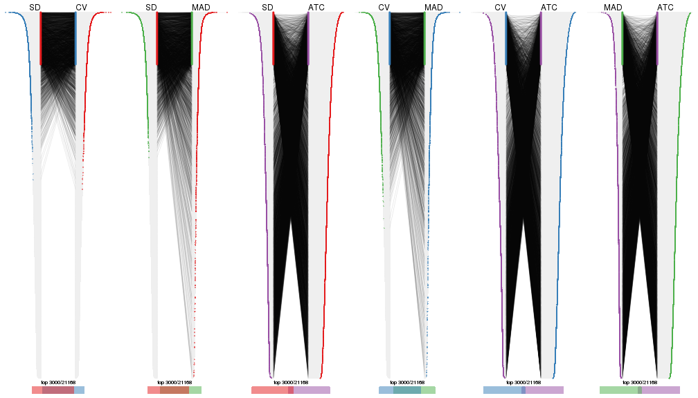
top_rows_overlap(res_list, top_n = 4000, method = "correspondance")
top_rows_overlap(res_list, top_n = 5000, method = "correspondance")
Heatmaps of the top rows:
top_rows_heatmap(res_list, top_n = 1000)
top_rows_heatmap(res_list, top_n = 2000)
top_rows_heatmap(res_list, top_n = 3000)
top_rows_heatmap(res_list, top_n = 4000)
top_rows_heatmap(res_list, top_n = 5000)

Test correlation between subgroups and known annotations. If the known annotation is numeric, one-way ANOVA test is applied, and if the known annotation is discrete, chi-squared contingency table test is applied.
test_to_known_factors(res_list, k = 2)
#> n disease.state(p) tissue(p) k
#> SD:NMF 52 5.73e-10 0.000862 2
#> CV:NMF 50 1.64e-10 0.000991 2
#> MAD:NMF 49 2.58e-10 0.001502 2
#> ATC:NMF 52 1.22e-07 0.000114 2
#> SD:skmeans 37 6.59e-08 0.011782 2
#> CV:skmeans 51 5.82e-08 0.009414 2
#> MAD:skmeans 54 2.66e-04 0.002441 2
#> ATC:skmeans 53 1.19e-07 0.005502 2
#> SD:mclust 54 2.67e-10 0.000164 2
#> CV:mclust 54 2.67e-10 0.000164 2
#> MAD:mclust 48 2.95e-02 0.025652 2
#> ATC:mclust 54 2.67e-10 0.000164 2
#> SD:kmeans 53 5.20e-11 0.000138 2
#> CV:kmeans 54 2.68e-11 0.000164 2
#> MAD:kmeans 53 4.20e-11 0.000227 2
#> ATC:kmeans 54 2.40e-09 0.000164 2
#> SD:pam 52 7.42e-01 0.008327 2
#> CV:pam 52 8.43e-01 0.012421 2
#> MAD:pam 53 5.44e-01 0.008875 2
#> ATC:pam 54 6.37e-06 0.000164 2
#> SD:hclust 52 8.13e-11 0.000191 2
#> CV:hclust 54 2.44e-10 0.000541 2
#> MAD:hclust 51 1.26e-11 0.000159 2
#> ATC:hclust 54 2.67e-10 0.000164 2
test_to_known_factors(res_list, k = 3)
#> n disease.state(p) tissue(p) k
#> SD:NMF 50 1.49e-10 1.22e-05 3
#> CV:NMF 50 1.48e-10 1.35e-05 3
#> MAD:NMF 51 9.47e-10 9.04e-05 3
#> ATC:NMF 50 9.75e-08 6.52e-07 3
#> SD:skmeans 54 2.08e-10 1.21e-04 3
#> CV:skmeans 52 5.48e-11 4.78e-05 3
#> MAD:skmeans 54 2.08e-10 1.21e-04 3
#> ATC:skmeans 54 9.01e-08 9.93e-04 3
#> SD:mclust 40 1.62e-08 1.69e-03 3
#> CV:mclust 13 NA NA 3
#> MAD:mclust 52 4.59e-10 1.88e-05 3
#> ATC:mclust 53 3.73e-10 1.73e-05 3
#> SD:kmeans 53 2.89e-10 5.59e-06 3
#> CV:kmeans 52 5.84e-11 4.20e-06 3
#> MAD:kmeans 51 9.34e-11 6.83e-06 3
#> ATC:kmeans 51 7.31e-09 9.08e-06 3
#> SD:pam 49 2.32e-09 2.48e-04 3
#> CV:pam 53 3.26e-10 7.09e-05 3
#> MAD:pam 51 1.06e-10 4.68e-05 3
#> ATC:pam 54 1.96e-09 1.44e-06 3
#> SD:hclust 51 1.10e-10 2.54e-07 3
#> CV:hclust 54 2.01e-10 1.27e-06 3
#> MAD:hclust 22 1.68e-04 3.50e-01 3
#> ATC:hclust 54 2.15e-10 2.67e-07 3
test_to_known_factors(res_list, k = 4)
#> n disease.state(p) tissue(p) k
#> SD:NMF 43 3.98e-09 6.54e-04 4
#> CV:NMF 43 3.98e-09 1.39e-04 4
#> MAD:NMF 48 1.83e-08 1.37e-06 4
#> ATC:NMF 52 1.20e-08 9.11e-07 4
#> SD:skmeans 53 1.78e-10 2.00e-07 4
#> CV:skmeans 48 2.13e-10 1.46e-07 4
#> MAD:skmeans 50 7.12e-10 2.24e-07 4
#> ATC:skmeans 50 3.76e-07 2.55e-04 4
#> SD:mclust 48 2.02e-09 4.25e-06 4
#> CV:mclust 47 3.60e-09 3.71e-06 4
#> MAD:mclust 52 2.20e-09 1.38e-06 4
#> ATC:mclust 53 9.68e-09 4.34e-07 4
#> SD:kmeans 38 5.60e-09 8.28e-04 4
#> CV:kmeans 43 2.46e-09 5.85e-05 4
#> MAD:kmeans 49 1.14e-09 3.95e-07 4
#> ATC:kmeans 50 7.25e-09 1.42e-07 4
#> SD:pam 46 1.06e-08 2.47e-04 4
#> CV:pam 52 2.69e-09 3.97e-07 4
#> MAD:pam 51 5.74e-10 1.15e-07 4
#> ATC:pam 52 2.22e-08 3.31e-06 4
#> SD:hclust 36 5.40e-07 1.04e-04 4
#> CV:hclust 48 7.34e-09 9.76e-07 4
#> MAD:hclust 49 1.30e-10 7.03e-09 4
#> ATC:hclust 51 4.14e-09 5.29e-05 4
test_to_known_factors(res_list, k = 5)
#> n disease.state(p) tissue(p) k
#> SD:NMF 49 5.23e-09 4.65e-09 5
#> CV:NMF 42 3.34e-08 1.57e-05 5
#> MAD:NMF 52 1.23e-09 7.85e-09 5
#> ATC:NMF 47 9.98e-08 1.18e-07 5
#> SD:skmeans 51 2.23e-10 1.18e-08 5
#> CV:skmeans 48 9.44e-10 4.99e-08 5
#> MAD:skmeans 48 9.44e-10 1.61e-08 5
#> ATC:skmeans 48 1.37e-08 3.20e-03 5
#> SD:mclust 47 5.57e-08 1.10e-04 5
#> CV:mclust 50 2.90e-09 3.79e-05 5
#> MAD:mclust 53 2.00e-09 4.20e-06 5
#> ATC:mclust 53 5.85e-09 4.97e-10 5
#> SD:kmeans 46 4.99e-09 4.41e-06 5
#> CV:kmeans 47 1.52e-09 6.15e-09 5
#> MAD:kmeans 49 1.30e-10 3.10e-07 5
#> ATC:kmeans 41 7.04e-08 2.32e-06 5
#> SD:pam 49 4.51e-08 1.16e-09 5
#> CV:pam 52 1.11e-08 1.83e-09 5
#> MAD:pam 47 1.94e-08 1.44e-10 5
#> ATC:pam 42 3.61e-06 2.40e-05 5
#> SD:hclust 35 3.03e-06 2.27e-05 5
#> CV:hclust 13 1.54e-02 1.63e-01 5
#> MAD:hclust 49 5.84e-10 1.39e-11 5
#> ATC:hclust 54 4.78e-09 5.06e-10 5
test_to_known_factors(res_list, k = 6)
#> n disease.state(p) tissue(p) k
#> SD:NMF 53 3.24e-09 3.00e-07 6
#> CV:NMF 45 8.37e-08 5.22e-11 6
#> MAD:NMF 48 1.02e-08 4.69e-10 6
#> ATC:NMF 32 1.91e-06 6.28e-05 6
#> SD:skmeans 48 1.11e-08 5.73e-09 6
#> CV:skmeans 49 9.69e-09 1.42e-08 6
#> MAD:skmeans 45 1.45e-08 6.26e-10 6
#> ATC:skmeans 42 2.01e-07 3.59e-04 6
#> SD:mclust 46 5.31e-08 2.50e-07 6
#> CV:mclust 43 7.17e-06 2.45e-10 6
#> MAD:mclust 50 7.58e-09 1.53e-06 6
#> ATC:mclust 51 5.55e-09 1.10e-12 6
#> SD:kmeans 45 1.84e-07 3.41e-12 6
#> CV:kmeans 53 3.30e-09 3.89e-12 6
#> MAD:kmeans 43 3.70e-08 4.66e-12 6
#> ATC:kmeans 28 1.25e-05 5.40e-05 6
#> SD:pam 54 1.65e-08 2.24e-11 6
#> CV:pam 48 1.97e-07 1.65e-10 6
#> MAD:pam 49 2.39e-08 6.96e-13 6
#> ATC:pam 53 2.24e-07 3.47e-08 6
#> SD:hclust 41 1.83e-06 2.09e-07 6
#> CV:hclust 47 4.00e-07 4.10e-10 6
#> MAD:hclust 44 6.42e-09 5.17e-10 6
#> ATC:hclust 54 4.78e-09 5.06e-10 6
The object with results only for a single top-value method and a single partition method can be extracted as:
res = res_list["SD", "hclust"]
# you can also extract it by
# res = res_list["SD:hclust"]
A summary of res and all the functions that can be applied to it:
res
#> A 'ConsensusPartition' object with k = 2, 3, 4, 5, 6.
#> On a matrix with 21168 rows and 54 columns.
#> Top rows (1000, 2000, 3000, 4000, 5000) are extracted by 'SD' method.
#> Subgroups are detected by 'hclust' method.
#> Performed in total 1250 partitions by row resampling.
#> Best k for subgroups seems to be 3.
#>
#> Following methods can be applied to this 'ConsensusPartition' object:
#> [1] "cola_report" "collect_classes" "collect_plots"
#> [4] "collect_stats" "colnames" "compare_signatures"
#> [7] "consensus_heatmap" "dimension_reduction" "functional_enrichment"
#> [10] "get_anno_col" "get_anno" "get_classes"
#> [13] "get_consensus" "get_matrix" "get_membership"
#> [16] "get_param" "get_signatures" "get_stats"
#> [19] "is_best_k" "is_stable_k" "membership_heatmap"
#> [22] "ncol" "nrow" "plot_ecdf"
#> [25] "rownames" "select_partition_number" "show"
#> [28] "suggest_best_k" "test_to_known_factors"
collect_plots() function collects all the plots made from res for all k (number of partitions)
into one single page to provide an easy and fast comparison between different k.
collect_plots(res)
The plots are:
k and the heatmap of
predicted classes for each k.k.k.k.All the plots in panels can be made by individual functions and they are plotted later in this section.
select_partition_number() produces several plots showing different
statistics for choosing “optimized” k. There are following statistics:
k;k, the area increased is defined as \(A_k - A_{k-1}\).The detailed explanations of these statistics can be found in the cola vignette.
Generally speaking, lower PAC score, higher mean silhouette score or higher
concordance corresponds to better partition. Rand index and Jaccard index
measure how similar the current partition is compared to partition with k-1.
If they are too similar, we won't accept k is better than k-1.
select_partition_number(res)
The numeric values for all these statistics can be obtained by get_stats().
get_stats(res)
#> k 1-PAC mean_silhouette concordance area_increased Rand Jaccard
#> 2 2 0.753 0.888 0.934 0.3275 0.628 0.628
#> 3 3 0.614 0.783 0.819 0.5587 0.906 0.853
#> 4 4 0.513 0.606 0.753 0.3119 0.755 0.560
#> 5 5 0.597 0.514 0.750 0.0788 0.896 0.686
#> 6 6 0.596 0.589 0.746 0.0508 0.862 0.548
suggest_best_k() suggests the best \(k\) based on these statistics. The rules are as follows:
suggest_best_k(res)
#> [1] 3
Following shows the table of the partitions (You need to click the show/hide
code output link to see it). The membership matrix (columns with name p*)
is inferred by
clue::cl_consensus()
function with the SE method. Basically the value in the membership matrix
represents the probability to belong to a certain group. The finall class
label for an item is determined with the group with highest probability it
belongs to.
In get_classes() function, the entropy is calculated from the membership
matrix and the silhouette score is calculated from the consensus matrix.
cbind(get_classes(res, k = 2), get_membership(res, k = 2))
#> class entropy silhouette p1 p2
#> GSM52556 2 0.3584 0.790 0.068 0.932
#> GSM52557 2 0.9129 0.770 0.328 0.672
#> GSM52558 2 0.9129 0.770 0.328 0.672
#> GSM52559 2 0.8386 0.804 0.268 0.732
#> GSM52560 2 0.9129 0.770 0.328 0.672
#> GSM52561 1 0.9427 0.184 0.640 0.360
#> GSM52562 2 0.9129 0.770 0.328 0.672
#> GSM52563 2 0.9209 0.755 0.336 0.664
#> GSM52564 1 0.3114 0.912 0.944 0.056
#> GSM52565 2 0.1414 0.779 0.020 0.980
#> GSM52566 2 0.8386 0.804 0.268 0.732
#> GSM52567 2 0.0000 0.767 0.000 1.000
#> GSM52568 2 0.7745 0.803 0.228 0.772
#> GSM52569 2 0.0938 0.772 0.012 0.988
#> GSM52570 2 0.1414 0.779 0.020 0.980
#> GSM52571 1 0.0000 0.967 1.000 0.000
#> GSM52572 1 0.2236 0.940 0.964 0.036
#> GSM52573 1 0.0000 0.967 1.000 0.000
#> GSM52574 1 0.0000 0.967 1.000 0.000
#> GSM52575 1 0.0000 0.967 1.000 0.000
#> GSM52576 1 0.0000 0.967 1.000 0.000
#> GSM52577 1 0.0000 0.967 1.000 0.000
#> GSM52578 1 0.0376 0.964 0.996 0.004
#> GSM52579 1 0.0376 0.964 0.996 0.004
#> GSM52580 1 0.2043 0.943 0.968 0.032
#> GSM52581 1 0.2043 0.943 0.968 0.032
#> GSM52582 1 0.0000 0.967 1.000 0.000
#> GSM52583 1 0.0000 0.967 1.000 0.000
#> GSM52584 1 0.0000 0.967 1.000 0.000
#> GSM52585 1 0.2236 0.940 0.964 0.036
#> GSM52586 1 0.2236 0.940 0.964 0.036
#> GSM52587 1 0.9427 0.184 0.640 0.360
#> GSM52588 1 0.0000 0.967 1.000 0.000
#> GSM52589 1 0.0000 0.967 1.000 0.000
#> GSM52590 1 0.0000 0.967 1.000 0.000
#> GSM52591 1 0.2236 0.940 0.964 0.036
#> GSM52592 1 0.0000 0.967 1.000 0.000
#> GSM52593 1 0.0000 0.967 1.000 0.000
#> GSM52594 1 0.0000 0.967 1.000 0.000
#> GSM52595 1 0.0000 0.967 1.000 0.000
#> GSM52596 1 0.0000 0.967 1.000 0.000
#> GSM52597 1 0.2236 0.940 0.964 0.036
#> GSM52598 1 0.0000 0.967 1.000 0.000
#> GSM52599 1 0.0000 0.967 1.000 0.000
#> GSM52600 1 0.0000 0.967 1.000 0.000
#> GSM52601 1 0.0000 0.967 1.000 0.000
#> GSM52602 1 0.0000 0.967 1.000 0.000
#> GSM52603 1 0.0000 0.967 1.000 0.000
#> GSM52604 1 0.0000 0.967 1.000 0.000
#> GSM52605 1 0.0000 0.967 1.000 0.000
#> GSM52606 1 0.0000 0.967 1.000 0.000
#> GSM52607 1 0.0000 0.967 1.000 0.000
#> GSM52608 1 0.0000 0.967 1.000 0.000
#> GSM52609 1 0.0000 0.967 1.000 0.000
cbind(get_classes(res, k = 3), get_membership(res, k = 3))
#> class entropy silhouette p1 p2 p3
#> GSM52556 3 0.6291 0.760 0.000 0.468 0.532
#> GSM52557 2 0.0000 0.705 0.000 1.000 0.000
#> GSM52558 2 0.0000 0.705 0.000 1.000 0.000
#> GSM52559 2 0.2796 0.608 0.000 0.908 0.092
#> GSM52560 2 0.0000 0.705 0.000 1.000 0.000
#> GSM52561 2 0.7418 0.400 0.248 0.672 0.080
#> GSM52562 2 0.0000 0.705 0.000 1.000 0.000
#> GSM52563 2 0.2356 0.659 0.000 0.928 0.072
#> GSM52564 1 0.5263 0.798 0.828 0.088 0.084
#> GSM52565 3 0.6168 0.877 0.000 0.412 0.588
#> GSM52566 2 0.2796 0.608 0.000 0.908 0.092
#> GSM52567 3 0.5926 0.874 0.000 0.356 0.644
#> GSM52568 2 0.5216 0.168 0.000 0.740 0.260
#> GSM52569 3 0.6298 0.870 0.004 0.388 0.608
#> GSM52570 3 0.6154 0.876 0.000 0.408 0.592
#> GSM52571 1 0.0424 0.886 0.992 0.000 0.008
#> GSM52572 1 0.7748 0.636 0.652 0.096 0.252
#> GSM52573 1 0.4887 0.836 0.844 0.060 0.096
#> GSM52574 1 0.4887 0.836 0.844 0.060 0.096
#> GSM52575 1 0.1182 0.886 0.976 0.012 0.012
#> GSM52576 1 0.1182 0.886 0.976 0.012 0.012
#> GSM52577 1 0.0424 0.886 0.992 0.000 0.008
#> GSM52578 1 0.5339 0.829 0.824 0.080 0.096
#> GSM52579 1 0.5339 0.829 0.824 0.080 0.096
#> GSM52580 1 0.7533 0.667 0.668 0.088 0.244
#> GSM52581 1 0.7533 0.667 0.668 0.088 0.244
#> GSM52582 1 0.1411 0.885 0.964 0.000 0.036
#> GSM52583 1 0.1289 0.885 0.968 0.000 0.032
#> GSM52584 1 0.2446 0.883 0.936 0.012 0.052
#> GSM52585 1 0.7848 0.632 0.640 0.096 0.264
#> GSM52586 1 0.7748 0.636 0.652 0.096 0.252
#> GSM52587 2 0.7418 0.400 0.248 0.672 0.080
#> GSM52588 1 0.0237 0.886 0.996 0.000 0.004
#> GSM52589 1 0.0424 0.886 0.992 0.000 0.008
#> GSM52590 1 0.3043 0.870 0.908 0.008 0.084
#> GSM52591 1 0.7065 0.688 0.700 0.072 0.228
#> GSM52592 1 0.0424 0.886 0.992 0.000 0.008
#> GSM52593 1 0.0237 0.886 0.996 0.000 0.004
#> GSM52594 1 0.0237 0.886 0.996 0.000 0.004
#> GSM52595 1 0.0237 0.886 0.996 0.000 0.004
#> GSM52596 1 0.0237 0.886 0.996 0.000 0.004
#> GSM52597 1 0.7065 0.688 0.700 0.072 0.228
#> GSM52598 1 0.0424 0.886 0.992 0.000 0.008
#> GSM52599 1 0.0424 0.886 0.992 0.000 0.008
#> GSM52600 1 0.0424 0.886 0.992 0.000 0.008
#> GSM52601 1 0.2229 0.872 0.944 0.012 0.044
#> GSM52602 1 0.3043 0.870 0.908 0.008 0.084
#> GSM52603 1 0.3043 0.870 0.908 0.008 0.084
#> GSM52604 1 0.3043 0.870 0.908 0.008 0.084
#> GSM52605 1 0.3043 0.870 0.908 0.008 0.084
#> GSM52606 1 0.4887 0.836 0.844 0.060 0.096
#> GSM52607 1 0.4887 0.836 0.844 0.060 0.096
#> GSM52608 1 0.4887 0.836 0.844 0.060 0.096
#> GSM52609 1 0.4887 0.836 0.844 0.060 0.096
cbind(get_classes(res, k = 4), get_membership(res, k = 4))
#> class entropy silhouette p1 p2 p3 p4
#> GSM52556 4 0.5662 0.780 0.000 0.236 0.072 0.692
#> GSM52557 2 0.0336 0.756 0.000 0.992 0.008 0.000
#> GSM52558 2 0.0336 0.756 0.000 0.992 0.008 0.000
#> GSM52559 2 0.2704 0.661 0.000 0.876 0.000 0.124
#> GSM52560 2 0.0336 0.756 0.000 0.992 0.008 0.000
#> GSM52561 2 0.7051 0.473 0.100 0.656 0.192 0.052
#> GSM52562 2 0.0336 0.756 0.000 0.992 0.008 0.000
#> GSM52563 2 0.2335 0.713 0.000 0.920 0.020 0.060
#> GSM52564 1 0.7500 0.631 0.576 0.080 0.288 0.056
#> GSM52565 4 0.4500 0.842 0.000 0.316 0.000 0.684
#> GSM52566 2 0.2704 0.661 0.000 0.876 0.000 0.124
#> GSM52567 4 0.4188 0.852 0.000 0.244 0.004 0.752
#> GSM52568 2 0.4720 0.334 0.000 0.720 0.016 0.264
#> GSM52569 4 0.4290 0.836 0.000 0.212 0.016 0.772
#> GSM52570 4 0.4720 0.834 0.000 0.324 0.004 0.672
#> GSM52571 1 0.4500 0.749 0.684 0.000 0.316 0.000
#> GSM52572 1 0.8561 0.435 0.488 0.072 0.284 0.156
#> GSM52573 3 0.4992 0.659 0.476 0.000 0.524 0.000
#> GSM52574 3 0.4992 0.659 0.476 0.000 0.524 0.000
#> GSM52575 1 0.4996 0.432 0.516 0.000 0.484 0.000
#> GSM52576 1 0.4996 0.432 0.516 0.000 0.484 0.000
#> GSM52577 1 0.4585 0.728 0.668 0.000 0.332 0.000
#> GSM52578 3 0.5899 0.628 0.284 0.020 0.664 0.032
#> GSM52579 3 0.5899 0.628 0.284 0.020 0.664 0.032
#> GSM52580 3 0.7779 0.270 0.192 0.064 0.600 0.144
#> GSM52581 3 0.7779 0.270 0.192 0.064 0.600 0.144
#> GSM52582 3 0.4319 0.376 0.228 0.000 0.760 0.012
#> GSM52583 3 0.4284 0.372 0.224 0.000 0.764 0.012
#> GSM52584 3 0.4955 0.242 0.272 0.004 0.708 0.016
#> GSM52585 3 0.8027 0.270 0.188 0.072 0.580 0.160
#> GSM52586 1 0.8561 0.435 0.488 0.072 0.284 0.156
#> GSM52587 2 0.7051 0.473 0.100 0.656 0.192 0.052
#> GSM52588 1 0.4543 0.748 0.676 0.000 0.324 0.000
#> GSM52589 1 0.4605 0.725 0.664 0.000 0.336 0.000
#> GSM52590 1 0.0859 0.433 0.980 0.004 0.008 0.008
#> GSM52591 1 0.8182 0.509 0.528 0.056 0.268 0.148
#> GSM52592 1 0.4500 0.749 0.684 0.000 0.316 0.000
#> GSM52593 1 0.4543 0.748 0.676 0.000 0.324 0.000
#> GSM52594 1 0.4543 0.748 0.676 0.000 0.324 0.000
#> GSM52595 1 0.4543 0.748 0.676 0.000 0.324 0.000
#> GSM52596 1 0.4543 0.748 0.676 0.000 0.324 0.000
#> GSM52597 1 0.8182 0.509 0.528 0.056 0.268 0.148
#> GSM52598 1 0.4500 0.749 0.684 0.000 0.316 0.000
#> GSM52599 1 0.4500 0.749 0.684 0.000 0.316 0.000
#> GSM52600 1 0.4500 0.749 0.684 0.000 0.316 0.000
#> GSM52601 1 0.5583 0.728 0.648 0.008 0.320 0.024
#> GSM52602 1 0.0859 0.433 0.980 0.004 0.008 0.008
#> GSM52603 1 0.0859 0.433 0.980 0.004 0.008 0.008
#> GSM52604 1 0.0859 0.433 0.980 0.004 0.008 0.008
#> GSM52605 1 0.0859 0.433 0.980 0.004 0.008 0.008
#> GSM52606 3 0.4992 0.659 0.476 0.000 0.524 0.000
#> GSM52607 3 0.4992 0.659 0.476 0.000 0.524 0.000
#> GSM52608 3 0.4992 0.659 0.476 0.000 0.524 0.000
#> GSM52609 3 0.4992 0.659 0.476 0.000 0.524 0.000
cbind(get_classes(res, k = 5), get_membership(res, k = 5))
#> class entropy silhouette p1 p2 p3 p4 p5
#> GSM52556 5 0.541 0.561 0.000 0.000 0.064 0.380 0.556
#> GSM52557 2 0.000 0.768 0.000 1.000 0.000 0.000 0.000
#> GSM52558 2 0.000 0.768 0.000 1.000 0.000 0.000 0.000
#> GSM52559 2 0.350 0.660 0.000 0.808 0.004 0.016 0.172
#> GSM52560 2 0.000 0.768 0.000 1.000 0.000 0.000 0.000
#> GSM52561 2 0.648 0.493 0.064 0.652 0.180 0.088 0.016
#> GSM52562 2 0.000 0.768 0.000 1.000 0.000 0.000 0.000
#> GSM52563 2 0.244 0.731 0.000 0.908 0.008 0.040 0.044
#> GSM52564 1 0.726 0.519 0.524 0.068 0.300 0.092 0.016
#> GSM52565 5 0.497 0.622 0.000 0.280 0.000 0.060 0.660
#> GSM52566 2 0.350 0.660 0.000 0.808 0.004 0.016 0.172
#> GSM52567 5 0.289 0.644 0.000 0.176 0.000 0.000 0.824
#> GSM52568 2 0.413 0.440 0.000 0.720 0.000 0.020 0.260
#> GSM52569 5 0.443 0.605 0.000 0.000 0.016 0.336 0.648
#> GSM52570 5 0.377 0.592 0.000 0.296 0.000 0.000 0.704
#> GSM52571 1 0.453 0.732 0.596 0.000 0.392 0.012 0.000
#> GSM52572 4 0.629 0.195 0.432 0.016 0.096 0.456 0.000
#> GSM52573 3 0.419 0.594 0.404 0.000 0.596 0.000 0.000
#> GSM52574 3 0.419 0.594 0.404 0.000 0.596 0.000 0.000
#> GSM52575 3 0.477 -0.442 0.420 0.000 0.560 0.020 0.000
#> GSM52576 3 0.477 -0.442 0.420 0.000 0.560 0.020 0.000
#> GSM52577 1 0.474 0.705 0.576 0.000 0.404 0.020 0.000
#> GSM52578 3 0.554 0.467 0.220 0.008 0.660 0.112 0.000
#> GSM52579 3 0.554 0.467 0.220 0.008 0.660 0.112 0.000
#> GSM52580 4 0.587 0.541 0.064 0.016 0.388 0.532 0.000
#> GSM52581 4 0.587 0.541 0.064 0.016 0.388 0.532 0.000
#> GSM52582 3 0.292 0.233 0.016 0.000 0.852 0.132 0.000
#> GSM52583 3 0.287 0.230 0.016 0.000 0.856 0.128 0.000
#> GSM52584 3 0.438 0.051 0.048 0.008 0.760 0.184 0.000
#> GSM52585 4 0.581 0.532 0.064 0.016 0.360 0.560 0.000
#> GSM52586 4 0.629 0.195 0.432 0.016 0.096 0.456 0.000
#> GSM52587 2 0.648 0.493 0.064 0.652 0.180 0.088 0.016
#> GSM52588 1 0.433 0.733 0.596 0.000 0.400 0.004 0.000
#> GSM52589 1 0.474 0.701 0.572 0.000 0.408 0.020 0.000
#> GSM52590 1 0.088 0.384 0.968 0.000 0.000 0.032 0.000
#> GSM52591 1 0.624 0.111 0.500 0.000 0.156 0.344 0.000
#> GSM52592 1 0.453 0.732 0.596 0.000 0.392 0.012 0.000
#> GSM52593 1 0.433 0.733 0.596 0.000 0.400 0.004 0.000
#> GSM52594 1 0.433 0.733 0.596 0.000 0.400 0.004 0.000
#> GSM52595 1 0.433 0.733 0.596 0.000 0.400 0.004 0.000
#> GSM52596 1 0.433 0.733 0.596 0.000 0.400 0.004 0.000
#> GSM52597 1 0.624 0.111 0.500 0.000 0.156 0.344 0.000
#> GSM52598 1 0.453 0.732 0.596 0.000 0.392 0.012 0.000
#> GSM52599 1 0.453 0.732 0.596 0.000 0.392 0.012 0.000
#> GSM52600 1 0.453 0.732 0.596 0.000 0.392 0.012 0.000
#> GSM52601 1 0.538 0.687 0.568 0.000 0.368 0.064 0.000
#> GSM52602 1 0.088 0.384 0.968 0.000 0.000 0.032 0.000
#> GSM52603 1 0.088 0.384 0.968 0.000 0.000 0.032 0.000
#> GSM52604 1 0.088 0.384 0.968 0.000 0.000 0.032 0.000
#> GSM52605 1 0.088 0.384 0.968 0.000 0.000 0.032 0.000
#> GSM52606 3 0.419 0.594 0.404 0.000 0.596 0.000 0.000
#> GSM52607 3 0.419 0.594 0.404 0.000 0.596 0.000 0.000
#> GSM52608 3 0.419 0.594 0.404 0.000 0.596 0.000 0.000
#> GSM52609 3 0.419 0.594 0.404 0.000 0.596 0.000 0.000
cbind(get_classes(res, k = 6), get_membership(res, k = 6))
#> class entropy silhouette p1 p2 p3 p4 p5 p6
#> GSM52556 2 0.0146 0.8878 0.000 0.996 0.004 0.000 0.000 0.000
#> GSM52557 6 0.0000 0.7960 0.000 0.000 0.000 0.000 0.000 1.000
#> GSM52558 6 0.0000 0.7960 0.000 0.000 0.000 0.000 0.000 1.000
#> GSM52559 6 0.2730 0.6908 0.000 0.192 0.000 0.000 0.000 0.808
#> GSM52560 6 0.0000 0.7960 0.000 0.000 0.000 0.000 0.000 1.000
#> GSM52561 6 0.5294 0.5250 0.240 0.000 0.020 0.076 0.012 0.652
#> GSM52562 6 0.0000 0.7960 0.000 0.000 0.000 0.000 0.000 1.000
#> GSM52563 6 0.2009 0.7647 0.000 0.068 0.000 0.024 0.000 0.908
#> GSM52564 1 0.3789 0.6867 0.820 0.000 0.020 0.080 0.012 0.068
#> GSM52565 5 0.8925 -0.3205 0.000 0.164 0.188 0.204 0.252 0.192
#> GSM52566 6 0.2730 0.6908 0.000 0.192 0.000 0.000 0.000 0.808
#> GSM52567 5 0.8342 -0.3129 0.000 0.124 0.204 0.256 0.340 0.076
#> GSM52568 6 0.5015 0.5512 0.000 0.004 0.032 0.092 0.168 0.704
#> GSM52569 2 0.2858 0.8870 0.000 0.864 0.028 0.016 0.092 0.000
#> GSM52570 5 0.7708 -0.2303 0.000 0.004 0.208 0.256 0.340 0.192
#> GSM52571 1 0.0146 0.8222 0.996 0.000 0.004 0.000 0.000 0.000
#> GSM52572 1 0.3862 0.1474 0.524 0.000 0.000 0.476 0.000 0.000
#> GSM52573 3 0.4640 0.6979 0.048 0.000 0.576 0.000 0.376 0.000
#> GSM52574 3 0.4640 0.6979 0.048 0.000 0.576 0.000 0.376 0.000
#> GSM52575 1 0.3678 0.5602 0.748 0.000 0.228 0.008 0.016 0.000
#> GSM52576 1 0.3678 0.5602 0.748 0.000 0.228 0.008 0.016 0.000
#> GSM52577 1 0.1349 0.7927 0.940 0.000 0.056 0.004 0.000 0.000
#> GSM52578 3 0.6385 0.5472 0.116 0.000 0.572 0.128 0.184 0.000
#> GSM52579 3 0.6385 0.5472 0.116 0.000 0.572 0.128 0.184 0.000
#> GSM52580 4 0.4383 0.9809 0.108 0.000 0.176 0.716 0.000 0.000
#> GSM52581 4 0.4383 0.9809 0.108 0.000 0.176 0.716 0.000 0.000
#> GSM52582 3 0.5781 -0.0285 0.184 0.000 0.540 0.268 0.008 0.000
#> GSM52583 3 0.5804 -0.0327 0.188 0.000 0.536 0.268 0.008 0.000
#> GSM52584 3 0.6160 -0.2948 0.224 0.000 0.428 0.340 0.008 0.000
#> GSM52585 4 0.4131 0.9622 0.100 0.000 0.156 0.744 0.000 0.000
#> GSM52586 1 0.3862 0.1474 0.524 0.000 0.000 0.476 0.000 0.000
#> GSM52587 6 0.5294 0.5250 0.240 0.000 0.020 0.076 0.012 0.652
#> GSM52588 1 0.0363 0.8217 0.988 0.000 0.012 0.000 0.000 0.000
#> GSM52589 1 0.1462 0.7908 0.936 0.000 0.056 0.008 0.000 0.000
#> GSM52590 5 0.3672 0.4790 0.368 0.000 0.000 0.000 0.632 0.000
#> GSM52591 1 0.3531 0.5006 0.672 0.000 0.000 0.328 0.000 0.000
#> GSM52592 1 0.0146 0.8222 0.996 0.000 0.004 0.000 0.000 0.000
#> GSM52593 1 0.0363 0.8217 0.988 0.000 0.012 0.000 0.000 0.000
#> GSM52594 1 0.0363 0.8217 0.988 0.000 0.012 0.000 0.000 0.000
#> GSM52595 1 0.0363 0.8217 0.988 0.000 0.012 0.000 0.000 0.000
#> GSM52596 1 0.0363 0.8217 0.988 0.000 0.012 0.000 0.000 0.000
#> GSM52597 1 0.3531 0.5006 0.672 0.000 0.000 0.328 0.000 0.000
#> GSM52598 1 0.0146 0.8222 0.996 0.000 0.004 0.000 0.000 0.000
#> GSM52599 1 0.0146 0.8222 0.996 0.000 0.004 0.000 0.000 0.000
#> GSM52600 1 0.0146 0.8222 0.996 0.000 0.004 0.000 0.000 0.000
#> GSM52601 1 0.1075 0.7988 0.952 0.000 0.000 0.048 0.000 0.000
#> GSM52602 5 0.3672 0.4790 0.368 0.000 0.000 0.000 0.632 0.000
#> GSM52603 5 0.3672 0.4790 0.368 0.000 0.000 0.000 0.632 0.000
#> GSM52604 5 0.3672 0.4790 0.368 0.000 0.000 0.000 0.632 0.000
#> GSM52605 5 0.3672 0.4790 0.368 0.000 0.000 0.000 0.632 0.000
#> GSM52606 3 0.4640 0.6979 0.048 0.000 0.576 0.000 0.376 0.000
#> GSM52607 3 0.4640 0.6979 0.048 0.000 0.576 0.000 0.376 0.000
#> GSM52608 3 0.4640 0.6979 0.048 0.000 0.576 0.000 0.376 0.000
#> GSM52609 3 0.4640 0.6979 0.048 0.000 0.576 0.000 0.376 0.000
Heatmaps for the consensus matrix. It visualizes the probability of two samples to be in a same group.
consensus_heatmap(res, k = 2)
consensus_heatmap(res, k = 3)
consensus_heatmap(res, k = 4)
consensus_heatmap(res, k = 5)
consensus_heatmap(res, k = 6)

Heatmaps for the membership of samples in all partitions to see how consistent they are:
membership_heatmap(res, k = 2)
membership_heatmap(res, k = 3)
membership_heatmap(res, k = 4)
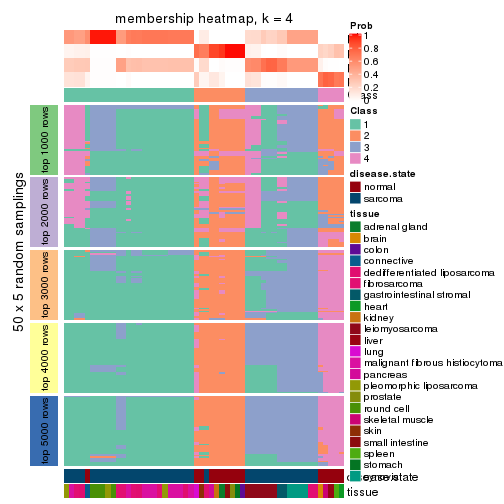
membership_heatmap(res, k = 5)
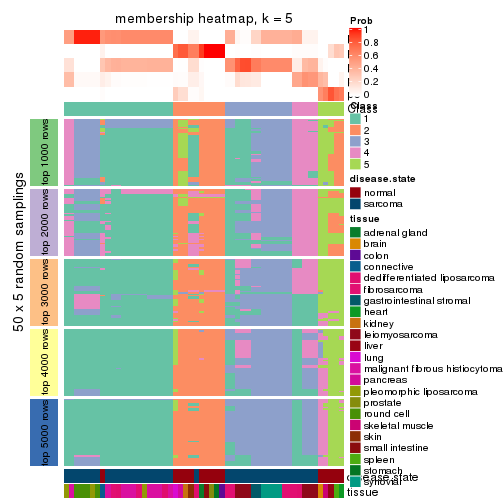
membership_heatmap(res, k = 6)
As soon as we have had the classes for columns, we can look for signatures which are significantly different between classes which can be candidate marks for certain classes. Following are the heatmaps for signatures.
Signature heatmaps where rows are scaled:
get_signatures(res, k = 2)
get_signatures(res, k = 3)
get_signatures(res, k = 4)
get_signatures(res, k = 5)

get_signatures(res, k = 6)
Signature heatmaps where rows are not scaled:
get_signatures(res, k = 2, scale_rows = FALSE)
get_signatures(res, k = 3, scale_rows = FALSE)
get_signatures(res, k = 4, scale_rows = FALSE)
get_signatures(res, k = 5, scale_rows = FALSE)
get_signatures(res, k = 6, scale_rows = FALSE)
Compare the overlap of signatures from different k:
compare_signatures(res)
get_signature() returns a data frame invisibly. TO get the list of signatures, the function
call should be assigned to a variable explicitly. In following code, if plot argument is set
to FALSE, no heatmap is plotted while only the differential analysis is performed.
# code only for demonstration
tb = get_signature(res, k = ..., plot = FALSE)
An example of the output of tb is:
#> which_row fdr mean_1 mean_2 scaled_mean_1 scaled_mean_2 km
#> 1 38 0.042760348 8.373488 9.131774 -0.5533452 0.5164555 1
#> 2 40 0.018707592 7.106213 8.469186 -0.6173731 0.5762149 1
#> 3 55 0.019134737 10.221463 11.207825 -0.6159697 0.5749050 1
#> 4 59 0.006059896 5.921854 7.869574 -0.6899429 0.6439467 1
#> 5 60 0.018055526 8.928898 10.211722 -0.6204761 0.5791110 1
#> 6 98 0.009384629 15.714769 14.887706 0.6635654 -0.6193277 2
...
The columns in tb are:
which_row: row indices corresponding to the input matrix.fdr: FDR for the differential test. mean_x: The mean value in group x.scaled_mean_x: The mean value in group x after rows are scaled.km: Row groups if k-means clustering is applied to rows.UMAP plot which shows how samples are separated.
dimension_reduction(res, k = 2, method = "UMAP")
dimension_reduction(res, k = 3, method = "UMAP")
dimension_reduction(res, k = 4, method = "UMAP")
dimension_reduction(res, k = 5, method = "UMAP")
dimension_reduction(res, k = 6, method = "UMAP")
Following heatmap shows how subgroups are split when increasing k:
collect_classes(res)
Test correlation between subgroups and known annotations. If the known annotation is numeric, one-way ANOVA test is applied, and if the known annotation is discrete, chi-squared contingency table test is applied.
test_to_known_factors(res)
#> n disease.state(p) tissue(p) k
#> SD:hclust 52 8.13e-11 1.91e-04 2
#> SD:hclust 51 1.10e-10 2.54e-07 3
#> SD:hclust 36 5.40e-07 1.04e-04 4
#> SD:hclust 35 3.03e-06 2.27e-05 5
#> SD:hclust 41 1.83e-06 2.09e-07 6
If matrix rows can be associated to genes, consider to use functional_enrichment(res,
...) to perform function enrichment for the signature genes. See this vignette for more detailed explanations.
The object with results only for a single top-value method and a single partition method can be extracted as:
res = res_list["SD", "kmeans"]
# you can also extract it by
# res = res_list["SD:kmeans"]
A summary of res and all the functions that can be applied to it:
res
#> A 'ConsensusPartition' object with k = 2, 3, 4, 5, 6.
#> On a matrix with 21168 rows and 54 columns.
#> Top rows (1000, 2000, 3000, 4000, 5000) are extracted by 'SD' method.
#> Subgroups are detected by 'kmeans' method.
#> Performed in total 1250 partitions by row resampling.
#> Best k for subgroups seems to be 3.
#>
#> Following methods can be applied to this 'ConsensusPartition' object:
#> [1] "cola_report" "collect_classes" "collect_plots"
#> [4] "collect_stats" "colnames" "compare_signatures"
#> [7] "consensus_heatmap" "dimension_reduction" "functional_enrichment"
#> [10] "get_anno_col" "get_anno" "get_classes"
#> [13] "get_consensus" "get_matrix" "get_membership"
#> [16] "get_param" "get_signatures" "get_stats"
#> [19] "is_best_k" "is_stable_k" "membership_heatmap"
#> [22] "ncol" "nrow" "plot_ecdf"
#> [25] "rownames" "select_partition_number" "show"
#> [28] "suggest_best_k" "test_to_known_factors"
collect_plots() function collects all the plots made from res for all k (number of partitions)
into one single page to provide an easy and fast comparison between different k.
collect_plots(res)

The plots are:
k and the heatmap of
predicted classes for each k.k.k.k.All the plots in panels can be made by individual functions and they are plotted later in this section.
select_partition_number() produces several plots showing different
statistics for choosing “optimized” k. There are following statistics:
k;k, the area increased is defined as \(A_k - A_{k-1}\).The detailed explanations of these statistics can be found in the cola vignette.
Generally speaking, lower PAC score, higher mean silhouette score or higher
concordance corresponds to better partition. Rand index and Jaccard index
measure how similar the current partition is compared to partition with k-1.
If they are too similar, we won't accept k is better than k-1.
select_partition_number(res)

The numeric values for all these statistics can be obtained by get_stats().
get_stats(res)
#> k 1-PAC mean_silhouette concordance area_increased Rand Jaccard
#> 2 2 0.631 0.920 0.940 0.3985 0.628 0.628
#> 3 3 0.583 0.869 0.882 0.5375 0.727 0.566
#> 4 4 0.546 0.479 0.793 0.1358 0.955 0.880
#> 5 5 0.718 0.680 0.767 0.1014 0.890 0.692
#> 6 6 0.722 0.687 0.793 0.0516 0.925 0.717
suggest_best_k() suggests the best \(k\) based on these statistics. The rules are as follows:
suggest_best_k(res)
#> [1] 3
Following shows the table of the partitions (You need to click the show/hide
code output link to see it). The membership matrix (columns with name p*)
is inferred by
clue::cl_consensus()
function with the SE method. Basically the value in the membership matrix
represents the probability to belong to a certain group. The finall class
label for an item is determined with the group with highest probability it
belongs to.
In get_classes() function, the entropy is calculated from the membership
matrix and the silhouette score is calculated from the consensus matrix.
cbind(get_classes(res, k = 2), get_membership(res, k = 2))
#> class entropy silhouette p1 p2
#> GSM52556 2 0.1843 0.941 0.028 0.972
#> GSM52557 2 0.2423 0.995 0.040 0.960
#> GSM52558 2 0.2423 0.995 0.040 0.960
#> GSM52559 2 0.2423 0.995 0.040 0.960
#> GSM52560 2 0.2423 0.995 0.040 0.960
#> GSM52561 1 0.9795 0.262 0.584 0.416
#> GSM52562 2 0.2423 0.995 0.040 0.960
#> GSM52563 2 0.2423 0.995 0.040 0.960
#> GSM52564 1 0.1414 0.934 0.980 0.020
#> GSM52565 2 0.2423 0.995 0.040 0.960
#> GSM52566 2 0.2423 0.995 0.040 0.960
#> GSM52567 2 0.2423 0.995 0.040 0.960
#> GSM52568 2 0.2423 0.995 0.040 0.960
#> GSM52569 2 0.2423 0.995 0.040 0.960
#> GSM52570 2 0.2423 0.995 0.040 0.960
#> GSM52571 1 0.1414 0.934 0.980 0.020
#> GSM52572 1 0.1414 0.934 0.980 0.020
#> GSM52573 1 0.5842 0.878 0.860 0.140
#> GSM52574 1 0.5842 0.878 0.860 0.140
#> GSM52575 1 0.2043 0.918 0.968 0.032
#> GSM52576 1 0.2043 0.918 0.968 0.032
#> GSM52577 1 0.2043 0.918 0.968 0.032
#> GSM52578 1 0.5737 0.881 0.864 0.136
#> GSM52579 1 0.5737 0.881 0.864 0.136
#> GSM52580 1 0.1843 0.931 0.972 0.028
#> GSM52581 1 0.1843 0.931 0.972 0.028
#> GSM52582 1 0.1843 0.921 0.972 0.028
#> GSM52583 1 0.1843 0.931 0.972 0.028
#> GSM52584 1 0.1843 0.931 0.972 0.028
#> GSM52585 1 0.1843 0.931 0.972 0.028
#> GSM52586 1 0.1414 0.934 0.980 0.020
#> GSM52587 1 0.4815 0.880 0.896 0.104
#> GSM52588 1 0.1184 0.934 0.984 0.016
#> GSM52589 1 0.0938 0.933 0.988 0.012
#> GSM52590 1 0.0000 0.930 1.000 0.000
#> GSM52591 1 0.1414 0.934 0.980 0.020
#> GSM52592 1 0.1414 0.934 0.980 0.020
#> GSM52593 1 0.1414 0.934 0.980 0.020
#> GSM52594 1 0.1414 0.934 0.980 0.020
#> GSM52595 1 0.1414 0.934 0.980 0.020
#> GSM52596 1 0.1414 0.934 0.980 0.020
#> GSM52597 1 0.1414 0.934 0.980 0.020
#> GSM52598 1 0.1414 0.934 0.980 0.020
#> GSM52599 1 0.1414 0.934 0.980 0.020
#> GSM52600 1 0.1414 0.934 0.980 0.020
#> GSM52601 1 0.1414 0.934 0.980 0.020
#> GSM52602 1 0.5842 0.878 0.860 0.140
#> GSM52603 1 0.5842 0.878 0.860 0.140
#> GSM52604 1 0.5842 0.878 0.860 0.140
#> GSM52605 1 0.5842 0.878 0.860 0.140
#> GSM52606 1 0.5842 0.878 0.860 0.140
#> GSM52607 1 0.5842 0.878 0.860 0.140
#> GSM52608 1 0.5842 0.878 0.860 0.140
#> GSM52609 1 0.5842 0.878 0.860 0.140
cbind(get_classes(res, k = 3), get_membership(res, k = 3))
#> class entropy silhouette p1 p2 p3
#> GSM52556 2 0.103 0.959 0.000 0.976 0.024
#> GSM52557 2 0.398 0.934 0.068 0.884 0.048
#> GSM52558 2 0.398 0.934 0.068 0.884 0.048
#> GSM52559 2 0.183 0.963 0.008 0.956 0.036
#> GSM52560 2 0.206 0.961 0.008 0.948 0.044
#> GSM52561 1 0.642 0.627 0.752 0.180 0.068
#> GSM52562 2 0.398 0.934 0.068 0.884 0.048
#> GSM52563 2 0.101 0.965 0.008 0.980 0.012
#> GSM52564 1 0.240 0.859 0.932 0.004 0.064
#> GSM52565 2 0.132 0.965 0.008 0.972 0.020
#> GSM52566 2 0.183 0.963 0.008 0.956 0.036
#> GSM52567 2 0.132 0.965 0.008 0.972 0.020
#> GSM52568 2 0.101 0.966 0.008 0.980 0.012
#> GSM52569 2 0.132 0.965 0.008 0.972 0.020
#> GSM52570 2 0.132 0.965 0.008 0.972 0.020
#> GSM52571 1 0.463 0.863 0.808 0.004 0.188
#> GSM52572 1 0.220 0.863 0.940 0.004 0.056
#> GSM52573 3 0.327 0.915 0.104 0.004 0.892
#> GSM52574 3 0.327 0.915 0.104 0.004 0.892
#> GSM52575 3 0.312 0.913 0.108 0.000 0.892
#> GSM52576 3 0.556 0.677 0.300 0.000 0.700
#> GSM52577 3 0.565 0.654 0.312 0.000 0.688
#> GSM52578 3 0.520 0.818 0.236 0.004 0.760
#> GSM52579 3 0.520 0.818 0.236 0.004 0.760
#> GSM52580 1 0.000 0.831 1.000 0.000 0.000
#> GSM52581 1 0.000 0.831 1.000 0.000 0.000
#> GSM52582 1 0.341 0.839 0.876 0.000 0.124
#> GSM52583 1 0.226 0.860 0.932 0.000 0.068
#> GSM52584 1 0.226 0.860 0.932 0.000 0.068
#> GSM52585 1 0.000 0.831 1.000 0.000 0.000
#> GSM52586 1 0.220 0.863 0.940 0.004 0.056
#> GSM52587 1 0.195 0.798 0.952 0.040 0.008
#> GSM52588 1 0.463 0.863 0.808 0.004 0.188
#> GSM52589 1 0.463 0.863 0.808 0.004 0.188
#> GSM52590 1 0.672 0.409 0.568 0.012 0.420
#> GSM52591 1 0.220 0.863 0.940 0.004 0.056
#> GSM52592 1 0.463 0.863 0.808 0.004 0.188
#> GSM52593 1 0.463 0.863 0.808 0.004 0.188
#> GSM52594 1 0.463 0.863 0.808 0.004 0.188
#> GSM52595 1 0.458 0.865 0.812 0.004 0.184
#> GSM52596 1 0.463 0.863 0.808 0.004 0.188
#> GSM52597 1 0.220 0.863 0.940 0.004 0.056
#> GSM52598 1 0.429 0.869 0.832 0.004 0.164
#> GSM52599 1 0.463 0.863 0.808 0.004 0.188
#> GSM52600 1 0.458 0.865 0.812 0.004 0.184
#> GSM52601 1 0.371 0.872 0.868 0.004 0.128
#> GSM52602 3 0.296 0.891 0.080 0.008 0.912
#> GSM52603 3 0.296 0.891 0.080 0.008 0.912
#> GSM52604 3 0.296 0.891 0.080 0.008 0.912
#> GSM52605 3 0.296 0.891 0.080 0.008 0.912
#> GSM52606 3 0.327 0.915 0.104 0.004 0.892
#> GSM52607 3 0.327 0.915 0.104 0.004 0.892
#> GSM52608 3 0.327 0.915 0.104 0.004 0.892
#> GSM52609 3 0.327 0.915 0.104 0.004 0.892
cbind(get_classes(res, k = 4), get_membership(res, k = 4))
#> class entropy silhouette p1 p2 p3 p4
#> GSM52556 2 0.0707 0.866 0.000 0.980 0.020 0.000
#> GSM52557 2 0.5030 0.797 0.004 0.640 0.004 0.352
#> GSM52558 2 0.5030 0.797 0.004 0.640 0.004 0.352
#> GSM52559 2 0.4284 0.854 0.000 0.780 0.020 0.200
#> GSM52560 2 0.4262 0.848 0.000 0.756 0.008 0.236
#> GSM52561 1 0.7982 -0.292 0.388 0.220 0.008 0.384
#> GSM52562 2 0.5030 0.797 0.004 0.640 0.004 0.352
#> GSM52563 2 0.0707 0.866 0.000 0.980 0.020 0.000
#> GSM52564 1 0.3636 0.337 0.820 0.000 0.008 0.172
#> GSM52565 2 0.1938 0.857 0.000 0.936 0.012 0.052
#> GSM52566 2 0.4284 0.854 0.000 0.780 0.020 0.200
#> GSM52567 2 0.1584 0.856 0.000 0.952 0.012 0.036
#> GSM52568 2 0.2408 0.866 0.000 0.896 0.000 0.104
#> GSM52569 2 0.1706 0.856 0.000 0.948 0.016 0.036
#> GSM52570 2 0.1938 0.857 0.000 0.936 0.012 0.052
#> GSM52571 1 0.1174 0.587 0.968 0.000 0.020 0.012
#> GSM52572 1 0.3300 0.406 0.848 0.000 0.008 0.144
#> GSM52573 3 0.2589 0.821 0.116 0.000 0.884 0.000
#> GSM52574 3 0.2589 0.821 0.116 0.000 0.884 0.000
#> GSM52575 3 0.3196 0.809 0.136 0.000 0.856 0.008
#> GSM52576 3 0.5290 0.279 0.476 0.000 0.516 0.008
#> GSM52577 1 0.5488 -0.208 0.532 0.000 0.452 0.016
#> GSM52578 3 0.6204 0.679 0.192 0.004 0.680 0.124
#> GSM52579 3 0.6204 0.679 0.192 0.004 0.680 0.124
#> GSM52580 1 0.5590 -0.813 0.524 0.000 0.020 0.456
#> GSM52581 1 0.5590 -0.813 0.524 0.000 0.020 0.456
#> GSM52582 1 0.6440 -0.516 0.564 0.000 0.080 0.356
#> GSM52583 1 0.5203 -0.447 0.636 0.000 0.016 0.348
#> GSM52584 1 0.5269 -0.499 0.620 0.000 0.016 0.364
#> GSM52585 1 0.5590 -0.813 0.524 0.000 0.020 0.456
#> GSM52586 1 0.3681 0.337 0.816 0.000 0.008 0.176
#> GSM52587 4 0.6018 0.000 0.468 0.016 0.016 0.500
#> GSM52588 1 0.1042 0.588 0.972 0.000 0.020 0.008
#> GSM52589 1 0.1174 0.585 0.968 0.000 0.020 0.012
#> GSM52590 1 0.7076 0.147 0.600 0.008 0.172 0.220
#> GSM52591 1 0.2737 0.466 0.888 0.000 0.008 0.104
#> GSM52592 1 0.1042 0.588 0.972 0.000 0.020 0.008
#> GSM52593 1 0.1174 0.587 0.968 0.000 0.020 0.012
#> GSM52594 1 0.1174 0.587 0.968 0.000 0.020 0.012
#> GSM52595 1 0.1174 0.587 0.968 0.000 0.020 0.012
#> GSM52596 1 0.1042 0.588 0.972 0.000 0.020 0.008
#> GSM52597 1 0.3300 0.406 0.848 0.000 0.008 0.144
#> GSM52598 1 0.0804 0.586 0.980 0.000 0.012 0.008
#> GSM52599 1 0.1174 0.587 0.968 0.000 0.020 0.012
#> GSM52600 1 0.1174 0.587 0.968 0.000 0.020 0.012
#> GSM52601 1 0.0672 0.578 0.984 0.000 0.008 0.008
#> GSM52602 3 0.6697 0.699 0.124 0.012 0.644 0.220
#> GSM52603 3 0.6697 0.699 0.124 0.012 0.644 0.220
#> GSM52604 3 0.6697 0.699 0.124 0.012 0.644 0.220
#> GSM52605 3 0.6697 0.699 0.124 0.012 0.644 0.220
#> GSM52606 3 0.2589 0.821 0.116 0.000 0.884 0.000
#> GSM52607 3 0.2589 0.821 0.116 0.000 0.884 0.000
#> GSM52608 3 0.2589 0.821 0.116 0.000 0.884 0.000
#> GSM52609 3 0.2589 0.821 0.116 0.000 0.884 0.000
cbind(get_classes(res, k = 5), get_membership(res, k = 5))
#> class entropy silhouette p1 p2 p3 p4 p5
#> GSM52556 2 0.4623 0.7585 0.000 0.664 0.000 0.032 NA
#> GSM52557 2 0.3112 0.7011 0.000 0.856 0.000 0.100 NA
#> GSM52558 2 0.3112 0.7011 0.000 0.856 0.000 0.100 NA
#> GSM52559 2 0.1310 0.7551 0.000 0.956 0.000 0.020 NA
#> GSM52560 2 0.0510 0.7457 0.000 0.984 0.000 0.016 NA
#> GSM52561 2 0.7508 0.0624 0.180 0.480 0.000 0.264 NA
#> GSM52562 2 0.3112 0.7011 0.000 0.856 0.000 0.100 NA
#> GSM52563 2 0.4623 0.7585 0.000 0.664 0.000 0.032 NA
#> GSM52564 1 0.4701 0.5608 0.704 0.000 0.000 0.236 NA
#> GSM52565 2 0.4403 0.7372 0.000 0.560 0.000 0.004 NA
#> GSM52566 2 0.1310 0.7551 0.000 0.956 0.000 0.020 NA
#> GSM52567 2 0.4375 0.7371 0.000 0.576 0.000 0.004 NA
#> GSM52568 2 0.4452 0.7628 0.000 0.696 0.000 0.032 NA
#> GSM52569 2 0.4489 0.7354 0.000 0.572 0.000 0.008 NA
#> GSM52570 2 0.4403 0.7372 0.000 0.560 0.000 0.004 NA
#> GSM52571 1 0.0613 0.8033 0.984 0.000 0.004 0.004 NA
#> GSM52572 1 0.4136 0.6349 0.764 0.000 0.000 0.188 NA
#> GSM52573 3 0.0865 0.7333 0.024 0.000 0.972 0.000 NA
#> GSM52574 3 0.0865 0.7333 0.024 0.000 0.972 0.000 NA
#> GSM52575 3 0.2945 0.7014 0.044 0.000 0.884 0.016 NA
#> GSM52576 3 0.5900 0.2475 0.376 0.000 0.540 0.016 NA
#> GSM52577 1 0.6112 -0.0759 0.476 0.000 0.432 0.020 NA
#> GSM52578 3 0.6088 0.5730 0.052 0.004 0.672 0.164 NA
#> GSM52579 3 0.6088 0.5730 0.052 0.004 0.672 0.164 NA
#> GSM52580 4 0.3231 0.8990 0.196 0.000 0.000 0.800 NA
#> GSM52581 4 0.3231 0.8975 0.196 0.000 0.000 0.800 NA
#> GSM52582 4 0.5566 0.8252 0.216 0.000 0.068 0.680 NA
#> GSM52583 4 0.4526 0.8248 0.300 0.000 0.000 0.672 NA
#> GSM52584 4 0.4430 0.8604 0.256 0.000 0.000 0.708 NA
#> GSM52585 4 0.3231 0.8975 0.196 0.000 0.000 0.800 NA
#> GSM52586 1 0.4689 0.5191 0.688 0.000 0.000 0.264 NA
#> GSM52587 4 0.3653 0.8735 0.164 0.016 0.000 0.808 NA
#> GSM52588 1 0.1243 0.7940 0.960 0.000 0.004 0.008 NA
#> GSM52589 1 0.1934 0.7716 0.928 0.000 0.004 0.016 NA
#> GSM52590 1 0.7545 0.0482 0.412 0.000 0.080 0.144 NA
#> GSM52591 1 0.3882 0.6625 0.788 0.000 0.000 0.168 NA
#> GSM52592 1 0.0451 0.8041 0.988 0.000 0.004 0.000 NA
#> GSM52593 1 0.1074 0.8036 0.968 0.000 0.004 0.016 NA
#> GSM52594 1 0.1074 0.8036 0.968 0.000 0.004 0.016 NA
#> GSM52595 1 0.1074 0.8036 0.968 0.000 0.004 0.016 NA
#> GSM52596 1 0.0740 0.8042 0.980 0.000 0.004 0.008 NA
#> GSM52597 1 0.4031 0.6433 0.772 0.000 0.000 0.184 NA
#> GSM52598 1 0.0579 0.8028 0.984 0.000 0.000 0.008 NA
#> GSM52599 1 0.0613 0.8033 0.984 0.000 0.004 0.004 NA
#> GSM52600 1 0.0613 0.8033 0.984 0.000 0.004 0.004 NA
#> GSM52601 1 0.1310 0.7938 0.956 0.000 0.000 0.024 NA
#> GSM52602 3 0.7511 0.4800 0.080 0.000 0.424 0.140 NA
#> GSM52603 3 0.7511 0.4800 0.080 0.000 0.424 0.140 NA
#> GSM52604 3 0.7511 0.4800 0.080 0.000 0.424 0.140 NA
#> GSM52605 3 0.7511 0.4800 0.080 0.000 0.424 0.140 NA
#> GSM52606 3 0.0992 0.7312 0.024 0.000 0.968 0.000 NA
#> GSM52607 3 0.0703 0.7334 0.024 0.000 0.976 0.000 NA
#> GSM52608 3 0.0703 0.7334 0.024 0.000 0.976 0.000 NA
#> GSM52609 3 0.0703 0.7334 0.024 0.000 0.976 0.000 NA
cbind(get_classes(res, k = 6), get_membership(res, k = 6))
#> class entropy silhouette p1 p2 p3 p4 p5 p6
#> GSM52556 2 0.3498 0.6332 0.000 0.836 0.004 0.024 0.064 0.072
#> GSM52557 6 0.4230 0.7079 0.000 0.324 0.000 0.024 0.004 0.648
#> GSM52558 6 0.4230 0.7079 0.000 0.324 0.000 0.024 0.004 0.648
#> GSM52559 2 0.5386 -0.2870 0.000 0.496 0.004 0.020 0.052 0.428
#> GSM52560 6 0.4474 0.4184 0.000 0.440 0.000 0.012 0.012 0.536
#> GSM52561 6 0.6500 0.3463 0.104 0.088 0.000 0.132 0.052 0.624
#> GSM52562 6 0.4230 0.7079 0.000 0.324 0.000 0.024 0.004 0.648
#> GSM52563 2 0.3440 0.6347 0.000 0.840 0.004 0.024 0.060 0.072
#> GSM52564 1 0.5799 0.6203 0.628 0.000 0.000 0.172 0.060 0.140
#> GSM52565 2 0.1232 0.6694 0.000 0.956 0.000 0.004 0.024 0.016
#> GSM52566 2 0.5386 -0.2870 0.000 0.496 0.004 0.020 0.052 0.428
#> GSM52567 2 0.0146 0.6773 0.000 0.996 0.000 0.000 0.004 0.000
#> GSM52568 2 0.3954 0.3560 0.000 0.688 0.000 0.008 0.012 0.292
#> GSM52569 2 0.0806 0.6758 0.000 0.972 0.000 0.008 0.020 0.000
#> GSM52570 2 0.1237 0.6681 0.000 0.956 0.000 0.004 0.020 0.020
#> GSM52571 1 0.1350 0.8259 0.952 0.000 0.000 0.008 0.020 0.020
#> GSM52572 1 0.5275 0.6677 0.684 0.000 0.000 0.152 0.052 0.112
#> GSM52573 3 0.1293 0.7678 0.004 0.000 0.956 0.016 0.004 0.020
#> GSM52574 3 0.1293 0.7678 0.004 0.000 0.956 0.016 0.004 0.020
#> GSM52575 3 0.3986 0.7000 0.024 0.000 0.816 0.028 0.068 0.064
#> GSM52576 3 0.6602 0.3868 0.296 0.000 0.528 0.028 0.072 0.076
#> GSM52577 1 0.7125 0.0105 0.464 0.000 0.320 0.040 0.080 0.096
#> GSM52578 3 0.6977 0.4750 0.036 0.000 0.536 0.220 0.076 0.132
#> GSM52579 3 0.6977 0.4750 0.036 0.000 0.536 0.220 0.076 0.132
#> GSM52580 4 0.1812 0.9320 0.080 0.000 0.000 0.912 0.000 0.008
#> GSM52581 4 0.2094 0.9297 0.080 0.000 0.000 0.900 0.000 0.020
#> GSM52582 4 0.3292 0.9022 0.104 0.000 0.016 0.840 0.036 0.004
#> GSM52583 4 0.3155 0.9003 0.132 0.000 0.000 0.828 0.036 0.004
#> GSM52584 4 0.2959 0.9193 0.104 0.000 0.000 0.852 0.036 0.008
#> GSM52585 4 0.2176 0.9284 0.080 0.000 0.000 0.896 0.000 0.024
#> GSM52586 1 0.5607 0.6223 0.644 0.000 0.000 0.180 0.052 0.124
#> GSM52587 4 0.2842 0.9080 0.068 0.000 0.000 0.872 0.020 0.040
#> GSM52588 1 0.2177 0.8086 0.908 0.000 0.000 0.008 0.032 0.052
#> GSM52589 1 0.3617 0.7505 0.816 0.000 0.000 0.016 0.088 0.080
#> GSM52590 5 0.4196 0.6410 0.240 0.000 0.040 0.008 0.712 0.000
#> GSM52591 1 0.4988 0.6908 0.708 0.000 0.000 0.140 0.040 0.112
#> GSM52592 1 0.0363 0.8313 0.988 0.000 0.000 0.000 0.000 0.012
#> GSM52593 1 0.1296 0.8295 0.952 0.000 0.000 0.012 0.004 0.032
#> GSM52594 1 0.1296 0.8295 0.952 0.000 0.000 0.012 0.004 0.032
#> GSM52595 1 0.1296 0.8295 0.952 0.000 0.000 0.012 0.004 0.032
#> GSM52596 1 0.1116 0.8286 0.960 0.000 0.000 0.008 0.004 0.028
#> GSM52597 1 0.5038 0.6836 0.704 0.000 0.000 0.148 0.044 0.104
#> GSM52598 1 0.1167 0.8292 0.960 0.000 0.000 0.008 0.012 0.020
#> GSM52599 1 0.1350 0.8259 0.952 0.000 0.000 0.008 0.020 0.020
#> GSM52600 1 0.1350 0.8259 0.952 0.000 0.000 0.008 0.020 0.020
#> GSM52601 1 0.1605 0.8285 0.940 0.000 0.000 0.016 0.012 0.032
#> GSM52602 5 0.4201 0.8963 0.028 0.000 0.252 0.008 0.708 0.004
#> GSM52603 5 0.4379 0.8947 0.028 0.000 0.248 0.012 0.704 0.008
#> GSM52604 5 0.4201 0.8963 0.028 0.000 0.252 0.008 0.708 0.004
#> GSM52605 5 0.4177 0.8966 0.028 0.000 0.248 0.008 0.712 0.004
#> GSM52606 3 0.0146 0.7758 0.004 0.000 0.996 0.000 0.000 0.000
#> GSM52607 3 0.0146 0.7758 0.004 0.000 0.996 0.000 0.000 0.000
#> GSM52608 3 0.0146 0.7758 0.004 0.000 0.996 0.000 0.000 0.000
#> GSM52609 3 0.0146 0.7758 0.004 0.000 0.996 0.000 0.000 0.000
Heatmaps for the consensus matrix. It visualizes the probability of two samples to be in a same group.
consensus_heatmap(res, k = 2)
consensus_heatmap(res, k = 3)
consensus_heatmap(res, k = 4)
consensus_heatmap(res, k = 5)
consensus_heatmap(res, k = 6)
Heatmaps for the membership of samples in all partitions to see how consistent they are:
membership_heatmap(res, k = 2)
membership_heatmap(res, k = 3)
membership_heatmap(res, k = 4)
membership_heatmap(res, k = 5)
membership_heatmap(res, k = 6)

As soon as we have had the classes for columns, we can look for signatures which are significantly different between classes which can be candidate marks for certain classes. Following are the heatmaps for signatures.
Signature heatmaps where rows are scaled:
get_signatures(res, k = 2)
get_signatures(res, k = 3)
get_signatures(res, k = 4)
get_signatures(res, k = 5)
get_signatures(res, k = 6)
Signature heatmaps where rows are not scaled:
get_signatures(res, k = 2, scale_rows = FALSE)
get_signatures(res, k = 3, scale_rows = FALSE)
get_signatures(res, k = 4, scale_rows = FALSE)
get_signatures(res, k = 5, scale_rows = FALSE)
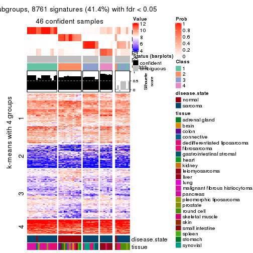
get_signatures(res, k = 6, scale_rows = FALSE)

Compare the overlap of signatures from different k:
compare_signatures(res)
get_signature() returns a data frame invisibly. TO get the list of signatures, the function
call should be assigned to a variable explicitly. In following code, if plot argument is set
to FALSE, no heatmap is plotted while only the differential analysis is performed.
# code only for demonstration
tb = get_signature(res, k = ..., plot = FALSE)
An example of the output of tb is:
#> which_row fdr mean_1 mean_2 scaled_mean_1 scaled_mean_2 km
#> 1 38 0.042760348 8.373488 9.131774 -0.5533452 0.5164555 1
#> 2 40 0.018707592 7.106213 8.469186 -0.6173731 0.5762149 1
#> 3 55 0.019134737 10.221463 11.207825 -0.6159697 0.5749050 1
#> 4 59 0.006059896 5.921854 7.869574 -0.6899429 0.6439467 1
#> 5 60 0.018055526 8.928898 10.211722 -0.6204761 0.5791110 1
#> 6 98 0.009384629 15.714769 14.887706 0.6635654 -0.6193277 2
...
The columns in tb are:
which_row: row indices corresponding to the input matrix.fdr: FDR for the differential test. mean_x: The mean value in group x.scaled_mean_x: The mean value in group x after rows are scaled.km: Row groups if k-means clustering is applied to rows.UMAP plot which shows how samples are separated.
dimension_reduction(res, k = 2, method = "UMAP")
dimension_reduction(res, k = 3, method = "UMAP")
dimension_reduction(res, k = 4, method = "UMAP")
dimension_reduction(res, k = 5, method = "UMAP")
dimension_reduction(res, k = 6, method = "UMAP")
Following heatmap shows how subgroups are split when increasing k:
collect_classes(res)
Test correlation between subgroups and known annotations. If the known annotation is numeric, one-way ANOVA test is applied, and if the known annotation is discrete, chi-squared contingency table test is applied.
test_to_known_factors(res)
#> n disease.state(p) tissue(p) k
#> SD:kmeans 53 5.20e-11 1.38e-04 2
#> SD:kmeans 53 2.89e-10 5.59e-06 3
#> SD:kmeans 38 5.60e-09 8.28e-04 4
#> SD:kmeans 46 4.99e-09 4.41e-06 5
#> SD:kmeans 45 1.84e-07 3.41e-12 6
If matrix rows can be associated to genes, consider to use functional_enrichment(res,
...) to perform function enrichment for the signature genes. See this vignette for more detailed explanations.
The object with results only for a single top-value method and a single partition method can be extracted as:
res = res_list["SD", "skmeans"]
# you can also extract it by
# res = res_list["SD:skmeans"]
A summary of res and all the functions that can be applied to it:
res
#> A 'ConsensusPartition' object with k = 2, 3, 4, 5, 6.
#> On a matrix with 21168 rows and 54 columns.
#> Top rows (1000, 2000, 3000, 4000, 5000) are extracted by 'SD' method.
#> Subgroups are detected by 'skmeans' method.
#> Performed in total 1250 partitions by row resampling.
#> Best k for subgroups seems to be 3.
#>
#> Following methods can be applied to this 'ConsensusPartition' object:
#> [1] "cola_report" "collect_classes" "collect_plots"
#> [4] "collect_stats" "colnames" "compare_signatures"
#> [7] "consensus_heatmap" "dimension_reduction" "functional_enrichment"
#> [10] "get_anno_col" "get_anno" "get_classes"
#> [13] "get_consensus" "get_matrix" "get_membership"
#> [16] "get_param" "get_signatures" "get_stats"
#> [19] "is_best_k" "is_stable_k" "membership_heatmap"
#> [22] "ncol" "nrow" "plot_ecdf"
#> [25] "rownames" "select_partition_number" "show"
#> [28] "suggest_best_k" "test_to_known_factors"
collect_plots() function collects all the plots made from res for all k (number of partitions)
into one single page to provide an easy and fast comparison between different k.
collect_plots(res)
The plots are:
k and the heatmap of
predicted classes for each k.k.k.k.All the plots in panels can be made by individual functions and they are plotted later in this section.
select_partition_number() produces several plots showing different
statistics for choosing “optimized” k. There are following statistics:
k;k, the area increased is defined as \(A_k - A_{k-1}\).The detailed explanations of these statistics can be found in the cola vignette.
Generally speaking, lower PAC score, higher mean silhouette score or higher
concordance corresponds to better partition. Rand index and Jaccard index
measure how similar the current partition is compared to partition with k-1.
If they are too similar, we won't accept k is better than k-1.
select_partition_number(res)
The numeric values for all these statistics can be obtained by get_stats().
get_stats(res)
#> k 1-PAC mean_silhouette concordance area_increased Rand Jaccard
#> 2 2 0.477 0.639 0.846 0.4974 0.516 0.516
#> 3 3 1.000 0.990 0.995 0.3465 0.673 0.442
#> 4 4 0.784 0.851 0.914 0.1136 0.912 0.739
#> 5 5 0.839 0.848 0.899 0.0597 0.962 0.851
#> 6 6 0.805 0.724 0.851 0.0436 0.979 0.904
suggest_best_k() suggests the best \(k\) based on these statistics. The rules are as follows:
suggest_best_k(res)
#> [1] 3
Following shows the table of the partitions (You need to click the show/hide
code output link to see it). The membership matrix (columns with name p*)
is inferred by
clue::cl_consensus()
function with the SE method. Basically the value in the membership matrix
represents the probability to belong to a certain group. The finall class
label for an item is determined with the group with highest probability it
belongs to.
In get_classes() function, the entropy is calculated from the membership
matrix and the silhouette score is calculated from the consensus matrix.
cbind(get_classes(res, k = 2), get_membership(res, k = 2))
#> class entropy silhouette p1 p2
#> GSM52556 2 0.0000 0.806 0.000 1.000
#> GSM52557 2 0.0000 0.806 0.000 1.000
#> GSM52558 2 0.0000 0.806 0.000 1.000
#> GSM52559 2 0.0000 0.806 0.000 1.000
#> GSM52560 2 0.0000 0.806 0.000 1.000
#> GSM52561 2 0.3114 0.771 0.056 0.944
#> GSM52562 2 0.0000 0.806 0.000 1.000
#> GSM52563 2 0.0000 0.806 0.000 1.000
#> GSM52564 2 0.9970 0.305 0.468 0.532
#> GSM52565 2 0.0000 0.806 0.000 1.000
#> GSM52566 2 0.0000 0.806 0.000 1.000
#> GSM52567 2 0.0000 0.806 0.000 1.000
#> GSM52568 2 0.0000 0.806 0.000 1.000
#> GSM52569 2 0.0000 0.806 0.000 1.000
#> GSM52570 2 0.0000 0.806 0.000 1.000
#> GSM52571 1 0.0000 0.764 1.000 0.000
#> GSM52572 1 0.4161 0.686 0.916 0.084
#> GSM52573 1 0.9933 0.403 0.548 0.452
#> GSM52574 1 0.9933 0.403 0.548 0.452
#> GSM52575 1 0.0000 0.764 1.000 0.000
#> GSM52576 1 0.0000 0.764 1.000 0.000
#> GSM52577 1 0.0000 0.764 1.000 0.000
#> GSM52578 1 0.9954 0.392 0.540 0.460
#> GSM52579 2 0.8081 0.434 0.248 0.752
#> GSM52580 2 0.9970 0.305 0.468 0.532
#> GSM52581 2 0.9970 0.305 0.468 0.532
#> GSM52582 1 0.0000 0.764 1.000 0.000
#> GSM52583 1 0.0000 0.764 1.000 0.000
#> GSM52584 1 0.0000 0.764 1.000 0.000
#> GSM52585 2 0.9970 0.305 0.468 0.532
#> GSM52586 2 0.9970 0.305 0.468 0.532
#> GSM52587 2 0.5737 0.704 0.136 0.864
#> GSM52588 1 0.0000 0.764 1.000 0.000
#> GSM52589 1 0.0000 0.764 1.000 0.000
#> GSM52590 1 0.0938 0.757 0.988 0.012
#> GSM52591 1 0.6973 0.545 0.812 0.188
#> GSM52592 1 0.0000 0.764 1.000 0.000
#> GSM52593 1 0.0000 0.764 1.000 0.000
#> GSM52594 1 0.0000 0.764 1.000 0.000
#> GSM52595 1 0.0000 0.764 1.000 0.000
#> GSM52596 1 0.0000 0.764 1.000 0.000
#> GSM52597 1 0.6973 0.545 0.812 0.188
#> GSM52598 1 0.0000 0.764 1.000 0.000
#> GSM52599 1 0.0000 0.764 1.000 0.000
#> GSM52600 1 0.0000 0.764 1.000 0.000
#> GSM52601 1 0.0000 0.764 1.000 0.000
#> GSM52602 1 0.9970 0.381 0.532 0.468
#> GSM52603 1 0.9970 0.381 0.532 0.468
#> GSM52604 1 0.9970 0.381 0.532 0.468
#> GSM52605 1 0.9970 0.381 0.532 0.468
#> GSM52606 1 0.9944 0.398 0.544 0.456
#> GSM52607 1 0.9954 0.393 0.540 0.460
#> GSM52608 1 0.9944 0.398 0.544 0.456
#> GSM52609 1 0.9944 0.398 0.544 0.456
cbind(get_classes(res, k = 3), get_membership(res, k = 3))
#> class entropy silhouette p1 p2 p3
#> GSM52556 2 0.0000 1.000 0.000 1.000 0.000
#> GSM52557 2 0.0000 1.000 0.000 1.000 0.000
#> GSM52558 2 0.0000 1.000 0.000 1.000 0.000
#> GSM52559 2 0.0000 1.000 0.000 1.000 0.000
#> GSM52560 2 0.0000 1.000 0.000 1.000 0.000
#> GSM52561 2 0.0000 1.000 0.000 1.000 0.000
#> GSM52562 2 0.0000 1.000 0.000 1.000 0.000
#> GSM52563 2 0.0000 1.000 0.000 1.000 0.000
#> GSM52564 1 0.1163 0.972 0.972 0.028 0.000
#> GSM52565 2 0.0000 1.000 0.000 1.000 0.000
#> GSM52566 2 0.0000 1.000 0.000 1.000 0.000
#> GSM52567 2 0.0000 1.000 0.000 1.000 0.000
#> GSM52568 2 0.0000 1.000 0.000 1.000 0.000
#> GSM52569 2 0.0000 1.000 0.000 1.000 0.000
#> GSM52570 2 0.0000 1.000 0.000 1.000 0.000
#> GSM52571 1 0.0000 0.998 1.000 0.000 0.000
#> GSM52572 1 0.0000 0.998 1.000 0.000 0.000
#> GSM52573 3 0.0000 0.985 0.000 0.000 1.000
#> GSM52574 3 0.0000 0.985 0.000 0.000 1.000
#> GSM52575 3 0.0000 0.985 0.000 0.000 1.000
#> GSM52576 3 0.0424 0.980 0.008 0.000 0.992
#> GSM52577 3 0.0747 0.974 0.016 0.000 0.984
#> GSM52578 3 0.0000 0.985 0.000 0.000 1.000
#> GSM52579 3 0.0000 0.985 0.000 0.000 1.000
#> GSM52580 1 0.0237 0.995 0.996 0.004 0.000
#> GSM52581 1 0.0237 0.995 0.996 0.004 0.000
#> GSM52582 3 0.3412 0.860 0.124 0.000 0.876
#> GSM52583 1 0.0000 0.998 1.000 0.000 0.000
#> GSM52584 1 0.0000 0.998 1.000 0.000 0.000
#> GSM52585 1 0.0237 0.995 0.996 0.004 0.000
#> GSM52586 1 0.0000 0.998 1.000 0.000 0.000
#> GSM52587 2 0.0000 1.000 0.000 1.000 0.000
#> GSM52588 1 0.0000 0.998 1.000 0.000 0.000
#> GSM52589 1 0.0592 0.987 0.988 0.000 0.012
#> GSM52590 3 0.2165 0.928 0.064 0.000 0.936
#> GSM52591 1 0.0000 0.998 1.000 0.000 0.000
#> GSM52592 1 0.0000 0.998 1.000 0.000 0.000
#> GSM52593 1 0.0000 0.998 1.000 0.000 0.000
#> GSM52594 1 0.0000 0.998 1.000 0.000 0.000
#> GSM52595 1 0.0000 0.998 1.000 0.000 0.000
#> GSM52596 1 0.0000 0.998 1.000 0.000 0.000
#> GSM52597 1 0.0000 0.998 1.000 0.000 0.000
#> GSM52598 1 0.0000 0.998 1.000 0.000 0.000
#> GSM52599 1 0.0000 0.998 1.000 0.000 0.000
#> GSM52600 1 0.0000 0.998 1.000 0.000 0.000
#> GSM52601 1 0.0000 0.998 1.000 0.000 0.000
#> GSM52602 3 0.0000 0.985 0.000 0.000 1.000
#> GSM52603 3 0.0000 0.985 0.000 0.000 1.000
#> GSM52604 3 0.0000 0.985 0.000 0.000 1.000
#> GSM52605 3 0.0000 0.985 0.000 0.000 1.000
#> GSM52606 3 0.0000 0.985 0.000 0.000 1.000
#> GSM52607 3 0.0000 0.985 0.000 0.000 1.000
#> GSM52608 3 0.0000 0.985 0.000 0.000 1.000
#> GSM52609 3 0.0000 0.985 0.000 0.000 1.000
cbind(get_classes(res, k = 4), get_membership(res, k = 4))
#> class entropy silhouette p1 p2 p3 p4
#> GSM52556 2 0.0000 0.996 0.000 1.000 0.000 0.000
#> GSM52557 2 0.0000 0.996 0.000 1.000 0.000 0.000
#> GSM52558 2 0.0000 0.996 0.000 1.000 0.000 0.000
#> GSM52559 2 0.0000 0.996 0.000 1.000 0.000 0.000
#> GSM52560 2 0.0000 0.996 0.000 1.000 0.000 0.000
#> GSM52561 2 0.1389 0.947 0.000 0.952 0.000 0.048
#> GSM52562 2 0.0000 0.996 0.000 1.000 0.000 0.000
#> GSM52563 2 0.0000 0.996 0.000 1.000 0.000 0.000
#> GSM52564 1 0.3688 0.768 0.792 0.000 0.000 0.208
#> GSM52565 2 0.0000 0.996 0.000 1.000 0.000 0.000
#> GSM52566 2 0.0000 0.996 0.000 1.000 0.000 0.000
#> GSM52567 2 0.0000 0.996 0.000 1.000 0.000 0.000
#> GSM52568 2 0.0000 0.996 0.000 1.000 0.000 0.000
#> GSM52569 2 0.0000 0.996 0.000 1.000 0.000 0.000
#> GSM52570 2 0.0000 0.996 0.000 1.000 0.000 0.000
#> GSM52571 1 0.0336 0.907 0.992 0.000 0.000 0.008
#> GSM52572 1 0.3528 0.782 0.808 0.000 0.000 0.192
#> GSM52573 3 0.0000 0.844 0.000 0.000 1.000 0.000
#> GSM52574 3 0.0000 0.844 0.000 0.000 1.000 0.000
#> GSM52575 3 0.0592 0.839 0.016 0.000 0.984 0.000
#> GSM52576 3 0.3852 0.703 0.192 0.000 0.800 0.008
#> GSM52577 3 0.4741 0.531 0.328 0.000 0.668 0.004
#> GSM52578 3 0.4072 0.616 0.000 0.000 0.748 0.252
#> GSM52579 3 0.4252 0.612 0.000 0.004 0.744 0.252
#> GSM52580 4 0.2921 0.879 0.140 0.000 0.000 0.860
#> GSM52581 4 0.2921 0.879 0.140 0.000 0.000 0.860
#> GSM52582 4 0.3900 0.714 0.020 0.000 0.164 0.816
#> GSM52583 4 0.3569 0.833 0.196 0.000 0.000 0.804
#> GSM52584 4 0.2973 0.876 0.144 0.000 0.000 0.856
#> GSM52585 4 0.2868 0.880 0.136 0.000 0.000 0.864
#> GSM52586 1 0.4277 0.651 0.720 0.000 0.000 0.280
#> GSM52587 4 0.3942 0.648 0.000 0.236 0.000 0.764
#> GSM52588 1 0.1302 0.889 0.956 0.000 0.000 0.044
#> GSM52589 1 0.5113 0.677 0.760 0.000 0.088 0.152
#> GSM52590 3 0.7202 0.243 0.396 0.000 0.464 0.140
#> GSM52591 1 0.3024 0.823 0.852 0.000 0.000 0.148
#> GSM52592 1 0.0188 0.908 0.996 0.000 0.000 0.004
#> GSM52593 1 0.0000 0.908 1.000 0.000 0.000 0.000
#> GSM52594 1 0.0000 0.908 1.000 0.000 0.000 0.000
#> GSM52595 1 0.0000 0.908 1.000 0.000 0.000 0.000
#> GSM52596 1 0.0188 0.907 0.996 0.000 0.000 0.004
#> GSM52597 1 0.3024 0.823 0.852 0.000 0.000 0.148
#> GSM52598 1 0.0469 0.907 0.988 0.000 0.000 0.012
#> GSM52599 1 0.0336 0.907 0.992 0.000 0.000 0.008
#> GSM52600 1 0.0336 0.907 0.992 0.000 0.000 0.008
#> GSM52601 1 0.0000 0.908 1.000 0.000 0.000 0.000
#> GSM52602 3 0.2814 0.813 0.000 0.000 0.868 0.132
#> GSM52603 3 0.3142 0.809 0.000 0.008 0.860 0.132
#> GSM52604 3 0.2814 0.813 0.000 0.000 0.868 0.132
#> GSM52605 3 0.2814 0.813 0.000 0.000 0.868 0.132
#> GSM52606 3 0.0000 0.844 0.000 0.000 1.000 0.000
#> GSM52607 3 0.0000 0.844 0.000 0.000 1.000 0.000
#> GSM52608 3 0.0000 0.844 0.000 0.000 1.000 0.000
#> GSM52609 3 0.0000 0.844 0.000 0.000 1.000 0.000
cbind(get_classes(res, k = 5), get_membership(res, k = 5))
#> class entropy silhouette p1 p2 p3 p4 p5
#> GSM52556 2 0.0451 0.965 0.000 0.988 0.004 0.000 0.008
#> GSM52557 2 0.1668 0.953 0.000 0.940 0.000 0.028 0.032
#> GSM52558 2 0.1668 0.953 0.000 0.940 0.000 0.028 0.032
#> GSM52559 2 0.1012 0.962 0.000 0.968 0.000 0.012 0.020
#> GSM52560 2 0.0579 0.965 0.000 0.984 0.000 0.008 0.008
#> GSM52561 2 0.4028 0.814 0.004 0.804 0.004 0.132 0.056
#> GSM52562 2 0.1668 0.953 0.000 0.940 0.000 0.028 0.032
#> GSM52563 2 0.0290 0.966 0.000 0.992 0.000 0.000 0.008
#> GSM52564 1 0.5991 0.462 0.548 0.008 0.008 0.364 0.072
#> GSM52565 2 0.0290 0.966 0.000 0.992 0.000 0.000 0.008
#> GSM52566 2 0.1012 0.962 0.000 0.968 0.000 0.012 0.020
#> GSM52567 2 0.0290 0.966 0.000 0.992 0.000 0.000 0.008
#> GSM52568 2 0.0451 0.966 0.000 0.988 0.000 0.004 0.008
#> GSM52569 2 0.0290 0.966 0.000 0.992 0.000 0.000 0.008
#> GSM52570 2 0.0290 0.966 0.000 0.992 0.000 0.000 0.008
#> GSM52571 1 0.0912 0.833 0.972 0.000 0.012 0.000 0.016
#> GSM52572 1 0.5120 0.619 0.648 0.000 0.004 0.292 0.056
#> GSM52573 3 0.1341 0.910 0.000 0.000 0.944 0.000 0.056
#> GSM52574 3 0.1270 0.912 0.000 0.000 0.948 0.000 0.052
#> GSM52575 3 0.1549 0.891 0.016 0.000 0.944 0.000 0.040
#> GSM52576 3 0.2632 0.844 0.072 0.000 0.892 0.004 0.032
#> GSM52577 3 0.3059 0.807 0.108 0.000 0.860 0.004 0.028
#> GSM52578 3 0.3073 0.831 0.004 0.000 0.856 0.116 0.024
#> GSM52579 3 0.2848 0.841 0.000 0.000 0.868 0.104 0.028
#> GSM52580 4 0.1041 0.852 0.032 0.000 0.000 0.964 0.004
#> GSM52581 4 0.0771 0.848 0.020 0.000 0.000 0.976 0.004
#> GSM52582 4 0.4639 0.737 0.056 0.000 0.140 0.772 0.032
#> GSM52583 4 0.4065 0.707 0.224 0.000 0.008 0.752 0.016
#> GSM52584 4 0.1924 0.843 0.064 0.000 0.004 0.924 0.008
#> GSM52585 4 0.0510 0.846 0.016 0.000 0.000 0.984 0.000
#> GSM52586 1 0.5591 0.428 0.528 0.000 0.000 0.396 0.076
#> GSM52587 4 0.3509 0.669 0.000 0.196 0.004 0.792 0.008
#> GSM52588 1 0.2625 0.806 0.900 0.000 0.040 0.012 0.048
#> GSM52589 1 0.6439 0.481 0.628 0.000 0.196 0.104 0.072
#> GSM52590 5 0.2813 0.880 0.064 0.000 0.048 0.004 0.884
#> GSM52591 1 0.4933 0.672 0.688 0.000 0.000 0.236 0.076
#> GSM52592 1 0.1012 0.839 0.968 0.000 0.000 0.012 0.020
#> GSM52593 1 0.0324 0.838 0.992 0.000 0.000 0.004 0.004
#> GSM52594 1 0.0451 0.839 0.988 0.000 0.000 0.008 0.004
#> GSM52595 1 0.0451 0.839 0.988 0.000 0.000 0.008 0.004
#> GSM52596 1 0.0613 0.838 0.984 0.000 0.008 0.004 0.004
#> GSM52597 1 0.4575 0.683 0.712 0.000 0.000 0.236 0.052
#> GSM52598 1 0.1918 0.830 0.928 0.000 0.000 0.036 0.036
#> GSM52599 1 0.0671 0.835 0.980 0.000 0.004 0.000 0.016
#> GSM52600 1 0.0798 0.835 0.976 0.000 0.008 0.000 0.016
#> GSM52601 1 0.0865 0.837 0.972 0.000 0.000 0.024 0.004
#> GSM52602 5 0.2377 0.969 0.000 0.000 0.128 0.000 0.872
#> GSM52603 5 0.2329 0.967 0.000 0.000 0.124 0.000 0.876
#> GSM52604 5 0.2377 0.969 0.000 0.000 0.128 0.000 0.872
#> GSM52605 5 0.2377 0.969 0.000 0.000 0.128 0.000 0.872
#> GSM52606 3 0.0963 0.914 0.000 0.000 0.964 0.000 0.036
#> GSM52607 3 0.1197 0.914 0.000 0.000 0.952 0.000 0.048
#> GSM52608 3 0.1121 0.914 0.000 0.000 0.956 0.000 0.044
#> GSM52609 3 0.1121 0.914 0.000 0.000 0.956 0.000 0.044
cbind(get_classes(res, k = 6), get_membership(res, k = 6))
#> class entropy silhouette p1 p2 p3 p4 p5 p6
#> GSM52556 2 0.0748 0.885 0.000 0.976 0.004 0.000 0.004 0.016
#> GSM52557 2 0.3230 0.842 0.000 0.776 0.000 0.012 0.000 0.212
#> GSM52558 2 0.3259 0.840 0.000 0.772 0.000 0.012 0.000 0.216
#> GSM52559 2 0.1910 0.883 0.000 0.892 0.000 0.000 0.000 0.108
#> GSM52560 2 0.2135 0.882 0.000 0.872 0.000 0.000 0.000 0.128
#> GSM52561 2 0.5787 0.493 0.012 0.508 0.000 0.116 0.004 0.360
#> GSM52562 2 0.3259 0.840 0.000 0.772 0.000 0.012 0.000 0.216
#> GSM52563 2 0.0520 0.887 0.000 0.984 0.000 0.000 0.008 0.008
#> GSM52564 6 0.5910 0.576 0.420 0.008 0.000 0.136 0.004 0.432
#> GSM52565 2 0.0806 0.883 0.000 0.972 0.000 0.000 0.008 0.020
#> GSM52566 2 0.2178 0.880 0.000 0.868 0.000 0.000 0.000 0.132
#> GSM52567 2 0.0405 0.887 0.000 0.988 0.000 0.000 0.004 0.008
#> GSM52568 2 0.1674 0.884 0.000 0.924 0.000 0.004 0.004 0.068
#> GSM52569 2 0.0972 0.882 0.000 0.964 0.000 0.000 0.008 0.028
#> GSM52570 2 0.0891 0.885 0.000 0.968 0.000 0.000 0.008 0.024
#> GSM52571 1 0.2841 0.639 0.832 0.000 0.004 0.004 0.004 0.156
#> GSM52572 1 0.5999 -0.555 0.452 0.000 0.004 0.116 0.020 0.408
#> GSM52573 3 0.1088 0.893 0.000 0.000 0.960 0.000 0.016 0.024
#> GSM52574 3 0.1088 0.892 0.000 0.000 0.960 0.000 0.016 0.024
#> GSM52575 3 0.3268 0.836 0.008 0.000 0.828 0.012 0.016 0.136
#> GSM52576 3 0.4213 0.774 0.044 0.000 0.752 0.012 0.008 0.184
#> GSM52577 3 0.4326 0.750 0.084 0.000 0.736 0.008 0.000 0.172
#> GSM52578 3 0.4100 0.795 0.000 0.000 0.788 0.068 0.040 0.104
#> GSM52579 3 0.4052 0.795 0.000 0.000 0.788 0.060 0.036 0.116
#> GSM52580 4 0.0520 0.877 0.008 0.000 0.000 0.984 0.000 0.008
#> GSM52581 4 0.1340 0.869 0.008 0.000 0.000 0.948 0.004 0.040
#> GSM52582 4 0.2523 0.847 0.004 0.000 0.036 0.888 0.004 0.068
#> GSM52583 4 0.2629 0.819 0.068 0.000 0.000 0.872 0.000 0.060
#> GSM52584 4 0.1863 0.868 0.016 0.000 0.004 0.920 0.000 0.060
#> GSM52585 4 0.1285 0.864 0.004 0.000 0.000 0.944 0.000 0.052
#> GSM52586 6 0.6235 0.626 0.308 0.000 0.000 0.216 0.016 0.460
#> GSM52587 4 0.3909 0.706 0.000 0.076 0.000 0.772 0.004 0.148
#> GSM52588 1 0.4874 0.433 0.708 0.000 0.028 0.012 0.052 0.200
#> GSM52589 1 0.7180 0.186 0.488 0.000 0.120 0.100 0.028 0.264
#> GSM52590 5 0.0622 0.982 0.012 0.000 0.008 0.000 0.980 0.000
#> GSM52591 1 0.5181 -0.251 0.604 0.000 0.000 0.068 0.020 0.308
#> GSM52592 1 0.1531 0.659 0.928 0.000 0.004 0.000 0.000 0.068
#> GSM52593 1 0.0713 0.651 0.972 0.000 0.000 0.000 0.000 0.028
#> GSM52594 1 0.0713 0.648 0.972 0.000 0.000 0.000 0.000 0.028
#> GSM52595 1 0.0713 0.651 0.972 0.000 0.000 0.000 0.000 0.028
#> GSM52596 1 0.0935 0.658 0.964 0.000 0.000 0.004 0.000 0.032
#> GSM52597 1 0.4747 -0.267 0.584 0.000 0.000 0.060 0.000 0.356
#> GSM52598 1 0.3526 0.604 0.792 0.000 0.004 0.028 0.004 0.172
#> GSM52599 1 0.2804 0.641 0.836 0.000 0.004 0.004 0.004 0.152
#> GSM52600 1 0.2914 0.638 0.832 0.000 0.004 0.008 0.004 0.152
#> GSM52601 1 0.1411 0.618 0.936 0.000 0.000 0.004 0.000 0.060
#> GSM52602 5 0.0458 0.991 0.000 0.000 0.016 0.000 0.984 0.000
#> GSM52603 5 0.0405 0.987 0.000 0.004 0.008 0.000 0.988 0.000
#> GSM52604 5 0.0458 0.991 0.000 0.000 0.016 0.000 0.984 0.000
#> GSM52605 5 0.0603 0.990 0.000 0.000 0.016 0.000 0.980 0.004
#> GSM52606 3 0.0363 0.894 0.000 0.000 0.988 0.000 0.012 0.000
#> GSM52607 3 0.1088 0.888 0.000 0.000 0.960 0.000 0.016 0.024
#> GSM52608 3 0.0458 0.894 0.000 0.000 0.984 0.000 0.016 0.000
#> GSM52609 3 0.0603 0.894 0.000 0.000 0.980 0.000 0.016 0.004
Heatmaps for the consensus matrix. It visualizes the probability of two samples to be in a same group.
consensus_heatmap(res, k = 2)
consensus_heatmap(res, k = 3)
consensus_heatmap(res, k = 4)
consensus_heatmap(res, k = 5)
consensus_heatmap(res, k = 6)
Heatmaps for the membership of samples in all partitions to see how consistent they are:
membership_heatmap(res, k = 2)
membership_heatmap(res, k = 3)
membership_heatmap(res, k = 4)
membership_heatmap(res, k = 5)
membership_heatmap(res, k = 6)
As soon as we have had the classes for columns, we can look for signatures which are significantly different between classes which can be candidate marks for certain classes. Following are the heatmaps for signatures.
Signature heatmaps where rows are scaled:
get_signatures(res, k = 2)
get_signatures(res, k = 3)
get_signatures(res, k = 4)
get_signatures(res, k = 5)
get_signatures(res, k = 6)

Signature heatmaps where rows are not scaled:
get_signatures(res, k = 2, scale_rows = FALSE)
get_signatures(res, k = 3, scale_rows = FALSE)
get_signatures(res, k = 4, scale_rows = FALSE)
get_signatures(res, k = 5, scale_rows = FALSE)
get_signatures(res, k = 6, scale_rows = FALSE)
Compare the overlap of signatures from different k:
compare_signatures(res)
get_signature() returns a data frame invisibly. TO get the list of signatures, the function
call should be assigned to a variable explicitly. In following code, if plot argument is set
to FALSE, no heatmap is plotted while only the differential analysis is performed.
# code only for demonstration
tb = get_signature(res, k = ..., plot = FALSE)
An example of the output of tb is:
#> which_row fdr mean_1 mean_2 scaled_mean_1 scaled_mean_2 km
#> 1 38 0.042760348 8.373488 9.131774 -0.5533452 0.5164555 1
#> 2 40 0.018707592 7.106213 8.469186 -0.6173731 0.5762149 1
#> 3 55 0.019134737 10.221463 11.207825 -0.6159697 0.5749050 1
#> 4 59 0.006059896 5.921854 7.869574 -0.6899429 0.6439467 1
#> 5 60 0.018055526 8.928898 10.211722 -0.6204761 0.5791110 1
#> 6 98 0.009384629 15.714769 14.887706 0.6635654 -0.6193277 2
...
The columns in tb are:
which_row: row indices corresponding to the input matrix.fdr: FDR for the differential test. mean_x: The mean value in group x.scaled_mean_x: The mean value in group x after rows are scaled.km: Row groups if k-means clustering is applied to rows.UMAP plot which shows how samples are separated.
dimension_reduction(res, k = 2, method = "UMAP")

dimension_reduction(res, k = 3, method = "UMAP")
dimension_reduction(res, k = 4, method = "UMAP")
dimension_reduction(res, k = 5, method = "UMAP")
dimension_reduction(res, k = 6, method = "UMAP")
Following heatmap shows how subgroups are split when increasing k:
collect_classes(res)
Test correlation between subgroups and known annotations. If the known annotation is numeric, one-way ANOVA test is applied, and if the known annotation is discrete, chi-squared contingency table test is applied.
test_to_known_factors(res)
#> n disease.state(p) tissue(p) k
#> SD:skmeans 37 6.59e-08 1.18e-02 2
#> SD:skmeans 54 2.08e-10 1.21e-04 3
#> SD:skmeans 53 1.78e-10 2.00e-07 4
#> SD:skmeans 51 2.23e-10 1.18e-08 5
#> SD:skmeans 48 1.11e-08 5.73e-09 6
If matrix rows can be associated to genes, consider to use functional_enrichment(res,
...) to perform function enrichment for the signature genes. See this vignette for more detailed explanations.
The object with results only for a single top-value method and a single partition method can be extracted as:
res = res_list["SD", "pam"]
# you can also extract it by
# res = res_list["SD:pam"]
A summary of res and all the functions that can be applied to it:
res
#> A 'ConsensusPartition' object with k = 2, 3, 4, 5, 6.
#> On a matrix with 21168 rows and 54 columns.
#> Top rows (1000, 2000, 3000, 4000, 5000) are extracted by 'SD' method.
#> Subgroups are detected by 'pam' method.
#> Performed in total 1250 partitions by row resampling.
#> Best k for subgroups seems to be 6.
#>
#> Following methods can be applied to this 'ConsensusPartition' object:
#> [1] "cola_report" "collect_classes" "collect_plots"
#> [4] "collect_stats" "colnames" "compare_signatures"
#> [7] "consensus_heatmap" "dimension_reduction" "functional_enrichment"
#> [10] "get_anno_col" "get_anno" "get_classes"
#> [13] "get_consensus" "get_matrix" "get_membership"
#> [16] "get_param" "get_signatures" "get_stats"
#> [19] "is_best_k" "is_stable_k" "membership_heatmap"
#> [22] "ncol" "nrow" "plot_ecdf"
#> [25] "rownames" "select_partition_number" "show"
#> [28] "suggest_best_k" "test_to_known_factors"
collect_plots() function collects all the plots made from res for all k (number of partitions)
into one single page to provide an easy and fast comparison between different k.
collect_plots(res)
The plots are:
k and the heatmap of
predicted classes for each k.k.k.k.All the plots in panels can be made by individual functions and they are plotted later in this section.
select_partition_number() produces several plots showing different
statistics for choosing “optimized” k. There are following statistics:
k;k, the area increased is defined as \(A_k - A_{k-1}\).The detailed explanations of these statistics can be found in the cola vignette.
Generally speaking, lower PAC score, higher mean silhouette score or higher
concordance corresponds to better partition. Rand index and Jaccard index
measure how similar the current partition is compared to partition with k-1.
If they are too similar, we won't accept k is better than k-1.
select_partition_number(res)
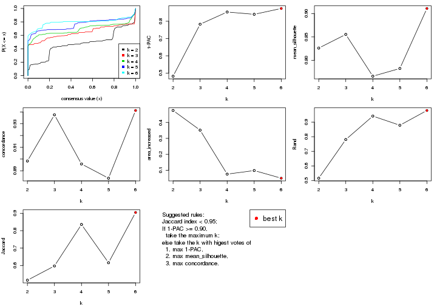
The numeric values for all these statistics can be obtained by get_stats().
get_stats(res)
#> k 1-PAC mean_silhouette concordance area_increased Rand Jaccard
#> 2 2 0.482 0.826 0.898 0.4752 0.516 0.516
#> 3 3 0.783 0.855 0.938 0.3517 0.781 0.597
#> 4 4 0.853 0.766 0.896 0.0757 0.941 0.836
#> 5 5 0.840 0.783 0.884 0.0980 0.878 0.616
#> 6 6 0.874 0.911 0.941 0.0500 0.980 0.905
suggest_best_k() suggests the best \(k\) based on these statistics. The rules are as follows:
suggest_best_k(res)
#> [1] 6
Following shows the table of the partitions (You need to click the show/hide
code output link to see it). The membership matrix (columns with name p*)
is inferred by
clue::cl_consensus()
function with the SE method. Basically the value in the membership matrix
represents the probability to belong to a certain group. The finall class
label for an item is determined with the group with highest probability it
belongs to.
In get_classes() function, the entropy is calculated from the membership
matrix and the silhouette score is calculated from the consensus matrix.
cbind(get_classes(res, k = 2), get_membership(res, k = 2))
#> class entropy silhouette p1 p2
#> GSM52556 2 0.000 0.814 0.000 1.000
#> GSM52557 1 0.985 0.436 0.572 0.428
#> GSM52558 1 0.745 0.786 0.788 0.212
#> GSM52559 2 0.000 0.814 0.000 1.000
#> GSM52560 2 0.000 0.814 0.000 1.000
#> GSM52561 2 0.518 0.744 0.116 0.884
#> GSM52562 1 0.753 0.782 0.784 0.216
#> GSM52563 2 0.118 0.809 0.016 0.984
#> GSM52564 1 0.000 0.912 1.000 0.000
#> GSM52565 1 0.745 0.786 0.788 0.212
#> GSM52566 2 0.000 0.814 0.000 1.000
#> GSM52567 1 0.745 0.786 0.788 0.212
#> GSM52568 2 1.000 -0.247 0.492 0.508
#> GSM52569 1 0.745 0.786 0.788 0.212
#> GSM52570 1 0.745 0.786 0.788 0.212
#> GSM52571 1 0.000 0.912 1.000 0.000
#> GSM52572 1 0.000 0.912 1.000 0.000
#> GSM52573 2 0.722 0.849 0.200 0.800
#> GSM52574 2 0.722 0.849 0.200 0.800
#> GSM52575 2 0.722 0.849 0.200 0.800
#> GSM52576 2 0.722 0.849 0.200 0.800
#> GSM52577 2 0.722 0.849 0.200 0.800
#> GSM52578 2 0.714 0.850 0.196 0.804
#> GSM52579 2 0.000 0.814 0.000 1.000
#> GSM52580 1 0.000 0.912 1.000 0.000
#> GSM52581 1 0.000 0.912 1.000 0.000
#> GSM52582 2 0.722 0.849 0.200 0.800
#> GSM52583 1 0.000 0.912 1.000 0.000
#> GSM52584 1 0.000 0.912 1.000 0.000
#> GSM52585 1 0.000 0.912 1.000 0.000
#> GSM52586 1 0.000 0.912 1.000 0.000
#> GSM52587 2 0.000 0.814 0.000 1.000
#> GSM52588 1 0.358 0.846 0.932 0.068
#> GSM52589 2 0.952 0.626 0.372 0.628
#> GSM52590 1 0.000 0.912 1.000 0.000
#> GSM52591 1 0.000 0.912 1.000 0.000
#> GSM52592 1 0.000 0.912 1.000 0.000
#> GSM52593 1 0.000 0.912 1.000 0.000
#> GSM52594 1 0.000 0.912 1.000 0.000
#> GSM52595 1 0.000 0.912 1.000 0.000
#> GSM52596 1 0.000 0.912 1.000 0.000
#> GSM52597 1 0.000 0.912 1.000 0.000
#> GSM52598 1 0.000 0.912 1.000 0.000
#> GSM52599 1 0.000 0.912 1.000 0.000
#> GSM52600 1 0.000 0.912 1.000 0.000
#> GSM52601 1 0.000 0.912 1.000 0.000
#> GSM52602 1 0.184 0.899 0.972 0.028
#> GSM52603 1 0.745 0.786 0.788 0.212
#> GSM52604 1 0.745 0.786 0.788 0.212
#> GSM52605 1 0.541 0.845 0.876 0.124
#> GSM52606 2 0.722 0.849 0.200 0.800
#> GSM52607 2 0.644 0.848 0.164 0.836
#> GSM52608 2 0.714 0.850 0.196 0.804
#> GSM52609 2 0.706 0.850 0.192 0.808
cbind(get_classes(res, k = 3), get_membership(res, k = 3))
#> class entropy silhouette p1 p2 p3
#> GSM52556 2 0.0000 0.9488 0.000 1.000 0.000
#> GSM52557 2 0.0000 0.9488 0.000 1.000 0.000
#> GSM52558 2 0.6291 0.0394 0.468 0.532 0.000
#> GSM52559 2 0.0000 0.9488 0.000 1.000 0.000
#> GSM52560 2 0.0000 0.9488 0.000 1.000 0.000
#> GSM52561 3 0.7165 0.7113 0.112 0.172 0.716
#> GSM52562 2 0.0000 0.9488 0.000 1.000 0.000
#> GSM52563 2 0.0000 0.9488 0.000 1.000 0.000
#> GSM52564 1 0.0000 0.9359 1.000 0.000 0.000
#> GSM52565 2 0.0000 0.9488 0.000 1.000 0.000
#> GSM52566 2 0.0000 0.9488 0.000 1.000 0.000
#> GSM52567 2 0.0000 0.9488 0.000 1.000 0.000
#> GSM52568 2 0.0000 0.9488 0.000 1.000 0.000
#> GSM52569 2 0.0000 0.9488 0.000 1.000 0.000
#> GSM52570 2 0.0000 0.9488 0.000 1.000 0.000
#> GSM52571 1 0.0000 0.9359 1.000 0.000 0.000
#> GSM52572 1 0.0000 0.9359 1.000 0.000 0.000
#> GSM52573 3 0.0000 0.8933 0.000 0.000 1.000
#> GSM52574 3 0.0000 0.8933 0.000 0.000 1.000
#> GSM52575 3 0.0000 0.8933 0.000 0.000 1.000
#> GSM52576 3 0.4002 0.8090 0.160 0.000 0.840
#> GSM52577 3 0.4062 0.8056 0.164 0.000 0.836
#> GSM52578 3 0.1964 0.8744 0.056 0.000 0.944
#> GSM52579 3 0.3412 0.8233 0.000 0.124 0.876
#> GSM52580 1 0.0000 0.9359 1.000 0.000 0.000
#> GSM52581 1 0.0000 0.9359 1.000 0.000 0.000
#> GSM52582 3 0.0000 0.8933 0.000 0.000 1.000
#> GSM52583 1 0.0000 0.9359 1.000 0.000 0.000
#> GSM52584 1 0.0237 0.9327 0.996 0.000 0.004
#> GSM52585 1 0.0000 0.9359 1.000 0.000 0.000
#> GSM52586 1 0.0000 0.9359 1.000 0.000 0.000
#> GSM52587 3 0.4702 0.7344 0.000 0.212 0.788
#> GSM52588 1 0.0000 0.9359 1.000 0.000 0.000
#> GSM52589 3 0.6008 0.4581 0.372 0.000 0.628
#> GSM52590 1 0.0000 0.9359 1.000 0.000 0.000
#> GSM52591 1 0.0000 0.9359 1.000 0.000 0.000
#> GSM52592 1 0.0000 0.9359 1.000 0.000 0.000
#> GSM52593 1 0.0000 0.9359 1.000 0.000 0.000
#> GSM52594 1 0.0000 0.9359 1.000 0.000 0.000
#> GSM52595 1 0.0000 0.9359 1.000 0.000 0.000
#> GSM52596 1 0.0000 0.9359 1.000 0.000 0.000
#> GSM52597 1 0.0000 0.9359 1.000 0.000 0.000
#> GSM52598 1 0.0000 0.9359 1.000 0.000 0.000
#> GSM52599 1 0.0000 0.9359 1.000 0.000 0.000
#> GSM52600 1 0.0000 0.9359 1.000 0.000 0.000
#> GSM52601 1 0.0000 0.9359 1.000 0.000 0.000
#> GSM52602 1 0.6126 0.4021 0.600 0.000 0.400
#> GSM52603 1 0.8408 0.4480 0.600 0.128 0.272
#> GSM52604 1 0.6330 0.4052 0.600 0.004 0.396
#> GSM52605 1 0.7531 0.5588 0.672 0.092 0.236
#> GSM52606 3 0.0000 0.8933 0.000 0.000 1.000
#> GSM52607 3 0.0000 0.8933 0.000 0.000 1.000
#> GSM52608 3 0.0000 0.8933 0.000 0.000 1.000
#> GSM52609 3 0.0000 0.8933 0.000 0.000 1.000
cbind(get_classes(res, k = 4), get_membership(res, k = 4))
#> class entropy silhouette p1 p2 p3 p4
#> GSM52556 2 0.0921 0.894 0.000 0.972 0.028 0.000
#> GSM52557 2 0.4981 0.498 0.000 0.536 0.000 0.464
#> GSM52558 4 0.6149 -0.560 0.048 0.472 0.000 0.480
#> GSM52559 2 0.0592 0.908 0.000 0.984 0.000 0.016
#> GSM52560 2 0.0592 0.908 0.000 0.984 0.000 0.016
#> GSM52561 3 0.5766 0.750 0.100 0.080 0.764 0.056
#> GSM52562 2 0.4967 0.515 0.000 0.548 0.000 0.452
#> GSM52563 2 0.0000 0.911 0.000 1.000 0.000 0.000
#> GSM52564 1 0.1022 0.894 0.968 0.000 0.000 0.032
#> GSM52565 2 0.0469 0.910 0.000 0.988 0.000 0.012
#> GSM52566 2 0.0336 0.910 0.000 0.992 0.000 0.008
#> GSM52567 2 0.0469 0.910 0.000 0.988 0.000 0.012
#> GSM52568 2 0.0336 0.910 0.000 0.992 0.000 0.008
#> GSM52569 2 0.0469 0.910 0.000 0.988 0.000 0.012
#> GSM52570 2 0.0469 0.910 0.000 0.988 0.000 0.012
#> GSM52571 1 0.0000 0.902 1.000 0.000 0.000 0.000
#> GSM52572 1 0.1118 0.892 0.964 0.000 0.000 0.036
#> GSM52573 3 0.0000 0.910 0.000 0.000 1.000 0.000
#> GSM52574 3 0.0000 0.910 0.000 0.000 1.000 0.000
#> GSM52575 3 0.0000 0.910 0.000 0.000 1.000 0.000
#> GSM52576 3 0.1792 0.886 0.068 0.000 0.932 0.000
#> GSM52577 3 0.2011 0.878 0.080 0.000 0.920 0.000
#> GSM52578 3 0.1489 0.898 0.044 0.000 0.952 0.004
#> GSM52579 3 0.2281 0.861 0.000 0.096 0.904 0.000
#> GSM52580 1 0.1474 0.883 0.948 0.000 0.000 0.052
#> GSM52581 1 0.1474 0.883 0.948 0.000 0.000 0.052
#> GSM52582 3 0.1474 0.894 0.000 0.000 0.948 0.052
#> GSM52583 1 0.1474 0.883 0.948 0.000 0.000 0.052
#> GSM52584 1 0.1661 0.879 0.944 0.000 0.004 0.052
#> GSM52585 1 0.1474 0.883 0.948 0.000 0.000 0.052
#> GSM52586 1 0.1118 0.892 0.964 0.000 0.000 0.036
#> GSM52587 3 0.4624 0.764 0.000 0.164 0.784 0.052
#> GSM52588 1 0.0000 0.902 1.000 0.000 0.000 0.000
#> GSM52589 3 0.4761 0.392 0.372 0.000 0.628 0.000
#> GSM52590 1 0.4933 -0.412 0.568 0.000 0.000 0.432
#> GSM52591 1 0.0188 0.902 0.996 0.000 0.000 0.004
#> GSM52592 1 0.0000 0.902 1.000 0.000 0.000 0.000
#> GSM52593 1 0.0000 0.902 1.000 0.000 0.000 0.000
#> GSM52594 1 0.0000 0.902 1.000 0.000 0.000 0.000
#> GSM52595 1 0.0000 0.902 1.000 0.000 0.000 0.000
#> GSM52596 1 0.0000 0.902 1.000 0.000 0.000 0.000
#> GSM52597 1 0.1118 0.892 0.964 0.000 0.000 0.036
#> GSM52598 1 0.0000 0.902 1.000 0.000 0.000 0.000
#> GSM52599 1 0.0000 0.902 1.000 0.000 0.000 0.000
#> GSM52600 1 0.0000 0.902 1.000 0.000 0.000 0.000
#> GSM52601 1 0.0000 0.902 1.000 0.000 0.000 0.000
#> GSM52602 1 0.5862 -0.593 0.484 0.000 0.032 0.484
#> GSM52603 4 0.6232 0.457 0.472 0.036 0.008 0.484
#> GSM52604 4 0.6178 0.450 0.472 0.004 0.040 0.484
#> GSM52605 4 0.5292 0.427 0.480 0.000 0.008 0.512
#> GSM52606 3 0.0000 0.910 0.000 0.000 1.000 0.000
#> GSM52607 3 0.0000 0.910 0.000 0.000 1.000 0.000
#> GSM52608 3 0.0000 0.910 0.000 0.000 1.000 0.000
#> GSM52609 3 0.0000 0.910 0.000 0.000 1.000 0.000
cbind(get_classes(res, k = 5), get_membership(res, k = 5))
#> class entropy silhouette p1 p2 p3 p4 p5
#> GSM52556 2 0.1043 0.887 0.000 0.960 0.040 0.000 0.000
#> GSM52557 2 0.4803 0.532 0.000 0.536 0.000 0.444 0.020
#> GSM52558 4 0.4807 -0.504 0.000 0.448 0.000 0.532 0.020
#> GSM52559 2 0.0404 0.910 0.000 0.988 0.000 0.012 0.000
#> GSM52560 2 0.0404 0.910 0.000 0.988 0.000 0.012 0.000
#> GSM52561 3 0.5104 0.698 0.076 0.056 0.752 0.116 0.000
#> GSM52562 2 0.4767 0.558 0.000 0.560 0.000 0.420 0.020
#> GSM52563 2 0.0000 0.912 0.000 1.000 0.000 0.000 0.000
#> GSM52564 1 0.1197 0.936 0.952 0.000 0.000 0.048 0.000
#> GSM52565 2 0.0566 0.910 0.000 0.984 0.000 0.012 0.004
#> GSM52566 2 0.0162 0.912 0.000 0.996 0.000 0.004 0.000
#> GSM52567 2 0.0566 0.910 0.000 0.984 0.000 0.012 0.004
#> GSM52568 2 0.0162 0.912 0.000 0.996 0.000 0.004 0.000
#> GSM52569 2 0.0955 0.901 0.000 0.968 0.000 0.028 0.004
#> GSM52570 2 0.0566 0.910 0.000 0.984 0.000 0.012 0.004
#> GSM52571 1 0.0000 0.987 1.000 0.000 0.000 0.000 0.000
#> GSM52572 1 0.0703 0.968 0.976 0.000 0.000 0.024 0.000
#> GSM52573 3 0.0000 0.897 0.000 0.000 1.000 0.000 0.000
#> GSM52574 3 0.0000 0.897 0.000 0.000 1.000 0.000 0.000
#> GSM52575 3 0.0000 0.897 0.000 0.000 1.000 0.000 0.000
#> GSM52576 3 0.1732 0.858 0.080 0.000 0.920 0.000 0.000
#> GSM52577 3 0.1792 0.854 0.084 0.000 0.916 0.000 0.000
#> GSM52578 3 0.3194 0.788 0.020 0.000 0.832 0.148 0.000
#> GSM52579 3 0.2511 0.838 0.000 0.080 0.892 0.028 0.000
#> GSM52580 4 0.4249 0.539 0.432 0.000 0.000 0.568 0.000
#> GSM52581 4 0.4249 0.539 0.432 0.000 0.000 0.568 0.000
#> GSM52582 4 0.4249 -0.022 0.000 0.000 0.432 0.568 0.000
#> GSM52583 4 0.4249 0.539 0.432 0.000 0.000 0.568 0.000
#> GSM52584 4 0.4249 0.539 0.432 0.000 0.000 0.568 0.000
#> GSM52585 4 0.4249 0.539 0.432 0.000 0.000 0.568 0.000
#> GSM52586 1 0.0880 0.959 0.968 0.000 0.000 0.032 0.000
#> GSM52587 4 0.4249 -0.022 0.000 0.000 0.432 0.568 0.000
#> GSM52588 1 0.0000 0.987 1.000 0.000 0.000 0.000 0.000
#> GSM52589 3 0.4060 0.402 0.360 0.000 0.640 0.000 0.000
#> GSM52590 5 0.4242 0.167 0.428 0.000 0.000 0.000 0.572
#> GSM52591 1 0.0290 0.981 0.992 0.000 0.000 0.008 0.000
#> GSM52592 1 0.0000 0.987 1.000 0.000 0.000 0.000 0.000
#> GSM52593 1 0.0000 0.987 1.000 0.000 0.000 0.000 0.000
#> GSM52594 1 0.0000 0.987 1.000 0.000 0.000 0.000 0.000
#> GSM52595 1 0.0000 0.987 1.000 0.000 0.000 0.000 0.000
#> GSM52596 1 0.0000 0.987 1.000 0.000 0.000 0.000 0.000
#> GSM52597 1 0.0703 0.968 0.976 0.000 0.000 0.024 0.000
#> GSM52598 1 0.0000 0.987 1.000 0.000 0.000 0.000 0.000
#> GSM52599 1 0.0000 0.987 1.000 0.000 0.000 0.000 0.000
#> GSM52600 1 0.0000 0.987 1.000 0.000 0.000 0.000 0.000
#> GSM52601 1 0.0000 0.987 1.000 0.000 0.000 0.000 0.000
#> GSM52602 5 0.0703 0.848 0.024 0.000 0.000 0.000 0.976
#> GSM52603 5 0.0703 0.848 0.024 0.000 0.000 0.000 0.976
#> GSM52604 5 0.0703 0.848 0.024 0.000 0.000 0.000 0.976
#> GSM52605 5 0.0703 0.848 0.024 0.000 0.000 0.000 0.976
#> GSM52606 3 0.0000 0.897 0.000 0.000 1.000 0.000 0.000
#> GSM52607 3 0.0000 0.897 0.000 0.000 1.000 0.000 0.000
#> GSM52608 3 0.0000 0.897 0.000 0.000 1.000 0.000 0.000
#> GSM52609 3 0.0000 0.897 0.000 0.000 1.000 0.000 0.000
cbind(get_classes(res, k = 6), get_membership(res, k = 6))
#> class entropy silhouette p1 p2 p3 p4 p5 p6
#> GSM52556 2 0.0790 0.909 0.000 0.968 0.032 0.000 0.000 0.000
#> GSM52557 6 0.0260 1.000 0.000 0.008 0.000 0.000 0.000 0.992
#> GSM52558 6 0.0260 1.000 0.000 0.008 0.000 0.000 0.000 0.992
#> GSM52559 2 0.1007 0.916 0.000 0.956 0.000 0.000 0.000 0.044
#> GSM52560 2 0.1007 0.916 0.000 0.956 0.000 0.000 0.000 0.044
#> GSM52561 3 0.4861 0.738 0.084 0.028 0.756 0.088 0.000 0.044
#> GSM52562 6 0.0260 1.000 0.000 0.008 0.000 0.000 0.000 0.992
#> GSM52563 2 0.0458 0.923 0.000 0.984 0.000 0.000 0.000 0.016
#> GSM52564 1 0.1049 0.965 0.960 0.000 0.000 0.032 0.000 0.008
#> GSM52565 2 0.2219 0.897 0.000 0.864 0.000 0.136 0.000 0.000
#> GSM52566 2 0.0713 0.922 0.000 0.972 0.000 0.000 0.000 0.028
#> GSM52567 2 0.2219 0.897 0.000 0.864 0.000 0.136 0.000 0.000
#> GSM52568 2 0.0713 0.922 0.000 0.972 0.000 0.000 0.000 0.028
#> GSM52569 2 0.2260 0.894 0.000 0.860 0.000 0.140 0.000 0.000
#> GSM52570 2 0.2219 0.897 0.000 0.864 0.000 0.136 0.000 0.000
#> GSM52571 1 0.0000 0.990 1.000 0.000 0.000 0.000 0.000 0.000
#> GSM52572 1 0.0806 0.976 0.972 0.000 0.000 0.020 0.000 0.008
#> GSM52573 3 0.0000 0.902 0.000 0.000 1.000 0.000 0.000 0.000
#> GSM52574 3 0.0000 0.902 0.000 0.000 1.000 0.000 0.000 0.000
#> GSM52575 3 0.0000 0.902 0.000 0.000 1.000 0.000 0.000 0.000
#> GSM52576 3 0.1556 0.865 0.080 0.000 0.920 0.000 0.000 0.000
#> GSM52577 3 0.1610 0.862 0.084 0.000 0.916 0.000 0.000 0.000
#> GSM52578 3 0.2859 0.794 0.016 0.000 0.828 0.156 0.000 0.000
#> GSM52579 3 0.2309 0.843 0.000 0.084 0.888 0.028 0.000 0.000
#> GSM52580 4 0.2219 0.914 0.136 0.000 0.000 0.864 0.000 0.000
#> GSM52581 4 0.2219 0.914 0.136 0.000 0.000 0.864 0.000 0.000
#> GSM52582 4 0.2219 0.775 0.000 0.000 0.136 0.864 0.000 0.000
#> GSM52583 4 0.2219 0.914 0.136 0.000 0.000 0.864 0.000 0.000
#> GSM52584 4 0.2219 0.914 0.136 0.000 0.000 0.864 0.000 0.000
#> GSM52585 4 0.2219 0.914 0.136 0.000 0.000 0.864 0.000 0.000
#> GSM52586 1 0.0891 0.973 0.968 0.000 0.000 0.024 0.000 0.008
#> GSM52587 4 0.2219 0.775 0.000 0.000 0.136 0.864 0.000 0.000
#> GSM52588 1 0.0000 0.990 1.000 0.000 0.000 0.000 0.000 0.000
#> GSM52589 3 0.3758 0.545 0.324 0.000 0.668 0.008 0.000 0.000
#> GSM52590 5 0.2883 0.622 0.212 0.000 0.000 0.000 0.788 0.000
#> GSM52591 1 0.0405 0.986 0.988 0.000 0.000 0.004 0.000 0.008
#> GSM52592 1 0.0000 0.990 1.000 0.000 0.000 0.000 0.000 0.000
#> GSM52593 1 0.0000 0.990 1.000 0.000 0.000 0.000 0.000 0.000
#> GSM52594 1 0.0000 0.990 1.000 0.000 0.000 0.000 0.000 0.000
#> GSM52595 1 0.0000 0.990 1.000 0.000 0.000 0.000 0.000 0.000
#> GSM52596 1 0.0000 0.990 1.000 0.000 0.000 0.000 0.000 0.000
#> GSM52597 1 0.0806 0.976 0.972 0.000 0.000 0.020 0.000 0.008
#> GSM52598 1 0.0000 0.990 1.000 0.000 0.000 0.000 0.000 0.000
#> GSM52599 1 0.0000 0.990 1.000 0.000 0.000 0.000 0.000 0.000
#> GSM52600 1 0.0260 0.987 0.992 0.000 0.000 0.000 0.000 0.008
#> GSM52601 1 0.0000 0.990 1.000 0.000 0.000 0.000 0.000 0.000
#> GSM52602 5 0.0000 0.908 0.000 0.000 0.000 0.000 1.000 0.000
#> GSM52603 5 0.0000 0.908 0.000 0.000 0.000 0.000 1.000 0.000
#> GSM52604 5 0.0000 0.908 0.000 0.000 0.000 0.000 1.000 0.000
#> GSM52605 5 0.0000 0.908 0.000 0.000 0.000 0.000 1.000 0.000
#> GSM52606 3 0.0000 0.902 0.000 0.000 1.000 0.000 0.000 0.000
#> GSM52607 3 0.0000 0.902 0.000 0.000 1.000 0.000 0.000 0.000
#> GSM52608 3 0.0000 0.902 0.000 0.000 1.000 0.000 0.000 0.000
#> GSM52609 3 0.0000 0.902 0.000 0.000 1.000 0.000 0.000 0.000
Heatmaps for the consensus matrix. It visualizes the probability of two samples to be in a same group.
consensus_heatmap(res, k = 2)
consensus_heatmap(res, k = 3)
consensus_heatmap(res, k = 4)
consensus_heatmap(res, k = 5)
consensus_heatmap(res, k = 6)
Heatmaps for the membership of samples in all partitions to see how consistent they are:
membership_heatmap(res, k = 2)
membership_heatmap(res, k = 3)
membership_heatmap(res, k = 4)
membership_heatmap(res, k = 5)
membership_heatmap(res, k = 6)
As soon as we have had the classes for columns, we can look for signatures which are significantly different between classes which can be candidate marks for certain classes. Following are the heatmaps for signatures.
Signature heatmaps where rows are scaled:
get_signatures(res, k = 2)
get_signatures(res, k = 3)

get_signatures(res, k = 4)
get_signatures(res, k = 5)
get_signatures(res, k = 6)
Signature heatmaps where rows are not scaled:
get_signatures(res, k = 2, scale_rows = FALSE)

get_signatures(res, k = 3, scale_rows = FALSE)

get_signatures(res, k = 4, scale_rows = FALSE)
get_signatures(res, k = 5, scale_rows = FALSE)
get_signatures(res, k = 6, scale_rows = FALSE)

Compare the overlap of signatures from different k:
compare_signatures(res)
get_signature() returns a data frame invisibly. TO get the list of signatures, the function
call should be assigned to a variable explicitly. In following code, if plot argument is set
to FALSE, no heatmap is plotted while only the differential analysis is performed.
# code only for demonstration
tb = get_signature(res, k = ..., plot = FALSE)
An example of the output of tb is:
#> which_row fdr mean_1 mean_2 scaled_mean_1 scaled_mean_2 km
#> 1 38 0.042760348 8.373488 9.131774 -0.5533452 0.5164555 1
#> 2 40 0.018707592 7.106213 8.469186 -0.6173731 0.5762149 1
#> 3 55 0.019134737 10.221463 11.207825 -0.6159697 0.5749050 1
#> 4 59 0.006059896 5.921854 7.869574 -0.6899429 0.6439467 1
#> 5 60 0.018055526 8.928898 10.211722 -0.6204761 0.5791110 1
#> 6 98 0.009384629 15.714769 14.887706 0.6635654 -0.6193277 2
...
The columns in tb are:
which_row: row indices corresponding to the input matrix.fdr: FDR for the differential test. mean_x: The mean value in group x.scaled_mean_x: The mean value in group x after rows are scaled.km: Row groups if k-means clustering is applied to rows.UMAP plot which shows how samples are separated.
dimension_reduction(res, k = 2, method = "UMAP")
dimension_reduction(res, k = 3, method = "UMAP")
dimension_reduction(res, k = 4, method = "UMAP")
dimension_reduction(res, k = 5, method = "UMAP")
dimension_reduction(res, k = 6, method = "UMAP")
Following heatmap shows how subgroups are split when increasing k:
collect_classes(res)
Test correlation between subgroups and known annotations. If the known annotation is numeric, one-way ANOVA test is applied, and if the known annotation is discrete, chi-squared contingency table test is applied.
test_to_known_factors(res)
#> n disease.state(p) tissue(p) k
#> SD:pam 52 7.42e-01 8.33e-03 2
#> SD:pam 49 2.32e-09 2.48e-04 3
#> SD:pam 46 1.06e-08 2.47e-04 4
#> SD:pam 49 4.51e-08 1.16e-09 5
#> SD:pam 54 1.65e-08 2.24e-11 6
If matrix rows can be associated to genes, consider to use functional_enrichment(res,
...) to perform function enrichment for the signature genes. See this vignette for more detailed explanations.
The object with results only for a single top-value method and a single partition method can be extracted as:
res = res_list["SD", "mclust"]
# you can also extract it by
# res = res_list["SD:mclust"]
A summary of res and all the functions that can be applied to it:
res
#> A 'ConsensusPartition' object with k = 2, 3, 4, 5, 6.
#> On a matrix with 21168 rows and 54 columns.
#> Top rows (1000, 2000, 3000, 4000, 5000) are extracted by 'SD' method.
#> Subgroups are detected by 'mclust' method.
#> Performed in total 1250 partitions by row resampling.
#> Best k for subgroups seems to be 5.
#>
#> Following methods can be applied to this 'ConsensusPartition' object:
#> [1] "cola_report" "collect_classes" "collect_plots"
#> [4] "collect_stats" "colnames" "compare_signatures"
#> [7] "consensus_heatmap" "dimension_reduction" "functional_enrichment"
#> [10] "get_anno_col" "get_anno" "get_classes"
#> [13] "get_consensus" "get_matrix" "get_membership"
#> [16] "get_param" "get_signatures" "get_stats"
#> [19] "is_best_k" "is_stable_k" "membership_heatmap"
#> [22] "ncol" "nrow" "plot_ecdf"
#> [25] "rownames" "select_partition_number" "show"
#> [28] "suggest_best_k" "test_to_known_factors"
collect_plots() function collects all the plots made from res for all k (number of partitions)
into one single page to provide an easy and fast comparison between different k.
collect_plots(res)
The plots are:
k and the heatmap of
predicted classes for each k.k.k.k.All the plots in panels can be made by individual functions and they are plotted later in this section.
select_partition_number() produces several plots showing different
statistics for choosing “optimized” k. There are following statistics:
k;k, the area increased is defined as \(A_k - A_{k-1}\).The detailed explanations of these statistics can be found in the cola vignette.
Generally speaking, lower PAC score, higher mean silhouette score or higher
concordance corresponds to better partition. Rand index and Jaccard index
measure how similar the current partition is compared to partition with k-1.
If they are too similar, we won't accept k is better than k-1.
select_partition_number(res)
The numeric values for all these statistics can be obtained by get_stats().
get_stats(res)
#> k 1-PAC mean_silhouette concordance area_increased Rand Jaccard
#> 2 2 0.497 0.847 0.846 0.3606 0.628 0.628
#> 3 3 0.348 0.669 0.741 0.6000 0.706 0.532
#> 4 4 0.562 0.726 0.807 0.2124 0.920 0.769
#> 5 5 0.740 0.710 0.814 0.1063 0.843 0.510
#> 6 6 0.831 0.751 0.850 0.0423 0.916 0.646
suggest_best_k() suggests the best \(k\) based on these statistics. The rules are as follows:
suggest_best_k(res)
#> [1] 5
Following shows the table of the partitions (You need to click the show/hide
code output link to see it). The membership matrix (columns with name p*)
is inferred by
clue::cl_consensus()
function with the SE method. Basically the value in the membership matrix
represents the probability to belong to a certain group. The finall class
label for an item is determined with the group with highest probability it
belongs to.
In get_classes() function, the entropy is calculated from the membership
matrix and the silhouette score is calculated from the consensus matrix.
cbind(get_classes(res, k = 2), get_membership(res, k = 2))
#> class entropy silhouette p1 p2
#> GSM52556 2 0.9286 1.000 0.344 0.656
#> GSM52557 2 0.9286 1.000 0.344 0.656
#> GSM52558 2 0.9286 1.000 0.344 0.656
#> GSM52559 2 0.9286 1.000 0.344 0.656
#> GSM52560 2 0.9286 1.000 0.344 0.656
#> GSM52561 1 0.0000 0.855 1.000 0.000
#> GSM52562 2 0.9286 1.000 0.344 0.656
#> GSM52563 2 0.9286 1.000 0.344 0.656
#> GSM52564 1 0.0376 0.855 0.996 0.004
#> GSM52565 2 0.9286 1.000 0.344 0.656
#> GSM52566 2 0.9286 1.000 0.344 0.656
#> GSM52567 2 0.9286 1.000 0.344 0.656
#> GSM52568 2 0.9286 1.000 0.344 0.656
#> GSM52569 2 0.9286 1.000 0.344 0.656
#> GSM52570 2 0.9286 1.000 0.344 0.656
#> GSM52571 1 0.9286 0.646 0.656 0.344
#> GSM52572 1 0.0376 0.855 0.996 0.004
#> GSM52573 1 0.0000 0.855 1.000 0.000
#> GSM52574 1 0.0000 0.855 1.000 0.000
#> GSM52575 1 0.0000 0.855 1.000 0.000
#> GSM52576 1 0.1184 0.850 0.984 0.016
#> GSM52577 1 0.3114 0.827 0.944 0.056
#> GSM52578 1 0.0000 0.855 1.000 0.000
#> GSM52579 1 0.0000 0.855 1.000 0.000
#> GSM52580 1 0.0376 0.855 0.996 0.004
#> GSM52581 1 0.0376 0.855 0.996 0.004
#> GSM52582 1 0.0000 0.855 1.000 0.000
#> GSM52583 1 0.1414 0.849 0.980 0.020
#> GSM52584 1 0.1184 0.851 0.984 0.016
#> GSM52585 1 0.0000 0.855 1.000 0.000
#> GSM52586 1 0.0376 0.855 0.996 0.004
#> GSM52587 1 0.0000 0.855 1.000 0.000
#> GSM52588 1 0.9286 0.646 0.656 0.344
#> GSM52589 1 0.2423 0.838 0.960 0.040
#> GSM52590 1 0.0000 0.855 1.000 0.000
#> GSM52591 1 0.0376 0.855 0.996 0.004
#> GSM52592 1 0.9286 0.646 0.656 0.344
#> GSM52593 1 0.9286 0.646 0.656 0.344
#> GSM52594 1 0.9286 0.646 0.656 0.344
#> GSM52595 1 0.9286 0.646 0.656 0.344
#> GSM52596 1 0.9286 0.646 0.656 0.344
#> GSM52597 1 0.0376 0.855 0.996 0.004
#> GSM52598 1 0.9286 0.646 0.656 0.344
#> GSM52599 1 0.9286 0.646 0.656 0.344
#> GSM52600 1 0.9286 0.646 0.656 0.344
#> GSM52601 1 0.8661 0.678 0.712 0.288
#> GSM52602 1 0.0000 0.855 1.000 0.000
#> GSM52603 1 0.0000 0.855 1.000 0.000
#> GSM52604 1 0.0000 0.855 1.000 0.000
#> GSM52605 1 0.0000 0.855 1.000 0.000
#> GSM52606 1 0.0000 0.855 1.000 0.000
#> GSM52607 1 0.0000 0.855 1.000 0.000
#> GSM52608 1 0.0000 0.855 1.000 0.000
#> GSM52609 1 0.0000 0.855 1.000 0.000
cbind(get_classes(res, k = 3), get_membership(res, k = 3))
#> class entropy silhouette p1 p2 p3
#> GSM52556 2 0.1643 0.956 0.000 0.956 0.044
#> GSM52557 2 0.0892 0.977 0.000 0.980 0.020
#> GSM52558 2 0.0892 0.977 0.000 0.980 0.020
#> GSM52559 2 0.0892 0.977 0.000 0.980 0.020
#> GSM52560 2 0.0892 0.977 0.000 0.980 0.020
#> GSM52561 3 0.9633 0.711 0.208 0.368 0.424
#> GSM52562 2 0.0892 0.977 0.000 0.980 0.020
#> GSM52563 2 0.0892 0.977 0.000 0.980 0.020
#> GSM52564 1 0.8685 0.191 0.548 0.328 0.124
#> GSM52565 2 0.1289 0.951 0.000 0.968 0.032
#> GSM52566 2 0.0892 0.977 0.000 0.980 0.020
#> GSM52567 2 0.1289 0.951 0.000 0.968 0.032
#> GSM52568 2 0.0892 0.977 0.000 0.980 0.020
#> GSM52569 2 0.0747 0.959 0.000 0.984 0.016
#> GSM52570 2 0.1289 0.951 0.000 0.968 0.032
#> GSM52571 1 0.0000 0.670 1.000 0.000 0.000
#> GSM52572 1 0.7260 0.416 0.636 0.316 0.048
#> GSM52573 3 0.2793 0.475 0.044 0.028 0.928
#> GSM52574 3 0.2793 0.475 0.044 0.028 0.928
#> GSM52575 3 0.7002 0.643 0.048 0.280 0.672
#> GSM52576 3 0.9838 0.684 0.288 0.288 0.424
#> GSM52577 3 0.9823 0.615 0.336 0.252 0.412
#> GSM52578 3 0.9020 0.698 0.140 0.364 0.496
#> GSM52579 3 0.8102 0.653 0.076 0.368 0.556
#> GSM52580 3 0.9776 0.706 0.244 0.332 0.424
#> GSM52581 3 0.9776 0.706 0.244 0.332 0.424
#> GSM52582 3 0.9558 0.717 0.200 0.356 0.444
#> GSM52583 3 0.9836 0.690 0.280 0.296 0.424
#> GSM52584 3 0.9820 0.700 0.264 0.312 0.424
#> GSM52585 3 0.9690 0.711 0.220 0.356 0.424
#> GSM52586 1 0.7285 0.411 0.632 0.320 0.048
#> GSM52587 3 0.9633 0.711 0.208 0.368 0.424
#> GSM52588 1 0.0424 0.669 0.992 0.000 0.008
#> GSM52589 3 0.9846 0.665 0.304 0.276 0.420
#> GSM52590 1 0.8925 0.396 0.504 0.364 0.132
#> GSM52591 1 0.6553 0.447 0.656 0.324 0.020
#> GSM52592 1 0.0237 0.670 0.996 0.004 0.000
#> GSM52593 1 0.0000 0.670 1.000 0.000 0.000
#> GSM52594 1 0.0000 0.670 1.000 0.000 0.000
#> GSM52595 1 0.0000 0.670 1.000 0.000 0.000
#> GSM52596 1 0.0000 0.670 1.000 0.000 0.000
#> GSM52597 1 0.7285 0.411 0.632 0.320 0.048
#> GSM52598 1 0.0592 0.668 0.988 0.000 0.012
#> GSM52599 1 0.0000 0.670 1.000 0.000 0.000
#> GSM52600 1 0.3482 0.549 0.872 0.000 0.128
#> GSM52601 1 0.2550 0.652 0.932 0.056 0.012
#> GSM52602 1 0.9868 0.303 0.384 0.360 0.256
#> GSM52603 1 0.9868 0.303 0.384 0.360 0.256
#> GSM52604 1 0.9868 0.303 0.384 0.360 0.256
#> GSM52605 1 0.9506 0.334 0.448 0.360 0.192
#> GSM52606 3 0.7378 0.654 0.052 0.320 0.628
#> GSM52607 3 0.7112 0.646 0.044 0.308 0.648
#> GSM52608 3 0.2793 0.475 0.044 0.028 0.928
#> GSM52609 3 0.2793 0.475 0.044 0.028 0.928
cbind(get_classes(res, k = 4), get_membership(res, k = 4))
#> class entropy silhouette p1 p2 p3 p4
#> GSM52556 2 0.0592 0.897 0.000 0.984 0.016 0.000
#> GSM52557 2 0.2345 0.869 0.000 0.900 0.000 0.100
#> GSM52558 2 0.2345 0.869 0.000 0.900 0.000 0.100
#> GSM52559 2 0.0000 0.902 0.000 1.000 0.000 0.000
#> GSM52560 2 0.0000 0.902 0.000 1.000 0.000 0.000
#> GSM52561 3 0.5930 0.711 0.088 0.068 0.756 0.088
#> GSM52562 2 0.2345 0.869 0.000 0.900 0.000 0.100
#> GSM52563 2 0.0657 0.900 0.004 0.984 0.000 0.012
#> GSM52564 3 0.7187 0.170 0.356 0.028 0.540 0.076
#> GSM52565 2 0.3356 0.813 0.000 0.824 0.000 0.176
#> GSM52566 2 0.0000 0.902 0.000 1.000 0.000 0.000
#> GSM52567 2 0.3356 0.813 0.000 0.824 0.000 0.176
#> GSM52568 2 0.2125 0.887 0.004 0.920 0.000 0.076
#> GSM52569 2 0.2704 0.854 0.000 0.876 0.000 0.124
#> GSM52570 2 0.3311 0.817 0.000 0.828 0.000 0.172
#> GSM52571 1 0.0000 0.682 1.000 0.000 0.000 0.000
#> GSM52572 1 0.6773 0.383 0.528 0.024 0.400 0.048
#> GSM52573 3 0.2469 0.765 0.000 0.000 0.892 0.108
#> GSM52574 3 0.2469 0.765 0.000 0.000 0.892 0.108
#> GSM52575 3 0.3634 0.775 0.028 0.008 0.860 0.104
#> GSM52576 3 0.4248 0.667 0.220 0.012 0.768 0.000
#> GSM52577 3 0.4770 0.547 0.288 0.012 0.700 0.000
#> GSM52578 3 0.1843 0.793 0.028 0.016 0.948 0.008
#> GSM52579 3 0.3719 0.743 0.020 0.124 0.848 0.008
#> GSM52580 3 0.4109 0.774 0.092 0.032 0.848 0.028
#> GSM52581 3 0.4298 0.773 0.092 0.032 0.840 0.036
#> GSM52582 3 0.1888 0.792 0.044 0.016 0.940 0.000
#> GSM52583 3 0.4662 0.681 0.204 0.016 0.768 0.012
#> GSM52584 3 0.3504 0.770 0.116 0.012 0.860 0.012
#> GSM52585 3 0.4298 0.773 0.092 0.032 0.840 0.036
#> GSM52586 1 0.7341 0.197 0.452 0.024 0.440 0.084
#> GSM52587 3 0.5013 0.755 0.072 0.044 0.808 0.076
#> GSM52588 1 0.5110 0.508 0.636 0.000 0.352 0.012
#> GSM52589 3 0.5233 0.518 0.292 0.012 0.684 0.012
#> GSM52590 4 0.5119 0.945 0.112 0.124 0.000 0.764
#> GSM52591 1 0.6198 0.421 0.560 0.024 0.396 0.020
#> GSM52592 1 0.2546 0.685 0.900 0.000 0.092 0.008
#> GSM52593 1 0.0000 0.682 1.000 0.000 0.000 0.000
#> GSM52594 1 0.0000 0.682 1.000 0.000 0.000 0.000
#> GSM52595 1 0.0000 0.682 1.000 0.000 0.000 0.000
#> GSM52596 1 0.0000 0.682 1.000 0.000 0.000 0.000
#> GSM52597 1 0.6217 0.409 0.552 0.024 0.404 0.020
#> GSM52598 1 0.5217 0.467 0.608 0.000 0.380 0.012
#> GSM52599 1 0.0336 0.674 0.992 0.000 0.000 0.008
#> GSM52600 1 0.1211 0.679 0.960 0.000 0.040 0.000
#> GSM52601 1 0.2805 0.680 0.888 0.000 0.100 0.012
#> GSM52602 4 0.5119 0.945 0.112 0.124 0.000 0.764
#> GSM52603 4 0.5119 0.945 0.112 0.124 0.000 0.764
#> GSM52604 4 0.5119 0.945 0.112 0.124 0.000 0.764
#> GSM52605 4 0.6644 0.768 0.248 0.124 0.004 0.624
#> GSM52606 3 0.3505 0.775 0.012 0.016 0.864 0.108
#> GSM52607 3 0.3257 0.773 0.012 0.008 0.872 0.108
#> GSM52608 3 0.2469 0.765 0.000 0.000 0.892 0.108
#> GSM52609 3 0.2469 0.765 0.000 0.000 0.892 0.108
cbind(get_classes(res, k = 5), get_membership(res, k = 5))
#> class entropy silhouette p1 p2 p3 p4 p5
#> GSM52556 2 0.0404 0.9517 0.000 0.988 0.000 0.012 0.000
#> GSM52557 2 0.0404 0.9565 0.000 0.988 0.000 0.012 0.000
#> GSM52558 2 0.0404 0.9565 0.000 0.988 0.000 0.012 0.000
#> GSM52559 2 0.0000 0.9581 0.000 1.000 0.000 0.000 0.000
#> GSM52560 2 0.0000 0.9581 0.000 1.000 0.000 0.000 0.000
#> GSM52561 4 0.2162 0.7041 0.012 0.008 0.064 0.916 0.000
#> GSM52562 2 0.0404 0.9565 0.000 0.988 0.000 0.012 0.000
#> GSM52563 2 0.0000 0.9581 0.000 1.000 0.000 0.000 0.000
#> GSM52564 4 0.2753 0.7184 0.136 0.000 0.008 0.856 0.000
#> GSM52565 2 0.2843 0.9105 0.000 0.876 0.000 0.076 0.048
#> GSM52566 2 0.0000 0.9581 0.000 1.000 0.000 0.000 0.000
#> GSM52567 2 0.2843 0.9105 0.000 0.876 0.000 0.076 0.048
#> GSM52568 2 0.0290 0.9573 0.000 0.992 0.000 0.008 0.000
#> GSM52569 2 0.2770 0.9127 0.000 0.880 0.000 0.076 0.044
#> GSM52570 2 0.2843 0.9105 0.000 0.876 0.000 0.076 0.048
#> GSM52571 1 0.0000 0.7693 1.000 0.000 0.000 0.000 0.000
#> GSM52572 4 0.4251 0.5009 0.372 0.000 0.000 0.624 0.004
#> GSM52573 3 0.0290 0.7517 0.008 0.000 0.992 0.000 0.000
#> GSM52574 3 0.0000 0.7531 0.000 0.000 1.000 0.000 0.000
#> GSM52575 3 0.2588 0.7526 0.048 0.000 0.892 0.060 0.000
#> GSM52576 3 0.6612 -0.0212 0.372 0.000 0.412 0.216 0.000
#> GSM52577 1 0.6429 0.1598 0.496 0.000 0.296 0.208 0.000
#> GSM52578 3 0.4270 0.5666 0.004 0.000 0.656 0.336 0.004
#> GSM52579 3 0.4410 0.3919 0.000 0.000 0.556 0.440 0.004
#> GSM52580 4 0.2300 0.7144 0.024 0.000 0.072 0.904 0.000
#> GSM52581 4 0.2396 0.7161 0.024 0.004 0.068 0.904 0.000
#> GSM52582 3 0.3861 0.6387 0.004 0.000 0.712 0.284 0.000
#> GSM52583 4 0.6163 0.3758 0.352 0.000 0.144 0.504 0.000
#> GSM52584 4 0.6091 0.5220 0.268 0.000 0.172 0.560 0.000
#> GSM52585 4 0.2396 0.7161 0.024 0.004 0.068 0.904 0.000
#> GSM52586 4 0.2763 0.7106 0.148 0.000 0.000 0.848 0.004
#> GSM52587 4 0.2141 0.7089 0.016 0.004 0.064 0.916 0.000
#> GSM52588 1 0.3966 0.3266 0.664 0.000 0.000 0.336 0.000
#> GSM52589 1 0.6373 -0.2693 0.420 0.000 0.164 0.416 0.000
#> GSM52590 5 0.0000 0.9714 0.000 0.000 0.000 0.000 1.000
#> GSM52591 4 0.4251 0.5015 0.372 0.000 0.000 0.624 0.004
#> GSM52592 1 0.0703 0.7579 0.976 0.000 0.000 0.024 0.000
#> GSM52593 1 0.0000 0.7693 1.000 0.000 0.000 0.000 0.000
#> GSM52594 1 0.0000 0.7693 1.000 0.000 0.000 0.000 0.000
#> GSM52595 1 0.0000 0.7693 1.000 0.000 0.000 0.000 0.000
#> GSM52596 1 0.0000 0.7693 1.000 0.000 0.000 0.000 0.000
#> GSM52597 4 0.4225 0.5149 0.364 0.000 0.000 0.632 0.004
#> GSM52598 1 0.4649 0.0839 0.580 0.000 0.016 0.404 0.000
#> GSM52599 1 0.0000 0.7693 1.000 0.000 0.000 0.000 0.000
#> GSM52600 1 0.0290 0.7669 0.992 0.000 0.000 0.008 0.000
#> GSM52601 1 0.3074 0.5985 0.804 0.000 0.000 0.196 0.000
#> GSM52602 5 0.0000 0.9714 0.000 0.000 0.000 0.000 1.000
#> GSM52603 5 0.0000 0.9714 0.000 0.000 0.000 0.000 1.000
#> GSM52604 5 0.0000 0.9714 0.000 0.000 0.000 0.000 1.000
#> GSM52605 5 0.1892 0.8816 0.080 0.000 0.000 0.004 0.916
#> GSM52606 3 0.2516 0.7547 0.000 0.000 0.860 0.140 0.000
#> GSM52607 3 0.2536 0.7567 0.000 0.000 0.868 0.128 0.004
#> GSM52608 3 0.0000 0.7531 0.000 0.000 1.000 0.000 0.000
#> GSM52609 3 0.0000 0.7531 0.000 0.000 1.000 0.000 0.000
cbind(get_classes(res, k = 6), get_membership(res, k = 6))
#> class entropy silhouette p1 p2 p3 p4 p5 p6
#> GSM52556 6 0.0508 0.9478 0.000 0.012 0.000 0.004 0 0.984
#> GSM52557 6 0.1367 0.9297 0.000 0.044 0.000 0.012 0 0.944
#> GSM52558 6 0.1367 0.9297 0.000 0.044 0.000 0.012 0 0.944
#> GSM52559 6 0.0363 0.9491 0.000 0.012 0.000 0.000 0 0.988
#> GSM52560 6 0.0146 0.9508 0.000 0.004 0.000 0.000 0 0.996
#> GSM52561 4 0.0000 0.7368 0.000 0.000 0.000 1.000 0 0.000
#> GSM52562 6 0.1367 0.9297 0.000 0.044 0.000 0.012 0 0.944
#> GSM52563 6 0.0790 0.9306 0.000 0.032 0.000 0.000 0 0.968
#> GSM52564 4 0.5428 0.4332 0.252 0.176 0.000 0.572 0 0.000
#> GSM52565 2 0.3737 0.9908 0.000 0.608 0.000 0.000 0 0.392
#> GSM52566 6 0.0363 0.9491 0.000 0.012 0.000 0.000 0 0.988
#> GSM52567 2 0.3756 0.9908 0.000 0.600 0.000 0.000 0 0.400
#> GSM52568 6 0.0632 0.9467 0.000 0.024 0.000 0.000 0 0.976
#> GSM52569 2 0.3756 0.9908 0.000 0.600 0.000 0.000 0 0.400
#> GSM52570 2 0.3737 0.9908 0.000 0.608 0.000 0.000 0 0.392
#> GSM52571 1 0.0000 0.8132 1.000 0.000 0.000 0.000 0 0.000
#> GSM52572 1 0.4922 0.5431 0.616 0.288 0.000 0.096 0 0.000
#> GSM52573 3 0.0260 0.8029 0.000 0.008 0.992 0.000 0 0.000
#> GSM52574 3 0.0260 0.8029 0.000 0.008 0.992 0.000 0 0.000
#> GSM52575 3 0.1196 0.8050 0.008 0.000 0.952 0.040 0 0.000
#> GSM52576 3 0.5776 -0.0649 0.432 0.052 0.460 0.056 0 0.000
#> GSM52577 1 0.5169 0.4547 0.624 0.052 0.288 0.036 0 0.000
#> GSM52578 3 0.3865 0.6961 0.000 0.056 0.752 0.192 0 0.000
#> GSM52579 3 0.4747 0.4520 0.000 0.056 0.568 0.376 0 0.000
#> GSM52580 4 0.0508 0.7444 0.012 0.004 0.000 0.984 0 0.000
#> GSM52581 4 0.0508 0.7444 0.012 0.004 0.000 0.984 0 0.000
#> GSM52582 3 0.4634 0.5666 0.004 0.056 0.640 0.300 0 0.000
#> GSM52583 1 0.6108 0.1188 0.440 0.004 0.264 0.292 0 0.000
#> GSM52584 4 0.6074 0.1124 0.248 0.008 0.264 0.480 0 0.000
#> GSM52585 4 0.0508 0.7444 0.012 0.004 0.000 0.984 0 0.000
#> GSM52586 4 0.6080 0.1797 0.316 0.288 0.000 0.396 0 0.000
#> GSM52587 4 0.0146 0.7361 0.000 0.000 0.004 0.996 0 0.000
#> GSM52588 1 0.0458 0.8086 0.984 0.000 0.000 0.016 0 0.000
#> GSM52589 1 0.5572 0.3329 0.560 0.048 0.336 0.056 0 0.000
#> GSM52590 5 0.0000 1.0000 0.000 0.000 0.000 0.000 1 0.000
#> GSM52591 1 0.4793 0.5591 0.628 0.288 0.000 0.084 0 0.000
#> GSM52592 1 0.0000 0.8132 1.000 0.000 0.000 0.000 0 0.000
#> GSM52593 1 0.0000 0.8132 1.000 0.000 0.000 0.000 0 0.000
#> GSM52594 1 0.0000 0.8132 1.000 0.000 0.000 0.000 0 0.000
#> GSM52595 1 0.0000 0.8132 1.000 0.000 0.000 0.000 0 0.000
#> GSM52596 1 0.0000 0.8132 1.000 0.000 0.000 0.000 0 0.000
#> GSM52597 1 0.4887 0.5530 0.624 0.280 0.000 0.096 0 0.000
#> GSM52598 1 0.2263 0.7702 0.900 0.036 0.004 0.060 0 0.000
#> GSM52599 1 0.0000 0.8132 1.000 0.000 0.000 0.000 0 0.000
#> GSM52600 1 0.0000 0.8132 1.000 0.000 0.000 0.000 0 0.000
#> GSM52601 1 0.0865 0.7994 0.964 0.000 0.000 0.036 0 0.000
#> GSM52602 5 0.0000 1.0000 0.000 0.000 0.000 0.000 1 0.000
#> GSM52603 5 0.0000 1.0000 0.000 0.000 0.000 0.000 1 0.000
#> GSM52604 5 0.0000 1.0000 0.000 0.000 0.000 0.000 1 0.000
#> GSM52605 5 0.0000 1.0000 0.000 0.000 0.000 0.000 1 0.000
#> GSM52606 3 0.1462 0.8018 0.000 0.008 0.936 0.056 0 0.000
#> GSM52607 3 0.1141 0.8038 0.000 0.000 0.948 0.052 0 0.000
#> GSM52608 3 0.0260 0.8029 0.000 0.008 0.992 0.000 0 0.000
#> GSM52609 3 0.0260 0.8029 0.000 0.008 0.992 0.000 0 0.000
Heatmaps for the consensus matrix. It visualizes the probability of two samples to be in a same group.
consensus_heatmap(res, k = 2)
consensus_heatmap(res, k = 3)
consensus_heatmap(res, k = 4)
consensus_heatmap(res, k = 5)
consensus_heatmap(res, k = 6)
Heatmaps for the membership of samples in all partitions to see how consistent they are:
membership_heatmap(res, k = 2)
membership_heatmap(res, k = 3)
membership_heatmap(res, k = 4)
membership_heatmap(res, k = 5)
membership_heatmap(res, k = 6)
As soon as we have had the classes for columns, we can look for signatures which are significantly different between classes which can be candidate marks for certain classes. Following are the heatmaps for signatures.
Signature heatmaps where rows are scaled:
get_signatures(res, k = 2)
get_signatures(res, k = 3)
get_signatures(res, k = 4)
get_signatures(res, k = 5)
get_signatures(res, k = 6)
Signature heatmaps where rows are not scaled:
get_signatures(res, k = 2, scale_rows = FALSE)
get_signatures(res, k = 3, scale_rows = FALSE)
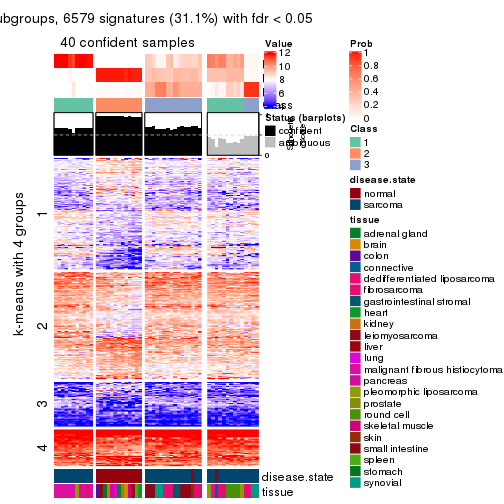
get_signatures(res, k = 4, scale_rows = FALSE)
get_signatures(res, k = 5, scale_rows = FALSE)
get_signatures(res, k = 6, scale_rows = FALSE)
Compare the overlap of signatures from different k:
compare_signatures(res)
get_signature() returns a data frame invisibly. TO get the list of signatures, the function
call should be assigned to a variable explicitly. In following code, if plot argument is set
to FALSE, no heatmap is plotted while only the differential analysis is performed.
# code only for demonstration
tb = get_signature(res, k = ..., plot = FALSE)
An example of the output of tb is:
#> which_row fdr mean_1 mean_2 scaled_mean_1 scaled_mean_2 km
#> 1 38 0.042760348 8.373488 9.131774 -0.5533452 0.5164555 1
#> 2 40 0.018707592 7.106213 8.469186 -0.6173731 0.5762149 1
#> 3 55 0.019134737 10.221463 11.207825 -0.6159697 0.5749050 1
#> 4 59 0.006059896 5.921854 7.869574 -0.6899429 0.6439467 1
#> 5 60 0.018055526 8.928898 10.211722 -0.6204761 0.5791110 1
#> 6 98 0.009384629 15.714769 14.887706 0.6635654 -0.6193277 2
...
The columns in tb are:
which_row: row indices corresponding to the input matrix.fdr: FDR for the differential test. mean_x: The mean value in group x.scaled_mean_x: The mean value in group x after rows are scaled.km: Row groups if k-means clustering is applied to rows.UMAP plot which shows how samples are separated.
dimension_reduction(res, k = 2, method = "UMAP")
dimension_reduction(res, k = 3, method = "UMAP")
dimension_reduction(res, k = 4, method = "UMAP")
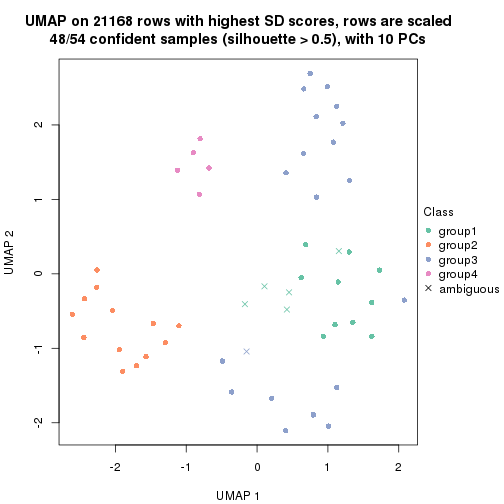
dimension_reduction(res, k = 5, method = "UMAP")
dimension_reduction(res, k = 6, method = "UMAP")
Following heatmap shows how subgroups are split when increasing k:
collect_classes(res)
Test correlation between subgroups and known annotations. If the known annotation is numeric, one-way ANOVA test is applied, and if the known annotation is discrete, chi-squared contingency table test is applied.
test_to_known_factors(res)
#> n disease.state(p) tissue(p) k
#> SD:mclust 54 2.67e-10 1.64e-04 2
#> SD:mclust 40 1.62e-08 1.69e-03 3
#> SD:mclust 48 2.02e-09 4.25e-06 4
#> SD:mclust 47 5.57e-08 1.10e-04 5
#> SD:mclust 46 5.31e-08 2.50e-07 6
If matrix rows can be associated to genes, consider to use functional_enrichment(res,
...) to perform function enrichment for the signature genes. See this vignette for more detailed explanations.
The object with results only for a single top-value method and a single partition method can be extracted as:
res = res_list["SD", "NMF"]
# you can also extract it by
# res = res_list["SD:NMF"]
A summary of res and all the functions that can be applied to it:
res
#> A 'ConsensusPartition' object with k = 2, 3, 4, 5, 6.
#> On a matrix with 21168 rows and 54 columns.
#> Top rows (1000, 2000, 3000, 4000, 5000) are extracted by 'SD' method.
#> Subgroups are detected by 'NMF' method.
#> Performed in total 1250 partitions by row resampling.
#> Best k for subgroups seems to be 3.
#>
#> Following methods can be applied to this 'ConsensusPartition' object:
#> [1] "cola_report" "collect_classes" "collect_plots"
#> [4] "collect_stats" "colnames" "compare_signatures"
#> [7] "consensus_heatmap" "dimension_reduction" "functional_enrichment"
#> [10] "get_anno_col" "get_anno" "get_classes"
#> [13] "get_consensus" "get_matrix" "get_membership"
#> [16] "get_param" "get_signatures" "get_stats"
#> [19] "is_best_k" "is_stable_k" "membership_heatmap"
#> [22] "ncol" "nrow" "plot_ecdf"
#> [25] "rownames" "select_partition_number" "show"
#> [28] "suggest_best_k" "test_to_known_factors"
collect_plots() function collects all the plots made from res for all k (number of partitions)
into one single page to provide an easy and fast comparison between different k.
collect_plots(res)
The plots are:
k and the heatmap of
predicted classes for each k.k.k.k.All the plots in panels can be made by individual functions and they are plotted later in this section.
select_partition_number() produces several plots showing different
statistics for choosing “optimized” k. There are following statistics:
k;k, the area increased is defined as \(A_k - A_{k-1}\).The detailed explanations of these statistics can be found in the cola vignette.
Generally speaking, lower PAC score, higher mean silhouette score or higher
concordance corresponds to better partition. Rand index and Jaccard index
measure how similar the current partition is compared to partition with k-1.
If they are too similar, we won't accept k is better than k-1.
select_partition_number(res)
The numeric values for all these statistics can be obtained by get_stats().
get_stats(res)
#> k 1-PAC mean_silhouette concordance area_increased Rand Jaccard
#> 2 2 0.885 0.917 0.967 0.4306 0.575 0.575
#> 3 3 0.913 0.874 0.951 0.5284 0.732 0.547
#> 4 4 0.715 0.639 0.809 0.1074 0.948 0.851
#> 5 5 0.746 0.751 0.839 0.0640 0.864 0.585
#> 6 6 0.893 0.862 0.892 0.0484 0.960 0.818
suggest_best_k() suggests the best \(k\) based on these statistics. The rules are as follows:
suggest_best_k(res)
#> [1] 3
Following shows the table of the partitions (You need to click the show/hide
code output link to see it). The membership matrix (columns with name p*)
is inferred by
clue::cl_consensus()
function with the SE method. Basically the value in the membership matrix
represents the probability to belong to a certain group. The finall class
label for an item is determined with the group with highest probability it
belongs to.
In get_classes() function, the entropy is calculated from the membership
matrix and the silhouette score is calculated from the consensus matrix.
cbind(get_classes(res, k = 2), get_membership(res, k = 2))
#> class entropy silhouette p1 p2
#> GSM52556 2 0.0000 0.956 0.000 1.000
#> GSM52557 2 0.0000 0.956 0.000 1.000
#> GSM52558 2 0.0000 0.956 0.000 1.000
#> GSM52559 2 0.0000 0.956 0.000 1.000
#> GSM52560 2 0.0000 0.956 0.000 1.000
#> GSM52561 2 0.0000 0.956 0.000 1.000
#> GSM52562 2 0.0000 0.956 0.000 1.000
#> GSM52563 2 0.0000 0.956 0.000 1.000
#> GSM52564 1 0.7883 0.698 0.764 0.236
#> GSM52565 2 0.0000 0.956 0.000 1.000
#> GSM52566 2 0.0000 0.956 0.000 1.000
#> GSM52567 2 0.0000 0.956 0.000 1.000
#> GSM52568 2 0.0000 0.956 0.000 1.000
#> GSM52569 2 0.0000 0.956 0.000 1.000
#> GSM52570 2 0.0000 0.956 0.000 1.000
#> GSM52571 1 0.0000 0.967 1.000 0.000
#> GSM52572 1 0.0000 0.967 1.000 0.000
#> GSM52573 1 0.0000 0.967 1.000 0.000
#> GSM52574 1 0.0000 0.967 1.000 0.000
#> GSM52575 1 0.0000 0.967 1.000 0.000
#> GSM52576 1 0.0000 0.967 1.000 0.000
#> GSM52577 1 0.0000 0.967 1.000 0.000
#> GSM52578 1 0.0000 0.967 1.000 0.000
#> GSM52579 1 0.2603 0.932 0.956 0.044
#> GSM52580 1 0.3431 0.913 0.936 0.064
#> GSM52581 1 0.7139 0.758 0.804 0.196
#> GSM52582 1 0.0000 0.967 1.000 0.000
#> GSM52583 1 0.0000 0.967 1.000 0.000
#> GSM52584 1 0.0000 0.967 1.000 0.000
#> GSM52585 2 0.9988 0.012 0.480 0.520
#> GSM52586 1 0.9460 0.434 0.636 0.364
#> GSM52587 2 0.5946 0.802 0.144 0.856
#> GSM52588 1 0.0000 0.967 1.000 0.000
#> GSM52589 1 0.0000 0.967 1.000 0.000
#> GSM52590 1 0.0000 0.967 1.000 0.000
#> GSM52591 1 0.1184 0.955 0.984 0.016
#> GSM52592 1 0.0000 0.967 1.000 0.000
#> GSM52593 1 0.0000 0.967 1.000 0.000
#> GSM52594 1 0.0000 0.967 1.000 0.000
#> GSM52595 1 0.0000 0.967 1.000 0.000
#> GSM52596 1 0.0000 0.967 1.000 0.000
#> GSM52597 1 0.0000 0.967 1.000 0.000
#> GSM52598 1 0.0000 0.967 1.000 0.000
#> GSM52599 1 0.0000 0.967 1.000 0.000
#> GSM52600 1 0.0000 0.967 1.000 0.000
#> GSM52601 1 0.0000 0.967 1.000 0.000
#> GSM52602 1 0.0000 0.967 1.000 0.000
#> GSM52603 1 0.7950 0.687 0.760 0.240
#> GSM52604 1 0.0000 0.967 1.000 0.000
#> GSM52605 1 0.0376 0.964 0.996 0.004
#> GSM52606 1 0.0000 0.967 1.000 0.000
#> GSM52607 1 0.0000 0.967 1.000 0.000
#> GSM52608 1 0.0000 0.967 1.000 0.000
#> GSM52609 1 0.0000 0.967 1.000 0.000
cbind(get_classes(res, k = 3), get_membership(res, k = 3))
#> class entropy silhouette p1 p2 p3
#> GSM52556 2 0.6299 0.1286 0.000 0.524 0.476
#> GSM52557 2 0.0237 0.9315 0.000 0.996 0.004
#> GSM52558 2 0.0237 0.9291 0.004 0.996 0.000
#> GSM52559 2 0.0592 0.9289 0.000 0.988 0.012
#> GSM52560 2 0.0424 0.9309 0.000 0.992 0.008
#> GSM52561 2 0.1289 0.9077 0.032 0.968 0.000
#> GSM52562 2 0.0000 0.9308 0.000 1.000 0.000
#> GSM52563 2 0.0424 0.9309 0.000 0.992 0.008
#> GSM52564 1 0.0747 0.9468 0.984 0.016 0.000
#> GSM52565 2 0.0237 0.9315 0.000 0.996 0.004
#> GSM52566 2 0.0424 0.9309 0.000 0.992 0.008
#> GSM52567 2 0.0237 0.9315 0.000 0.996 0.004
#> GSM52568 2 0.0000 0.9308 0.000 1.000 0.000
#> GSM52569 2 0.0424 0.9309 0.000 0.992 0.008
#> GSM52570 2 0.0000 0.9308 0.000 1.000 0.000
#> GSM52571 1 0.0592 0.9503 0.988 0.000 0.012
#> GSM52572 1 0.0000 0.9530 1.000 0.000 0.000
#> GSM52573 3 0.0237 0.9424 0.004 0.000 0.996
#> GSM52574 3 0.0237 0.9424 0.004 0.000 0.996
#> GSM52575 3 0.0424 0.9407 0.008 0.000 0.992
#> GSM52576 3 0.3752 0.8048 0.144 0.000 0.856
#> GSM52577 3 0.6302 0.0375 0.480 0.000 0.520
#> GSM52578 3 0.1031 0.9285 0.024 0.000 0.976
#> GSM52579 3 0.0237 0.9424 0.004 0.000 0.996
#> GSM52580 1 0.0424 0.9505 0.992 0.008 0.000
#> GSM52581 1 0.1031 0.9410 0.976 0.024 0.000
#> GSM52582 1 0.6309 -0.0404 0.504 0.000 0.496
#> GSM52583 1 0.0237 0.9540 0.996 0.000 0.004
#> GSM52584 1 0.0237 0.9540 0.996 0.000 0.004
#> GSM52585 1 0.2711 0.8796 0.912 0.088 0.000
#> GSM52586 1 0.1289 0.9350 0.968 0.032 0.000
#> GSM52587 2 0.5859 0.4595 0.344 0.656 0.000
#> GSM52588 1 0.0592 0.9503 0.988 0.000 0.012
#> GSM52589 1 0.1964 0.9128 0.944 0.000 0.056
#> GSM52590 1 0.4796 0.7024 0.780 0.000 0.220
#> GSM52591 1 0.0237 0.9519 0.996 0.004 0.000
#> GSM52592 1 0.0237 0.9540 0.996 0.000 0.004
#> GSM52593 1 0.0237 0.9540 0.996 0.000 0.004
#> GSM52594 1 0.0237 0.9540 0.996 0.000 0.004
#> GSM52595 1 0.0237 0.9540 0.996 0.000 0.004
#> GSM52596 1 0.0424 0.9524 0.992 0.000 0.008
#> GSM52597 1 0.0424 0.9501 0.992 0.008 0.000
#> GSM52598 1 0.0000 0.9530 1.000 0.000 0.000
#> GSM52599 1 0.0237 0.9540 0.996 0.000 0.004
#> GSM52600 1 0.0237 0.9540 0.996 0.000 0.004
#> GSM52601 1 0.0237 0.9540 0.996 0.000 0.004
#> GSM52602 3 0.0237 0.9424 0.004 0.000 0.996
#> GSM52603 3 0.0237 0.9366 0.000 0.004 0.996
#> GSM52604 3 0.0000 0.9404 0.000 0.000 1.000
#> GSM52605 3 0.0424 0.9407 0.008 0.000 0.992
#> GSM52606 3 0.0237 0.9424 0.004 0.000 0.996
#> GSM52607 3 0.0000 0.9404 0.000 0.000 1.000
#> GSM52608 3 0.0000 0.9404 0.000 0.000 1.000
#> GSM52609 3 0.0237 0.9424 0.004 0.000 0.996
cbind(get_classes(res, k = 4), get_membership(res, k = 4))
#> class entropy silhouette p1 p2 p3 p4
#> GSM52556 2 0.5522 0.39750 0.000 0.668 0.288 0.044
#> GSM52557 2 0.4222 0.65411 0.000 0.728 0.000 0.272
#> GSM52558 2 0.4699 0.57475 0.004 0.676 0.000 0.320
#> GSM52559 2 0.2589 0.75553 0.000 0.884 0.000 0.116
#> GSM52560 2 0.2760 0.75370 0.000 0.872 0.000 0.128
#> GSM52561 2 0.4964 0.63739 0.028 0.716 0.000 0.256
#> GSM52562 2 0.4134 0.66358 0.000 0.740 0.000 0.260
#> GSM52563 2 0.0188 0.75566 0.000 0.996 0.000 0.004
#> GSM52564 1 0.0336 0.82549 0.992 0.000 0.000 0.008
#> GSM52565 2 0.2973 0.68597 0.000 0.856 0.000 0.144
#> GSM52566 2 0.2589 0.75526 0.000 0.884 0.000 0.116
#> GSM52567 2 0.2408 0.71536 0.000 0.896 0.000 0.104
#> GSM52568 2 0.1474 0.75187 0.000 0.948 0.000 0.052
#> GSM52569 2 0.1716 0.73730 0.000 0.936 0.000 0.064
#> GSM52570 2 0.3610 0.64025 0.000 0.800 0.000 0.200
#> GSM52571 1 0.1182 0.81789 0.968 0.000 0.016 0.016
#> GSM52572 1 0.3942 0.67353 0.764 0.000 0.000 0.236
#> GSM52573 3 0.0188 0.76327 0.000 0.000 0.996 0.004
#> GSM52574 3 0.0188 0.76327 0.000 0.000 0.996 0.004
#> GSM52575 3 0.0469 0.76196 0.000 0.000 0.988 0.012
#> GSM52576 3 0.1677 0.74671 0.040 0.000 0.948 0.012
#> GSM52577 3 0.4372 0.47622 0.268 0.000 0.728 0.004
#> GSM52578 3 0.3099 0.70006 0.020 0.000 0.876 0.104
#> GSM52579 3 0.6404 0.40284 0.004 0.088 0.624 0.284
#> GSM52580 1 0.5028 0.45106 0.596 0.004 0.000 0.400
#> GSM52581 1 0.5004 0.46546 0.604 0.004 0.000 0.392
#> GSM52582 3 0.8217 -0.00807 0.176 0.028 0.404 0.392
#> GSM52583 1 0.4122 0.65813 0.760 0.000 0.004 0.236
#> GSM52584 1 0.4741 0.55992 0.668 0.000 0.004 0.328
#> GSM52585 1 0.6130 0.28755 0.512 0.048 0.000 0.440
#> GSM52586 1 0.4855 0.53355 0.644 0.004 0.000 0.352
#> GSM52587 4 0.7211 -0.39891 0.120 0.436 0.004 0.440
#> GSM52588 1 0.1182 0.81789 0.968 0.000 0.016 0.016
#> GSM52589 1 0.2002 0.79243 0.936 0.000 0.044 0.020
#> GSM52590 4 0.7826 -0.07342 0.392 0.056 0.080 0.472
#> GSM52591 1 0.2345 0.75148 0.900 0.000 0.000 0.100
#> GSM52592 1 0.0469 0.82575 0.988 0.000 0.000 0.012
#> GSM52593 1 0.0336 0.82628 0.992 0.000 0.000 0.008
#> GSM52594 1 0.0376 0.82693 0.992 0.000 0.004 0.004
#> GSM52595 1 0.0657 0.82484 0.984 0.000 0.004 0.012
#> GSM52596 1 0.0927 0.82179 0.976 0.000 0.008 0.016
#> GSM52597 1 0.1211 0.81568 0.960 0.000 0.000 0.040
#> GSM52598 1 0.0188 0.82605 0.996 0.000 0.000 0.004
#> GSM52599 1 0.0188 0.82698 0.996 0.000 0.004 0.000
#> GSM52600 1 0.0469 0.82622 0.988 0.000 0.012 0.000
#> GSM52601 1 0.0000 0.82643 1.000 0.000 0.000 0.000
#> GSM52602 3 0.5906 0.53898 0.028 0.012 0.616 0.344
#> GSM52603 3 0.6938 0.40703 0.004 0.096 0.492 0.408
#> GSM52604 3 0.5828 0.54387 0.016 0.020 0.620 0.344
#> GSM52605 3 0.6605 0.45691 0.056 0.012 0.536 0.396
#> GSM52606 3 0.0336 0.76190 0.000 0.000 0.992 0.008
#> GSM52607 3 0.0188 0.76322 0.000 0.000 0.996 0.004
#> GSM52608 3 0.0188 0.76322 0.000 0.000 0.996 0.004
#> GSM52609 3 0.0188 0.76322 0.000 0.000 0.996 0.004
cbind(get_classes(res, k = 5), get_membership(res, k = 5))
#> class entropy silhouette p1 p2 p3 p4 p5
#> GSM52556 2 0.3622 0.6589 0.000 0.804 0.172 0.008 0.016
#> GSM52557 2 0.4989 0.5295 0.000 0.552 0.000 0.416 0.032
#> GSM52558 4 0.5254 -0.4561 0.000 0.460 0.004 0.500 0.036
#> GSM52559 2 0.4258 0.7286 0.000 0.744 0.004 0.220 0.032
#> GSM52560 2 0.4042 0.7320 0.000 0.756 0.000 0.212 0.032
#> GSM52561 2 0.5133 0.6296 0.012 0.620 0.000 0.336 0.032
#> GSM52562 2 0.5439 0.5638 0.000 0.560 0.000 0.372 0.068
#> GSM52563 2 0.1211 0.7537 0.000 0.960 0.000 0.024 0.016
#> GSM52564 1 0.0290 0.9355 0.992 0.000 0.000 0.008 0.000
#> GSM52565 2 0.2438 0.7217 0.000 0.900 0.000 0.060 0.040
#> GSM52566 2 0.4083 0.7270 0.000 0.744 0.000 0.228 0.028
#> GSM52567 2 0.1469 0.7441 0.000 0.948 0.000 0.016 0.036
#> GSM52568 2 0.1997 0.7404 0.000 0.924 0.000 0.040 0.036
#> GSM52569 2 0.1043 0.7471 0.000 0.960 0.000 0.000 0.040
#> GSM52570 2 0.5507 0.5050 0.000 0.652 0.000 0.160 0.188
#> GSM52571 1 0.0404 0.9378 0.988 0.000 0.000 0.000 0.012
#> GSM52572 1 0.6682 -0.0784 0.472 0.008 0.000 0.328 0.192
#> GSM52573 3 0.0000 0.9479 0.000 0.000 1.000 0.000 0.000
#> GSM52574 3 0.0000 0.9479 0.000 0.000 1.000 0.000 0.000
#> GSM52575 3 0.0162 0.9453 0.000 0.000 0.996 0.000 0.004
#> GSM52576 3 0.0771 0.9290 0.020 0.000 0.976 0.000 0.004
#> GSM52577 3 0.3737 0.6056 0.224 0.000 0.764 0.004 0.008
#> GSM52578 3 0.0955 0.9269 0.000 0.000 0.968 0.028 0.004
#> GSM52579 3 0.1717 0.8978 0.000 0.004 0.936 0.052 0.008
#> GSM52580 4 0.4066 0.6352 0.324 0.000 0.000 0.672 0.004
#> GSM52581 4 0.3796 0.6516 0.300 0.000 0.000 0.700 0.000
#> GSM52582 4 0.5692 0.5698 0.160 0.012 0.136 0.684 0.008
#> GSM52583 4 0.4283 0.4273 0.456 0.000 0.000 0.544 0.000
#> GSM52584 4 0.4402 0.5783 0.372 0.000 0.004 0.620 0.004
#> GSM52585 4 0.3866 0.6407 0.192 0.004 0.000 0.780 0.024
#> GSM52586 4 0.6726 0.3230 0.328 0.008 0.000 0.464 0.200
#> GSM52587 4 0.3731 0.3094 0.016 0.172 0.000 0.800 0.012
#> GSM52588 1 0.0566 0.9368 0.984 0.000 0.000 0.004 0.012
#> GSM52589 1 0.1299 0.9160 0.960 0.000 0.008 0.012 0.020
#> GSM52590 5 0.3812 0.6805 0.196 0.020 0.004 0.000 0.780
#> GSM52591 1 0.0865 0.9212 0.972 0.000 0.000 0.004 0.024
#> GSM52592 1 0.0162 0.9375 0.996 0.000 0.000 0.004 0.000
#> GSM52593 1 0.0324 0.9381 0.992 0.000 0.000 0.004 0.004
#> GSM52594 1 0.0451 0.9383 0.988 0.000 0.000 0.004 0.008
#> GSM52595 1 0.0510 0.9363 0.984 0.000 0.000 0.000 0.016
#> GSM52596 1 0.0510 0.9363 0.984 0.000 0.000 0.000 0.016
#> GSM52597 1 0.1471 0.9002 0.952 0.004 0.000 0.020 0.024
#> GSM52598 1 0.0162 0.9367 0.996 0.000 0.000 0.004 0.000
#> GSM52599 1 0.0404 0.9378 0.988 0.000 0.000 0.000 0.012
#> GSM52600 1 0.0162 0.9367 0.996 0.000 0.000 0.004 0.000
#> GSM52601 1 0.0290 0.9349 0.992 0.000 0.000 0.008 0.000
#> GSM52602 5 0.4218 0.8913 0.040 0.004 0.196 0.000 0.760
#> GSM52603 5 0.4081 0.8803 0.012 0.032 0.172 0.000 0.784
#> GSM52604 5 0.4048 0.8775 0.012 0.016 0.208 0.000 0.764
#> GSM52605 5 0.4028 0.8926 0.048 0.000 0.176 0.000 0.776
#> GSM52606 3 0.0000 0.9479 0.000 0.000 1.000 0.000 0.000
#> GSM52607 3 0.0000 0.9479 0.000 0.000 1.000 0.000 0.000
#> GSM52608 3 0.0000 0.9479 0.000 0.000 1.000 0.000 0.000
#> GSM52609 3 0.0000 0.9479 0.000 0.000 1.000 0.000 0.000
cbind(get_classes(res, k = 6), get_membership(res, k = 6))
#> class entropy silhouette p1 p2 p3 p4 p5 p6
#> GSM52556 6 0.5484 0.652 0.000 0.248 0.052 0.024 0.032 0.644
#> GSM52557 6 0.2592 0.678 0.000 0.016 0.000 0.116 0.004 0.864
#> GSM52558 6 0.3628 0.590 0.000 0.036 0.000 0.184 0.004 0.776
#> GSM52559 6 0.1196 0.725 0.000 0.008 0.000 0.040 0.000 0.952
#> GSM52560 6 0.1225 0.727 0.000 0.012 0.000 0.036 0.000 0.952
#> GSM52561 6 0.1728 0.714 0.000 0.008 0.000 0.064 0.004 0.924
#> GSM52562 6 0.3030 0.669 0.000 0.056 0.000 0.092 0.004 0.848
#> GSM52563 6 0.4014 0.683 0.000 0.268 0.000 0.012 0.016 0.704
#> GSM52564 1 0.0260 0.978 0.992 0.008 0.000 0.000 0.000 0.000
#> GSM52565 6 0.4758 0.619 0.000 0.356 0.000 0.016 0.032 0.596
#> GSM52566 6 0.1152 0.725 0.000 0.004 0.000 0.044 0.000 0.952
#> GSM52567 6 0.4638 0.650 0.000 0.320 0.000 0.016 0.032 0.632
#> GSM52568 6 0.3983 0.655 0.000 0.348 0.000 0.004 0.008 0.640
#> GSM52569 6 0.5006 0.639 0.000 0.324 0.004 0.024 0.036 0.612
#> GSM52570 2 0.1707 0.477 0.000 0.928 0.000 0.004 0.012 0.056
#> GSM52571 1 0.0146 0.981 0.996 0.000 0.000 0.000 0.004 0.000
#> GSM52572 2 0.4919 0.656 0.232 0.676 0.004 0.072 0.016 0.000
#> GSM52573 3 0.0405 0.968 0.000 0.000 0.988 0.004 0.008 0.000
#> GSM52574 3 0.0146 0.969 0.000 0.000 0.996 0.000 0.004 0.000
#> GSM52575 3 0.0146 0.969 0.000 0.000 0.996 0.000 0.004 0.000
#> GSM52576 3 0.0551 0.966 0.008 0.000 0.984 0.004 0.004 0.000
#> GSM52577 3 0.2631 0.762 0.152 0.000 0.840 0.008 0.000 0.000
#> GSM52578 3 0.1067 0.952 0.004 0.004 0.964 0.024 0.004 0.000
#> GSM52579 3 0.0837 0.956 0.000 0.000 0.972 0.020 0.004 0.004
#> GSM52580 4 0.1219 0.924 0.048 0.000 0.000 0.948 0.000 0.004
#> GSM52581 4 0.1285 0.924 0.052 0.000 0.000 0.944 0.000 0.004
#> GSM52582 4 0.1579 0.909 0.024 0.000 0.008 0.944 0.004 0.020
#> GSM52583 4 0.2278 0.846 0.128 0.000 0.000 0.868 0.004 0.000
#> GSM52584 4 0.1663 0.897 0.088 0.000 0.000 0.912 0.000 0.000
#> GSM52585 4 0.1485 0.904 0.028 0.024 0.000 0.944 0.004 0.000
#> GSM52586 2 0.5889 0.682 0.128 0.668 0.000 0.084 0.024 0.096
#> GSM52587 4 0.1958 0.831 0.000 0.000 0.000 0.896 0.004 0.100
#> GSM52588 1 0.0146 0.981 0.996 0.000 0.000 0.000 0.004 0.000
#> GSM52589 1 0.1956 0.881 0.908 0.000 0.008 0.080 0.004 0.000
#> GSM52590 5 0.0935 0.959 0.032 0.004 0.000 0.000 0.964 0.000
#> GSM52591 1 0.0935 0.953 0.964 0.004 0.000 0.000 0.032 0.000
#> GSM52592 1 0.0146 0.979 0.996 0.004 0.000 0.000 0.000 0.000
#> GSM52593 1 0.0146 0.981 0.996 0.000 0.000 0.000 0.004 0.000
#> GSM52594 1 0.0146 0.981 0.996 0.000 0.000 0.000 0.004 0.000
#> GSM52595 1 0.0146 0.981 0.996 0.000 0.000 0.000 0.004 0.000
#> GSM52596 1 0.0146 0.981 0.996 0.000 0.000 0.000 0.004 0.000
#> GSM52597 1 0.1458 0.937 0.948 0.020 0.000 0.016 0.016 0.000
#> GSM52598 1 0.0146 0.979 0.996 0.004 0.000 0.000 0.000 0.000
#> GSM52599 1 0.0146 0.981 0.996 0.000 0.000 0.000 0.004 0.000
#> GSM52600 1 0.0000 0.980 1.000 0.000 0.000 0.000 0.000 0.000
#> GSM52601 1 0.0260 0.977 0.992 0.008 0.000 0.000 0.000 0.000
#> GSM52602 5 0.1003 0.974 0.020 0.000 0.016 0.000 0.964 0.000
#> GSM52603 5 0.0893 0.963 0.004 0.004 0.004 0.000 0.972 0.016
#> GSM52604 5 0.1065 0.972 0.008 0.000 0.020 0.000 0.964 0.008
#> GSM52605 5 0.1078 0.976 0.016 0.000 0.012 0.000 0.964 0.008
#> GSM52606 3 0.0291 0.969 0.000 0.000 0.992 0.004 0.004 0.000
#> GSM52607 3 0.0000 0.968 0.000 0.000 1.000 0.000 0.000 0.000
#> GSM52608 3 0.0146 0.969 0.000 0.000 0.996 0.000 0.004 0.000
#> GSM52609 3 0.0291 0.969 0.000 0.000 0.992 0.004 0.004 0.000
Heatmaps for the consensus matrix. It visualizes the probability of two samples to be in a same group.
consensus_heatmap(res, k = 2)

consensus_heatmap(res, k = 3)
consensus_heatmap(res, k = 4)
consensus_heatmap(res, k = 5)
consensus_heatmap(res, k = 6)
Heatmaps for the membership of samples in all partitions to see how consistent they are:
membership_heatmap(res, k = 2)
membership_heatmap(res, k = 3)
membership_heatmap(res, k = 4)
membership_heatmap(res, k = 5)
membership_heatmap(res, k = 6)
As soon as we have had the classes for columns, we can look for signatures which are significantly different between classes which can be candidate marks for certain classes. Following are the heatmaps for signatures.
Signature heatmaps where rows are scaled:
get_signatures(res, k = 2)
get_signatures(res, k = 3)
get_signatures(res, k = 4)
get_signatures(res, k = 5)
get_signatures(res, k = 6)
Signature heatmaps where rows are not scaled:
get_signatures(res, k = 2, scale_rows = FALSE)
get_signatures(res, k = 3, scale_rows = FALSE)
get_signatures(res, k = 4, scale_rows = FALSE)
get_signatures(res, k = 5, scale_rows = FALSE)
get_signatures(res, k = 6, scale_rows = FALSE)
Compare the overlap of signatures from different k:
compare_signatures(res)
get_signature() returns a data frame invisibly. TO get the list of signatures, the function
call should be assigned to a variable explicitly. In following code, if plot argument is set
to FALSE, no heatmap is plotted while only the differential analysis is performed.
# code only for demonstration
tb = get_signature(res, k = ..., plot = FALSE)
An example of the output of tb is:
#> which_row fdr mean_1 mean_2 scaled_mean_1 scaled_mean_2 km
#> 1 38 0.042760348 8.373488 9.131774 -0.5533452 0.5164555 1
#> 2 40 0.018707592 7.106213 8.469186 -0.6173731 0.5762149 1
#> 3 55 0.019134737 10.221463 11.207825 -0.6159697 0.5749050 1
#> 4 59 0.006059896 5.921854 7.869574 -0.6899429 0.6439467 1
#> 5 60 0.018055526 8.928898 10.211722 -0.6204761 0.5791110 1
#> 6 98 0.009384629 15.714769 14.887706 0.6635654 -0.6193277 2
...
The columns in tb are:
which_row: row indices corresponding to the input matrix.fdr: FDR for the differential test. mean_x: The mean value in group x.scaled_mean_x: The mean value in group x after rows are scaled.km: Row groups if k-means clustering is applied to rows.UMAP plot which shows how samples are separated.
dimension_reduction(res, k = 2, method = "UMAP")

dimension_reduction(res, k = 3, method = "UMAP")
dimension_reduction(res, k = 4, method = "UMAP")
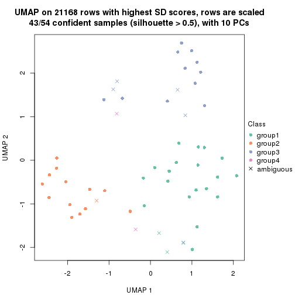
dimension_reduction(res, k = 5, method = "UMAP")
dimension_reduction(res, k = 6, method = "UMAP")
Following heatmap shows how subgroups are split when increasing k:
collect_classes(res)
Test correlation between subgroups and known annotations. If the known annotation is numeric, one-way ANOVA test is applied, and if the known annotation is discrete, chi-squared contingency table test is applied.
test_to_known_factors(res)
#> n disease.state(p) tissue(p) k
#> SD:NMF 52 5.73e-10 8.62e-04 2
#> SD:NMF 50 1.49e-10 1.22e-05 3
#> SD:NMF 43 3.98e-09 6.54e-04 4
#> SD:NMF 49 5.23e-09 4.65e-09 5
#> SD:NMF 53 3.24e-09 3.00e-07 6
If matrix rows can be associated to genes, consider to use functional_enrichment(res,
...) to perform function enrichment for the signature genes. See this vignette for more detailed explanations.
The object with results only for a single top-value method and a single partition method can be extracted as:
res = res_list["CV", "hclust"]
# you can also extract it by
# res = res_list["CV:hclust"]
A summary of res and all the functions that can be applied to it:
res
#> A 'ConsensusPartition' object with k = 2, 3, 4, 5, 6.
#> On a matrix with 21168 rows and 54 columns.
#> Top rows (1000, 2000, 3000, 4000, 5000) are extracted by 'CV' method.
#> Subgroups are detected by 'hclust' method.
#> Performed in total 1250 partitions by row resampling.
#> Best k for subgroups seems to be 2.
#>
#> Following methods can be applied to this 'ConsensusPartition' object:
#> [1] "cola_report" "collect_classes" "collect_plots"
#> [4] "collect_stats" "colnames" "compare_signatures"
#> [7] "consensus_heatmap" "dimension_reduction" "functional_enrichment"
#> [10] "get_anno_col" "get_anno" "get_classes"
#> [13] "get_consensus" "get_matrix" "get_membership"
#> [16] "get_param" "get_signatures" "get_stats"
#> [19] "is_best_k" "is_stable_k" "membership_heatmap"
#> [22] "ncol" "nrow" "plot_ecdf"
#> [25] "rownames" "select_partition_number" "show"
#> [28] "suggest_best_k" "test_to_known_factors"
collect_plots() function collects all the plots made from res for all k (number of partitions)
into one single page to provide an easy and fast comparison between different k.
collect_plots(res)
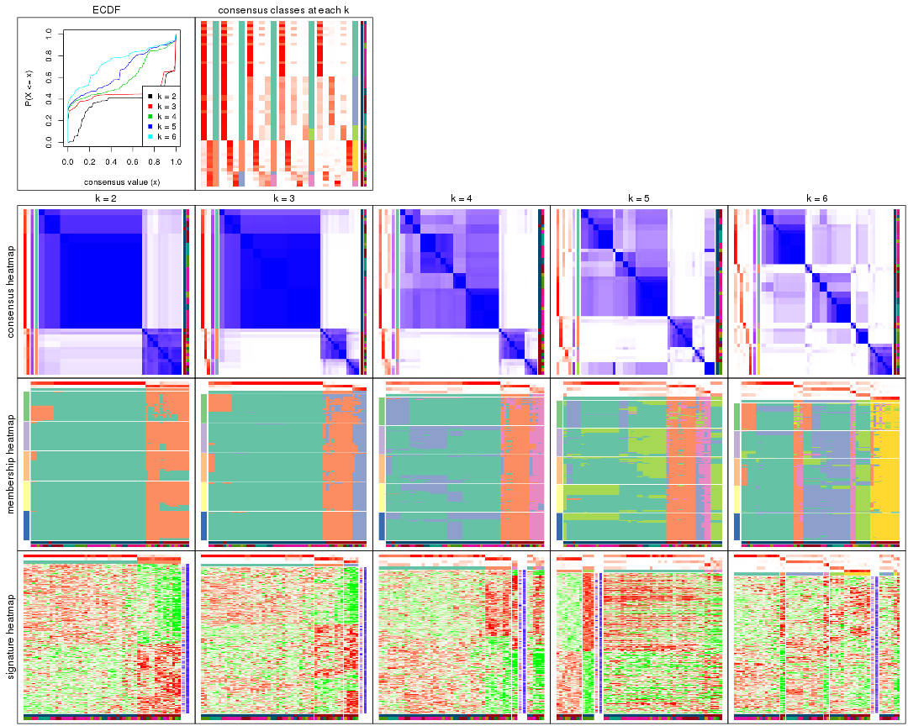
The plots are:
k and the heatmap of
predicted classes for each k.k.k.k.All the plots in panels can be made by individual functions and they are plotted later in this section.
select_partition_number() produces several plots showing different
statistics for choosing “optimized” k. There are following statistics:
k;k, the area increased is defined as \(A_k - A_{k-1}\).The detailed explanations of these statistics can be found in the cola vignette.
Generally speaking, lower PAC score, higher mean silhouette score or higher
concordance corresponds to better partition. Rand index and Jaccard index
measure how similar the current partition is compared to partition with k-1.
If they are too similar, we won't accept k is better than k-1.
select_partition_number(res)
The numeric values for all these statistics can be obtained by get_stats().
get_stats(res)
#> k 1-PAC mean_silhouette concordance area_increased Rand Jaccard
#> 2 2 0.499 0.930 0.942 0.379 0.591 0.591
#> 3 3 0.744 0.885 0.940 0.212 0.965 0.941
#> 4 4 0.499 0.670 0.788 0.298 0.997 0.995
#> 5 5 0.491 0.438 0.720 0.106 0.902 0.823
#> 6 6 0.581 0.694 0.767 0.132 0.768 0.495
suggest_best_k() suggests the best \(k\) based on these statistics. The rules are as follows:
suggest_best_k(res)
#> [1] 2
Following shows the table of the partitions (You need to click the show/hide
code output link to see it). The membership matrix (columns with name p*)
is inferred by
clue::cl_consensus()
function with the SE method. Basically the value in the membership matrix
represents the probability to belong to a certain group. The finall class
label for an item is determined with the group with highest probability it
belongs to.
In get_classes() function, the entropy is calculated from the membership
matrix and the silhouette score is calculated from the consensus matrix.
cbind(get_classes(res, k = 2), get_membership(res, k = 2))
#> class entropy silhouette p1 p2
#> GSM52556 2 0.4690 0.869 0.100 0.900
#> GSM52557 2 0.5408 0.912 0.124 0.876
#> GSM52558 2 0.5408 0.912 0.124 0.876
#> GSM52559 2 0.6343 0.912 0.160 0.840
#> GSM52560 2 0.6048 0.914 0.148 0.852
#> GSM52561 2 0.7815 0.839 0.232 0.768
#> GSM52562 2 0.5408 0.912 0.124 0.876
#> GSM52563 2 0.6973 0.895 0.188 0.812
#> GSM52564 1 0.4690 0.894 0.900 0.100
#> GSM52565 2 0.3114 0.875 0.056 0.944
#> GSM52566 2 0.6343 0.912 0.160 0.840
#> GSM52567 2 0.2948 0.872 0.052 0.948
#> GSM52568 2 0.5294 0.912 0.120 0.880
#> GSM52569 2 0.4431 0.870 0.092 0.908
#> GSM52570 2 0.4690 0.905 0.100 0.900
#> GSM52571 1 0.0000 0.971 1.000 0.000
#> GSM52572 1 0.6887 0.791 0.816 0.184
#> GSM52573 1 0.0000 0.971 1.000 0.000
#> GSM52574 1 0.0000 0.971 1.000 0.000
#> GSM52575 1 0.0000 0.971 1.000 0.000
#> GSM52576 1 0.0000 0.971 1.000 0.000
#> GSM52577 1 0.0000 0.971 1.000 0.000
#> GSM52578 1 0.0000 0.971 1.000 0.000
#> GSM52579 1 0.0000 0.971 1.000 0.000
#> GSM52580 1 0.4690 0.894 0.900 0.100
#> GSM52581 1 0.4690 0.894 0.900 0.100
#> GSM52582 1 0.0376 0.968 0.996 0.004
#> GSM52583 1 0.0376 0.968 0.996 0.004
#> GSM52584 1 0.0376 0.968 0.996 0.004
#> GSM52585 1 0.4690 0.894 0.900 0.100
#> GSM52586 1 0.6887 0.791 0.816 0.184
#> GSM52587 2 0.9460 0.652 0.364 0.636
#> GSM52588 1 0.0000 0.971 1.000 0.000
#> GSM52589 1 0.0000 0.971 1.000 0.000
#> GSM52590 1 0.0000 0.971 1.000 0.000
#> GSM52591 1 0.4815 0.890 0.896 0.104
#> GSM52592 1 0.0000 0.971 1.000 0.000
#> GSM52593 1 0.0000 0.971 1.000 0.000
#> GSM52594 1 0.0000 0.971 1.000 0.000
#> GSM52595 1 0.0000 0.971 1.000 0.000
#> GSM52596 1 0.0000 0.971 1.000 0.000
#> GSM52597 1 0.4815 0.890 0.896 0.104
#> GSM52598 1 0.0000 0.971 1.000 0.000
#> GSM52599 1 0.0000 0.971 1.000 0.000
#> GSM52600 1 0.0000 0.971 1.000 0.000
#> GSM52601 1 0.0000 0.971 1.000 0.000
#> GSM52602 1 0.0000 0.971 1.000 0.000
#> GSM52603 1 0.0000 0.971 1.000 0.000
#> GSM52604 1 0.0000 0.971 1.000 0.000
#> GSM52605 1 0.0000 0.971 1.000 0.000
#> GSM52606 1 0.0000 0.971 1.000 0.000
#> GSM52607 1 0.0000 0.971 1.000 0.000
#> GSM52608 1 0.0000 0.971 1.000 0.000
#> GSM52609 1 0.0000 0.971 1.000 0.000
cbind(get_classes(res, k = 3), get_membership(res, k = 3))
#> class entropy silhouette p1 p2 p3
#> GSM52556 3 0.1129 0.821 0.004 0.020 0.976
#> GSM52557 2 0.0000 0.842 0.000 1.000 0.000
#> GSM52558 2 0.0000 0.842 0.000 1.000 0.000
#> GSM52559 2 0.2066 0.832 0.000 0.940 0.060
#> GSM52560 2 0.1753 0.838 0.000 0.952 0.048
#> GSM52561 2 0.4121 0.752 0.084 0.876 0.040
#> GSM52562 2 0.0000 0.842 0.000 1.000 0.000
#> GSM52563 2 0.4233 0.760 0.004 0.836 0.160
#> GSM52564 1 0.4045 0.871 0.872 0.104 0.024
#> GSM52565 3 0.2959 0.829 0.000 0.100 0.900
#> GSM52566 2 0.2066 0.832 0.000 0.940 0.060
#> GSM52567 3 0.4452 0.789 0.000 0.192 0.808
#> GSM52568 2 0.4887 0.577 0.000 0.772 0.228
#> GSM52569 3 0.1585 0.824 0.008 0.028 0.964
#> GSM52570 3 0.5988 0.524 0.000 0.368 0.632
#> GSM52571 1 0.0000 0.962 1.000 0.000 0.000
#> GSM52572 1 0.6180 0.660 0.716 0.260 0.024
#> GSM52573 1 0.0237 0.962 0.996 0.000 0.004
#> GSM52574 1 0.0237 0.962 0.996 0.000 0.004
#> GSM52575 1 0.0237 0.962 0.996 0.000 0.004
#> GSM52576 1 0.0237 0.962 0.996 0.000 0.004
#> GSM52577 1 0.0000 0.962 1.000 0.000 0.000
#> GSM52578 1 0.0237 0.962 0.996 0.000 0.004
#> GSM52579 1 0.0237 0.962 0.996 0.000 0.004
#> GSM52580 1 0.3752 0.881 0.884 0.096 0.020
#> GSM52581 1 0.3752 0.881 0.884 0.096 0.020
#> GSM52582 1 0.0237 0.962 0.996 0.000 0.004
#> GSM52583 1 0.0237 0.962 0.996 0.000 0.004
#> GSM52584 1 0.0237 0.962 0.996 0.000 0.004
#> GSM52585 1 0.3752 0.881 0.884 0.096 0.020
#> GSM52586 1 0.6180 0.660 0.716 0.260 0.024
#> GSM52587 2 0.6141 0.505 0.232 0.736 0.032
#> GSM52588 1 0.0000 0.962 1.000 0.000 0.000
#> GSM52589 1 0.0000 0.962 1.000 0.000 0.000
#> GSM52590 1 0.0475 0.960 0.992 0.004 0.004
#> GSM52591 1 0.3987 0.871 0.872 0.108 0.020
#> GSM52592 1 0.0000 0.962 1.000 0.000 0.000
#> GSM52593 1 0.0000 0.962 1.000 0.000 0.000
#> GSM52594 1 0.0000 0.962 1.000 0.000 0.000
#> GSM52595 1 0.0000 0.962 1.000 0.000 0.000
#> GSM52596 1 0.0000 0.962 1.000 0.000 0.000
#> GSM52597 1 0.3987 0.871 0.872 0.108 0.020
#> GSM52598 1 0.0000 0.962 1.000 0.000 0.000
#> GSM52599 1 0.0000 0.962 1.000 0.000 0.000
#> GSM52600 1 0.0000 0.962 1.000 0.000 0.000
#> GSM52601 1 0.0000 0.962 1.000 0.000 0.000
#> GSM52602 1 0.0475 0.960 0.992 0.004 0.004
#> GSM52603 1 0.0475 0.960 0.992 0.004 0.004
#> GSM52604 1 0.0475 0.960 0.992 0.004 0.004
#> GSM52605 1 0.0475 0.960 0.992 0.004 0.004
#> GSM52606 1 0.0237 0.962 0.996 0.000 0.004
#> GSM52607 1 0.0237 0.962 0.996 0.000 0.004
#> GSM52608 1 0.0237 0.962 0.996 0.000 0.004
#> GSM52609 1 0.0237 0.962 0.996 0.000 0.004
cbind(get_classes(res, k = 4), get_membership(res, k = 4))
#> class entropy silhouette p1 p2 p3 p4
#> GSM52556 4 0.5368 0.6118 0.000 0.024 0.340 0.636
#> GSM52557 2 0.0817 0.8363 0.000 0.976 0.024 0.000
#> GSM52558 2 0.0817 0.8363 0.000 0.976 0.024 0.000
#> GSM52559 2 0.1118 0.8278 0.000 0.964 0.000 0.036
#> GSM52560 2 0.1489 0.8286 0.000 0.952 0.004 0.044
#> GSM52561 2 0.3673 0.7608 0.068 0.872 0.020 0.040
#> GSM52562 2 0.0817 0.8363 0.000 0.976 0.024 0.000
#> GSM52563 2 0.3485 0.7566 0.000 0.856 0.028 0.116
#> GSM52564 1 0.4499 0.6263 0.756 0.012 0.228 0.004
#> GSM52565 4 0.6148 0.4199 0.000 0.048 0.468 0.484
#> GSM52566 2 0.1118 0.8278 0.000 0.964 0.000 0.036
#> GSM52567 4 0.7641 0.0756 0.000 0.208 0.376 0.416
#> GSM52568 2 0.6136 0.1838 0.000 0.584 0.356 0.060
#> GSM52569 4 0.5040 0.6192 0.000 0.008 0.364 0.628
#> GSM52570 3 0.6432 0.0000 0.000 0.128 0.636 0.236
#> GSM52571 1 0.0188 0.7788 0.996 0.000 0.000 0.004
#> GSM52572 1 0.5417 0.3793 0.596 0.012 0.388 0.004
#> GSM52573 1 0.4624 0.7103 0.660 0.000 0.000 0.340
#> GSM52574 1 0.4624 0.7103 0.660 0.000 0.000 0.340
#> GSM52575 1 0.4222 0.7407 0.728 0.000 0.000 0.272
#> GSM52576 1 0.4222 0.7407 0.728 0.000 0.000 0.272
#> GSM52577 1 0.1022 0.7792 0.968 0.000 0.000 0.032
#> GSM52578 1 0.4697 0.7264 0.696 0.000 0.008 0.296
#> GSM52579 1 0.4697 0.7264 0.696 0.000 0.008 0.296
#> GSM52580 1 0.6522 0.6238 0.632 0.000 0.224 0.144
#> GSM52581 1 0.6522 0.6238 0.632 0.000 0.224 0.144
#> GSM52582 1 0.4454 0.7224 0.692 0.000 0.000 0.308
#> GSM52583 1 0.4356 0.7310 0.708 0.000 0.000 0.292
#> GSM52584 1 0.4331 0.7326 0.712 0.000 0.000 0.288
#> GSM52585 1 0.6522 0.6238 0.632 0.000 0.224 0.144
#> GSM52586 1 0.5417 0.3793 0.596 0.012 0.388 0.004
#> GSM52587 2 0.5460 0.5297 0.204 0.736 0.020 0.040
#> GSM52588 1 0.0000 0.7786 1.000 0.000 0.000 0.000
#> GSM52589 1 0.0817 0.7796 0.976 0.000 0.000 0.024
#> GSM52590 1 0.5180 0.6435 0.740 0.000 0.196 0.064
#> GSM52591 1 0.4408 0.6261 0.756 0.008 0.232 0.004
#> GSM52592 1 0.0000 0.7786 1.000 0.000 0.000 0.000
#> GSM52593 1 0.0188 0.7788 0.996 0.000 0.000 0.004
#> GSM52594 1 0.0188 0.7788 0.996 0.000 0.000 0.004
#> GSM52595 1 0.0188 0.7788 0.996 0.000 0.000 0.004
#> GSM52596 1 0.0188 0.7788 0.996 0.000 0.000 0.004
#> GSM52597 1 0.4408 0.6261 0.756 0.008 0.232 0.004
#> GSM52598 1 0.0000 0.7786 1.000 0.000 0.000 0.000
#> GSM52599 1 0.0188 0.7788 0.996 0.000 0.000 0.004
#> GSM52600 1 0.0000 0.7786 1.000 0.000 0.000 0.000
#> GSM52601 1 0.0000 0.7786 1.000 0.000 0.000 0.000
#> GSM52602 1 0.5609 0.6383 0.712 0.000 0.200 0.088
#> GSM52603 1 0.5609 0.6383 0.712 0.000 0.200 0.088
#> GSM52604 1 0.5609 0.6383 0.712 0.000 0.200 0.088
#> GSM52605 1 0.5609 0.6383 0.712 0.000 0.200 0.088
#> GSM52606 1 0.4624 0.7103 0.660 0.000 0.000 0.340
#> GSM52607 1 0.4624 0.7103 0.660 0.000 0.000 0.340
#> GSM52608 1 0.4624 0.7103 0.660 0.000 0.000 0.340
#> GSM52609 1 0.4624 0.7103 0.660 0.000 0.000 0.340
cbind(get_classes(res, k = 5), get_membership(res, k = 5))
#> class entropy silhouette p1 p2 p3 p4 p5
#> GSM52556 4 0.2966 0.4113 0.000 0.016 0.000 0.848 0.136
#> GSM52557 2 0.0671 0.8475 0.000 0.980 0.016 0.000 0.004
#> GSM52558 2 0.0912 0.8488 0.000 0.972 0.016 0.000 0.012
#> GSM52559 2 0.1485 0.8406 0.000 0.948 0.000 0.020 0.032
#> GSM52560 2 0.1430 0.8398 0.000 0.944 0.000 0.052 0.004
#> GSM52561 2 0.3503 0.7838 0.060 0.864 0.020 0.044 0.012
#> GSM52562 2 0.0912 0.8488 0.000 0.972 0.016 0.000 0.012
#> GSM52563 2 0.3243 0.7820 0.000 0.848 0.004 0.116 0.032
#> GSM52564 1 0.4151 0.3189 0.748 0.008 0.228 0.004 0.012
#> GSM52565 4 0.6131 -0.0055 0.000 0.000 0.284 0.548 0.168
#> GSM52566 2 0.1485 0.8406 0.000 0.948 0.000 0.020 0.032
#> GSM52567 4 0.8259 -0.3761 0.000 0.116 0.292 0.312 0.280
#> GSM52568 2 0.7165 0.1560 0.000 0.544 0.236 0.132 0.088
#> GSM52569 4 0.1282 0.4398 0.000 0.000 0.044 0.952 0.004
#> GSM52570 3 0.6980 0.0000 0.000 0.048 0.528 0.152 0.272
#> GSM52571 1 0.0162 0.4732 0.996 0.000 0.004 0.000 0.000
#> GSM52572 1 0.5178 0.1331 0.588 0.012 0.372 0.000 0.028
#> GSM52573 1 0.6523 0.2679 0.480 0.000 0.288 0.000 0.232
#> GSM52574 1 0.6523 0.2679 0.480 0.000 0.288 0.000 0.232
#> GSM52575 1 0.5612 0.3673 0.624 0.000 0.248 0.000 0.128
#> GSM52576 1 0.5612 0.3673 0.624 0.000 0.248 0.000 0.128
#> GSM52577 1 0.1386 0.4459 0.952 0.000 0.016 0.000 0.032
#> GSM52578 1 0.6191 0.3387 0.536 0.000 0.292 0.000 0.172
#> GSM52579 1 0.6191 0.3387 0.536 0.000 0.292 0.000 0.172
#> GSM52580 1 0.4403 0.3596 0.560 0.000 0.436 0.000 0.004
#> GSM52581 1 0.4403 0.3596 0.560 0.000 0.436 0.000 0.004
#> GSM52582 1 0.5619 0.4040 0.584 0.000 0.332 0.004 0.080
#> GSM52583 1 0.5608 0.4105 0.596 0.000 0.316 0.004 0.084
#> GSM52584 1 0.5543 0.4136 0.604 0.000 0.312 0.004 0.080
#> GSM52585 1 0.4403 0.3596 0.560 0.000 0.436 0.000 0.004
#> GSM52586 1 0.5178 0.1331 0.588 0.012 0.372 0.000 0.028
#> GSM52587 2 0.5642 0.6201 0.148 0.728 0.040 0.036 0.048
#> GSM52588 1 0.0162 0.4686 0.996 0.000 0.000 0.000 0.004
#> GSM52589 1 0.0703 0.4751 0.976 0.000 0.024 0.000 0.000
#> GSM52590 1 0.4420 -0.8740 0.548 0.000 0.004 0.000 0.448
#> GSM52591 1 0.4103 0.3190 0.748 0.012 0.228 0.000 0.012
#> GSM52592 1 0.0000 0.4715 1.000 0.000 0.000 0.000 0.000
#> GSM52593 1 0.0162 0.4732 0.996 0.000 0.004 0.000 0.000
#> GSM52594 1 0.0162 0.4732 0.996 0.000 0.004 0.000 0.000
#> GSM52595 1 0.0162 0.4732 0.996 0.000 0.004 0.000 0.000
#> GSM52596 1 0.0162 0.4732 0.996 0.000 0.004 0.000 0.000
#> GSM52597 1 0.4103 0.3190 0.748 0.012 0.228 0.000 0.012
#> GSM52598 1 0.0000 0.4715 1.000 0.000 0.000 0.000 0.000
#> GSM52599 1 0.0162 0.4732 0.996 0.000 0.004 0.000 0.000
#> GSM52600 1 0.0000 0.4715 1.000 0.000 0.000 0.000 0.000
#> GSM52601 1 0.0000 0.4715 1.000 0.000 0.000 0.000 0.000
#> GSM52602 5 0.4559 1.0000 0.480 0.000 0.008 0.000 0.512
#> GSM52603 5 0.4559 1.0000 0.480 0.000 0.008 0.000 0.512
#> GSM52604 5 0.4559 1.0000 0.480 0.000 0.008 0.000 0.512
#> GSM52605 5 0.4559 1.0000 0.480 0.000 0.008 0.000 0.512
#> GSM52606 1 0.6523 0.2679 0.480 0.000 0.288 0.000 0.232
#> GSM52607 1 0.6523 0.2679 0.480 0.000 0.288 0.000 0.232
#> GSM52608 1 0.6523 0.2679 0.480 0.000 0.288 0.000 0.232
#> GSM52609 1 0.6523 0.2679 0.480 0.000 0.288 0.000 0.232
cbind(get_classes(res, k = 6), get_membership(res, k = 6))
#> class entropy silhouette p1 p2 p3 p4 p5 p6
#> GSM52556 4 0.0000 0.607 0.000 0.000 0.000 1.000 0.000 0.000
#> GSM52557 6 0.0547 0.847 0.000 0.020 0.000 0.000 0.000 0.980
#> GSM52558 6 0.0547 0.850 0.000 0.020 0.000 0.000 0.000 0.980
#> GSM52559 6 0.1938 0.839 0.000 0.020 0.008 0.052 0.000 0.920
#> GSM52560 6 0.1672 0.839 0.000 0.048 0.016 0.004 0.000 0.932
#> GSM52561 6 0.3468 0.790 0.056 0.048 0.024 0.004 0.016 0.852
#> GSM52562 6 0.0547 0.850 0.000 0.020 0.000 0.000 0.000 0.980
#> GSM52563 6 0.2859 0.785 0.000 0.016 0.000 0.156 0.000 0.828
#> GSM52564 1 0.4233 0.670 0.740 0.012 0.036 0.000 0.204 0.008
#> GSM52565 2 0.4602 0.293 0.000 0.628 0.004 0.320 0.048 0.000
#> GSM52566 6 0.1938 0.839 0.000 0.020 0.008 0.052 0.000 0.920
#> GSM52567 2 0.3453 0.533 0.000 0.792 0.000 0.164 0.000 0.044
#> GSM52568 6 0.5103 0.132 0.000 0.436 0.020 0.000 0.040 0.504
#> GSM52569 4 0.3758 0.508 0.000 0.284 0.016 0.700 0.000 0.000
#> GSM52570 2 0.2834 0.527 0.000 0.864 0.020 0.000 0.096 0.020
#> GSM52571 1 0.0146 0.852 0.996 0.000 0.004 0.000 0.000 0.000
#> GSM52572 1 0.6243 0.482 0.572 0.120 0.048 0.000 0.248 0.012
#> GSM52573 3 0.3543 0.650 0.200 0.000 0.768 0.000 0.032 0.000
#> GSM52574 3 0.3543 0.650 0.200 0.000 0.768 0.000 0.032 0.000
#> GSM52575 3 0.3955 0.585 0.384 0.000 0.608 0.000 0.008 0.000
#> GSM52576 3 0.3955 0.585 0.384 0.000 0.608 0.000 0.008 0.000
#> GSM52577 1 0.1444 0.777 0.928 0.000 0.072 0.000 0.000 0.000
#> GSM52578 3 0.3608 0.656 0.272 0.000 0.716 0.000 0.012 0.000
#> GSM52579 3 0.3608 0.656 0.272 0.000 0.716 0.000 0.012 0.000
#> GSM52580 3 0.6268 0.318 0.300 0.008 0.408 0.000 0.284 0.000
#> GSM52581 3 0.6268 0.318 0.300 0.008 0.408 0.000 0.284 0.000
#> GSM52582 3 0.4659 0.579 0.252 0.004 0.668 0.000 0.076 0.000
#> GSM52583 3 0.4682 0.570 0.284 0.000 0.640 0.000 0.076 0.000
#> GSM52584 3 0.4818 0.573 0.284 0.004 0.636 0.000 0.076 0.000
#> GSM52585 3 0.6268 0.318 0.300 0.008 0.408 0.000 0.284 0.000
#> GSM52586 1 0.6243 0.482 0.572 0.120 0.048 0.000 0.248 0.012
#> GSM52587 6 0.5140 0.681 0.096 0.020 0.120 0.004 0.032 0.728
#> GSM52588 1 0.0363 0.845 0.988 0.000 0.012 0.000 0.000 0.000
#> GSM52589 1 0.1649 0.796 0.932 0.000 0.036 0.000 0.032 0.000
#> GSM52590 5 0.5042 0.790 0.332 0.000 0.092 0.000 0.576 0.000
#> GSM52591 1 0.4233 0.670 0.740 0.008 0.036 0.000 0.204 0.012
#> GSM52592 1 0.0000 0.851 1.000 0.000 0.000 0.000 0.000 0.000
#> GSM52593 1 0.0146 0.852 0.996 0.000 0.004 0.000 0.000 0.000
#> GSM52594 1 0.0146 0.852 0.996 0.000 0.004 0.000 0.000 0.000
#> GSM52595 1 0.0146 0.852 0.996 0.000 0.004 0.000 0.000 0.000
#> GSM52596 1 0.0146 0.852 0.996 0.000 0.004 0.000 0.000 0.000
#> GSM52597 1 0.4233 0.670 0.740 0.008 0.036 0.000 0.204 0.012
#> GSM52598 1 0.0000 0.851 1.000 0.000 0.000 0.000 0.000 0.000
#> GSM52599 1 0.0146 0.852 0.996 0.000 0.004 0.000 0.000 0.000
#> GSM52600 1 0.0000 0.851 1.000 0.000 0.000 0.000 0.000 0.000
#> GSM52601 1 0.0000 0.851 1.000 0.000 0.000 0.000 0.000 0.000
#> GSM52602 5 0.4783 0.948 0.204 0.000 0.128 0.000 0.668 0.000
#> GSM52603 5 0.4783 0.948 0.204 0.000 0.128 0.000 0.668 0.000
#> GSM52604 5 0.4783 0.948 0.204 0.000 0.128 0.000 0.668 0.000
#> GSM52605 5 0.4783 0.948 0.204 0.000 0.128 0.000 0.668 0.000
#> GSM52606 3 0.3543 0.650 0.200 0.000 0.768 0.000 0.032 0.000
#> GSM52607 3 0.3543 0.650 0.200 0.000 0.768 0.000 0.032 0.000
#> GSM52608 3 0.3543 0.650 0.200 0.000 0.768 0.000 0.032 0.000
#> GSM52609 3 0.3543 0.650 0.200 0.000 0.768 0.000 0.032 0.000
Heatmaps for the consensus matrix. It visualizes the probability of two samples to be in a same group.
consensus_heatmap(res, k = 2)
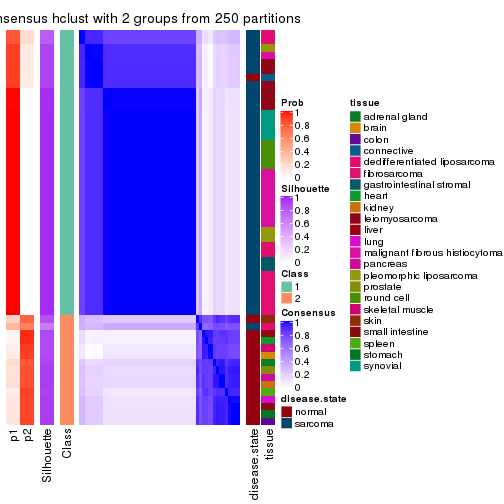
consensus_heatmap(res, k = 3)
consensus_heatmap(res, k = 4)
consensus_heatmap(res, k = 5)
consensus_heatmap(res, k = 6)
Heatmaps for the membership of samples in all partitions to see how consistent they are:
membership_heatmap(res, k = 2)
membership_heatmap(res, k = 3)
membership_heatmap(res, k = 4)
membership_heatmap(res, k = 5)
membership_heatmap(res, k = 6)
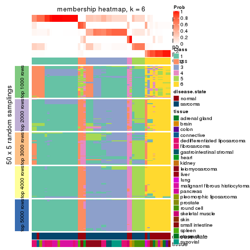
As soon as we have had the classes for columns, we can look for signatures which are significantly different between classes which can be candidate marks for certain classes. Following are the heatmaps for signatures.
Signature heatmaps where rows are scaled:
get_signatures(res, k = 2)
get_signatures(res, k = 3)
get_signatures(res, k = 4)
get_signatures(res, k = 5)
get_signatures(res, k = 6)
Signature heatmaps where rows are not scaled:
get_signatures(res, k = 2, scale_rows = FALSE)
get_signatures(res, k = 3, scale_rows = FALSE)
get_signatures(res, k = 4, scale_rows = FALSE)
get_signatures(res, k = 5, scale_rows = FALSE)
get_signatures(res, k = 6, scale_rows = FALSE)
Compare the overlap of signatures from different k:
compare_signatures(res)
get_signature() returns a data frame invisibly. TO get the list of signatures, the function
call should be assigned to a variable explicitly. In following code, if plot argument is set
to FALSE, no heatmap is plotted while only the differential analysis is performed.
# code only for demonstration
tb = get_signature(res, k = ..., plot = FALSE)
An example of the output of tb is:
#> which_row fdr mean_1 mean_2 scaled_mean_1 scaled_mean_2 km
#> 1 38 0.042760348 8.373488 9.131774 -0.5533452 0.5164555 1
#> 2 40 0.018707592 7.106213 8.469186 -0.6173731 0.5762149 1
#> 3 55 0.019134737 10.221463 11.207825 -0.6159697 0.5749050 1
#> 4 59 0.006059896 5.921854 7.869574 -0.6899429 0.6439467 1
#> 5 60 0.018055526 8.928898 10.211722 -0.6204761 0.5791110 1
#> 6 98 0.009384629 15.714769 14.887706 0.6635654 -0.6193277 2
...
The columns in tb are:
which_row: row indices corresponding to the input matrix.fdr: FDR for the differential test. mean_x: The mean value in group x.scaled_mean_x: The mean value in group x after rows are scaled.km: Row groups if k-means clustering is applied to rows.UMAP plot which shows how samples are separated.
dimension_reduction(res, k = 2, method = "UMAP")
dimension_reduction(res, k = 3, method = "UMAP")
dimension_reduction(res, k = 4, method = "UMAP")
dimension_reduction(res, k = 5, method = "UMAP")
dimension_reduction(res, k = 6, method = "UMAP")
Following heatmap shows how subgroups are split when increasing k:
collect_classes(res)
Test correlation between subgroups and known annotations. If the known annotation is numeric, one-way ANOVA test is applied, and if the known annotation is discrete, chi-squared contingency table test is applied.
test_to_known_factors(res)
#> n disease.state(p) tissue(p) k
#> CV:hclust 54 2.44e-10 5.41e-04 2
#> CV:hclust 54 2.01e-10 1.27e-06 3
#> CV:hclust 48 7.34e-09 9.76e-07 4
#> CV:hclust 13 1.54e-02 1.63e-01 5
#> CV:hclust 47 4.00e-07 4.10e-10 6
If matrix rows can be associated to genes, consider to use functional_enrichment(res,
...) to perform function enrichment for the signature genes. See this vignette for more detailed explanations.
The object with results only for a single top-value method and a single partition method can be extracted as:
res = res_list["CV", "kmeans"]
# you can also extract it by
# res = res_list["CV:kmeans"]
A summary of res and all the functions that can be applied to it:
res
#> A 'ConsensusPartition' object with k = 2, 3, 4, 5, 6.
#> On a matrix with 21168 rows and 54 columns.
#> Top rows (1000, 2000, 3000, 4000, 5000) are extracted by 'CV' method.
#> Subgroups are detected by 'kmeans' method.
#> Performed in total 1250 partitions by row resampling.
#> Best k for subgroups seems to be 3.
#>
#> Following methods can be applied to this 'ConsensusPartition' object:
#> [1] "cola_report" "collect_classes" "collect_plots"
#> [4] "collect_stats" "colnames" "compare_signatures"
#> [7] "consensus_heatmap" "dimension_reduction" "functional_enrichment"
#> [10] "get_anno_col" "get_anno" "get_classes"
#> [13] "get_consensus" "get_matrix" "get_membership"
#> [16] "get_param" "get_signatures" "get_stats"
#> [19] "is_best_k" "is_stable_k" "membership_heatmap"
#> [22] "ncol" "nrow" "plot_ecdf"
#> [25] "rownames" "select_partition_number" "show"
#> [28] "suggest_best_k" "test_to_known_factors"
collect_plots() function collects all the plots made from res for all k (number of partitions)
into one single page to provide an easy and fast comparison between different k.
collect_plots(res)
The plots are:
k and the heatmap of
predicted classes for each k.k.k.k.All the plots in panels can be made by individual functions and they are plotted later in this section.
select_partition_number() produces several plots showing different
statistics for choosing “optimized” k. There are following statistics:
k;k, the area increased is defined as \(A_k - A_{k-1}\).The detailed explanations of these statistics can be found in the cola vignette.
Generally speaking, lower PAC score, higher mean silhouette score or higher
concordance corresponds to better partition. Rand index and Jaccard index
measure how similar the current partition is compared to partition with k-1.
If they are too similar, we won't accept k is better than k-1.
select_partition_number(res)
The numeric values for all these statistics can be obtained by get_stats().
get_stats(res)
#> k 1-PAC mean_silhouette concordance area_increased Rand Jaccard
#> 2 2 0.836 0.942 0.951 0.3928 0.609 0.609
#> 3 3 0.544 0.803 0.810 0.5287 0.738 0.569
#> 4 4 0.558 0.569 0.737 0.1709 0.954 0.867
#> 5 5 0.664 0.702 0.765 0.0899 0.899 0.675
#> 6 6 0.720 0.776 0.819 0.0522 0.949 0.777
suggest_best_k() suggests the best \(k\) based on these statistics. The rules are as follows:
suggest_best_k(res)
#> [1] 3
Following shows the table of the partitions (You need to click the show/hide
code output link to see it). The membership matrix (columns with name p*)
is inferred by
clue::cl_consensus()
function with the SE method. Basically the value in the membership matrix
represents the probability to belong to a certain group. The finall class
label for an item is determined with the group with highest probability it
belongs to.
In get_classes() function, the entropy is calculated from the membership
matrix and the silhouette score is calculated from the consensus matrix.
cbind(get_classes(res, k = 2), get_membership(res, k = 2))
#> class entropy silhouette p1 p2
#> GSM52556 2 0.3733 0.899 0.072 0.928
#> GSM52557 2 0.2423 0.970 0.040 0.960
#> GSM52558 2 0.2423 0.970 0.040 0.960
#> GSM52559 2 0.2423 0.970 0.040 0.960
#> GSM52560 2 0.2423 0.970 0.040 0.960
#> GSM52561 2 0.8955 0.564 0.312 0.688
#> GSM52562 2 0.2423 0.970 0.040 0.960
#> GSM52563 2 0.2423 0.970 0.040 0.960
#> GSM52564 1 0.5178 0.904 0.884 0.116
#> GSM52565 2 0.2423 0.970 0.040 0.960
#> GSM52566 2 0.2423 0.970 0.040 0.960
#> GSM52567 2 0.2423 0.970 0.040 0.960
#> GSM52568 2 0.2423 0.970 0.040 0.960
#> GSM52569 2 0.2423 0.970 0.040 0.960
#> GSM52570 2 0.2423 0.970 0.040 0.960
#> GSM52571 1 0.2236 0.957 0.964 0.036
#> GSM52572 1 0.4161 0.931 0.916 0.084
#> GSM52573 1 0.1843 0.944 0.972 0.028
#> GSM52574 1 0.1843 0.944 0.972 0.028
#> GSM52575 1 0.1843 0.944 0.972 0.028
#> GSM52576 1 0.1843 0.944 0.972 0.028
#> GSM52577 1 0.1843 0.944 0.972 0.028
#> GSM52578 1 0.1843 0.944 0.972 0.028
#> GSM52579 1 0.1843 0.944 0.972 0.028
#> GSM52580 1 0.2778 0.955 0.952 0.048
#> GSM52581 1 0.5408 0.903 0.876 0.124
#> GSM52582 1 0.1633 0.951 0.976 0.024
#> GSM52583 1 0.2603 0.956 0.956 0.044
#> GSM52584 1 0.2603 0.956 0.956 0.044
#> GSM52585 1 0.5408 0.903 0.876 0.124
#> GSM52586 1 0.5178 0.904 0.884 0.116
#> GSM52587 1 0.5408 0.903 0.876 0.124
#> GSM52588 1 0.2236 0.957 0.964 0.036
#> GSM52589 1 0.2043 0.958 0.968 0.032
#> GSM52590 1 0.1633 0.957 0.976 0.024
#> GSM52591 1 0.4298 0.928 0.912 0.088
#> GSM52592 1 0.2236 0.957 0.964 0.036
#> GSM52593 1 0.2236 0.957 0.964 0.036
#> GSM52594 1 0.2236 0.957 0.964 0.036
#> GSM52595 1 0.2236 0.957 0.964 0.036
#> GSM52596 1 0.2236 0.957 0.964 0.036
#> GSM52597 1 0.4431 0.925 0.908 0.092
#> GSM52598 1 0.2236 0.957 0.964 0.036
#> GSM52599 1 0.2236 0.957 0.964 0.036
#> GSM52600 1 0.2236 0.957 0.964 0.036
#> GSM52601 1 0.2236 0.957 0.964 0.036
#> GSM52602 1 0.0376 0.953 0.996 0.004
#> GSM52603 1 0.0376 0.953 0.996 0.004
#> GSM52604 1 0.0376 0.953 0.996 0.004
#> GSM52605 1 0.0376 0.953 0.996 0.004
#> GSM52606 1 0.1843 0.944 0.972 0.028
#> GSM52607 1 0.1843 0.944 0.972 0.028
#> GSM52608 1 0.1843 0.944 0.972 0.028
#> GSM52609 1 0.1843 0.944 0.972 0.028
cbind(get_classes(res, k = 3), get_membership(res, k = 3))
#> class entropy silhouette p1 p2 p3
#> GSM52556 2 0.1411 0.922 0.000 0.964 0.036
#> GSM52557 2 0.3998 0.909 0.060 0.884 0.056
#> GSM52558 2 0.3998 0.909 0.060 0.884 0.056
#> GSM52559 2 0.2096 0.927 0.004 0.944 0.052
#> GSM52560 2 0.2096 0.927 0.004 0.944 0.052
#> GSM52561 2 0.7945 0.425 0.388 0.548 0.064
#> GSM52562 2 0.3998 0.909 0.060 0.884 0.056
#> GSM52563 2 0.1129 0.929 0.004 0.976 0.020
#> GSM52564 1 0.2492 0.796 0.936 0.016 0.048
#> GSM52565 2 0.1585 0.928 0.008 0.964 0.028
#> GSM52566 2 0.2096 0.927 0.004 0.944 0.052
#> GSM52567 2 0.1399 0.929 0.004 0.968 0.028
#> GSM52568 2 0.0424 0.931 0.008 0.992 0.000
#> GSM52569 2 0.1585 0.928 0.008 0.964 0.028
#> GSM52570 2 0.1751 0.928 0.012 0.960 0.028
#> GSM52571 1 0.5461 0.778 0.748 0.008 0.244
#> GSM52572 1 0.2339 0.798 0.940 0.012 0.048
#> GSM52573 3 0.3941 0.852 0.156 0.000 0.844
#> GSM52574 3 0.3941 0.852 0.156 0.000 0.844
#> GSM52575 3 0.3941 0.852 0.156 0.000 0.844
#> GSM52576 3 0.4654 0.827 0.208 0.000 0.792
#> GSM52577 3 0.5560 0.731 0.300 0.000 0.700
#> GSM52578 3 0.5760 0.710 0.328 0.000 0.672
#> GSM52579 3 0.5760 0.710 0.328 0.000 0.672
#> GSM52580 1 0.0000 0.767 1.000 0.000 0.000
#> GSM52581 1 0.0424 0.761 0.992 0.008 0.000
#> GSM52582 1 0.2625 0.800 0.916 0.000 0.084
#> GSM52583 1 0.2448 0.801 0.924 0.000 0.076
#> GSM52584 1 0.2356 0.800 0.928 0.000 0.072
#> GSM52585 1 0.0424 0.761 0.992 0.008 0.000
#> GSM52586 1 0.1905 0.785 0.956 0.016 0.028
#> GSM52587 1 0.0424 0.761 0.992 0.008 0.000
#> GSM52588 1 0.5461 0.778 0.748 0.008 0.244
#> GSM52589 1 0.5285 0.776 0.752 0.004 0.244
#> GSM52590 1 0.6836 0.388 0.572 0.016 0.412
#> GSM52591 1 0.2492 0.796 0.936 0.016 0.048
#> GSM52592 1 0.5461 0.778 0.748 0.008 0.244
#> GSM52593 1 0.5461 0.778 0.748 0.008 0.244
#> GSM52594 1 0.5461 0.778 0.748 0.008 0.244
#> GSM52595 1 0.5461 0.778 0.748 0.008 0.244
#> GSM52596 1 0.5461 0.778 0.748 0.008 0.244
#> GSM52597 1 0.2492 0.796 0.936 0.016 0.048
#> GSM52598 1 0.4531 0.805 0.824 0.008 0.168
#> GSM52599 1 0.5461 0.778 0.748 0.008 0.244
#> GSM52600 1 0.5461 0.778 0.748 0.008 0.244
#> GSM52601 1 0.4291 0.807 0.840 0.008 0.152
#> GSM52602 3 0.5848 0.707 0.268 0.012 0.720
#> GSM52603 3 0.5884 0.704 0.272 0.012 0.716
#> GSM52604 3 0.5848 0.707 0.268 0.012 0.720
#> GSM52605 3 0.5884 0.704 0.272 0.012 0.716
#> GSM52606 3 0.3941 0.852 0.156 0.000 0.844
#> GSM52607 3 0.3941 0.852 0.156 0.000 0.844
#> GSM52608 3 0.3941 0.852 0.156 0.000 0.844
#> GSM52609 3 0.3941 0.852 0.156 0.000 0.844
cbind(get_classes(res, k = 4), get_membership(res, k = 4))
#> class entropy silhouette p1 p2 p3 p4
#> GSM52556 2 0.4951 0.843 0.000 0.744 0.044 0.212
#> GSM52557 2 0.2940 0.817 0.012 0.892 0.008 0.088
#> GSM52558 2 0.2940 0.817 0.012 0.892 0.008 0.088
#> GSM52559 2 0.0188 0.851 0.000 0.996 0.000 0.004
#> GSM52560 2 0.0000 0.850 0.000 1.000 0.000 0.000
#> GSM52561 2 0.6540 0.451 0.204 0.648 0.004 0.144
#> GSM52562 2 0.2940 0.817 0.012 0.892 0.008 0.088
#> GSM52563 2 0.4361 0.851 0.000 0.772 0.020 0.208
#> GSM52564 1 0.4008 0.123 0.756 0.000 0.000 0.244
#> GSM52565 2 0.4954 0.844 0.004 0.736 0.028 0.232
#> GSM52566 2 0.0188 0.851 0.000 0.996 0.000 0.004
#> GSM52567 2 0.4706 0.847 0.000 0.748 0.028 0.224
#> GSM52568 2 0.3736 0.859 0.004 0.844 0.024 0.128
#> GSM52569 2 0.4954 0.844 0.004 0.736 0.028 0.232
#> GSM52570 2 0.5250 0.845 0.008 0.720 0.032 0.240
#> GSM52571 1 0.2266 0.644 0.912 0.000 0.084 0.004
#> GSM52572 1 0.3907 0.129 0.768 0.000 0.000 0.232
#> GSM52573 3 0.2654 0.811 0.108 0.004 0.888 0.000
#> GSM52574 3 0.2654 0.811 0.108 0.004 0.888 0.000
#> GSM52575 3 0.2589 0.809 0.116 0.000 0.884 0.000
#> GSM52576 3 0.3791 0.762 0.200 0.000 0.796 0.004
#> GSM52577 3 0.4963 0.694 0.284 0.000 0.696 0.020
#> GSM52578 3 0.5776 0.723 0.220 0.004 0.700 0.076
#> GSM52579 3 0.5776 0.723 0.220 0.004 0.700 0.076
#> GSM52580 1 0.4996 -0.915 0.516 0.000 0.000 0.484
#> GSM52581 4 0.4992 0.965 0.476 0.000 0.000 0.524
#> GSM52582 1 0.4830 -0.596 0.608 0.000 0.000 0.392
#> GSM52583 1 0.4790 -0.559 0.620 0.000 0.000 0.380
#> GSM52584 1 0.4817 -0.584 0.612 0.000 0.000 0.388
#> GSM52585 4 0.4992 0.965 0.476 0.000 0.000 0.524
#> GSM52586 1 0.4331 -0.125 0.712 0.000 0.000 0.288
#> GSM52587 4 0.5000 0.927 0.500 0.000 0.000 0.500
#> GSM52588 1 0.2542 0.644 0.904 0.000 0.084 0.012
#> GSM52589 1 0.2662 0.640 0.900 0.000 0.084 0.016
#> GSM52590 1 0.6917 0.266 0.592 0.000 0.208 0.200
#> GSM52591 1 0.3569 0.248 0.804 0.000 0.000 0.196
#> GSM52592 1 0.2266 0.644 0.912 0.000 0.084 0.004
#> GSM52593 1 0.2412 0.645 0.908 0.000 0.084 0.008
#> GSM52594 1 0.2412 0.645 0.908 0.000 0.084 0.008
#> GSM52595 1 0.2412 0.645 0.908 0.000 0.084 0.008
#> GSM52596 1 0.2542 0.644 0.904 0.000 0.084 0.012
#> GSM52597 1 0.3873 0.144 0.772 0.000 0.000 0.228
#> GSM52598 1 0.0817 0.597 0.976 0.000 0.024 0.000
#> GSM52599 1 0.2266 0.644 0.912 0.000 0.084 0.004
#> GSM52600 1 0.2266 0.644 0.912 0.000 0.084 0.004
#> GSM52601 1 0.1209 0.601 0.964 0.000 0.032 0.004
#> GSM52602 3 0.7271 0.532 0.244 0.000 0.540 0.216
#> GSM52603 3 0.7301 0.528 0.228 0.000 0.536 0.236
#> GSM52604 3 0.7271 0.532 0.244 0.000 0.540 0.216
#> GSM52605 3 0.7277 0.528 0.228 0.000 0.540 0.232
#> GSM52606 3 0.2654 0.811 0.108 0.004 0.888 0.000
#> GSM52607 3 0.2654 0.811 0.108 0.004 0.888 0.000
#> GSM52608 3 0.2654 0.811 0.108 0.004 0.888 0.000
#> GSM52609 3 0.2654 0.811 0.108 0.004 0.888 0.000
cbind(get_classes(res, k = 5), get_membership(res, k = 5))
#> class entropy silhouette p1 p2 p3 p4 p5
#> GSM52556 2 0.2523 0.709 0.000 0.908 0.040 0.028 0.024
#> GSM52557 2 0.6330 0.663 0.000 0.456 0.000 0.160 0.384
#> GSM52558 2 0.6330 0.663 0.000 0.456 0.000 0.160 0.384
#> GSM52559 2 0.6020 0.708 0.000 0.560 0.012 0.096 0.332
#> GSM52560 2 0.5988 0.707 0.000 0.552 0.008 0.100 0.340
#> GSM52561 5 0.8090 -0.562 0.076 0.320 0.008 0.224 0.372
#> GSM52562 2 0.6330 0.663 0.000 0.456 0.000 0.160 0.384
#> GSM52563 2 0.1913 0.722 0.000 0.936 0.020 0.024 0.020
#> GSM52564 1 0.5741 0.448 0.608 0.000 0.012 0.296 0.084
#> GSM52565 2 0.0867 0.715 0.000 0.976 0.008 0.008 0.008
#> GSM52566 2 0.6020 0.708 0.000 0.560 0.012 0.096 0.332
#> GSM52567 2 0.0451 0.716 0.000 0.988 0.004 0.008 0.000
#> GSM52568 2 0.4492 0.730 0.000 0.740 0.004 0.052 0.204
#> GSM52569 2 0.1393 0.706 0.000 0.956 0.012 0.024 0.008
#> GSM52570 2 0.1710 0.711 0.000 0.940 0.004 0.016 0.040
#> GSM52571 1 0.0566 0.795 0.984 0.000 0.004 0.000 0.012
#> GSM52572 1 0.5630 0.444 0.612 0.000 0.004 0.288 0.096
#> GSM52573 3 0.1788 0.871 0.056 0.000 0.932 0.004 0.008
#> GSM52574 3 0.1788 0.871 0.056 0.000 0.932 0.004 0.008
#> GSM52575 3 0.2206 0.866 0.068 0.000 0.912 0.004 0.016
#> GSM52576 3 0.3308 0.810 0.144 0.000 0.832 0.004 0.020
#> GSM52577 3 0.4668 0.637 0.272 0.000 0.684 0.000 0.044
#> GSM52578 3 0.5703 0.701 0.144 0.000 0.700 0.104 0.052
#> GSM52579 3 0.5703 0.701 0.144 0.000 0.700 0.104 0.052
#> GSM52580 4 0.2970 0.887 0.168 0.000 0.000 0.828 0.004
#> GSM52581 4 0.2605 0.876 0.148 0.000 0.000 0.852 0.000
#> GSM52582 4 0.4086 0.848 0.284 0.000 0.000 0.704 0.012
#> GSM52583 4 0.4130 0.838 0.292 0.000 0.000 0.696 0.012
#> GSM52584 4 0.4086 0.848 0.284 0.000 0.000 0.704 0.012
#> GSM52585 4 0.3087 0.869 0.152 0.000 0.004 0.836 0.008
#> GSM52586 1 0.5778 0.387 0.584 0.000 0.004 0.312 0.100
#> GSM52587 4 0.3211 0.884 0.164 0.000 0.008 0.824 0.004
#> GSM52588 1 0.1059 0.793 0.968 0.000 0.004 0.008 0.020
#> GSM52589 1 0.1653 0.778 0.944 0.000 0.004 0.024 0.028
#> GSM52590 1 0.5932 -0.114 0.516 0.000 0.044 0.032 0.408
#> GSM52591 1 0.5198 0.491 0.648 0.000 0.004 0.284 0.064
#> GSM52592 1 0.0324 0.796 0.992 0.000 0.004 0.004 0.000
#> GSM52593 1 0.0968 0.797 0.972 0.000 0.004 0.012 0.012
#> GSM52594 1 0.0968 0.797 0.972 0.000 0.004 0.012 0.012
#> GSM52595 1 0.0968 0.797 0.972 0.000 0.004 0.012 0.012
#> GSM52596 1 0.0833 0.795 0.976 0.000 0.004 0.004 0.016
#> GSM52597 1 0.5486 0.460 0.624 0.000 0.004 0.288 0.084
#> GSM52598 1 0.1153 0.789 0.964 0.000 0.004 0.024 0.008
#> GSM52599 1 0.0566 0.795 0.984 0.000 0.004 0.000 0.012
#> GSM52600 1 0.0566 0.795 0.984 0.000 0.004 0.000 0.012
#> GSM52601 1 0.1444 0.770 0.948 0.000 0.000 0.040 0.012
#> GSM52602 5 0.7079 0.685 0.196 0.000 0.288 0.032 0.484
#> GSM52603 5 0.7079 0.685 0.196 0.000 0.288 0.032 0.484
#> GSM52604 5 0.7079 0.685 0.196 0.000 0.288 0.032 0.484
#> GSM52605 5 0.7079 0.685 0.196 0.000 0.288 0.032 0.484
#> GSM52606 3 0.1341 0.873 0.056 0.000 0.944 0.000 0.000
#> GSM52607 3 0.1341 0.873 0.056 0.000 0.944 0.000 0.000
#> GSM52608 3 0.1341 0.873 0.056 0.000 0.944 0.000 0.000
#> GSM52609 3 0.1341 0.873 0.056 0.000 0.944 0.000 0.000
cbind(get_classes(res, k = 6), get_membership(res, k = 6))
#> class entropy silhouette p1 p2 p3 p4 p5 p6
#> GSM52556 2 0.2976 0.7949 0.000 0.876 0.016 0.024 0.056 0.028
#> GSM52557 6 0.3692 0.8202 0.000 0.244 0.000 0.012 0.008 0.736
#> GSM52558 6 0.3692 0.8202 0.000 0.244 0.000 0.012 0.008 0.736
#> GSM52559 6 0.5175 0.7545 0.000 0.352 0.004 0.016 0.052 0.576
#> GSM52560 6 0.4540 0.7895 0.000 0.324 0.000 0.008 0.036 0.632
#> GSM52561 6 0.5794 0.5827 0.028 0.164 0.004 0.100 0.036 0.668
#> GSM52562 6 0.3692 0.8202 0.000 0.244 0.000 0.012 0.008 0.736
#> GSM52563 2 0.2896 0.7902 0.000 0.880 0.012 0.024 0.052 0.032
#> GSM52564 1 0.6677 0.5424 0.564 0.012 0.004 0.212 0.092 0.116
#> GSM52565 2 0.0508 0.8300 0.000 0.984 0.000 0.004 0.012 0.000
#> GSM52566 6 0.5175 0.7545 0.000 0.352 0.004 0.016 0.052 0.576
#> GSM52567 2 0.0363 0.8321 0.000 0.988 0.000 0.000 0.000 0.012
#> GSM52568 2 0.4321 -0.0626 0.000 0.580 0.000 0.012 0.008 0.400
#> GSM52569 2 0.1053 0.8304 0.000 0.964 0.004 0.012 0.020 0.000
#> GSM52570 2 0.1769 0.7954 0.000 0.924 0.000 0.004 0.012 0.060
#> GSM52571 1 0.0893 0.8261 0.972 0.000 0.004 0.004 0.004 0.016
#> GSM52572 1 0.6107 0.5860 0.604 0.004 0.000 0.200 0.076 0.116
#> GSM52573 3 0.1599 0.8382 0.024 0.000 0.940 0.000 0.008 0.028
#> GSM52574 3 0.1599 0.8382 0.024 0.000 0.940 0.000 0.008 0.028
#> GSM52575 3 0.3001 0.8159 0.024 0.000 0.872 0.008 0.040 0.056
#> GSM52576 3 0.4431 0.7540 0.112 0.000 0.776 0.012 0.044 0.056
#> GSM52577 3 0.6087 0.5850 0.228 0.000 0.608 0.016 0.068 0.080
#> GSM52578 3 0.6494 0.6300 0.048 0.000 0.616 0.160 0.100 0.076
#> GSM52579 3 0.6494 0.6300 0.048 0.000 0.616 0.160 0.100 0.076
#> GSM52580 4 0.1444 0.9234 0.072 0.000 0.000 0.928 0.000 0.000
#> GSM52581 4 0.2247 0.9101 0.060 0.000 0.000 0.904 0.012 0.024
#> GSM52582 4 0.2846 0.9131 0.116 0.000 0.004 0.856 0.016 0.008
#> GSM52583 4 0.2976 0.9075 0.120 0.000 0.004 0.848 0.020 0.008
#> GSM52584 4 0.2754 0.9139 0.116 0.000 0.004 0.860 0.012 0.008
#> GSM52585 4 0.2495 0.9035 0.060 0.000 0.000 0.892 0.016 0.032
#> GSM52586 1 0.6327 0.5536 0.576 0.004 0.000 0.208 0.076 0.136
#> GSM52587 4 0.2569 0.9065 0.060 0.008 0.004 0.896 0.016 0.016
#> GSM52588 1 0.1995 0.7988 0.924 0.000 0.004 0.012 0.024 0.036
#> GSM52589 1 0.3018 0.7600 0.868 0.000 0.004 0.028 0.036 0.064
#> GSM52590 5 0.4821 0.5891 0.352 0.004 0.020 0.024 0.600 0.000
#> GSM52591 1 0.5816 0.6093 0.636 0.004 0.000 0.192 0.076 0.092
#> GSM52592 1 0.0291 0.8289 0.992 0.000 0.004 0.000 0.004 0.000
#> GSM52593 1 0.0912 0.8269 0.972 0.000 0.004 0.004 0.012 0.008
#> GSM52594 1 0.0912 0.8269 0.972 0.000 0.004 0.004 0.012 0.008
#> GSM52595 1 0.0912 0.8269 0.972 0.000 0.004 0.004 0.012 0.008
#> GSM52596 1 0.0798 0.8243 0.976 0.000 0.004 0.004 0.012 0.004
#> GSM52597 1 0.5961 0.6078 0.624 0.004 0.000 0.188 0.080 0.104
#> GSM52598 1 0.1109 0.8266 0.964 0.000 0.004 0.012 0.004 0.016
#> GSM52599 1 0.0893 0.8261 0.972 0.000 0.004 0.004 0.004 0.016
#> GSM52600 1 0.0893 0.8261 0.972 0.000 0.004 0.004 0.004 0.016
#> GSM52601 1 0.1406 0.8226 0.952 0.000 0.004 0.020 0.016 0.008
#> GSM52602 5 0.4946 0.9063 0.108 0.004 0.156 0.024 0.708 0.000
#> GSM52603 5 0.4946 0.9063 0.108 0.004 0.156 0.024 0.708 0.000
#> GSM52604 5 0.4946 0.9063 0.108 0.004 0.156 0.024 0.708 0.000
#> GSM52605 5 0.4946 0.9063 0.108 0.004 0.156 0.024 0.708 0.000
#> GSM52606 3 0.0777 0.8418 0.024 0.000 0.972 0.000 0.000 0.004
#> GSM52607 3 0.0891 0.8416 0.024 0.000 0.968 0.000 0.000 0.008
#> GSM52608 3 0.0891 0.8414 0.024 0.000 0.968 0.000 0.000 0.008
#> GSM52609 3 0.0891 0.8414 0.024 0.000 0.968 0.000 0.000 0.008
Heatmaps for the consensus matrix. It visualizes the probability of two samples to be in a same group.
consensus_heatmap(res, k = 2)
consensus_heatmap(res, k = 3)
consensus_heatmap(res, k = 4)
consensus_heatmap(res, k = 5)

consensus_heatmap(res, k = 6)
Heatmaps for the membership of samples in all partitions to see how consistent they are:
membership_heatmap(res, k = 2)
membership_heatmap(res, k = 3)
membership_heatmap(res, k = 4)
membership_heatmap(res, k = 5)
membership_heatmap(res, k = 6)
As soon as we have had the classes for columns, we can look for signatures which are significantly different between classes which can be candidate marks for certain classes. Following are the heatmaps for signatures.
Signature heatmaps where rows are scaled:
get_signatures(res, k = 2)
get_signatures(res, k = 3)
get_signatures(res, k = 4)
get_signatures(res, k = 5)
get_signatures(res, k = 6)

Signature heatmaps where rows are not scaled:
get_signatures(res, k = 2, scale_rows = FALSE)
get_signatures(res, k = 3, scale_rows = FALSE)
get_signatures(res, k = 4, scale_rows = FALSE)
get_signatures(res, k = 5, scale_rows = FALSE)
get_signatures(res, k = 6, scale_rows = FALSE)
Compare the overlap of signatures from different k:
compare_signatures(res)
get_signature() returns a data frame invisibly. TO get the list of signatures, the function
call should be assigned to a variable explicitly. In following code, if plot argument is set
to FALSE, no heatmap is plotted while only the differential analysis is performed.
# code only for demonstration
tb = get_signature(res, k = ..., plot = FALSE)
An example of the output of tb is:
#> which_row fdr mean_1 mean_2 scaled_mean_1 scaled_mean_2 km
#> 1 38 0.042760348 8.373488 9.131774 -0.5533452 0.5164555 1
#> 2 40 0.018707592 7.106213 8.469186 -0.6173731 0.5762149 1
#> 3 55 0.019134737 10.221463 11.207825 -0.6159697 0.5749050 1
#> 4 59 0.006059896 5.921854 7.869574 -0.6899429 0.6439467 1
#> 5 60 0.018055526 8.928898 10.211722 -0.6204761 0.5791110 1
#> 6 98 0.009384629 15.714769 14.887706 0.6635654 -0.6193277 2
...
The columns in tb are:
which_row: row indices corresponding to the input matrix.fdr: FDR for the differential test. mean_x: The mean value in group x.scaled_mean_x: The mean value in group x after rows are scaled.km: Row groups if k-means clustering is applied to rows.UMAP plot which shows how samples are separated.
dimension_reduction(res, k = 2, method = "UMAP")
dimension_reduction(res, k = 3, method = "UMAP")
dimension_reduction(res, k = 4, method = "UMAP")
dimension_reduction(res, k = 5, method = "UMAP")

dimension_reduction(res, k = 6, method = "UMAP")
Following heatmap shows how subgroups are split when increasing k:
collect_classes(res)
Test correlation between subgroups and known annotations. If the known annotation is numeric, one-way ANOVA test is applied, and if the known annotation is discrete, chi-squared contingency table test is applied.
test_to_known_factors(res)
#> n disease.state(p) tissue(p) k
#> CV:kmeans 54 2.68e-11 1.64e-04 2
#> CV:kmeans 52 5.84e-11 4.20e-06 3
#> CV:kmeans 43 2.46e-09 5.85e-05 4
#> CV:kmeans 47 1.52e-09 6.15e-09 5
#> CV:kmeans 53 3.30e-09 3.89e-12 6
If matrix rows can be associated to genes, consider to use functional_enrichment(res,
...) to perform function enrichment for the signature genes. See this vignette for more detailed explanations.
The object with results only for a single top-value method and a single partition method can be extracted as:
res = res_list["CV", "skmeans"]
# you can also extract it by
# res = res_list["CV:skmeans"]
A summary of res and all the functions that can be applied to it:
res
#> A 'ConsensusPartition' object with k = 2, 3, 4, 5, 6.
#> On a matrix with 21168 rows and 54 columns.
#> Top rows (1000, 2000, 3000, 4000, 5000) are extracted by 'CV' method.
#> Subgroups are detected by 'skmeans' method.
#> Performed in total 1250 partitions by row resampling.
#> Best k for subgroups seems to be 3.
#>
#> Following methods can be applied to this 'ConsensusPartition' object:
#> [1] "cola_report" "collect_classes" "collect_plots"
#> [4] "collect_stats" "colnames" "compare_signatures"
#> [7] "consensus_heatmap" "dimension_reduction" "functional_enrichment"
#> [10] "get_anno_col" "get_anno" "get_classes"
#> [13] "get_consensus" "get_matrix" "get_membership"
#> [16] "get_param" "get_signatures" "get_stats"
#> [19] "is_best_k" "is_stable_k" "membership_heatmap"
#> [22] "ncol" "nrow" "plot_ecdf"
#> [25] "rownames" "select_partition_number" "show"
#> [28] "suggest_best_k" "test_to_known_factors"
collect_plots() function collects all the plots made from res for all k (number of partitions)
into one single page to provide an easy and fast comparison between different k.
collect_plots(res)
The plots are:
k and the heatmap of
predicted classes for each k.k.k.k.All the plots in panels can be made by individual functions and they are plotted later in this section.
select_partition_number() produces several plots showing different
statistics for choosing “optimized” k. There are following statistics:
k;k, the area increased is defined as \(A_k - A_{k-1}\).The detailed explanations of these statistics can be found in the cola vignette.
Generally speaking, lower PAC score, higher mean silhouette score or higher
concordance corresponds to better partition. Rand index and Jaccard index
measure how similar the current partition is compared to partition with k-1.
If they are too similar, we won't accept k is better than k-1.
select_partition_number(res)
The numeric values for all these statistics can be obtained by get_stats().
get_stats(res)
#> k 1-PAC mean_silhouette concordance area_increased Rand Jaccard
#> 2 2 0.694 0.856 0.939 0.4886 0.508 0.508
#> 3 3 0.925 0.913 0.960 0.3717 0.669 0.436
#> 4 4 0.742 0.737 0.859 0.1182 0.892 0.693
#> 5 5 0.759 0.754 0.848 0.0628 0.939 0.769
#> 6 6 0.755 0.697 0.810 0.0414 0.974 0.879
suggest_best_k() suggests the best \(k\) based on these statistics. The rules are as follows:
suggest_best_k(res)
#> [1] 3
Following shows the table of the partitions (You need to click the show/hide
code output link to see it). The membership matrix (columns with name p*)
is inferred by
clue::cl_consensus()
function with the SE method. Basically the value in the membership matrix
represents the probability to belong to a certain group. The finall class
label for an item is determined with the group with highest probability it
belongs to.
In get_classes() function, the entropy is calculated from the membership
matrix and the silhouette score is calculated from the consensus matrix.
cbind(get_classes(res, k = 2), get_membership(res, k = 2))
#> class entropy silhouette p1 p2
#> GSM52556 2 0.0000 0.911 0.000 1.000
#> GSM52557 2 0.0000 0.911 0.000 1.000
#> GSM52558 2 0.0000 0.911 0.000 1.000
#> GSM52559 2 0.0000 0.911 0.000 1.000
#> GSM52560 2 0.0000 0.911 0.000 1.000
#> GSM52561 2 0.0000 0.911 0.000 1.000
#> GSM52562 2 0.0000 0.911 0.000 1.000
#> GSM52563 2 0.0000 0.911 0.000 1.000
#> GSM52564 2 0.1843 0.896 0.028 0.972
#> GSM52565 2 0.0000 0.911 0.000 1.000
#> GSM52566 2 0.0000 0.911 0.000 1.000
#> GSM52567 2 0.0000 0.911 0.000 1.000
#> GSM52568 2 0.0000 0.911 0.000 1.000
#> GSM52569 2 0.0000 0.911 0.000 1.000
#> GSM52570 2 0.0000 0.911 0.000 1.000
#> GSM52571 1 0.0000 0.945 1.000 0.000
#> GSM52572 2 0.9998 0.167 0.492 0.508
#> GSM52573 1 0.0376 0.944 0.996 0.004
#> GSM52574 1 0.0376 0.944 0.996 0.004
#> GSM52575 1 0.0000 0.945 1.000 0.000
#> GSM52576 1 0.0000 0.945 1.000 0.000
#> GSM52577 1 0.0000 0.945 1.000 0.000
#> GSM52578 1 0.0672 0.942 0.992 0.008
#> GSM52579 1 0.2603 0.918 0.956 0.044
#> GSM52580 2 0.8144 0.704 0.252 0.748
#> GSM52581 2 0.7139 0.772 0.196 0.804
#> GSM52582 1 0.0000 0.945 1.000 0.000
#> GSM52583 1 0.0000 0.945 1.000 0.000
#> GSM52584 1 0.0000 0.945 1.000 0.000
#> GSM52585 2 0.6712 0.791 0.176 0.824
#> GSM52586 2 0.6801 0.788 0.180 0.820
#> GSM52587 2 0.0000 0.911 0.000 1.000
#> GSM52588 1 0.0000 0.945 1.000 0.000
#> GSM52589 1 0.0000 0.945 1.000 0.000
#> GSM52590 1 0.5629 0.832 0.868 0.132
#> GSM52591 1 1.0000 -0.203 0.500 0.500
#> GSM52592 1 0.0000 0.945 1.000 0.000
#> GSM52593 1 0.0000 0.945 1.000 0.000
#> GSM52594 1 0.0000 0.945 1.000 0.000
#> GSM52595 1 0.0000 0.945 1.000 0.000
#> GSM52596 1 0.0000 0.945 1.000 0.000
#> GSM52597 2 0.9963 0.259 0.464 0.536
#> GSM52598 1 0.0000 0.945 1.000 0.000
#> GSM52599 1 0.0000 0.945 1.000 0.000
#> GSM52600 1 0.0000 0.945 1.000 0.000
#> GSM52601 1 0.0000 0.945 1.000 0.000
#> GSM52602 1 0.5629 0.836 0.868 0.132
#> GSM52603 1 0.9044 0.555 0.680 0.320
#> GSM52604 1 0.6048 0.818 0.852 0.148
#> GSM52605 1 0.6247 0.811 0.844 0.156
#> GSM52606 1 0.1184 0.939 0.984 0.016
#> GSM52607 1 0.1184 0.939 0.984 0.016
#> GSM52608 1 0.1184 0.939 0.984 0.016
#> GSM52609 1 0.0938 0.940 0.988 0.012
cbind(get_classes(res, k = 3), get_membership(res, k = 3))
#> class entropy silhouette p1 p2 p3
#> GSM52556 2 0.2537 0.9087 0.000 0.920 0.080
#> GSM52557 2 0.0000 0.9916 0.000 1.000 0.000
#> GSM52558 2 0.0000 0.9916 0.000 1.000 0.000
#> GSM52559 2 0.0000 0.9916 0.000 1.000 0.000
#> GSM52560 2 0.0000 0.9916 0.000 1.000 0.000
#> GSM52561 2 0.0000 0.9916 0.000 1.000 0.000
#> GSM52562 2 0.0000 0.9916 0.000 1.000 0.000
#> GSM52563 2 0.0000 0.9916 0.000 1.000 0.000
#> GSM52564 1 0.6307 0.1024 0.512 0.488 0.000
#> GSM52565 2 0.0000 0.9916 0.000 1.000 0.000
#> GSM52566 2 0.0000 0.9916 0.000 1.000 0.000
#> GSM52567 2 0.0000 0.9916 0.000 1.000 0.000
#> GSM52568 2 0.0000 0.9916 0.000 1.000 0.000
#> GSM52569 2 0.0000 0.9916 0.000 1.000 0.000
#> GSM52570 2 0.0000 0.9916 0.000 1.000 0.000
#> GSM52571 1 0.0747 0.9230 0.984 0.000 0.016
#> GSM52572 1 0.1860 0.9021 0.948 0.052 0.000
#> GSM52573 3 0.0000 0.9763 0.000 0.000 1.000
#> GSM52574 3 0.0000 0.9763 0.000 0.000 1.000
#> GSM52575 3 0.0000 0.9763 0.000 0.000 1.000
#> GSM52576 3 0.1163 0.9567 0.028 0.000 0.972
#> GSM52577 3 0.0892 0.9646 0.020 0.000 0.980
#> GSM52578 3 0.0237 0.9750 0.004 0.000 0.996
#> GSM52579 3 0.0000 0.9763 0.000 0.000 1.000
#> GSM52580 1 0.0661 0.9210 0.988 0.008 0.004
#> GSM52581 1 0.2625 0.8805 0.916 0.084 0.000
#> GSM52582 1 0.6295 0.0953 0.528 0.000 0.472
#> GSM52583 1 0.0424 0.9225 0.992 0.000 0.008
#> GSM52584 1 0.0592 0.9209 0.988 0.000 0.012
#> GSM52585 1 0.3038 0.8640 0.896 0.104 0.000
#> GSM52586 1 0.3340 0.8503 0.880 0.120 0.000
#> GSM52587 2 0.1289 0.9634 0.032 0.968 0.000
#> GSM52588 1 0.1964 0.8988 0.944 0.000 0.056
#> GSM52589 1 0.3551 0.8268 0.868 0.000 0.132
#> GSM52590 3 0.5285 0.6731 0.244 0.004 0.752
#> GSM52591 1 0.1031 0.9164 0.976 0.024 0.000
#> GSM52592 1 0.0592 0.9243 0.988 0.000 0.012
#> GSM52593 1 0.0592 0.9243 0.988 0.000 0.012
#> GSM52594 1 0.0592 0.9243 0.988 0.000 0.012
#> GSM52595 1 0.0592 0.9243 0.988 0.000 0.012
#> GSM52596 1 0.0592 0.9243 0.988 0.000 0.012
#> GSM52597 1 0.1163 0.9148 0.972 0.028 0.000
#> GSM52598 1 0.0592 0.9243 0.988 0.000 0.012
#> GSM52599 1 0.0592 0.9243 0.988 0.000 0.012
#> GSM52600 1 0.0592 0.9243 0.988 0.000 0.012
#> GSM52601 1 0.0592 0.9243 0.988 0.000 0.012
#> GSM52602 3 0.0237 0.9749 0.004 0.000 0.996
#> GSM52603 3 0.1182 0.9650 0.012 0.012 0.976
#> GSM52604 3 0.0424 0.9741 0.008 0.000 0.992
#> GSM52605 3 0.0592 0.9719 0.012 0.000 0.988
#> GSM52606 3 0.0000 0.9763 0.000 0.000 1.000
#> GSM52607 3 0.0000 0.9763 0.000 0.000 1.000
#> GSM52608 3 0.0000 0.9763 0.000 0.000 1.000
#> GSM52609 3 0.0000 0.9763 0.000 0.000 1.000
cbind(get_classes(res, k = 4), get_membership(res, k = 4))
#> class entropy silhouette p1 p2 p3 p4
#> GSM52556 2 0.0817 0.9677 0.000 0.976 0.024 0.000
#> GSM52557 2 0.0336 0.9886 0.000 0.992 0.000 0.008
#> GSM52558 2 0.0336 0.9886 0.000 0.992 0.000 0.008
#> GSM52559 2 0.0000 0.9895 0.000 1.000 0.000 0.000
#> GSM52560 2 0.0000 0.9895 0.000 1.000 0.000 0.000
#> GSM52561 2 0.1474 0.9481 0.000 0.948 0.000 0.052
#> GSM52562 2 0.0336 0.9886 0.000 0.992 0.000 0.008
#> GSM52563 2 0.0000 0.9895 0.000 1.000 0.000 0.000
#> GSM52564 1 0.7325 0.2401 0.536 0.168 0.004 0.292
#> GSM52565 2 0.0000 0.9895 0.000 1.000 0.000 0.000
#> GSM52566 2 0.0000 0.9895 0.000 1.000 0.000 0.000
#> GSM52567 2 0.0000 0.9895 0.000 1.000 0.000 0.000
#> GSM52568 2 0.0336 0.9886 0.000 0.992 0.000 0.008
#> GSM52569 2 0.0336 0.9857 0.000 0.992 0.000 0.008
#> GSM52570 2 0.0336 0.9886 0.000 0.992 0.000 0.008
#> GSM52571 1 0.1059 0.7440 0.972 0.000 0.012 0.016
#> GSM52572 1 0.5030 0.3621 0.640 0.004 0.004 0.352
#> GSM52573 3 0.0188 0.8378 0.004 0.000 0.996 0.000
#> GSM52574 3 0.0188 0.8378 0.004 0.000 0.996 0.000
#> GSM52575 3 0.1004 0.8328 0.024 0.000 0.972 0.004
#> GSM52576 3 0.3497 0.7706 0.124 0.000 0.852 0.024
#> GSM52577 3 0.5021 0.6068 0.240 0.000 0.724 0.036
#> GSM52578 3 0.4707 0.6674 0.036 0.000 0.760 0.204
#> GSM52579 3 0.4245 0.6887 0.020 0.000 0.784 0.196
#> GSM52580 4 0.4088 0.7529 0.232 0.004 0.000 0.764
#> GSM52581 4 0.4088 0.7471 0.232 0.004 0.000 0.764
#> GSM52582 4 0.5705 0.5567 0.108 0.000 0.180 0.712
#> GSM52583 4 0.4697 0.6295 0.356 0.000 0.000 0.644
#> GSM52584 4 0.4955 0.7344 0.268 0.000 0.024 0.708
#> GSM52585 4 0.4194 0.7461 0.228 0.008 0.000 0.764
#> GSM52586 1 0.6548 -0.0639 0.496 0.064 0.004 0.436
#> GSM52587 4 0.5038 0.4047 0.012 0.336 0.000 0.652
#> GSM52588 1 0.4804 0.5909 0.780 0.000 0.072 0.148
#> GSM52589 1 0.6994 0.2710 0.560 0.000 0.152 0.288
#> GSM52590 1 0.7885 0.0850 0.444 0.004 0.272 0.280
#> GSM52591 1 0.4343 0.5417 0.732 0.000 0.004 0.264
#> GSM52592 1 0.0707 0.7512 0.980 0.000 0.000 0.020
#> GSM52593 1 0.0469 0.7512 0.988 0.000 0.000 0.012
#> GSM52594 1 0.0707 0.7509 0.980 0.000 0.000 0.020
#> GSM52595 1 0.0592 0.7515 0.984 0.000 0.000 0.016
#> GSM52596 1 0.0188 0.7504 0.996 0.000 0.000 0.004
#> GSM52597 1 0.4343 0.5316 0.732 0.000 0.004 0.264
#> GSM52598 1 0.1474 0.7395 0.948 0.000 0.000 0.052
#> GSM52599 1 0.0657 0.7483 0.984 0.000 0.004 0.012
#> GSM52600 1 0.0657 0.7508 0.984 0.000 0.004 0.012
#> GSM52601 1 0.1118 0.7454 0.964 0.000 0.000 0.036
#> GSM52602 3 0.5405 0.7094 0.040 0.004 0.700 0.256
#> GSM52603 3 0.6300 0.6783 0.032 0.044 0.660 0.264
#> GSM52604 3 0.5372 0.7122 0.032 0.008 0.704 0.256
#> GSM52605 3 0.5680 0.6917 0.040 0.008 0.676 0.276
#> GSM52606 3 0.0376 0.8380 0.004 0.000 0.992 0.004
#> GSM52607 3 0.0376 0.8380 0.004 0.000 0.992 0.004
#> GSM52608 3 0.0376 0.8380 0.004 0.000 0.992 0.004
#> GSM52609 3 0.0376 0.8380 0.004 0.000 0.992 0.004
cbind(get_classes(res, k = 5), get_membership(res, k = 5))
#> class entropy silhouette p1 p2 p3 p4 p5
#> GSM52556 2 0.2589 0.9166 0.000 0.900 0.044 0.008 0.048
#> GSM52557 2 0.1399 0.9418 0.000 0.952 0.000 0.028 0.020
#> GSM52558 2 0.1399 0.9418 0.000 0.952 0.000 0.028 0.020
#> GSM52559 2 0.0566 0.9512 0.000 0.984 0.000 0.004 0.012
#> GSM52560 2 0.0451 0.9497 0.000 0.988 0.000 0.008 0.004
#> GSM52561 2 0.3605 0.8189 0.012 0.832 0.000 0.120 0.036
#> GSM52562 2 0.1399 0.9418 0.000 0.952 0.000 0.028 0.020
#> GSM52563 2 0.1331 0.9479 0.000 0.952 0.000 0.008 0.040
#> GSM52564 1 0.8048 -0.0435 0.352 0.120 0.000 0.352 0.176
#> GSM52565 2 0.1484 0.9478 0.000 0.944 0.000 0.008 0.048
#> GSM52566 2 0.0798 0.9511 0.000 0.976 0.000 0.008 0.016
#> GSM52567 2 0.1408 0.9481 0.000 0.948 0.000 0.008 0.044
#> GSM52568 2 0.1195 0.9514 0.000 0.960 0.000 0.012 0.028
#> GSM52569 2 0.2006 0.9343 0.000 0.916 0.000 0.012 0.072
#> GSM52570 2 0.1701 0.9486 0.000 0.936 0.000 0.016 0.048
#> GSM52571 1 0.2633 0.7319 0.896 0.000 0.024 0.012 0.068
#> GSM52572 1 0.6585 0.1701 0.456 0.004 0.004 0.380 0.156
#> GSM52573 3 0.0703 0.9031 0.000 0.000 0.976 0.000 0.024
#> GSM52574 3 0.0609 0.9045 0.000 0.000 0.980 0.000 0.020
#> GSM52575 3 0.2060 0.8798 0.016 0.000 0.924 0.008 0.052
#> GSM52576 3 0.5112 0.6835 0.116 0.000 0.740 0.028 0.116
#> GSM52577 3 0.3456 0.8059 0.108 0.000 0.844 0.012 0.036
#> GSM52578 3 0.3736 0.8259 0.020 0.000 0.836 0.092 0.052
#> GSM52579 3 0.3065 0.8472 0.000 0.008 0.872 0.072 0.048
#> GSM52580 4 0.2344 0.7479 0.064 0.000 0.000 0.904 0.032
#> GSM52581 4 0.1648 0.7409 0.040 0.000 0.000 0.940 0.020
#> GSM52582 4 0.5633 0.6091 0.052 0.000 0.128 0.708 0.112
#> GSM52583 4 0.4563 0.6109 0.244 0.000 0.000 0.708 0.048
#> GSM52584 4 0.4038 0.7213 0.132 0.000 0.028 0.808 0.032
#> GSM52585 4 0.2376 0.7288 0.052 0.000 0.000 0.904 0.044
#> GSM52586 4 0.6916 0.1261 0.316 0.036 0.000 0.500 0.148
#> GSM52587 4 0.4425 0.5476 0.000 0.244 0.000 0.716 0.040
#> GSM52588 1 0.6174 0.5324 0.660 0.000 0.072 0.100 0.168
#> GSM52589 1 0.8136 0.1135 0.420 0.004 0.112 0.236 0.228
#> GSM52590 5 0.4182 0.7121 0.164 0.000 0.036 0.016 0.784
#> GSM52591 1 0.5886 0.4056 0.584 0.000 0.000 0.272 0.144
#> GSM52592 1 0.1630 0.7488 0.944 0.000 0.004 0.016 0.036
#> GSM52593 1 0.1564 0.7487 0.948 0.000 0.004 0.024 0.024
#> GSM52594 1 0.1743 0.7482 0.940 0.000 0.004 0.028 0.028
#> GSM52595 1 0.1646 0.7484 0.944 0.000 0.004 0.020 0.032
#> GSM52596 1 0.1653 0.7454 0.944 0.000 0.004 0.024 0.028
#> GSM52597 1 0.5491 0.4395 0.624 0.000 0.000 0.272 0.104
#> GSM52598 1 0.3694 0.6992 0.828 0.000 0.004 0.084 0.084
#> GSM52599 1 0.1731 0.7438 0.940 0.000 0.008 0.012 0.040
#> GSM52600 1 0.2086 0.7438 0.924 0.000 0.008 0.020 0.048
#> GSM52601 1 0.1173 0.7468 0.964 0.000 0.004 0.012 0.020
#> GSM52602 5 0.3462 0.9059 0.012 0.000 0.196 0.000 0.792
#> GSM52603 5 0.3692 0.8856 0.008 0.028 0.152 0.000 0.812
#> GSM52604 5 0.3462 0.9059 0.012 0.000 0.196 0.000 0.792
#> GSM52605 5 0.3475 0.9077 0.012 0.000 0.180 0.004 0.804
#> GSM52606 3 0.0000 0.9060 0.000 0.000 1.000 0.000 0.000
#> GSM52607 3 0.0771 0.9020 0.000 0.000 0.976 0.004 0.020
#> GSM52608 3 0.0404 0.9055 0.000 0.000 0.988 0.000 0.012
#> GSM52609 3 0.0162 0.9060 0.000 0.000 0.996 0.000 0.004
cbind(get_classes(res, k = 6), get_membership(res, k = 6))
#> class entropy silhouette p1 p2 p3 p4 p5 p6
#> GSM52556 2 0.3645 0.7644 0.000 0.816 0.092 0.000 0.020 0.072
#> GSM52557 2 0.3109 0.8177 0.000 0.772 0.000 0.000 0.004 0.224
#> GSM52558 2 0.3276 0.8133 0.000 0.764 0.000 0.004 0.004 0.228
#> GSM52559 2 0.2070 0.8569 0.000 0.892 0.000 0.000 0.008 0.100
#> GSM52560 2 0.2146 0.8551 0.000 0.880 0.000 0.000 0.004 0.116
#> GSM52561 2 0.5655 0.6055 0.016 0.584 0.000 0.092 0.012 0.296
#> GSM52562 2 0.3081 0.8188 0.000 0.776 0.000 0.000 0.004 0.220
#> GSM52563 2 0.1584 0.8429 0.000 0.928 0.000 0.000 0.008 0.064
#> GSM52564 6 0.7602 0.5135 0.272 0.076 0.000 0.148 0.060 0.444
#> GSM52565 2 0.1701 0.8412 0.000 0.920 0.000 0.000 0.008 0.072
#> GSM52566 2 0.1958 0.8570 0.000 0.896 0.000 0.000 0.004 0.100
#> GSM52567 2 0.1265 0.8480 0.000 0.948 0.000 0.000 0.008 0.044
#> GSM52568 2 0.2048 0.8530 0.000 0.880 0.000 0.000 0.000 0.120
#> GSM52569 2 0.3031 0.8093 0.000 0.852 0.000 0.016 0.032 0.100
#> GSM52570 2 0.2442 0.8372 0.000 0.852 0.000 0.000 0.004 0.144
#> GSM52571 1 0.4892 0.6045 0.732 0.000 0.016 0.064 0.036 0.152
#> GSM52572 6 0.6754 0.5098 0.336 0.008 0.004 0.172 0.036 0.444
#> GSM52573 3 0.1257 0.8797 0.000 0.000 0.952 0.000 0.020 0.028
#> GSM52574 3 0.1074 0.8805 0.000 0.000 0.960 0.000 0.012 0.028
#> GSM52575 3 0.3027 0.8428 0.012 0.000 0.868 0.012 0.044 0.064
#> GSM52576 3 0.6051 0.6672 0.096 0.000 0.664 0.048 0.068 0.124
#> GSM52577 3 0.4766 0.7483 0.108 0.000 0.744 0.012 0.028 0.108
#> GSM52578 3 0.4971 0.7550 0.016 0.000 0.736 0.112 0.040 0.096
#> GSM52579 3 0.4258 0.7911 0.008 0.000 0.784 0.088 0.028 0.092
#> GSM52580 4 0.2039 0.7717 0.020 0.000 0.000 0.916 0.012 0.052
#> GSM52581 4 0.2266 0.7468 0.012 0.000 0.000 0.880 0.000 0.108
#> GSM52582 4 0.2711 0.7432 0.020 0.000 0.036 0.892 0.036 0.016
#> GSM52583 4 0.3201 0.6875 0.148 0.000 0.000 0.820 0.008 0.024
#> GSM52584 4 0.2670 0.7550 0.048 0.000 0.004 0.880 0.004 0.064
#> GSM52585 4 0.3168 0.6604 0.016 0.000 0.000 0.792 0.000 0.192
#> GSM52586 6 0.6853 0.5968 0.200 0.020 0.000 0.240 0.044 0.496
#> GSM52587 4 0.5336 0.4963 0.012 0.120 0.000 0.648 0.008 0.212
#> GSM52588 1 0.6433 0.4063 0.628 0.000 0.044 0.092 0.108 0.128
#> GSM52589 1 0.8442 0.0648 0.368 0.004 0.076 0.228 0.164 0.160
#> GSM52590 5 0.2585 0.8799 0.056 0.004 0.008 0.024 0.896 0.012
#> GSM52591 1 0.6537 -0.4488 0.456 0.000 0.000 0.116 0.076 0.352
#> GSM52592 1 0.3153 0.6528 0.848 0.000 0.000 0.028 0.028 0.096
#> GSM52593 1 0.1086 0.6593 0.964 0.000 0.000 0.012 0.012 0.012
#> GSM52594 1 0.1269 0.6558 0.956 0.000 0.000 0.012 0.020 0.012
#> GSM52595 1 0.1452 0.6547 0.948 0.000 0.000 0.012 0.020 0.020
#> GSM52596 1 0.1875 0.6551 0.928 0.000 0.000 0.032 0.020 0.020
#> GSM52597 1 0.5796 -0.4200 0.464 0.000 0.000 0.116 0.016 0.404
#> GSM52598 1 0.5089 0.5416 0.692 0.000 0.000 0.088 0.044 0.176
#> GSM52599 1 0.3961 0.6377 0.800 0.000 0.004 0.052 0.032 0.112
#> GSM52600 1 0.4128 0.6212 0.764 0.000 0.004 0.036 0.024 0.172
#> GSM52601 1 0.1909 0.6428 0.920 0.000 0.000 0.024 0.004 0.052
#> GSM52602 5 0.1285 0.9614 0.004 0.000 0.052 0.000 0.944 0.000
#> GSM52603 5 0.1340 0.9559 0.000 0.008 0.040 0.000 0.948 0.004
#> GSM52604 5 0.1285 0.9614 0.004 0.000 0.052 0.000 0.944 0.000
#> GSM52605 5 0.1152 0.9583 0.000 0.000 0.044 0.000 0.952 0.004
#> GSM52606 3 0.0000 0.8826 0.000 0.000 1.000 0.000 0.000 0.000
#> GSM52607 3 0.0767 0.8814 0.000 0.000 0.976 0.008 0.004 0.012
#> GSM52608 3 0.0717 0.8818 0.000 0.000 0.976 0.000 0.016 0.008
#> GSM52609 3 0.0508 0.8828 0.000 0.000 0.984 0.000 0.004 0.012
Heatmaps for the consensus matrix. It visualizes the probability of two samples to be in a same group.
consensus_heatmap(res, k = 2)
consensus_heatmap(res, k = 3)
consensus_heatmap(res, k = 4)
consensus_heatmap(res, k = 5)
consensus_heatmap(res, k = 6)
Heatmaps for the membership of samples in all partitions to see how consistent they are:
membership_heatmap(res, k = 2)
membership_heatmap(res, k = 3)
membership_heatmap(res, k = 4)
membership_heatmap(res, k = 5)
membership_heatmap(res, k = 6)
As soon as we have had the classes for columns, we can look for signatures which are significantly different between classes which can be candidate marks for certain classes. Following are the heatmaps for signatures.
Signature heatmaps where rows are scaled:
get_signatures(res, k = 2)
get_signatures(res, k = 3)
get_signatures(res, k = 4)
get_signatures(res, k = 5)
get_signatures(res, k = 6)
Signature heatmaps where rows are not scaled:
get_signatures(res, k = 2, scale_rows = FALSE)
get_signatures(res, k = 3, scale_rows = FALSE)
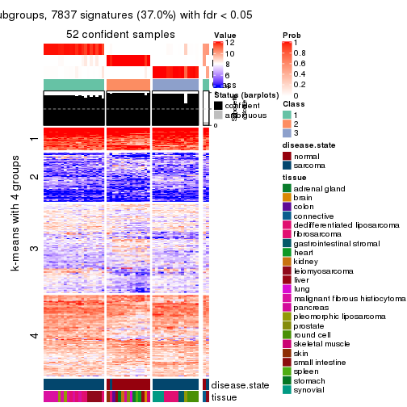
get_signatures(res, k = 4, scale_rows = FALSE)
get_signatures(res, k = 5, scale_rows = FALSE)
get_signatures(res, k = 6, scale_rows = FALSE)
Compare the overlap of signatures from different k:
compare_signatures(res)
get_signature() returns a data frame invisibly. TO get the list of signatures, the function
call should be assigned to a variable explicitly. In following code, if plot argument is set
to FALSE, no heatmap is plotted while only the differential analysis is performed.
# code only for demonstration
tb = get_signature(res, k = ..., plot = FALSE)
An example of the output of tb is:
#> which_row fdr mean_1 mean_2 scaled_mean_1 scaled_mean_2 km
#> 1 38 0.042760348 8.373488 9.131774 -0.5533452 0.5164555 1
#> 2 40 0.018707592 7.106213 8.469186 -0.6173731 0.5762149 1
#> 3 55 0.019134737 10.221463 11.207825 -0.6159697 0.5749050 1
#> 4 59 0.006059896 5.921854 7.869574 -0.6899429 0.6439467 1
#> 5 60 0.018055526 8.928898 10.211722 -0.6204761 0.5791110 1
#> 6 98 0.009384629 15.714769 14.887706 0.6635654 -0.6193277 2
...
The columns in tb are:
which_row: row indices corresponding to the input matrix.fdr: FDR for the differential test. mean_x: The mean value in group x.scaled_mean_x: The mean value in group x after rows are scaled.km: Row groups if k-means clustering is applied to rows.UMAP plot which shows how samples are separated.
dimension_reduction(res, k = 2, method = "UMAP")
dimension_reduction(res, k = 3, method = "UMAP")
dimension_reduction(res, k = 4, method = "UMAP")
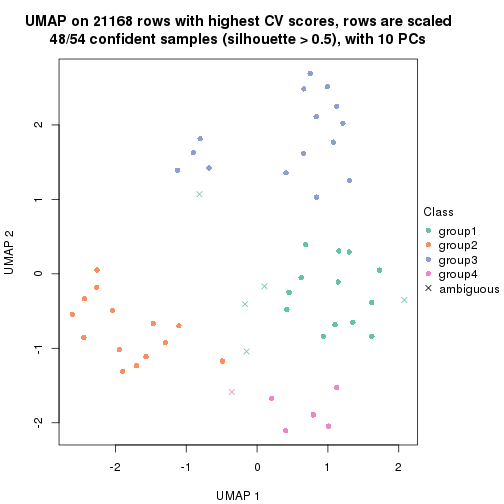
dimension_reduction(res, k = 5, method = "UMAP")
dimension_reduction(res, k = 6, method = "UMAP")
Following heatmap shows how subgroups are split when increasing k:
collect_classes(res)
Test correlation between subgroups and known annotations. If the known annotation is numeric, one-way ANOVA test is applied, and if the known annotation is discrete, chi-squared contingency table test is applied.
test_to_known_factors(res)
#> n disease.state(p) tissue(p) k
#> CV:skmeans 51 5.82e-08 9.41e-03 2
#> CV:skmeans 52 5.48e-11 4.78e-05 3
#> CV:skmeans 48 2.13e-10 1.46e-07 4
#> CV:skmeans 48 9.44e-10 4.99e-08 5
#> CV:skmeans 49 9.69e-09 1.42e-08 6
If matrix rows can be associated to genes, consider to use functional_enrichment(res,
...) to perform function enrichment for the signature genes. See this vignette for more detailed explanations.
The object with results only for a single top-value method and a single partition method can be extracted as:
res = res_list["CV", "pam"]
# you can also extract it by
# res = res_list["CV:pam"]
A summary of res and all the functions that can be applied to it:
res
#> A 'ConsensusPartition' object with k = 2, 3, 4, 5, 6.
#> On a matrix with 21168 rows and 54 columns.
#> Top rows (1000, 2000, 3000, 4000, 5000) are extracted by 'CV' method.
#> Subgroups are detected by 'pam' method.
#> Performed in total 1250 partitions by row resampling.
#> Best k for subgroups seems to be 2.
#>
#> Following methods can be applied to this 'ConsensusPartition' object:
#> [1] "cola_report" "collect_classes" "collect_plots"
#> [4] "collect_stats" "colnames" "compare_signatures"
#> [7] "consensus_heatmap" "dimension_reduction" "functional_enrichment"
#> [10] "get_anno_col" "get_anno" "get_classes"
#> [13] "get_consensus" "get_matrix" "get_membership"
#> [16] "get_param" "get_signatures" "get_stats"
#> [19] "is_best_k" "is_stable_k" "membership_heatmap"
#> [22] "ncol" "nrow" "plot_ecdf"
#> [25] "rownames" "select_partition_number" "show"
#> [28] "suggest_best_k" "test_to_known_factors"
collect_plots() function collects all the plots made from res for all k (number of partitions)
into one single page to provide an easy and fast comparison between different k.
collect_plots(res)
The plots are:
k and the heatmap of
predicted classes for each k.k.k.k.All the plots in panels can be made by individual functions and they are plotted later in this section.
select_partition_number() produces several plots showing different
statistics for choosing “optimized” k. There are following statistics:
k;k, the area increased is defined as \(A_k - A_{k-1}\).The detailed explanations of these statistics can be found in the cola vignette.
Generally speaking, lower PAC score, higher mean silhouette score or higher
concordance corresponds to better partition. Rand index and Jaccard index
measure how similar the current partition is compared to partition with k-1.
If they are too similar, we won't accept k is better than k-1.
select_partition_number(res)
The numeric values for all these statistics can be obtained by get_stats().
get_stats(res)
#> k 1-PAC mean_silhouette concordance area_increased Rand Jaccard
#> 2 2 0.800 0.906 0.944 0.4610 0.535 0.535
#> 3 3 0.814 0.891 0.952 0.3698 0.772 0.596
#> 4 4 0.719 0.847 0.892 0.0759 0.979 0.942
#> 5 5 0.828 0.869 0.914 0.0825 0.936 0.812
#> 6 6 0.758 0.693 0.834 0.0543 0.947 0.809
suggest_best_k() suggests the best \(k\) based on these statistics. The rules are as follows:
suggest_best_k(res)
#> [1] 2
Following shows the table of the partitions (You need to click the show/hide
code output link to see it). The membership matrix (columns with name p*)
is inferred by
clue::cl_consensus()
function with the SE method. Basically the value in the membership matrix
represents the probability to belong to a certain group. The finall class
label for an item is determined with the group with highest probability it
belongs to.
In get_classes() function, the entropy is calculated from the membership
matrix and the silhouette score is calculated from the consensus matrix.
cbind(get_classes(res, k = 2), get_membership(res, k = 2))
#> class entropy silhouette p1 p2
#> GSM52556 2 0.0000 0.910 0.000 1.000
#> GSM52557 1 0.5946 0.858 0.856 0.144
#> GSM52558 1 0.3114 0.932 0.944 0.056
#> GSM52559 2 0.1414 0.912 0.020 0.980
#> GSM52560 2 0.4161 0.891 0.084 0.916
#> GSM52561 2 0.5059 0.878 0.112 0.888
#> GSM52562 1 0.3114 0.932 0.944 0.056
#> GSM52563 2 0.5178 0.865 0.116 0.884
#> GSM52564 1 0.0938 0.953 0.988 0.012
#> GSM52565 1 0.3114 0.932 0.944 0.056
#> GSM52566 2 0.1633 0.912 0.024 0.976
#> GSM52567 1 0.3114 0.932 0.944 0.056
#> GSM52568 1 0.9000 0.576 0.684 0.316
#> GSM52569 1 0.3114 0.932 0.944 0.056
#> GSM52570 1 0.3114 0.932 0.944 0.056
#> GSM52571 1 0.0376 0.954 0.996 0.004
#> GSM52572 1 0.0000 0.956 1.000 0.000
#> GSM52573 2 0.2948 0.932 0.052 0.948
#> GSM52574 2 0.3114 0.932 0.056 0.944
#> GSM52575 2 0.3114 0.932 0.056 0.944
#> GSM52576 2 0.9552 0.489 0.376 0.624
#> GSM52577 2 0.3114 0.932 0.056 0.944
#> GSM52578 2 0.2948 0.932 0.052 0.948
#> GSM52579 2 0.2778 0.932 0.048 0.952
#> GSM52580 1 0.0000 0.956 1.000 0.000
#> GSM52581 1 0.0000 0.956 1.000 0.000
#> GSM52582 2 0.7453 0.798 0.212 0.788
#> GSM52583 1 0.0000 0.956 1.000 0.000
#> GSM52584 1 0.0000 0.956 1.000 0.000
#> GSM52585 1 0.0672 0.954 0.992 0.008
#> GSM52586 1 0.0938 0.953 0.988 0.012
#> GSM52587 2 0.5294 0.878 0.120 0.880
#> GSM52588 1 0.3114 0.913 0.944 0.056
#> GSM52589 1 0.9552 0.303 0.624 0.376
#> GSM52590 1 0.0000 0.956 1.000 0.000
#> GSM52591 1 0.0000 0.956 1.000 0.000
#> GSM52592 1 0.0000 0.956 1.000 0.000
#> GSM52593 1 0.0000 0.956 1.000 0.000
#> GSM52594 1 0.0000 0.956 1.000 0.000
#> GSM52595 1 0.0000 0.956 1.000 0.000
#> GSM52596 1 0.0000 0.956 1.000 0.000
#> GSM52597 1 0.0000 0.956 1.000 0.000
#> GSM52598 1 0.0000 0.956 1.000 0.000
#> GSM52599 1 0.0000 0.956 1.000 0.000
#> GSM52600 1 0.1184 0.948 0.984 0.016
#> GSM52601 1 0.0000 0.956 1.000 0.000
#> GSM52602 1 0.1414 0.943 0.980 0.020
#> GSM52603 1 0.1843 0.947 0.972 0.028
#> GSM52604 1 0.2948 0.939 0.948 0.052
#> GSM52605 1 0.2603 0.939 0.956 0.044
#> GSM52606 2 0.2778 0.932 0.048 0.952
#> GSM52607 2 0.2948 0.932 0.052 0.948
#> GSM52608 2 0.3114 0.932 0.056 0.944
#> GSM52609 2 0.3114 0.932 0.056 0.944
cbind(get_classes(res, k = 3), get_membership(res, k = 3))
#> class entropy silhouette p1 p2 p3
#> GSM52556 2 0.3879 0.782 0.000 0.848 0.152
#> GSM52557 2 0.0000 0.934 0.000 1.000 0.000
#> GSM52558 2 0.5706 0.511 0.320 0.680 0.000
#> GSM52559 2 0.0000 0.934 0.000 1.000 0.000
#> GSM52560 2 0.0000 0.934 0.000 1.000 0.000
#> GSM52561 3 0.7011 0.674 0.092 0.188 0.720
#> GSM52562 2 0.0000 0.934 0.000 1.000 0.000
#> GSM52563 2 0.0000 0.934 0.000 1.000 0.000
#> GSM52564 1 0.0000 0.964 1.000 0.000 0.000
#> GSM52565 2 0.0237 0.932 0.004 0.996 0.000
#> GSM52566 2 0.0000 0.934 0.000 1.000 0.000
#> GSM52567 2 0.0000 0.934 0.000 1.000 0.000
#> GSM52568 2 0.0000 0.934 0.000 1.000 0.000
#> GSM52569 2 0.3619 0.797 0.136 0.864 0.000
#> GSM52570 2 0.0000 0.934 0.000 1.000 0.000
#> GSM52571 1 0.1163 0.946 0.972 0.000 0.028
#> GSM52572 1 0.0000 0.964 1.000 0.000 0.000
#> GSM52573 3 0.0000 0.903 0.000 0.000 1.000
#> GSM52574 3 0.0000 0.903 0.000 0.000 1.000
#> GSM52575 3 0.0000 0.903 0.000 0.000 1.000
#> GSM52576 3 0.5706 0.524 0.320 0.000 0.680
#> GSM52577 3 0.0592 0.898 0.012 0.000 0.988
#> GSM52578 3 0.0237 0.902 0.004 0.000 0.996
#> GSM52579 3 0.0237 0.902 0.004 0.000 0.996
#> GSM52580 1 0.0000 0.964 1.000 0.000 0.000
#> GSM52581 1 0.0000 0.964 1.000 0.000 0.000
#> GSM52582 3 0.4062 0.770 0.164 0.000 0.836
#> GSM52583 1 0.0000 0.964 1.000 0.000 0.000
#> GSM52584 1 0.0237 0.963 0.996 0.000 0.004
#> GSM52585 1 0.0424 0.960 0.992 0.008 0.000
#> GSM52586 1 0.0424 0.960 0.992 0.008 0.000
#> GSM52587 3 0.7880 0.605 0.164 0.168 0.668
#> GSM52588 1 0.1860 0.924 0.948 0.000 0.052
#> GSM52589 1 0.5810 0.443 0.664 0.000 0.336
#> GSM52590 1 0.0000 0.964 1.000 0.000 0.000
#> GSM52591 1 0.0000 0.964 1.000 0.000 0.000
#> GSM52592 1 0.0000 0.964 1.000 0.000 0.000
#> GSM52593 1 0.0000 0.964 1.000 0.000 0.000
#> GSM52594 1 0.0000 0.964 1.000 0.000 0.000
#> GSM52595 1 0.0000 0.964 1.000 0.000 0.000
#> GSM52596 1 0.0000 0.964 1.000 0.000 0.000
#> GSM52597 1 0.0000 0.964 1.000 0.000 0.000
#> GSM52598 1 0.0000 0.964 1.000 0.000 0.000
#> GSM52599 1 0.0000 0.964 1.000 0.000 0.000
#> GSM52600 1 0.0237 0.962 0.996 0.000 0.004
#> GSM52601 1 0.0000 0.964 1.000 0.000 0.000
#> GSM52602 1 0.3551 0.841 0.868 0.000 0.132
#> GSM52603 1 0.2176 0.932 0.948 0.032 0.020
#> GSM52604 1 0.4178 0.790 0.828 0.000 0.172
#> GSM52605 1 0.2229 0.926 0.944 0.044 0.012
#> GSM52606 3 0.0000 0.903 0.000 0.000 1.000
#> GSM52607 3 0.0000 0.903 0.000 0.000 1.000
#> GSM52608 3 0.0000 0.903 0.000 0.000 1.000
#> GSM52609 3 0.0000 0.903 0.000 0.000 1.000
cbind(get_classes(res, k = 4), get_membership(res, k = 4))
#> class entropy silhouette p1 p2 p3 p4
#> GSM52556 2 0.3219 0.673 0.000 0.836 0.164 0.000
#> GSM52557 4 0.4500 1.000 0.000 0.316 0.000 0.684
#> GSM52558 4 0.4500 1.000 0.000 0.316 0.000 0.684
#> GSM52559 2 0.0188 0.929 0.000 0.996 0.000 0.004
#> GSM52560 2 0.0188 0.929 0.000 0.996 0.000 0.004
#> GSM52561 3 0.5535 0.615 0.088 0.192 0.720 0.000
#> GSM52562 4 0.4500 1.000 0.000 0.316 0.000 0.684
#> GSM52563 2 0.0000 0.930 0.000 1.000 0.000 0.000
#> GSM52564 1 0.2999 0.882 0.864 0.004 0.000 0.132
#> GSM52565 2 0.0000 0.930 0.000 1.000 0.000 0.000
#> GSM52566 2 0.0188 0.929 0.000 0.996 0.000 0.004
#> GSM52567 2 0.0000 0.930 0.000 1.000 0.000 0.000
#> GSM52568 2 0.0188 0.929 0.000 0.996 0.000 0.004
#> GSM52569 2 0.3390 0.700 0.016 0.852 0.000 0.132
#> GSM52570 2 0.0000 0.930 0.000 1.000 0.000 0.000
#> GSM52571 1 0.0188 0.891 0.996 0.000 0.000 0.004
#> GSM52572 1 0.2814 0.882 0.868 0.000 0.000 0.132
#> GSM52573 3 0.0000 0.869 0.000 0.000 1.000 0.000
#> GSM52574 3 0.0000 0.869 0.000 0.000 1.000 0.000
#> GSM52575 3 0.0000 0.869 0.000 0.000 1.000 0.000
#> GSM52576 3 0.4522 0.478 0.320 0.000 0.680 0.000
#> GSM52577 3 0.2125 0.830 0.076 0.000 0.920 0.004
#> GSM52578 3 0.2214 0.841 0.044 0.000 0.928 0.028
#> GSM52579 3 0.0188 0.867 0.004 0.000 0.996 0.000
#> GSM52580 1 0.2469 0.885 0.892 0.000 0.000 0.108
#> GSM52581 1 0.3444 0.871 0.816 0.000 0.000 0.184
#> GSM52582 3 0.5404 0.621 0.248 0.000 0.700 0.052
#> GSM52583 1 0.1557 0.883 0.944 0.000 0.000 0.056
#> GSM52584 1 0.3539 0.873 0.820 0.000 0.004 0.176
#> GSM52585 1 0.3444 0.871 0.816 0.000 0.000 0.184
#> GSM52586 1 0.3157 0.880 0.852 0.004 0.000 0.144
#> GSM52587 3 0.7178 0.610 0.088 0.136 0.668 0.108
#> GSM52588 1 0.1398 0.872 0.956 0.000 0.040 0.004
#> GSM52589 1 0.5047 0.423 0.668 0.000 0.316 0.016
#> GSM52590 1 0.3528 0.863 0.808 0.000 0.000 0.192
#> GSM52591 1 0.2814 0.882 0.868 0.000 0.000 0.132
#> GSM52592 1 0.0921 0.894 0.972 0.000 0.000 0.028
#> GSM52593 1 0.0188 0.891 0.996 0.000 0.000 0.004
#> GSM52594 1 0.0188 0.891 0.996 0.000 0.000 0.004
#> GSM52595 1 0.0188 0.891 0.996 0.000 0.000 0.004
#> GSM52596 1 0.0188 0.891 0.996 0.000 0.000 0.004
#> GSM52597 1 0.2814 0.882 0.868 0.000 0.000 0.132
#> GSM52598 1 0.0469 0.893 0.988 0.000 0.000 0.012
#> GSM52599 1 0.0188 0.891 0.996 0.000 0.000 0.004
#> GSM52600 1 0.0376 0.890 0.992 0.000 0.004 0.004
#> GSM52601 1 0.0188 0.891 0.996 0.000 0.000 0.004
#> GSM52602 1 0.4804 0.800 0.780 0.000 0.072 0.148
#> GSM52603 1 0.5160 0.799 0.708 0.016 0.012 0.264
#> GSM52604 1 0.6037 0.733 0.688 0.000 0.156 0.156
#> GSM52605 1 0.5114 0.800 0.712 0.020 0.008 0.260
#> GSM52606 3 0.0000 0.869 0.000 0.000 1.000 0.000
#> GSM52607 3 0.0000 0.869 0.000 0.000 1.000 0.000
#> GSM52608 3 0.0000 0.869 0.000 0.000 1.000 0.000
#> GSM52609 3 0.0000 0.869 0.000 0.000 1.000 0.000
cbind(get_classes(res, k = 5), get_membership(res, k = 5))
#> class entropy silhouette p1 p2 p3 p4 p5
#> GSM52556 2 0.2424 0.772 0.000 0.868 0.132 0.000 0.000
#> GSM52557 4 0.3366 1.000 0.000 0.232 0.000 0.768 0.000
#> GSM52558 4 0.3366 1.000 0.000 0.232 0.000 0.768 0.000
#> GSM52559 2 0.0290 0.953 0.000 0.992 0.000 0.008 0.000
#> GSM52560 2 0.0290 0.953 0.000 0.992 0.000 0.008 0.000
#> GSM52561 3 0.4630 0.638 0.088 0.176 0.736 0.000 0.000
#> GSM52562 4 0.3366 1.000 0.000 0.232 0.000 0.768 0.000
#> GSM52563 2 0.0000 0.953 0.000 1.000 0.000 0.000 0.000
#> GSM52564 1 0.2067 0.901 0.924 0.004 0.000 0.044 0.028
#> GSM52565 2 0.0162 0.953 0.000 0.996 0.000 0.000 0.004
#> GSM52566 2 0.0290 0.953 0.000 0.992 0.000 0.008 0.000
#> GSM52567 2 0.0162 0.953 0.000 0.996 0.000 0.000 0.004
#> GSM52568 2 0.0290 0.953 0.000 0.992 0.000 0.008 0.000
#> GSM52569 2 0.2429 0.849 0.008 0.904 0.000 0.068 0.020
#> GSM52570 2 0.0162 0.953 0.000 0.996 0.000 0.000 0.004
#> GSM52571 1 0.0000 0.910 1.000 0.000 0.000 0.000 0.000
#> GSM52572 1 0.2278 0.899 0.916 0.008 0.000 0.044 0.032
#> GSM52573 3 0.0000 0.866 0.000 0.000 1.000 0.000 0.000
#> GSM52574 3 0.0000 0.866 0.000 0.000 1.000 0.000 0.000
#> GSM52575 3 0.0000 0.866 0.000 0.000 1.000 0.000 0.000
#> GSM52576 3 0.3895 0.495 0.320 0.000 0.680 0.000 0.000
#> GSM52577 3 0.1341 0.839 0.056 0.000 0.944 0.000 0.000
#> GSM52578 3 0.2270 0.825 0.020 0.000 0.904 0.076 0.000
#> GSM52579 3 0.0324 0.865 0.004 0.000 0.992 0.004 0.000
#> GSM52580 1 0.3333 0.822 0.788 0.000 0.000 0.208 0.004
#> GSM52581 1 0.3750 0.814 0.756 0.000 0.000 0.232 0.012
#> GSM52582 3 0.5733 0.555 0.188 0.000 0.624 0.188 0.000
#> GSM52583 1 0.3003 0.825 0.812 0.000 0.000 0.188 0.000
#> GSM52584 1 0.3628 0.818 0.772 0.000 0.000 0.216 0.012
#> GSM52585 1 0.3750 0.814 0.756 0.000 0.000 0.232 0.012
#> GSM52586 1 0.3213 0.881 0.872 0.040 0.000 0.060 0.028
#> GSM52587 3 0.6041 0.589 0.032 0.120 0.644 0.204 0.000
#> GSM52588 1 0.0703 0.899 0.976 0.000 0.024 0.000 0.000
#> GSM52589 1 0.4425 0.487 0.680 0.000 0.296 0.024 0.000
#> GSM52590 1 0.3326 0.833 0.824 0.000 0.000 0.024 0.152
#> GSM52591 1 0.1907 0.901 0.928 0.000 0.000 0.044 0.028
#> GSM52592 1 0.0807 0.910 0.976 0.000 0.000 0.012 0.012
#> GSM52593 1 0.0000 0.910 1.000 0.000 0.000 0.000 0.000
#> GSM52594 1 0.0000 0.910 1.000 0.000 0.000 0.000 0.000
#> GSM52595 1 0.0000 0.910 1.000 0.000 0.000 0.000 0.000
#> GSM52596 1 0.0000 0.910 1.000 0.000 0.000 0.000 0.000
#> GSM52597 1 0.1907 0.901 0.928 0.000 0.000 0.044 0.028
#> GSM52598 1 0.0807 0.910 0.976 0.000 0.000 0.012 0.012
#> GSM52599 1 0.0000 0.910 1.000 0.000 0.000 0.000 0.000
#> GSM52600 1 0.0609 0.909 0.980 0.000 0.000 0.020 0.000
#> GSM52601 1 0.0000 0.910 1.000 0.000 0.000 0.000 0.000
#> GSM52602 5 0.0912 0.970 0.016 0.000 0.012 0.000 0.972
#> GSM52603 5 0.0162 0.980 0.004 0.000 0.000 0.000 0.996
#> GSM52604 5 0.0671 0.976 0.004 0.000 0.016 0.000 0.980
#> GSM52605 5 0.0162 0.980 0.004 0.000 0.000 0.000 0.996
#> GSM52606 3 0.0000 0.866 0.000 0.000 1.000 0.000 0.000
#> GSM52607 3 0.0000 0.866 0.000 0.000 1.000 0.000 0.000
#> GSM52608 3 0.0000 0.866 0.000 0.000 1.000 0.000 0.000
#> GSM52609 3 0.0000 0.866 0.000 0.000 1.000 0.000 0.000
cbind(get_classes(res, k = 6), get_membership(res, k = 6))
#> class entropy silhouette p1 p2 p3 p4 p5 p6
#> GSM52556 2 0.5361 0.6529 0.000 0.452 0.108 0.440 0.000 0.000
#> GSM52557 6 0.2135 0.9965 0.000 0.128 0.000 0.000 0.000 0.872
#> GSM52558 6 0.2092 0.9931 0.000 0.124 0.000 0.000 0.000 0.876
#> GSM52559 2 0.4152 0.7399 0.000 0.548 0.000 0.440 0.000 0.012
#> GSM52560 2 0.4152 0.7399 0.000 0.548 0.000 0.440 0.000 0.012
#> GSM52561 3 0.4505 0.6159 0.096 0.160 0.732 0.008 0.000 0.004
#> GSM52562 6 0.2135 0.9965 0.000 0.128 0.000 0.000 0.000 0.872
#> GSM52563 2 0.3833 0.7415 0.000 0.556 0.000 0.444 0.000 0.000
#> GSM52564 1 0.4632 0.5285 0.712 0.008 0.000 0.152 0.000 0.128
#> GSM52565 2 0.0000 0.6089 0.000 1.000 0.000 0.000 0.000 0.000
#> GSM52566 2 0.4062 0.7411 0.000 0.552 0.000 0.440 0.000 0.008
#> GSM52567 2 0.0000 0.6089 0.000 1.000 0.000 0.000 0.000 0.000
#> GSM52568 2 0.4067 0.7400 0.000 0.548 0.000 0.444 0.000 0.008
#> GSM52569 2 0.1983 0.5412 0.000 0.908 0.000 0.020 0.000 0.072
#> GSM52570 2 0.0000 0.6089 0.000 1.000 0.000 0.000 0.000 0.000
#> GSM52571 1 0.0260 0.7078 0.992 0.000 0.000 0.008 0.000 0.000
#> GSM52572 1 0.4316 0.5473 0.728 0.000 0.000 0.144 0.000 0.128
#> GSM52573 3 0.0000 0.8324 0.000 0.000 1.000 0.000 0.000 0.000
#> GSM52574 3 0.0000 0.8324 0.000 0.000 1.000 0.000 0.000 0.000
#> GSM52575 3 0.0000 0.8324 0.000 0.000 1.000 0.000 0.000 0.000
#> GSM52576 3 0.3619 0.3665 0.316 0.000 0.680 0.004 0.000 0.000
#> GSM52577 3 0.1556 0.7895 0.080 0.000 0.920 0.000 0.000 0.000
#> GSM52578 3 0.2412 0.7788 0.028 0.000 0.880 0.092 0.000 0.000
#> GSM52579 3 0.0291 0.8306 0.004 0.000 0.992 0.004 0.000 0.000
#> GSM52580 4 0.3864 0.9195 0.480 0.000 0.000 0.520 0.000 0.000
#> GSM52581 4 0.3828 0.9468 0.440 0.000 0.000 0.560 0.000 0.000
#> GSM52582 3 0.5744 0.0634 0.168 0.000 0.424 0.408 0.000 0.000
#> GSM52583 1 0.3789 -0.6904 0.584 0.000 0.000 0.416 0.000 0.000
#> GSM52584 4 0.3851 0.9547 0.460 0.000 0.000 0.540 0.000 0.000
#> GSM52585 4 0.3838 0.9542 0.448 0.000 0.000 0.552 0.000 0.000
#> GSM52586 1 0.4459 0.5197 0.712 0.000 0.000 0.156 0.000 0.132
#> GSM52587 3 0.4896 0.3891 0.012 0.036 0.508 0.444 0.000 0.000
#> GSM52588 1 0.0000 0.7074 1.000 0.000 0.000 0.000 0.000 0.000
#> GSM52589 1 0.3555 0.3156 0.776 0.000 0.184 0.040 0.000 0.000
#> GSM52590 1 0.4705 0.3689 0.712 0.000 0.000 0.104 0.168 0.016
#> GSM52591 1 0.4387 0.5395 0.720 0.000 0.000 0.152 0.000 0.128
#> GSM52592 1 0.2218 0.6517 0.884 0.000 0.000 0.104 0.000 0.012
#> GSM52593 1 0.0146 0.7082 0.996 0.000 0.000 0.004 0.000 0.000
#> GSM52594 1 0.0146 0.7082 0.996 0.000 0.000 0.004 0.000 0.000
#> GSM52595 1 0.0146 0.7082 0.996 0.000 0.000 0.004 0.000 0.000
#> GSM52596 1 0.0000 0.7074 1.000 0.000 0.000 0.000 0.000 0.000
#> GSM52597 1 0.4387 0.5395 0.720 0.000 0.000 0.152 0.000 0.128
#> GSM52598 1 0.2748 0.6404 0.848 0.000 0.000 0.128 0.000 0.024
#> GSM52599 1 0.0000 0.7074 1.000 0.000 0.000 0.000 0.000 0.000
#> GSM52600 1 0.2775 0.6383 0.856 0.000 0.000 0.040 0.000 0.104
#> GSM52601 1 0.0000 0.7074 1.000 0.000 0.000 0.000 0.000 0.000
#> GSM52602 5 0.0000 1.0000 0.000 0.000 0.000 0.000 1.000 0.000
#> GSM52603 5 0.0000 1.0000 0.000 0.000 0.000 0.000 1.000 0.000
#> GSM52604 5 0.0000 1.0000 0.000 0.000 0.000 0.000 1.000 0.000
#> GSM52605 5 0.0000 1.0000 0.000 0.000 0.000 0.000 1.000 0.000
#> GSM52606 3 0.0000 0.8324 0.000 0.000 1.000 0.000 0.000 0.000
#> GSM52607 3 0.0000 0.8324 0.000 0.000 1.000 0.000 0.000 0.000
#> GSM52608 3 0.0000 0.8324 0.000 0.000 1.000 0.000 0.000 0.000
#> GSM52609 3 0.0000 0.8324 0.000 0.000 1.000 0.000 0.000 0.000
Heatmaps for the consensus matrix. It visualizes the probability of two samples to be in a same group.
consensus_heatmap(res, k = 2)
consensus_heatmap(res, k = 3)
consensus_heatmap(res, k = 4)
consensus_heatmap(res, k = 5)
consensus_heatmap(res, k = 6)

Heatmaps for the membership of samples in all partitions to see how consistent they are:
membership_heatmap(res, k = 2)
membership_heatmap(res, k = 3)
membership_heatmap(res, k = 4)

membership_heatmap(res, k = 5)
membership_heatmap(res, k = 6)
As soon as we have had the classes for columns, we can look for signatures which are significantly different between classes which can be candidate marks for certain classes. Following are the heatmaps for signatures.
Signature heatmaps where rows are scaled:
get_signatures(res, k = 2)
get_signatures(res, k = 3)
get_signatures(res, k = 4)
get_signatures(res, k = 5)
get_signatures(res, k = 6)
Signature heatmaps where rows are not scaled:
get_signatures(res, k = 2, scale_rows = FALSE)
get_signatures(res, k = 3, scale_rows = FALSE)
get_signatures(res, k = 4, scale_rows = FALSE)
get_signatures(res, k = 5, scale_rows = FALSE)

get_signatures(res, k = 6, scale_rows = FALSE)
Compare the overlap of signatures from different k:
compare_signatures(res)
get_signature() returns a data frame invisibly. TO get the list of signatures, the function
call should be assigned to a variable explicitly. In following code, if plot argument is set
to FALSE, no heatmap is plotted while only the differential analysis is performed.
# code only for demonstration
tb = get_signature(res, k = ..., plot = FALSE)
An example of the output of tb is:
#> which_row fdr mean_1 mean_2 scaled_mean_1 scaled_mean_2 km
#> 1 38 0.042760348 8.373488 9.131774 -0.5533452 0.5164555 1
#> 2 40 0.018707592 7.106213 8.469186 -0.6173731 0.5762149 1
#> 3 55 0.019134737 10.221463 11.207825 -0.6159697 0.5749050 1
#> 4 59 0.006059896 5.921854 7.869574 -0.6899429 0.6439467 1
#> 5 60 0.018055526 8.928898 10.211722 -0.6204761 0.5791110 1
#> 6 98 0.009384629 15.714769 14.887706 0.6635654 -0.6193277 2
...
The columns in tb are:
which_row: row indices corresponding to the input matrix.fdr: FDR for the differential test. mean_x: The mean value in group x.scaled_mean_x: The mean value in group x after rows are scaled.km: Row groups if k-means clustering is applied to rows.UMAP plot which shows how samples are separated.
dimension_reduction(res, k = 2, method = "UMAP")
dimension_reduction(res, k = 3, method = "UMAP")
dimension_reduction(res, k = 4, method = "UMAP")
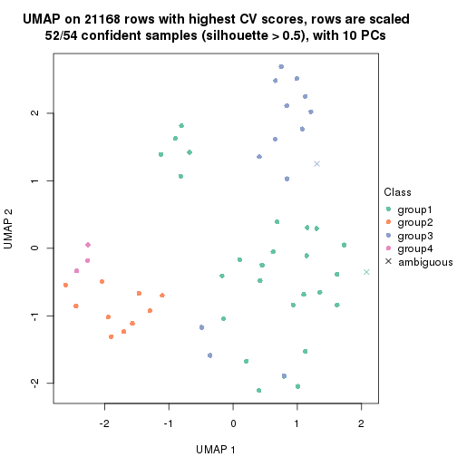
dimension_reduction(res, k = 5, method = "UMAP")
dimension_reduction(res, k = 6, method = "UMAP")

Following heatmap shows how subgroups are split when increasing k:
collect_classes(res)
Test correlation between subgroups and known annotations. If the known annotation is numeric, one-way ANOVA test is applied, and if the known annotation is discrete, chi-squared contingency table test is applied.
test_to_known_factors(res)
#> n disease.state(p) tissue(p) k
#> CV:pam 52 8.43e-01 1.24e-02 2
#> CV:pam 53 3.26e-10 7.09e-05 3
#> CV:pam 52 2.69e-09 3.97e-07 4
#> CV:pam 52 1.11e-08 1.83e-09 5
#> CV:pam 48 1.97e-07 1.65e-10 6
If matrix rows can be associated to genes, consider to use functional_enrichment(res,
...) to perform function enrichment for the signature genes. See this vignette for more detailed explanations.
The object with results only for a single top-value method and a single partition method can be extracted as:
res = res_list["CV", "mclust"]
# you can also extract it by
# res = res_list["CV:mclust"]
A summary of res and all the functions that can be applied to it:
res
#> A 'ConsensusPartition' object with k = 2, 3, 4, 5, 6.
#> On a matrix with 21168 rows and 54 columns.
#> Top rows (1000, 2000, 3000, 4000, 5000) are extracted by 'CV' method.
#> Subgroups are detected by 'mclust' method.
#> Performed in total 1250 partitions by row resampling.
#> Best k for subgroups seems to be 5.
#>
#> Following methods can be applied to this 'ConsensusPartition' object:
#> [1] "cola_report" "collect_classes" "collect_plots"
#> [4] "collect_stats" "colnames" "compare_signatures"
#> [7] "consensus_heatmap" "dimension_reduction" "functional_enrichment"
#> [10] "get_anno_col" "get_anno" "get_classes"
#> [13] "get_consensus" "get_matrix" "get_membership"
#> [16] "get_param" "get_signatures" "get_stats"
#> [19] "is_best_k" "is_stable_k" "membership_heatmap"
#> [22] "ncol" "nrow" "plot_ecdf"
#> [25] "rownames" "select_partition_number" "show"
#> [28] "suggest_best_k" "test_to_known_factors"
collect_plots() function collects all the plots made from res for all k (number of partitions)
into one single page to provide an easy and fast comparison between different k.
collect_plots(res)
The plots are:
k and the heatmap of
predicted classes for each k.k.k.k.All the plots in panels can be made by individual functions and they are plotted later in this section.
select_partition_number() produces several plots showing different
statistics for choosing “optimized” k. There are following statistics:
k;k, the area increased is defined as \(A_k - A_{k-1}\).The detailed explanations of these statistics can be found in the cola vignette.
Generally speaking, lower PAC score, higher mean silhouette score or higher
concordance corresponds to better partition. Rand index and Jaccard index
measure how similar the current partition is compared to partition with k-1.
If they are too similar, we won't accept k is better than k-1.
select_partition_number(res)
The numeric values for all these statistics can be obtained by get_stats().
get_stats(res)
#> k 1-PAC mean_silhouette concordance area_increased Rand Jaccard
#> 2 2 0.447 0.872 0.804 0.3726 0.628 0.628
#> 3 3 0.347 0.450 0.639 0.6434 0.768 0.636
#> 4 4 0.653 0.720 0.848 0.1187 0.860 0.687
#> 5 5 0.709 0.765 0.859 0.1347 0.824 0.511
#> 6 6 0.785 0.725 0.846 0.0439 0.927 0.683
suggest_best_k() suggests the best \(k\) based on these statistics. The rules are as follows:
suggest_best_k(res)
#> [1] 5
Following shows the table of the partitions (You need to click the show/hide
code output link to see it). The membership matrix (columns with name p*)
is inferred by
clue::cl_consensus()
function with the SE method. Basically the value in the membership matrix
represents the probability to belong to a certain group. The finall class
label for an item is determined with the group with highest probability it
belongs to.
In get_classes() function, the entropy is calculated from the membership
matrix and the silhouette score is calculated from the consensus matrix.
cbind(get_classes(res, k = 2), get_membership(res, k = 2))
#> class entropy silhouette p1 p2
#> GSM52556 2 0.8386 1.000 0.268 0.732
#> GSM52557 2 0.8386 1.000 0.268 0.732
#> GSM52558 2 0.8386 1.000 0.268 0.732
#> GSM52559 2 0.8386 1.000 0.268 0.732
#> GSM52560 2 0.8386 1.000 0.268 0.732
#> GSM52561 1 0.5946 0.723 0.856 0.144
#> GSM52562 2 0.8386 1.000 0.268 0.732
#> GSM52563 2 0.8386 1.000 0.268 0.732
#> GSM52564 1 0.1843 0.866 0.972 0.028
#> GSM52565 2 0.8386 1.000 0.268 0.732
#> GSM52566 2 0.8386 1.000 0.268 0.732
#> GSM52567 2 0.8386 1.000 0.268 0.732
#> GSM52568 2 0.8386 1.000 0.268 0.732
#> GSM52569 2 0.8386 1.000 0.268 0.732
#> GSM52570 2 0.8386 1.000 0.268 0.732
#> GSM52571 1 0.8386 0.738 0.732 0.268
#> GSM52572 1 0.0672 0.878 0.992 0.008
#> GSM52573 1 0.0672 0.877 0.992 0.008
#> GSM52574 1 0.0672 0.877 0.992 0.008
#> GSM52575 1 0.0672 0.877 0.992 0.008
#> GSM52576 1 0.0938 0.877 0.988 0.012
#> GSM52577 1 0.3733 0.858 0.928 0.072
#> GSM52578 1 0.0672 0.877 0.992 0.008
#> GSM52579 1 0.0672 0.877 0.992 0.008
#> GSM52580 1 0.1633 0.875 0.976 0.024
#> GSM52581 1 0.1184 0.873 0.984 0.016
#> GSM52582 1 0.1843 0.876 0.972 0.028
#> GSM52583 1 0.4022 0.860 0.920 0.080
#> GSM52584 1 0.2603 0.871 0.956 0.044
#> GSM52585 1 0.1633 0.870 0.976 0.024
#> GSM52586 1 0.0376 0.877 0.996 0.004
#> GSM52587 1 0.2778 0.852 0.952 0.048
#> GSM52588 1 0.6148 0.816 0.848 0.152
#> GSM52589 1 0.5294 0.834 0.880 0.120
#> GSM52590 1 0.3733 0.845 0.928 0.072
#> GSM52591 1 0.0376 0.877 0.996 0.004
#> GSM52592 1 0.8267 0.744 0.740 0.260
#> GSM52593 1 0.8327 0.741 0.736 0.264
#> GSM52594 1 0.8386 0.738 0.732 0.268
#> GSM52595 1 0.8386 0.738 0.732 0.268
#> GSM52596 1 0.8386 0.738 0.732 0.268
#> GSM52597 1 0.0376 0.877 0.996 0.004
#> GSM52598 1 0.7376 0.781 0.792 0.208
#> GSM52599 1 0.8386 0.738 0.732 0.268
#> GSM52600 1 0.8386 0.738 0.732 0.268
#> GSM52601 1 0.7219 0.785 0.800 0.200
#> GSM52602 1 0.3431 0.835 0.936 0.064
#> GSM52603 1 0.3431 0.835 0.936 0.064
#> GSM52604 1 0.3431 0.835 0.936 0.064
#> GSM52605 1 0.3431 0.835 0.936 0.064
#> GSM52606 1 0.0672 0.877 0.992 0.008
#> GSM52607 1 0.0672 0.877 0.992 0.008
#> GSM52608 1 0.0672 0.877 0.992 0.008
#> GSM52609 1 0.0672 0.877 0.992 0.008
cbind(get_classes(res, k = 3), get_membership(res, k = 3))
#> class entropy silhouette p1 p2 p3
#> GSM52556 2 0.2096 0.8966 0.004 0.944 0.052
#> GSM52557 2 0.0237 0.9037 0.000 0.996 0.004
#> GSM52558 2 0.0237 0.9037 0.000 0.996 0.004
#> GSM52559 2 0.1860 0.8992 0.000 0.948 0.052
#> GSM52560 2 0.1860 0.8992 0.000 0.948 0.052
#> GSM52561 2 0.7223 0.0025 0.424 0.548 0.028
#> GSM52562 2 0.0237 0.9037 0.000 0.996 0.004
#> GSM52563 2 0.1860 0.8992 0.000 0.948 0.052
#> GSM52564 1 0.8976 0.3941 0.532 0.152 0.316
#> GSM52565 2 0.0892 0.9019 0.000 0.980 0.020
#> GSM52566 2 0.1860 0.8992 0.000 0.948 0.052
#> GSM52567 2 0.0892 0.9019 0.000 0.980 0.020
#> GSM52568 2 0.0000 0.9026 0.000 1.000 0.000
#> GSM52569 2 0.3826 0.8136 0.008 0.868 0.124
#> GSM52570 2 0.0892 0.9019 0.000 0.980 0.020
#> GSM52571 1 0.6154 0.4204 0.592 0.000 0.408
#> GSM52572 1 0.6208 0.4640 0.772 0.152 0.076
#> GSM52573 3 0.6307 0.1426 0.488 0.000 0.512
#> GSM52574 3 0.6308 0.1358 0.492 0.000 0.508
#> GSM52575 1 0.8000 -0.1076 0.528 0.064 0.408
#> GSM52576 1 0.5263 0.4331 0.828 0.084 0.088
#> GSM52577 1 0.3155 0.4602 0.916 0.040 0.044
#> GSM52578 1 0.6714 0.3587 0.748 0.112 0.140
#> GSM52579 1 0.8936 -0.0860 0.500 0.368 0.132
#> GSM52580 1 0.3752 0.4761 0.856 0.144 0.000
#> GSM52581 1 0.4802 0.4717 0.824 0.156 0.020
#> GSM52582 1 0.5276 0.4451 0.820 0.128 0.052
#> GSM52583 1 0.3896 0.4843 0.864 0.128 0.008
#> GSM52584 1 0.3500 0.4851 0.880 0.116 0.004
#> GSM52585 1 0.5486 0.4337 0.780 0.196 0.024
#> GSM52586 1 0.5875 0.4509 0.784 0.160 0.056
#> GSM52587 1 0.6737 0.0842 0.600 0.384 0.016
#> GSM52588 1 0.6836 0.4124 0.572 0.016 0.412
#> GSM52589 1 0.7085 0.4330 0.612 0.032 0.356
#> GSM52590 3 0.8085 0.2381 0.068 0.412 0.520
#> GSM52591 1 0.8666 0.4206 0.584 0.152 0.264
#> GSM52592 1 0.6168 0.4176 0.588 0.000 0.412
#> GSM52593 1 0.6079 0.4262 0.612 0.000 0.388
#> GSM52594 1 0.6154 0.4134 0.592 0.000 0.408
#> GSM52595 1 0.6126 0.4199 0.600 0.000 0.400
#> GSM52596 1 0.6140 0.4170 0.596 0.000 0.404
#> GSM52597 1 0.4453 0.4713 0.836 0.152 0.012
#> GSM52598 1 0.6527 0.4226 0.588 0.008 0.404
#> GSM52599 1 0.6154 0.4134 0.592 0.000 0.408
#> GSM52600 1 0.1860 0.4629 0.948 0.000 0.052
#> GSM52601 1 0.6824 0.4159 0.576 0.016 0.408
#> GSM52602 3 0.7080 0.2416 0.024 0.412 0.564
#> GSM52603 3 0.7145 0.2010 0.024 0.440 0.536
#> GSM52604 3 0.7091 0.2386 0.024 0.416 0.560
#> GSM52605 3 0.8046 0.2556 0.068 0.396 0.536
#> GSM52606 1 0.8489 -0.1255 0.496 0.092 0.412
#> GSM52607 1 0.8376 -0.1340 0.496 0.084 0.420
#> GSM52608 3 0.6307 0.1426 0.488 0.000 0.512
#> GSM52609 3 0.6307 0.1426 0.488 0.000 0.512
cbind(get_classes(res, k = 4), get_membership(res, k = 4))
#> class entropy silhouette p1 p2 p3 p4
#> GSM52556 2 0.0376 0.825 0.000 0.992 0.004 0.004
#> GSM52557 2 0.0921 0.824 0.000 0.972 0.000 0.028
#> GSM52558 2 0.0921 0.824 0.000 0.972 0.000 0.028
#> GSM52559 2 0.0188 0.827 0.000 0.996 0.000 0.004
#> GSM52560 2 0.0188 0.827 0.000 0.996 0.000 0.004
#> GSM52561 2 0.8246 -0.140 0.404 0.420 0.124 0.052
#> GSM52562 2 0.0921 0.824 0.000 0.972 0.000 0.028
#> GSM52563 2 0.0188 0.827 0.000 0.996 0.000 0.004
#> GSM52564 1 0.4056 0.790 0.840 0.060 0.004 0.096
#> GSM52565 2 0.4250 0.620 0.000 0.724 0.000 0.276
#> GSM52566 2 0.0188 0.827 0.000 0.996 0.000 0.004
#> GSM52567 2 0.4406 0.575 0.000 0.700 0.000 0.300
#> GSM52568 2 0.0817 0.825 0.000 0.976 0.000 0.024
#> GSM52569 2 0.5204 0.419 0.012 0.612 0.000 0.376
#> GSM52570 2 0.3688 0.713 0.000 0.792 0.000 0.208
#> GSM52571 1 0.1209 0.817 0.964 0.000 0.032 0.004
#> GSM52572 1 0.4372 0.789 0.828 0.056 0.012 0.104
#> GSM52573 3 0.0188 0.847 0.004 0.000 0.996 0.000
#> GSM52574 3 0.0188 0.847 0.004 0.000 0.996 0.000
#> GSM52575 3 0.1302 0.822 0.044 0.000 0.956 0.000
#> GSM52576 1 0.5060 0.406 0.584 0.004 0.412 0.000
#> GSM52577 1 0.4925 0.293 0.572 0.000 0.428 0.000
#> GSM52578 3 0.5420 0.285 0.352 0.024 0.624 0.000
#> GSM52579 3 0.5337 0.512 0.260 0.044 0.696 0.000
#> GSM52580 1 0.6192 0.732 0.728 0.040 0.128 0.104
#> GSM52581 1 0.6762 0.712 0.692 0.056 0.136 0.116
#> GSM52582 1 0.7041 0.183 0.476 0.028 0.440 0.056
#> GSM52583 1 0.5052 0.774 0.796 0.028 0.116 0.060
#> GSM52584 1 0.5944 0.709 0.716 0.024 0.196 0.064
#> GSM52585 1 0.7006 0.703 0.672 0.056 0.136 0.136
#> GSM52586 1 0.4601 0.787 0.820 0.056 0.020 0.104
#> GSM52587 1 0.6926 0.691 0.684 0.120 0.128 0.068
#> GSM52588 1 0.0336 0.818 0.992 0.000 0.008 0.000
#> GSM52589 1 0.1174 0.822 0.968 0.012 0.020 0.000
#> GSM52590 4 0.5521 0.856 0.084 0.080 0.056 0.780
#> GSM52591 1 0.3009 0.804 0.892 0.056 0.000 0.052
#> GSM52592 1 0.0712 0.819 0.984 0.004 0.008 0.004
#> GSM52593 1 0.0779 0.818 0.980 0.000 0.016 0.004
#> GSM52594 1 0.1305 0.815 0.960 0.000 0.036 0.004
#> GSM52595 1 0.0895 0.818 0.976 0.000 0.020 0.004
#> GSM52596 1 0.1305 0.815 0.960 0.000 0.036 0.004
#> GSM52597 1 0.3796 0.792 0.848 0.056 0.000 0.096
#> GSM52598 1 0.0657 0.819 0.984 0.000 0.012 0.004
#> GSM52599 1 0.1004 0.817 0.972 0.000 0.024 0.004
#> GSM52600 1 0.1661 0.812 0.944 0.000 0.052 0.004
#> GSM52601 1 0.1545 0.815 0.952 0.000 0.040 0.008
#> GSM52602 4 0.4220 0.949 0.004 0.056 0.112 0.828
#> GSM52603 4 0.4245 0.947 0.008 0.056 0.104 0.832
#> GSM52604 4 0.4220 0.949 0.004 0.056 0.112 0.828
#> GSM52605 1 0.8157 -0.086 0.428 0.056 0.108 0.408
#> GSM52606 3 0.0188 0.845 0.004 0.000 0.996 0.000
#> GSM52607 3 0.0376 0.845 0.004 0.004 0.992 0.000
#> GSM52608 3 0.0188 0.847 0.004 0.000 0.996 0.000
#> GSM52609 3 0.0188 0.847 0.004 0.000 0.996 0.000
cbind(get_classes(res, k = 5), get_membership(res, k = 5))
#> class entropy silhouette p1 p2 p3 p4 p5
#> GSM52556 2 0.0324 0.863 0.000 0.992 0.004 0.000 0.004
#> GSM52557 2 0.1701 0.856 0.000 0.936 0.000 0.016 0.048
#> GSM52558 2 0.2228 0.852 0.000 0.912 0.000 0.040 0.048
#> GSM52559 2 0.0162 0.864 0.000 0.996 0.000 0.000 0.004
#> GSM52560 2 0.0162 0.864 0.000 0.996 0.000 0.000 0.004
#> GSM52561 2 0.5880 0.231 0.076 0.548 0.012 0.364 0.000
#> GSM52562 2 0.1701 0.856 0.000 0.936 0.000 0.016 0.048
#> GSM52563 2 0.0162 0.864 0.000 0.996 0.000 0.000 0.004
#> GSM52564 4 0.3196 0.817 0.192 0.000 0.004 0.804 0.000
#> GSM52565 2 0.4905 0.729 0.000 0.696 0.000 0.080 0.224
#> GSM52566 2 0.0162 0.864 0.000 0.996 0.000 0.000 0.004
#> GSM52567 2 0.4660 0.733 0.000 0.728 0.000 0.080 0.192
#> GSM52568 2 0.1357 0.858 0.000 0.948 0.000 0.004 0.048
#> GSM52569 2 0.4681 0.731 0.000 0.728 0.000 0.084 0.188
#> GSM52570 2 0.4486 0.778 0.000 0.748 0.000 0.080 0.172
#> GSM52571 1 0.0510 0.860 0.984 0.000 0.000 0.016 0.000
#> GSM52572 4 0.4166 0.817 0.160 0.000 0.004 0.780 0.056
#> GSM52573 3 0.0162 0.839 0.000 0.000 0.996 0.000 0.004
#> GSM52574 3 0.0162 0.839 0.000 0.000 0.996 0.000 0.004
#> GSM52575 3 0.1300 0.835 0.028 0.000 0.956 0.016 0.000
#> GSM52576 3 0.4867 0.207 0.432 0.000 0.544 0.024 0.000
#> GSM52577 3 0.4602 0.519 0.316 0.000 0.656 0.028 0.000
#> GSM52578 3 0.1800 0.821 0.048 0.000 0.932 0.020 0.000
#> GSM52579 3 0.1560 0.835 0.020 0.004 0.948 0.028 0.000
#> GSM52580 4 0.3639 0.793 0.184 0.000 0.024 0.792 0.000
#> GSM52581 4 0.2470 0.824 0.104 0.000 0.012 0.884 0.000
#> GSM52582 3 0.5299 0.595 0.212 0.000 0.668 0.120 0.000
#> GSM52583 1 0.4679 0.660 0.716 0.000 0.068 0.216 0.000
#> GSM52584 1 0.5688 0.357 0.572 0.000 0.100 0.328 0.000
#> GSM52585 4 0.2416 0.823 0.100 0.000 0.012 0.888 0.000
#> GSM52586 4 0.4002 0.820 0.144 0.000 0.004 0.796 0.056
#> GSM52587 4 0.5388 0.695 0.148 0.144 0.012 0.696 0.000
#> GSM52588 1 0.2871 0.817 0.872 0.000 0.040 0.088 0.000
#> GSM52589 1 0.3362 0.799 0.844 0.000 0.080 0.076 0.000
#> GSM52590 5 0.3368 0.795 0.120 0.000 0.020 0.016 0.844
#> GSM52591 4 0.5047 0.232 0.468 0.000 0.004 0.504 0.024
#> GSM52592 1 0.0703 0.859 0.976 0.000 0.000 0.024 0.000
#> GSM52593 1 0.0324 0.858 0.992 0.000 0.000 0.004 0.004
#> GSM52594 1 0.0451 0.856 0.988 0.000 0.000 0.008 0.004
#> GSM52595 1 0.0324 0.858 0.992 0.000 0.000 0.004 0.004
#> GSM52596 1 0.0451 0.856 0.988 0.000 0.000 0.008 0.004
#> GSM52597 4 0.4230 0.805 0.196 0.000 0.016 0.764 0.024
#> GSM52598 1 0.4464 0.502 0.684 0.000 0.028 0.288 0.000
#> GSM52599 1 0.0162 0.856 0.996 0.000 0.000 0.000 0.004
#> GSM52600 1 0.2228 0.844 0.912 0.000 0.040 0.048 0.000
#> GSM52601 1 0.2393 0.837 0.900 0.000 0.016 0.080 0.004
#> GSM52602 5 0.2300 0.874 0.024 0.000 0.072 0.000 0.904
#> GSM52603 5 0.1831 0.861 0.004 0.000 0.076 0.000 0.920
#> GSM52604 5 0.2300 0.874 0.024 0.000 0.072 0.000 0.904
#> GSM52605 5 0.5187 0.662 0.252 0.000 0.076 0.004 0.668
#> GSM52606 3 0.1041 0.836 0.004 0.000 0.964 0.032 0.000
#> GSM52607 3 0.0000 0.839 0.000 0.000 1.000 0.000 0.000
#> GSM52608 3 0.0162 0.839 0.000 0.000 0.996 0.000 0.004
#> GSM52609 3 0.0162 0.839 0.000 0.000 0.996 0.000 0.004
cbind(get_classes(res, k = 6), get_membership(res, k = 6))
#> class entropy silhouette p1 p2 p3 p4 p5 p6
#> GSM52556 2 0.4024 0.403 0.000 0.592 0.004 0.004 0.000 0.400
#> GSM52557 6 0.2473 0.780 0.000 0.136 0.000 0.008 0.000 0.856
#> GSM52558 6 0.2473 0.780 0.000 0.136 0.000 0.008 0.000 0.856
#> GSM52559 2 0.3756 0.414 0.000 0.600 0.000 0.000 0.000 0.400
#> GSM52560 2 0.3756 0.414 0.000 0.600 0.000 0.000 0.000 0.400
#> GSM52561 4 0.3951 0.735 0.000 0.112 0.000 0.796 0.036 0.056
#> GSM52562 6 0.2473 0.780 0.000 0.136 0.000 0.008 0.000 0.856
#> GSM52563 2 0.3756 0.414 0.000 0.600 0.000 0.000 0.000 0.400
#> GSM52564 4 0.2195 0.869 0.024 0.000 0.000 0.912 0.036 0.028
#> GSM52565 2 0.1531 0.491 0.000 0.928 0.000 0.000 0.004 0.068
#> GSM52566 2 0.3756 0.414 0.000 0.600 0.000 0.000 0.000 0.400
#> GSM52567 2 0.0291 0.514 0.000 0.992 0.000 0.000 0.004 0.004
#> GSM52568 6 0.3986 -0.223 0.000 0.464 0.000 0.004 0.000 0.532
#> GSM52569 2 0.1138 0.503 0.000 0.960 0.000 0.012 0.024 0.004
#> GSM52570 2 0.1556 0.483 0.000 0.920 0.000 0.000 0.000 0.080
#> GSM52571 1 0.0146 0.850 0.996 0.000 0.000 0.004 0.000 0.000
#> GSM52572 4 0.4196 0.807 0.084 0.000 0.000 0.780 0.036 0.100
#> GSM52573 3 0.0000 0.913 0.000 0.000 1.000 0.000 0.000 0.000
#> GSM52574 3 0.0000 0.913 0.000 0.000 1.000 0.000 0.000 0.000
#> GSM52575 3 0.0622 0.911 0.012 0.000 0.980 0.000 0.008 0.000
#> GSM52576 1 0.5072 0.189 0.524 0.000 0.424 0.020 0.008 0.024
#> GSM52577 3 0.4296 0.655 0.232 0.000 0.720 0.016 0.008 0.024
#> GSM52578 3 0.1604 0.896 0.008 0.000 0.944 0.016 0.008 0.024
#> GSM52579 3 0.1495 0.899 0.004 0.000 0.948 0.020 0.008 0.020
#> GSM52580 4 0.1781 0.850 0.060 0.000 0.000 0.924 0.008 0.008
#> GSM52581 4 0.0508 0.868 0.012 0.000 0.000 0.984 0.004 0.000
#> GSM52582 3 0.5210 0.624 0.196 0.000 0.672 0.104 0.004 0.024
#> GSM52583 1 0.3455 0.743 0.776 0.000 0.004 0.200 0.000 0.020
#> GSM52584 1 0.4467 0.460 0.592 0.000 0.004 0.376 0.000 0.028
#> GSM52585 4 0.0891 0.868 0.008 0.000 0.000 0.968 0.024 0.000
#> GSM52586 4 0.3011 0.836 0.012 0.000 0.000 0.852 0.036 0.100
#> GSM52587 4 0.2736 0.837 0.016 0.012 0.000 0.888 0.036 0.048
#> GSM52588 1 0.2434 0.830 0.896 0.000 0.032 0.056 0.000 0.016
#> GSM52589 1 0.3238 0.810 0.848 0.000 0.056 0.072 0.000 0.024
#> GSM52590 5 0.2814 0.860 0.080 0.000 0.052 0.004 0.864 0.000
#> GSM52591 1 0.5801 0.189 0.500 0.000 0.000 0.376 0.028 0.096
#> GSM52592 1 0.0260 0.850 0.992 0.000 0.000 0.008 0.000 0.000
#> GSM52593 1 0.0146 0.849 0.996 0.000 0.000 0.000 0.000 0.004
#> GSM52594 1 0.0146 0.849 0.996 0.000 0.000 0.000 0.000 0.004
#> GSM52595 1 0.0146 0.849 0.996 0.000 0.000 0.000 0.000 0.004
#> GSM52596 1 0.0146 0.849 0.996 0.000 0.000 0.000 0.000 0.004
#> GSM52597 4 0.4764 0.716 0.172 0.000 0.000 0.712 0.024 0.092
#> GSM52598 1 0.3000 0.800 0.840 0.000 0.032 0.124 0.000 0.004
#> GSM52599 1 0.0146 0.849 0.996 0.000 0.000 0.000 0.000 0.004
#> GSM52600 1 0.0713 0.848 0.972 0.000 0.000 0.028 0.000 0.000
#> GSM52601 1 0.2257 0.813 0.876 0.000 0.000 0.116 0.000 0.008
#> GSM52602 5 0.1387 0.925 0.000 0.000 0.068 0.000 0.932 0.000
#> GSM52603 5 0.1471 0.925 0.004 0.000 0.064 0.000 0.932 0.000
#> GSM52604 5 0.1387 0.925 0.000 0.000 0.068 0.000 0.932 0.000
#> GSM52605 5 0.3244 0.859 0.100 0.000 0.064 0.004 0.832 0.000
#> GSM52606 3 0.0520 0.911 0.000 0.000 0.984 0.008 0.008 0.000
#> GSM52607 3 0.0405 0.912 0.000 0.000 0.988 0.004 0.008 0.000
#> GSM52608 3 0.0000 0.913 0.000 0.000 1.000 0.000 0.000 0.000
#> GSM52609 3 0.0000 0.913 0.000 0.000 1.000 0.000 0.000 0.000
Heatmaps for the consensus matrix. It visualizes the probability of two samples to be in a same group.
consensus_heatmap(res, k = 2)
consensus_heatmap(res, k = 3)
consensus_heatmap(res, k = 4)
consensus_heatmap(res, k = 5)
consensus_heatmap(res, k = 6)
Heatmaps for the membership of samples in all partitions to see how consistent they are:
membership_heatmap(res, k = 2)
membership_heatmap(res, k = 3)
membership_heatmap(res, k = 4)
membership_heatmap(res, k = 5)
membership_heatmap(res, k = 6)
As soon as we have had the classes for columns, we can look for signatures which are significantly different between classes which can be candidate marks for certain classes. Following are the heatmaps for signatures.
Signature heatmaps where rows are scaled:
get_signatures(res, k = 2)
get_signatures(res, k = 3)

get_signatures(res, k = 4)
get_signatures(res, k = 5)
get_signatures(res, k = 6)
Signature heatmaps where rows are not scaled:
get_signatures(res, k = 2, scale_rows = FALSE)
get_signatures(res, k = 3, scale_rows = FALSE)

get_signatures(res, k = 4, scale_rows = FALSE)
get_signatures(res, k = 5, scale_rows = FALSE)
get_signatures(res, k = 6, scale_rows = FALSE)
Compare the overlap of signatures from different k:
compare_signatures(res)
get_signature() returns a data frame invisibly. TO get the list of signatures, the function
call should be assigned to a variable explicitly. In following code, if plot argument is set
to FALSE, no heatmap is plotted while only the differential analysis is performed.
# code only for demonstration
tb = get_signature(res, k = ..., plot = FALSE)
An example of the output of tb is:
#> which_row fdr mean_1 mean_2 scaled_mean_1 scaled_mean_2 km
#> 1 38 0.042760348 8.373488 9.131774 -0.5533452 0.5164555 1
#> 2 40 0.018707592 7.106213 8.469186 -0.6173731 0.5762149 1
#> 3 55 0.019134737 10.221463 11.207825 -0.6159697 0.5749050 1
#> 4 59 0.006059896 5.921854 7.869574 -0.6899429 0.6439467 1
#> 5 60 0.018055526 8.928898 10.211722 -0.6204761 0.5791110 1
#> 6 98 0.009384629 15.714769 14.887706 0.6635654 -0.6193277 2
...
The columns in tb are:
which_row: row indices corresponding to the input matrix.fdr: FDR for the differential test. mean_x: The mean value in group x.scaled_mean_x: The mean value in group x after rows are scaled.km: Row groups if k-means clustering is applied to rows.UMAP plot which shows how samples are separated.
dimension_reduction(res, k = 2, method = "UMAP")
dimension_reduction(res, k = 3, method = "UMAP")
dimension_reduction(res, k = 4, method = "UMAP")
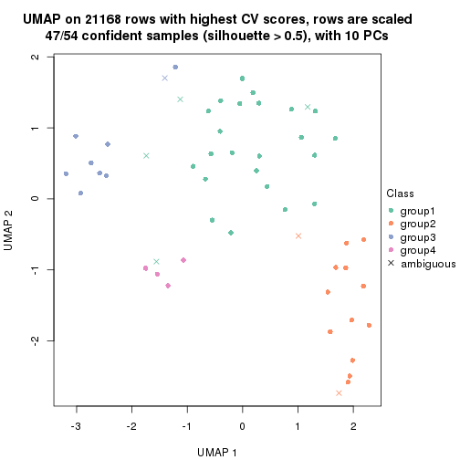
dimension_reduction(res, k = 5, method = "UMAP")
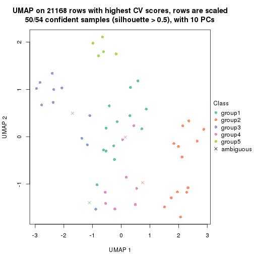
dimension_reduction(res, k = 6, method = "UMAP")
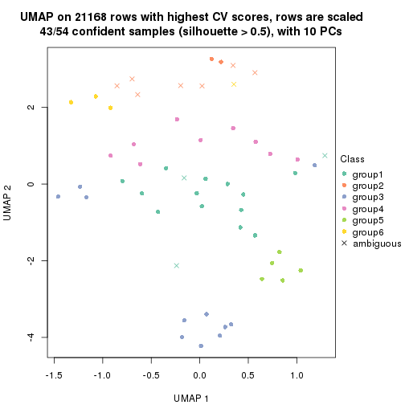
Following heatmap shows how subgroups are split when increasing k:
collect_classes(res)
Test correlation between subgroups and known annotations. If the known annotation is numeric, one-way ANOVA test is applied, and if the known annotation is discrete, chi-squared contingency table test is applied.
test_to_known_factors(res)
#> n disease.state(p) tissue(p) k
#> CV:mclust 54 2.67e-10 1.64e-04 2
#> CV:mclust 13 NA NA 3
#> CV:mclust 47 3.60e-09 3.71e-06 4
#> CV:mclust 50 2.90e-09 3.79e-05 5
#> CV:mclust 43 7.17e-06 2.45e-10 6
If matrix rows can be associated to genes, consider to use functional_enrichment(res,
...) to perform function enrichment for the signature genes. See this vignette for more detailed explanations.
The object with results only for a single top-value method and a single partition method can be extracted as:
res = res_list["CV", "NMF"]
# you can also extract it by
# res = res_list["CV:NMF"]
A summary of res and all the functions that can be applied to it:
res
#> A 'ConsensusPartition' object with k = 2, 3, 4, 5, 6.
#> On a matrix with 21168 rows and 54 columns.
#> Top rows (1000, 2000, 3000, 4000, 5000) are extracted by 'CV' method.
#> Subgroups are detected by 'NMF' method.
#> Performed in total 1250 partitions by row resampling.
#> Best k for subgroups seems to be 3.
#>
#> Following methods can be applied to this 'ConsensusPartition' object:
#> [1] "cola_report" "collect_classes" "collect_plots"
#> [4] "collect_stats" "colnames" "compare_signatures"
#> [7] "consensus_heatmap" "dimension_reduction" "functional_enrichment"
#> [10] "get_anno_col" "get_anno" "get_classes"
#> [13] "get_consensus" "get_matrix" "get_membership"
#> [16] "get_param" "get_signatures" "get_stats"
#> [19] "is_best_k" "is_stable_k" "membership_heatmap"
#> [22] "ncol" "nrow" "plot_ecdf"
#> [25] "rownames" "select_partition_number" "show"
#> [28] "suggest_best_k" "test_to_known_factors"
collect_plots() function collects all the plots made from res for all k (number of partitions)
into one single page to provide an easy and fast comparison between different k.
collect_plots(res)
The plots are:
k and the heatmap of
predicted classes for each k.k.k.k.All the plots in panels can be made by individual functions and they are plotted later in this section.
select_partition_number() produces several plots showing different
statistics for choosing “optimized” k. There are following statistics:
k;k, the area increased is defined as \(A_k - A_{k-1}\).The detailed explanations of these statistics can be found in the cola vignette.
Generally speaking, lower PAC score, higher mean silhouette score or higher
concordance corresponds to better partition. Rand index and Jaccard index
measure how similar the current partition is compared to partition with k-1.
If they are too similar, we won't accept k is better than k-1.
select_partition_number(res)
The numeric values for all these statistics can be obtained by get_stats().
get_stats(res)
#> k 1-PAC mean_silhouette concordance area_increased Rand Jaccard
#> 2 2 0.815 0.873 0.950 0.4472 0.547 0.547
#> 3 3 0.842 0.856 0.931 0.4759 0.661 0.448
#> 4 4 0.694 0.615 0.801 0.1060 0.918 0.768
#> 5 5 0.732 0.662 0.786 0.0677 0.907 0.691
#> 6 6 0.864 0.775 0.870 0.0491 0.918 0.657
suggest_best_k() suggests the best \(k\) based on these statistics. The rules are as follows:
suggest_best_k(res)
#> [1] 3
Following shows the table of the partitions (You need to click the show/hide
code output link to see it). The membership matrix (columns with name p*)
is inferred by
clue::cl_consensus()
function with the SE method. Basically the value in the membership matrix
represents the probability to belong to a certain group. The finall class
label for an item is determined with the group with highest probability it
belongs to.
In get_classes() function, the entropy is calculated from the membership
matrix and the silhouette score is calculated from the consensus matrix.
cbind(get_classes(res, k = 2), get_membership(res, k = 2))
#> class entropy silhouette p1 p2
#> GSM52556 2 0.0376 0.908 0.004 0.996
#> GSM52557 2 0.0000 0.910 0.000 1.000
#> GSM52558 2 0.0000 0.910 0.000 1.000
#> GSM52559 2 0.0000 0.910 0.000 1.000
#> GSM52560 2 0.0000 0.910 0.000 1.000
#> GSM52561 2 0.0000 0.910 0.000 1.000
#> GSM52562 2 0.0000 0.910 0.000 1.000
#> GSM52563 2 0.0000 0.910 0.000 1.000
#> GSM52564 2 0.9933 0.210 0.452 0.548
#> GSM52565 2 0.0000 0.910 0.000 1.000
#> GSM52566 2 0.0000 0.910 0.000 1.000
#> GSM52567 2 0.0000 0.910 0.000 1.000
#> GSM52568 2 0.0000 0.910 0.000 1.000
#> GSM52569 2 0.0000 0.910 0.000 1.000
#> GSM52570 2 0.0000 0.910 0.000 1.000
#> GSM52571 1 0.0000 0.958 1.000 0.000
#> GSM52572 1 0.7376 0.719 0.792 0.208
#> GSM52573 1 0.0000 0.958 1.000 0.000
#> GSM52574 1 0.0000 0.958 1.000 0.000
#> GSM52575 1 0.0000 0.958 1.000 0.000
#> GSM52576 1 0.0000 0.958 1.000 0.000
#> GSM52577 1 0.0000 0.958 1.000 0.000
#> GSM52578 1 0.0000 0.958 1.000 0.000
#> GSM52579 1 0.0000 0.958 1.000 0.000
#> GSM52580 1 0.1414 0.941 0.980 0.020
#> GSM52581 1 0.8763 0.558 0.704 0.296
#> GSM52582 1 0.0000 0.958 1.000 0.000
#> GSM52583 1 0.0000 0.958 1.000 0.000
#> GSM52584 1 0.0000 0.958 1.000 0.000
#> GSM52585 2 0.9815 0.305 0.420 0.580
#> GSM52586 2 0.9866 0.272 0.432 0.568
#> GSM52587 2 0.4431 0.835 0.092 0.908
#> GSM52588 1 0.0000 0.958 1.000 0.000
#> GSM52589 1 0.0000 0.958 1.000 0.000
#> GSM52590 1 0.0000 0.958 1.000 0.000
#> GSM52591 1 0.6712 0.765 0.824 0.176
#> GSM52592 1 0.0000 0.958 1.000 0.000
#> GSM52593 1 0.0000 0.958 1.000 0.000
#> GSM52594 1 0.0000 0.958 1.000 0.000
#> GSM52595 1 0.0000 0.958 1.000 0.000
#> GSM52596 1 0.0000 0.958 1.000 0.000
#> GSM52597 1 0.7674 0.694 0.776 0.224
#> GSM52598 1 0.0000 0.958 1.000 0.000
#> GSM52599 1 0.0000 0.958 1.000 0.000
#> GSM52600 1 0.0000 0.958 1.000 0.000
#> GSM52601 1 0.0000 0.958 1.000 0.000
#> GSM52602 1 0.0000 0.958 1.000 0.000
#> GSM52603 1 0.9552 0.342 0.624 0.376
#> GSM52604 1 0.0000 0.958 1.000 0.000
#> GSM52605 1 0.0000 0.958 1.000 0.000
#> GSM52606 1 0.0000 0.958 1.000 0.000
#> GSM52607 1 0.0000 0.958 1.000 0.000
#> GSM52608 1 0.0000 0.958 1.000 0.000
#> GSM52609 1 0.0000 0.958 1.000 0.000
cbind(get_classes(res, k = 3), get_membership(res, k = 3))
#> class entropy silhouette p1 p2 p3
#> GSM52556 3 0.6126 0.298 0.000 0.400 0.600
#> GSM52557 2 0.0892 0.979 0.020 0.980 0.000
#> GSM52558 2 0.1163 0.975 0.028 0.972 0.000
#> GSM52559 2 0.0747 0.975 0.000 0.984 0.016
#> GSM52560 2 0.0237 0.981 0.000 0.996 0.004
#> GSM52561 2 0.2356 0.932 0.072 0.928 0.000
#> GSM52562 2 0.0892 0.979 0.020 0.980 0.000
#> GSM52563 2 0.0237 0.981 0.000 0.996 0.004
#> GSM52564 1 0.2448 0.865 0.924 0.076 0.000
#> GSM52565 2 0.0475 0.982 0.004 0.992 0.004
#> GSM52566 2 0.0892 0.972 0.000 0.980 0.020
#> GSM52567 2 0.0237 0.981 0.000 0.996 0.004
#> GSM52568 2 0.0747 0.981 0.016 0.984 0.000
#> GSM52569 2 0.0661 0.981 0.004 0.988 0.008
#> GSM52570 2 0.0747 0.981 0.016 0.984 0.000
#> GSM52571 1 0.2796 0.874 0.908 0.000 0.092
#> GSM52572 1 0.1411 0.889 0.964 0.036 0.000
#> GSM52573 3 0.0000 0.907 0.000 0.000 1.000
#> GSM52574 3 0.0237 0.907 0.004 0.000 0.996
#> GSM52575 3 0.0237 0.907 0.004 0.000 0.996
#> GSM52576 3 0.2448 0.859 0.076 0.000 0.924
#> GSM52577 3 0.5678 0.505 0.316 0.000 0.684
#> GSM52578 3 0.1643 0.885 0.044 0.000 0.956
#> GSM52579 3 0.0237 0.907 0.004 0.000 0.996
#> GSM52580 1 0.0237 0.900 0.996 0.004 0.000
#> GSM52581 1 0.1031 0.894 0.976 0.024 0.000
#> GSM52582 1 0.6252 0.216 0.556 0.000 0.444
#> GSM52583 1 0.1529 0.907 0.960 0.000 0.040
#> GSM52584 1 0.1289 0.907 0.968 0.000 0.032
#> GSM52585 1 0.2625 0.857 0.916 0.084 0.000
#> GSM52586 1 0.4555 0.726 0.800 0.200 0.000
#> GSM52587 1 0.5859 0.464 0.656 0.344 0.000
#> GSM52588 1 0.2878 0.871 0.904 0.000 0.096
#> GSM52589 1 0.5591 0.576 0.696 0.000 0.304
#> GSM52590 3 0.6126 0.288 0.400 0.000 0.600
#> GSM52591 1 0.0424 0.899 0.992 0.008 0.000
#> GSM52592 1 0.1411 0.907 0.964 0.000 0.036
#> GSM52593 1 0.1529 0.907 0.960 0.000 0.040
#> GSM52594 1 0.1643 0.906 0.956 0.000 0.044
#> GSM52595 1 0.1529 0.907 0.960 0.000 0.040
#> GSM52596 1 0.1964 0.899 0.944 0.000 0.056
#> GSM52597 1 0.0592 0.898 0.988 0.012 0.000
#> GSM52598 1 0.0892 0.906 0.980 0.000 0.020
#> GSM52599 1 0.1643 0.906 0.956 0.000 0.044
#> GSM52600 1 0.1529 0.907 0.960 0.000 0.040
#> GSM52601 1 0.0892 0.906 0.980 0.000 0.020
#> GSM52602 3 0.0237 0.906 0.000 0.004 0.996
#> GSM52603 3 0.1643 0.876 0.000 0.044 0.956
#> GSM52604 3 0.0592 0.902 0.000 0.012 0.988
#> GSM52605 3 0.0000 0.907 0.000 0.000 1.000
#> GSM52606 3 0.0000 0.907 0.000 0.000 1.000
#> GSM52607 3 0.0424 0.904 0.000 0.008 0.992
#> GSM52608 3 0.0424 0.904 0.000 0.008 0.992
#> GSM52609 3 0.0237 0.907 0.004 0.000 0.996
cbind(get_classes(res, k = 4), get_membership(res, k = 4))
#> class entropy silhouette p1 p2 p3 p4
#> GSM52556 2 0.6374 0.3158 0.000 0.592 0.324 0.084
#> GSM52557 2 0.4222 0.6864 0.000 0.728 0.000 0.272
#> GSM52558 2 0.4624 0.6242 0.000 0.660 0.000 0.340
#> GSM52559 2 0.1792 0.7682 0.000 0.932 0.000 0.068
#> GSM52560 2 0.2011 0.7678 0.000 0.920 0.000 0.080
#> GSM52561 2 0.4509 0.6634 0.004 0.708 0.000 0.288
#> GSM52562 2 0.4746 0.6143 0.000 0.632 0.000 0.368
#> GSM52563 2 0.1557 0.7502 0.000 0.944 0.000 0.056
#> GSM52564 1 0.2329 0.7652 0.916 0.012 0.000 0.072
#> GSM52565 2 0.2760 0.7252 0.000 0.872 0.000 0.128
#> GSM52566 2 0.1389 0.7669 0.000 0.952 0.000 0.048
#> GSM52567 2 0.2814 0.7230 0.000 0.868 0.000 0.132
#> GSM52568 2 0.2944 0.7625 0.004 0.868 0.000 0.128
#> GSM52569 2 0.2973 0.7148 0.000 0.856 0.000 0.144
#> GSM52570 2 0.4483 0.6549 0.004 0.712 0.000 0.284
#> GSM52571 1 0.2255 0.7556 0.920 0.000 0.012 0.068
#> GSM52572 1 0.4907 0.3422 0.580 0.000 0.000 0.420
#> GSM52573 3 0.0000 0.8681 0.000 0.000 1.000 0.000
#> GSM52574 3 0.0000 0.8681 0.000 0.000 1.000 0.000
#> GSM52575 3 0.0000 0.8681 0.000 0.000 1.000 0.000
#> GSM52576 3 0.1970 0.8135 0.060 0.000 0.932 0.008
#> GSM52577 3 0.2053 0.7981 0.072 0.000 0.924 0.004
#> GSM52578 3 0.1191 0.8532 0.004 0.004 0.968 0.024
#> GSM52579 3 0.0927 0.8583 0.000 0.008 0.976 0.016
#> GSM52580 1 0.4313 0.6129 0.736 0.000 0.004 0.260
#> GSM52581 1 0.4585 0.5125 0.668 0.000 0.000 0.332
#> GSM52582 1 0.7182 0.1098 0.512 0.004 0.356 0.128
#> GSM52583 1 0.1716 0.7780 0.936 0.000 0.000 0.064
#> GSM52584 1 0.4123 0.6551 0.772 0.000 0.008 0.220
#> GSM52585 4 0.5912 -0.2524 0.440 0.036 0.000 0.524
#> GSM52586 1 0.6275 0.1173 0.484 0.056 0.000 0.460
#> GSM52587 4 0.7849 -0.1029 0.268 0.352 0.000 0.380
#> GSM52588 1 0.1890 0.7696 0.936 0.000 0.008 0.056
#> GSM52589 1 0.4761 0.5410 0.768 0.000 0.048 0.184
#> GSM52590 4 0.7384 0.1326 0.428 0.104 0.016 0.452
#> GSM52591 1 0.0707 0.7957 0.980 0.000 0.000 0.020
#> GSM52592 1 0.0188 0.7966 0.996 0.000 0.004 0.000
#> GSM52593 1 0.0779 0.7936 0.980 0.000 0.004 0.016
#> GSM52594 1 0.0188 0.7966 0.996 0.000 0.004 0.000
#> GSM52595 1 0.1109 0.7893 0.968 0.000 0.004 0.028
#> GSM52596 1 0.1356 0.7862 0.960 0.000 0.008 0.032
#> GSM52597 1 0.3444 0.6852 0.816 0.000 0.000 0.184
#> GSM52598 1 0.0336 0.7965 0.992 0.000 0.000 0.008
#> GSM52599 1 0.1452 0.7842 0.956 0.000 0.008 0.036
#> GSM52600 1 0.0524 0.7967 0.988 0.000 0.004 0.008
#> GSM52601 1 0.1109 0.7929 0.968 0.000 0.004 0.028
#> GSM52602 4 0.8484 -0.0910 0.164 0.048 0.388 0.400
#> GSM52603 4 0.8669 0.0940 0.044 0.268 0.256 0.432
#> GSM52604 3 0.8108 0.0203 0.076 0.080 0.452 0.392
#> GSM52605 3 0.8166 -0.1137 0.168 0.028 0.416 0.388
#> GSM52606 3 0.0376 0.8654 0.000 0.004 0.992 0.004
#> GSM52607 3 0.0000 0.8681 0.000 0.000 1.000 0.000
#> GSM52608 3 0.0000 0.8681 0.000 0.000 1.000 0.000
#> GSM52609 3 0.0000 0.8681 0.000 0.000 1.000 0.000
cbind(get_classes(res, k = 5), get_membership(res, k = 5))
#> class entropy silhouette p1 p2 p3 p4 p5
#> GSM52556 2 0.7393 0.5038 0.000 0.524 0.220 0.160 0.096
#> GSM52557 2 0.3123 0.6154 0.000 0.828 0.000 0.160 0.012
#> GSM52558 2 0.3724 0.5594 0.000 0.776 0.000 0.204 0.020
#> GSM52559 2 0.0771 0.7144 0.000 0.976 0.000 0.004 0.020
#> GSM52560 2 0.0798 0.7138 0.000 0.976 0.000 0.008 0.016
#> GSM52561 2 0.2692 0.6666 0.016 0.884 0.000 0.092 0.008
#> GSM52562 2 0.4354 0.4960 0.000 0.712 0.000 0.256 0.032
#> GSM52563 2 0.4670 0.6840 0.000 0.724 0.000 0.200 0.076
#> GSM52564 1 0.1630 0.7716 0.944 0.004 0.000 0.036 0.016
#> GSM52565 2 0.5775 0.6249 0.000 0.600 0.000 0.264 0.136
#> GSM52566 2 0.0794 0.7159 0.000 0.972 0.000 0.000 0.028
#> GSM52567 2 0.5504 0.6533 0.000 0.644 0.000 0.224 0.132
#> GSM52568 2 0.4317 0.6886 0.008 0.748 0.000 0.212 0.032
#> GSM52569 2 0.5808 0.6338 0.000 0.608 0.000 0.232 0.160
#> GSM52570 4 0.6400 -0.4600 0.004 0.392 0.000 0.456 0.148
#> GSM52571 1 0.1697 0.7881 0.932 0.000 0.008 0.000 0.060
#> GSM52572 1 0.6290 -0.1652 0.452 0.020 0.000 0.440 0.088
#> GSM52573 3 0.0000 0.9771 0.000 0.000 1.000 0.000 0.000
#> GSM52574 3 0.0000 0.9771 0.000 0.000 1.000 0.000 0.000
#> GSM52575 3 0.0162 0.9750 0.000 0.000 0.996 0.000 0.004
#> GSM52576 3 0.1168 0.9451 0.032 0.000 0.960 0.000 0.008
#> GSM52577 3 0.2020 0.8596 0.100 0.000 0.900 0.000 0.000
#> GSM52578 3 0.0609 0.9647 0.000 0.000 0.980 0.020 0.000
#> GSM52579 3 0.0404 0.9710 0.000 0.000 0.988 0.012 0.000
#> GSM52580 4 0.6091 0.2432 0.444 0.048 0.000 0.472 0.036
#> GSM52581 4 0.6338 0.3450 0.400 0.088 0.000 0.488 0.024
#> GSM52582 4 0.8757 0.3585 0.304 0.060 0.096 0.388 0.152
#> GSM52583 1 0.5793 -0.0602 0.548 0.016 0.000 0.376 0.060
#> GSM52584 1 0.5783 -0.2478 0.488 0.012 0.004 0.448 0.048
#> GSM52585 4 0.4793 0.4816 0.232 0.068 0.000 0.700 0.000
#> GSM52586 4 0.7403 0.3410 0.236 0.156 0.000 0.516 0.092
#> GSM52587 4 0.6373 0.2491 0.100 0.392 0.000 0.488 0.020
#> GSM52588 1 0.1628 0.7906 0.936 0.000 0.008 0.000 0.056
#> GSM52589 1 0.5379 0.3793 0.632 0.000 0.012 0.056 0.300
#> GSM52590 5 0.2719 0.8075 0.144 0.004 0.000 0.000 0.852
#> GSM52591 1 0.0290 0.7999 0.992 0.000 0.000 0.008 0.000
#> GSM52592 1 0.0613 0.8055 0.984 0.000 0.004 0.004 0.008
#> GSM52593 1 0.0609 0.8072 0.980 0.000 0.000 0.000 0.020
#> GSM52594 1 0.0671 0.8070 0.980 0.000 0.004 0.000 0.016
#> GSM52595 1 0.1041 0.8049 0.964 0.000 0.004 0.000 0.032
#> GSM52596 1 0.1205 0.8016 0.956 0.000 0.004 0.000 0.040
#> GSM52597 1 0.3531 0.6185 0.816 0.000 0.000 0.148 0.036
#> GSM52598 1 0.0510 0.8073 0.984 0.000 0.000 0.000 0.016
#> GSM52599 1 0.1041 0.8049 0.964 0.000 0.004 0.000 0.032
#> GSM52600 1 0.0613 0.8024 0.984 0.000 0.004 0.008 0.004
#> GSM52601 1 0.1153 0.7866 0.964 0.000 0.004 0.024 0.008
#> GSM52602 5 0.3215 0.9210 0.056 0.000 0.092 0.000 0.852
#> GSM52603 5 0.2806 0.8838 0.008 0.024 0.076 0.004 0.888
#> GSM52604 5 0.3222 0.9166 0.036 0.004 0.096 0.004 0.860
#> GSM52605 5 0.3821 0.9099 0.064 0.004 0.104 0.004 0.824
#> GSM52606 3 0.0000 0.9771 0.000 0.000 1.000 0.000 0.000
#> GSM52607 3 0.0000 0.9771 0.000 0.000 1.000 0.000 0.000
#> GSM52608 3 0.0000 0.9771 0.000 0.000 1.000 0.000 0.000
#> GSM52609 3 0.0000 0.9771 0.000 0.000 1.000 0.000 0.000
cbind(get_classes(res, k = 6), get_membership(res, k = 6))
#> class entropy silhouette p1 p2 p3 p4 p5 p6
#> GSM52556 2 0.6153 0.219 0.000 0.480 0.068 0.008 0.056 0.388
#> GSM52557 6 0.1867 0.706 0.000 0.064 0.000 0.020 0.000 0.916
#> GSM52558 6 0.2462 0.679 0.000 0.096 0.000 0.028 0.000 0.876
#> GSM52559 6 0.1075 0.730 0.000 0.048 0.000 0.000 0.000 0.952
#> GSM52560 6 0.1411 0.726 0.000 0.060 0.000 0.004 0.000 0.936
#> GSM52561 6 0.0520 0.731 0.000 0.008 0.000 0.008 0.000 0.984
#> GSM52562 6 0.2830 0.638 0.000 0.144 0.000 0.020 0.000 0.836
#> GSM52563 6 0.4227 -0.193 0.000 0.492 0.004 0.000 0.008 0.496
#> GSM52564 1 0.2271 0.890 0.908 0.056 0.000 0.012 0.016 0.008
#> GSM52565 2 0.5139 0.314 0.000 0.576 0.000 0.012 0.068 0.344
#> GSM52566 6 0.1204 0.728 0.000 0.056 0.000 0.000 0.000 0.944
#> GSM52567 2 0.5049 0.260 0.000 0.548 0.000 0.008 0.060 0.384
#> GSM52568 6 0.4790 0.144 0.000 0.376 0.000 0.036 0.012 0.576
#> GSM52569 2 0.5538 0.315 0.000 0.552 0.000 0.020 0.092 0.336
#> GSM52570 2 0.3525 0.318 0.000 0.816 0.000 0.080 0.008 0.096
#> GSM52571 1 0.1082 0.933 0.956 0.000 0.000 0.004 0.040 0.000
#> GSM52572 2 0.6947 0.128 0.304 0.444 0.004 0.200 0.028 0.020
#> GSM52573 3 0.0000 0.977 0.000 0.000 1.000 0.000 0.000 0.000
#> GSM52574 3 0.0146 0.976 0.000 0.004 0.996 0.000 0.000 0.000
#> GSM52575 3 0.0551 0.972 0.004 0.008 0.984 0.000 0.004 0.000
#> GSM52576 3 0.1686 0.928 0.052 0.008 0.932 0.004 0.004 0.000
#> GSM52577 3 0.1531 0.916 0.068 0.000 0.928 0.004 0.000 0.000
#> GSM52578 3 0.0922 0.965 0.004 0.000 0.968 0.024 0.000 0.004
#> GSM52579 3 0.0622 0.970 0.000 0.000 0.980 0.012 0.000 0.008
#> GSM52580 4 0.2699 0.916 0.108 0.000 0.000 0.864 0.008 0.020
#> GSM52581 4 0.2791 0.916 0.096 0.000 0.000 0.864 0.008 0.032
#> GSM52582 4 0.3379 0.899 0.060 0.008 0.012 0.856 0.016 0.048
#> GSM52583 4 0.2884 0.867 0.164 0.004 0.000 0.824 0.008 0.000
#> GSM52584 4 0.2531 0.902 0.128 0.004 0.000 0.860 0.008 0.000
#> GSM52585 4 0.1757 0.873 0.052 0.012 0.000 0.928 0.000 0.008
#> GSM52586 2 0.7694 0.136 0.148 0.436 0.000 0.216 0.028 0.172
#> GSM52587 4 0.2806 0.807 0.008 0.008 0.000 0.840 0.000 0.144
#> GSM52588 1 0.1003 0.939 0.964 0.004 0.000 0.004 0.028 0.000
#> GSM52589 1 0.5012 0.566 0.684 0.012 0.004 0.180 0.120 0.000
#> GSM52590 5 0.1168 0.957 0.028 0.016 0.000 0.000 0.956 0.000
#> GSM52591 1 0.0881 0.938 0.972 0.008 0.000 0.008 0.012 0.000
#> GSM52592 1 0.0000 0.948 1.000 0.000 0.000 0.000 0.000 0.000
#> GSM52593 1 0.0291 0.949 0.992 0.000 0.000 0.004 0.004 0.000
#> GSM52594 1 0.0146 0.949 0.996 0.000 0.000 0.004 0.000 0.000
#> GSM52595 1 0.0405 0.949 0.988 0.000 0.000 0.004 0.008 0.000
#> GSM52596 1 0.0603 0.947 0.980 0.000 0.000 0.004 0.016 0.000
#> GSM52597 1 0.2726 0.861 0.884 0.052 0.000 0.044 0.016 0.004
#> GSM52598 1 0.0146 0.949 0.996 0.000 0.000 0.000 0.004 0.000
#> GSM52599 1 0.0603 0.947 0.980 0.000 0.000 0.004 0.016 0.000
#> GSM52600 1 0.0146 0.949 0.996 0.000 0.000 0.004 0.000 0.000
#> GSM52601 1 0.0363 0.943 0.988 0.000 0.000 0.000 0.012 0.000
#> GSM52602 5 0.0893 0.971 0.016 0.004 0.004 0.000 0.972 0.004
#> GSM52603 5 0.1312 0.969 0.008 0.004 0.020 0.000 0.956 0.012
#> GSM52604 5 0.0984 0.974 0.012 0.000 0.012 0.000 0.968 0.008
#> GSM52605 5 0.1760 0.958 0.020 0.000 0.028 0.004 0.936 0.012
#> GSM52606 3 0.0000 0.977 0.000 0.000 1.000 0.000 0.000 0.000
#> GSM52607 3 0.0146 0.976 0.000 0.000 0.996 0.004 0.000 0.000
#> GSM52608 3 0.0146 0.976 0.000 0.004 0.996 0.000 0.000 0.000
#> GSM52609 3 0.0000 0.977 0.000 0.000 1.000 0.000 0.000 0.000
Heatmaps for the consensus matrix. It visualizes the probability of two samples to be in a same group.
consensus_heatmap(res, k = 2)
consensus_heatmap(res, k = 3)
consensus_heatmap(res, k = 4)
consensus_heatmap(res, k = 5)
consensus_heatmap(res, k = 6)
Heatmaps for the membership of samples in all partitions to see how consistent they are:
membership_heatmap(res, k = 2)
membership_heatmap(res, k = 3)
membership_heatmap(res, k = 4)
membership_heatmap(res, k = 5)
membership_heatmap(res, k = 6)
As soon as we have had the classes for columns, we can look for signatures which are significantly different between classes which can be candidate marks for certain classes. Following are the heatmaps for signatures.
Signature heatmaps where rows are scaled:
get_signatures(res, k = 2)
get_signatures(res, k = 3)
get_signatures(res, k = 4)
get_signatures(res, k = 5)
get_signatures(res, k = 6)
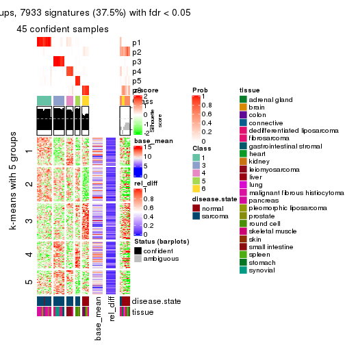
Signature heatmaps where rows are not scaled:
get_signatures(res, k = 2, scale_rows = FALSE)
get_signatures(res, k = 3, scale_rows = FALSE)

get_signatures(res, k = 4, scale_rows = FALSE)
get_signatures(res, k = 5, scale_rows = FALSE)
get_signatures(res, k = 6, scale_rows = FALSE)
Compare the overlap of signatures from different k:
compare_signatures(res)
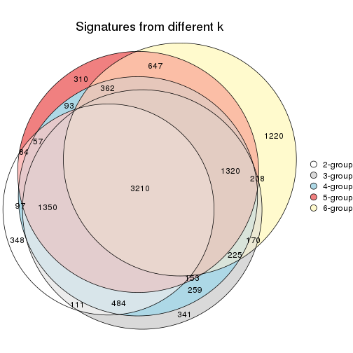
get_signature() returns a data frame invisibly. TO get the list of signatures, the function
call should be assigned to a variable explicitly. In following code, if plot argument is set
to FALSE, no heatmap is plotted while only the differential analysis is performed.
# code only for demonstration
tb = get_signature(res, k = ..., plot = FALSE)
An example of the output of tb is:
#> which_row fdr mean_1 mean_2 scaled_mean_1 scaled_mean_2 km
#> 1 38 0.042760348 8.373488 9.131774 -0.5533452 0.5164555 1
#> 2 40 0.018707592 7.106213 8.469186 -0.6173731 0.5762149 1
#> 3 55 0.019134737 10.221463 11.207825 -0.6159697 0.5749050 1
#> 4 59 0.006059896 5.921854 7.869574 -0.6899429 0.6439467 1
#> 5 60 0.018055526 8.928898 10.211722 -0.6204761 0.5791110 1
#> 6 98 0.009384629 15.714769 14.887706 0.6635654 -0.6193277 2
...
The columns in tb are:
which_row: row indices corresponding to the input matrix.fdr: FDR for the differential test. mean_x: The mean value in group x.scaled_mean_x: The mean value in group x after rows are scaled.km: Row groups if k-means clustering is applied to rows.UMAP plot which shows how samples are separated.
dimension_reduction(res, k = 2, method = "UMAP")
dimension_reduction(res, k = 3, method = "UMAP")
dimension_reduction(res, k = 4, method = "UMAP")
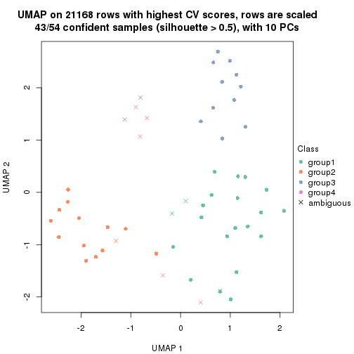
dimension_reduction(res, k = 5, method = "UMAP")
dimension_reduction(res, k = 6, method = "UMAP")
Following heatmap shows how subgroups are split when increasing k:
collect_classes(res)
Test correlation between subgroups and known annotations. If the known annotation is numeric, one-way ANOVA test is applied, and if the known annotation is discrete, chi-squared contingency table test is applied.
test_to_known_factors(res)
#> n disease.state(p) tissue(p) k
#> CV:NMF 50 1.64e-10 9.91e-04 2
#> CV:NMF 50 1.48e-10 1.35e-05 3
#> CV:NMF 43 3.98e-09 1.39e-04 4
#> CV:NMF 42 3.34e-08 1.57e-05 5
#> CV:NMF 45 8.37e-08 5.22e-11 6
If matrix rows can be associated to genes, consider to use functional_enrichment(res,
...) to perform function enrichment for the signature genes. See this vignette for more detailed explanations.
The object with results only for a single top-value method and a single partition method can be extracted as:
res = res_list["MAD", "hclust"]
# you can also extract it by
# res = res_list["MAD:hclust"]
A summary of res and all the functions that can be applied to it:
res
#> A 'ConsensusPartition' object with k = 2, 3, 4, 5, 6.
#> On a matrix with 21168 rows and 54 columns.
#> Top rows (1000, 2000, 3000, 4000, 5000) are extracted by 'MAD' method.
#> Subgroups are detected by 'hclust' method.
#> Performed in total 1250 partitions by row resampling.
#> Best k for subgroups seems to be 2.
#>
#> Following methods can be applied to this 'ConsensusPartition' object:
#> [1] "cola_report" "collect_classes" "collect_plots"
#> [4] "collect_stats" "colnames" "compare_signatures"
#> [7] "consensus_heatmap" "dimension_reduction" "functional_enrichment"
#> [10] "get_anno_col" "get_anno" "get_classes"
#> [13] "get_consensus" "get_matrix" "get_membership"
#> [16] "get_param" "get_signatures" "get_stats"
#> [19] "is_best_k" "is_stable_k" "membership_heatmap"
#> [22] "ncol" "nrow" "plot_ecdf"
#> [25] "rownames" "select_partition_number" "show"
#> [28] "suggest_best_k" "test_to_known_factors"
collect_plots() function collects all the plots made from res for all k (number of partitions)
into one single page to provide an easy and fast comparison between different k.
collect_plots(res)
The plots are:
k and the heatmap of
predicted classes for each k.k.k.k.All the plots in panels can be made by individual functions and they are plotted later in this section.
select_partition_number() produces several plots showing different
statistics for choosing “optimized” k. There are following statistics:
k;k, the area increased is defined as \(A_k - A_{k-1}\).The detailed explanations of these statistics can be found in the cola vignette.
Generally speaking, lower PAC score, higher mean silhouette score or higher
concordance corresponds to better partition. Rand index and Jaccard index
measure how similar the current partition is compared to partition with k-1.
If they are too similar, we won't accept k is better than k-1.
select_partition_number(res)
The numeric values for all these statistics can be obtained by get_stats().
get_stats(res)
#> k 1-PAC mean_silhouette concordance area_increased Rand Jaccard
#> 2 2 1.000 0.942 0.972 0.4029 0.575 0.575
#> 3 3 0.587 0.358 0.738 0.3803 0.848 0.736
#> 4 4 0.811 0.791 0.861 0.2609 0.721 0.455
#> 5 5 0.788 0.815 0.873 0.0896 0.920 0.752
#> 6 6 0.769 0.741 0.812 0.0349 0.950 0.797
suggest_best_k() suggests the best \(k\) based on these statistics. The rules are as follows:
suggest_best_k(res)
#> [1] 2
Following shows the table of the partitions (You need to click the show/hide
code output link to see it). The membership matrix (columns with name p*)
is inferred by
clue::cl_consensus()
function with the SE method. Basically the value in the membership matrix
represents the probability to belong to a certain group. The finall class
label for an item is determined with the group with highest probability it
belongs to.
In get_classes() function, the entropy is calculated from the membership
matrix and the silhouette score is calculated from the consensus matrix.
cbind(get_classes(res, k = 2), get_membership(res, k = 2))
#> class entropy silhouette p1 p2
#> GSM52556 2 0.0376 0.910 0.004 0.996
#> GSM52557 2 0.0938 0.909 0.012 0.988
#> GSM52558 2 0.0938 0.909 0.012 0.988
#> GSM52559 2 0.0376 0.910 0.004 0.996
#> GSM52560 2 0.0376 0.910 0.004 0.996
#> GSM52561 2 0.9580 0.488 0.380 0.620
#> GSM52562 2 0.0938 0.909 0.012 0.988
#> GSM52563 2 0.2948 0.886 0.052 0.948
#> GSM52564 2 0.9896 0.341 0.440 0.560
#> GSM52565 2 0.0000 0.908 0.000 1.000
#> GSM52566 2 0.0376 0.910 0.004 0.996
#> GSM52567 2 0.0376 0.910 0.004 0.996
#> GSM52568 2 0.2948 0.886 0.052 0.948
#> GSM52569 2 0.0376 0.910 0.004 0.996
#> GSM52570 2 0.0000 0.908 0.000 1.000
#> GSM52571 1 0.0000 0.996 1.000 0.000
#> GSM52572 1 0.0376 0.994 0.996 0.004
#> GSM52573 1 0.0672 0.993 0.992 0.008
#> GSM52574 1 0.0672 0.993 0.992 0.008
#> GSM52575 1 0.0000 0.996 1.000 0.000
#> GSM52576 1 0.0000 0.996 1.000 0.000
#> GSM52577 1 0.0000 0.996 1.000 0.000
#> GSM52578 1 0.0938 0.990 0.988 0.012
#> GSM52579 1 0.0938 0.990 0.988 0.012
#> GSM52580 1 0.0376 0.994 0.996 0.004
#> GSM52581 1 0.0376 0.994 0.996 0.004
#> GSM52582 1 0.0000 0.996 1.000 0.000
#> GSM52583 1 0.0000 0.996 1.000 0.000
#> GSM52584 1 0.0376 0.994 0.996 0.004
#> GSM52585 1 0.0376 0.994 0.996 0.004
#> GSM52586 1 0.0376 0.994 0.996 0.004
#> GSM52587 2 0.9580 0.488 0.380 0.620
#> GSM52588 1 0.0000 0.996 1.000 0.000
#> GSM52589 1 0.0000 0.996 1.000 0.000
#> GSM52590 1 0.0672 0.993 0.992 0.008
#> GSM52591 1 0.0376 0.994 0.996 0.004
#> GSM52592 1 0.0000 0.996 1.000 0.000
#> GSM52593 1 0.0000 0.996 1.000 0.000
#> GSM52594 1 0.0000 0.996 1.000 0.000
#> GSM52595 1 0.0000 0.996 1.000 0.000
#> GSM52596 1 0.0000 0.996 1.000 0.000
#> GSM52597 1 0.0376 0.994 0.996 0.004
#> GSM52598 1 0.0000 0.996 1.000 0.000
#> GSM52599 1 0.0000 0.996 1.000 0.000
#> GSM52600 1 0.0000 0.996 1.000 0.000
#> GSM52601 1 0.0000 0.996 1.000 0.000
#> GSM52602 1 0.0672 0.993 0.992 0.008
#> GSM52603 1 0.0672 0.993 0.992 0.008
#> GSM52604 1 0.0672 0.993 0.992 0.008
#> GSM52605 1 0.0672 0.993 0.992 0.008
#> GSM52606 1 0.0672 0.993 0.992 0.008
#> GSM52607 1 0.0672 0.993 0.992 0.008
#> GSM52608 1 0.0672 0.993 0.992 0.008
#> GSM52609 1 0.0672 0.993 0.992 0.008
cbind(get_classes(res, k = 3), get_membership(res, k = 3))
#> class entropy silhouette p1 p2 p3
#> GSM52556 2 0.1529 0.863 0.040 0.960 0.000
#> GSM52557 2 0.0424 0.863 0.008 0.992 0.000
#> GSM52558 2 0.0424 0.863 0.008 0.992 0.000
#> GSM52559 2 0.0892 0.863 0.020 0.980 0.000
#> GSM52560 2 0.0000 0.863 0.000 1.000 0.000
#> GSM52561 2 0.6796 0.566 0.368 0.612 0.020
#> GSM52562 2 0.0424 0.863 0.008 0.992 0.000
#> GSM52563 2 0.2550 0.851 0.056 0.932 0.012
#> GSM52564 2 0.8173 0.444 0.368 0.552 0.080
#> GSM52565 2 0.5988 0.736 0.368 0.632 0.000
#> GSM52566 2 0.0892 0.863 0.020 0.980 0.000
#> GSM52567 2 0.6079 0.726 0.388 0.612 0.000
#> GSM52568 2 0.2550 0.851 0.056 0.932 0.012
#> GSM52569 2 0.1529 0.863 0.040 0.960 0.000
#> GSM52570 2 0.6095 0.725 0.392 0.608 0.000
#> GSM52571 3 0.6252 -0.314 0.444 0.000 0.556
#> GSM52572 1 0.6168 0.907 0.588 0.000 0.412
#> GSM52573 3 0.0000 0.454 0.000 0.000 1.000
#> GSM52574 3 0.0000 0.454 0.000 0.000 1.000
#> GSM52575 3 0.6204 -0.248 0.424 0.000 0.576
#> GSM52576 3 0.6204 -0.248 0.424 0.000 0.576
#> GSM52577 3 0.6204 -0.248 0.424 0.000 0.576
#> GSM52578 3 0.0237 0.452 0.000 0.004 0.996
#> GSM52579 3 0.0237 0.452 0.000 0.004 0.996
#> GSM52580 1 0.6244 0.896 0.560 0.000 0.440
#> GSM52581 1 0.6244 0.896 0.560 0.000 0.440
#> GSM52582 3 0.6026 -0.143 0.376 0.000 0.624
#> GSM52583 3 0.6045 -0.151 0.380 0.000 0.620
#> GSM52584 3 0.6180 -0.281 0.416 0.000 0.584
#> GSM52585 1 0.6244 0.896 0.560 0.000 0.440
#> GSM52586 1 0.6168 0.907 0.588 0.000 0.412
#> GSM52587 2 0.6796 0.566 0.368 0.612 0.020
#> GSM52588 3 0.6244 -0.294 0.440 0.000 0.560
#> GSM52589 3 0.6204 -0.248 0.424 0.000 0.576
#> GSM52590 3 0.0424 0.452 0.008 0.000 0.992
#> GSM52591 1 0.6180 0.922 0.584 0.000 0.416
#> GSM52592 3 0.6274 -0.394 0.456 0.000 0.544
#> GSM52593 3 0.6244 -0.294 0.440 0.000 0.560
#> GSM52594 3 0.6244 -0.294 0.440 0.000 0.560
#> GSM52595 3 0.6244 -0.294 0.440 0.000 0.560
#> GSM52596 3 0.6244 -0.294 0.440 0.000 0.560
#> GSM52597 1 0.6180 0.922 0.584 0.000 0.416
#> GSM52598 3 0.6274 -0.394 0.456 0.000 0.544
#> GSM52599 3 0.6252 -0.314 0.444 0.000 0.556
#> GSM52600 3 0.6252 -0.314 0.444 0.000 0.556
#> GSM52601 3 0.6295 -0.506 0.472 0.000 0.528
#> GSM52602 3 0.0237 0.454 0.004 0.000 0.996
#> GSM52603 3 0.0237 0.454 0.004 0.000 0.996
#> GSM52604 3 0.0237 0.454 0.004 0.000 0.996
#> GSM52605 3 0.0237 0.454 0.004 0.000 0.996
#> GSM52606 3 0.0000 0.454 0.000 0.000 1.000
#> GSM52607 3 0.0000 0.454 0.000 0.000 1.000
#> GSM52608 3 0.0000 0.454 0.000 0.000 1.000
#> GSM52609 3 0.0000 0.454 0.000 0.000 1.000
cbind(get_classes(res, k = 4), get_membership(res, k = 4))
#> class entropy silhouette p1 p2 p3 p4
#> GSM52556 2 0.4992 0.486 0.000 0.524 0.000 0.476
#> GSM52557 2 0.4916 0.614 0.000 0.576 0.000 0.424
#> GSM52558 2 0.4916 0.614 0.000 0.576 0.000 0.424
#> GSM52559 2 0.4981 0.578 0.000 0.536 0.000 0.464
#> GSM52560 2 0.4955 0.600 0.000 0.556 0.000 0.444
#> GSM52561 2 0.3649 0.353 0.204 0.796 0.000 0.000
#> GSM52562 2 0.4916 0.614 0.000 0.576 0.000 0.424
#> GSM52563 2 0.4564 0.597 0.000 0.672 0.000 0.328
#> GSM52564 2 0.4164 0.282 0.264 0.736 0.000 0.000
#> GSM52565 4 0.2589 0.950 0.000 0.116 0.000 0.884
#> GSM52566 2 0.4981 0.578 0.000 0.536 0.000 0.464
#> GSM52567 4 0.2281 0.971 0.000 0.096 0.000 0.904
#> GSM52568 2 0.4564 0.597 0.000 0.672 0.000 0.328
#> GSM52569 2 0.4992 0.486 0.000 0.524 0.000 0.476
#> GSM52570 4 0.2216 0.970 0.000 0.092 0.000 0.908
#> GSM52571 1 0.0844 0.876 0.980 0.004 0.012 0.004
#> GSM52572 1 0.4364 0.795 0.792 0.180 0.004 0.024
#> GSM52573 3 0.1022 0.984 0.032 0.000 0.968 0.000
#> GSM52574 3 0.1022 0.984 0.032 0.000 0.968 0.000
#> GSM52575 1 0.0895 0.874 0.976 0.004 0.020 0.000
#> GSM52576 1 0.0895 0.874 0.976 0.004 0.020 0.000
#> GSM52577 1 0.1109 0.872 0.968 0.004 0.028 0.000
#> GSM52578 3 0.1489 0.977 0.044 0.004 0.952 0.000
#> GSM52579 3 0.1489 0.977 0.044 0.004 0.952 0.000
#> GSM52580 1 0.7229 0.658 0.592 0.288 0.044 0.076
#> GSM52581 1 0.7229 0.658 0.592 0.288 0.044 0.076
#> GSM52582 1 0.7105 0.666 0.656 0.192 0.080 0.072
#> GSM52583 1 0.7040 0.669 0.660 0.192 0.080 0.068
#> GSM52584 1 0.7050 0.677 0.656 0.200 0.072 0.072
#> GSM52585 1 0.7229 0.658 0.592 0.288 0.044 0.076
#> GSM52586 1 0.4364 0.795 0.792 0.180 0.004 0.024
#> GSM52587 2 0.3649 0.353 0.204 0.796 0.000 0.000
#> GSM52588 1 0.0336 0.877 0.992 0.000 0.008 0.000
#> GSM52589 1 0.1004 0.874 0.972 0.004 0.024 0.000
#> GSM52590 3 0.1824 0.969 0.060 0.004 0.936 0.000
#> GSM52591 1 0.3894 0.818 0.832 0.140 0.004 0.024
#> GSM52592 1 0.1471 0.871 0.960 0.024 0.012 0.004
#> GSM52593 1 0.0336 0.877 0.992 0.000 0.008 0.000
#> GSM52594 1 0.0336 0.877 0.992 0.000 0.008 0.000
#> GSM52595 1 0.0336 0.877 0.992 0.000 0.008 0.000
#> GSM52596 1 0.0336 0.877 0.992 0.000 0.008 0.000
#> GSM52597 1 0.3894 0.818 0.832 0.140 0.004 0.024
#> GSM52598 1 0.1471 0.871 0.960 0.024 0.012 0.004
#> GSM52599 1 0.0844 0.876 0.980 0.004 0.012 0.004
#> GSM52600 1 0.0844 0.876 0.980 0.004 0.012 0.004
#> GSM52601 1 0.1968 0.865 0.940 0.044 0.008 0.008
#> GSM52602 3 0.1576 0.979 0.048 0.004 0.948 0.000
#> GSM52603 3 0.1576 0.979 0.048 0.004 0.948 0.000
#> GSM52604 3 0.1576 0.979 0.048 0.004 0.948 0.000
#> GSM52605 3 0.1576 0.979 0.048 0.004 0.948 0.000
#> GSM52606 3 0.1022 0.984 0.032 0.000 0.968 0.000
#> GSM52607 3 0.1022 0.984 0.032 0.000 0.968 0.000
#> GSM52608 3 0.1022 0.984 0.032 0.000 0.968 0.000
#> GSM52609 3 0.1022 0.984 0.032 0.000 0.968 0.000
cbind(get_classes(res, k = 5), get_membership(res, k = 5))
#> class entropy silhouette p1 p2 p3 p4 p5
#> GSM52556 2 0.4288 0.229 0.000 0.612 0.000 0.004 0.384
#> GSM52557 2 0.1410 0.640 0.000 0.940 0.000 0.000 0.060
#> GSM52558 2 0.1410 0.640 0.000 0.940 0.000 0.000 0.060
#> GSM52559 2 0.2674 0.597 0.000 0.856 0.000 0.004 0.140
#> GSM52560 2 0.1952 0.626 0.000 0.912 0.000 0.004 0.084
#> GSM52561 2 0.6361 0.448 0.180 0.632 0.000 0.136 0.052
#> GSM52562 2 0.1410 0.640 0.000 0.940 0.000 0.000 0.060
#> GSM52563 2 0.2047 0.636 0.012 0.928 0.000 0.020 0.040
#> GSM52564 2 0.6755 0.375 0.240 0.572 0.000 0.136 0.052
#> GSM52565 5 0.4084 0.943 0.000 0.328 0.000 0.004 0.668
#> GSM52566 2 0.2674 0.597 0.000 0.856 0.000 0.004 0.140
#> GSM52567 5 0.3707 0.948 0.000 0.284 0.000 0.000 0.716
#> GSM52568 2 0.1967 0.633 0.012 0.932 0.000 0.020 0.036
#> GSM52569 2 0.4150 0.224 0.000 0.612 0.000 0.000 0.388
#> GSM52570 5 0.3990 0.955 0.000 0.308 0.000 0.004 0.688
#> GSM52571 1 0.0510 0.901 0.984 0.000 0.000 0.016 0.000
#> GSM52572 1 0.4163 0.740 0.776 0.008 0.000 0.176 0.040
#> GSM52573 3 0.0000 0.977 0.000 0.000 1.000 0.000 0.000
#> GSM52574 3 0.0000 0.977 0.000 0.000 1.000 0.000 0.000
#> GSM52575 1 0.2586 0.890 0.892 0.000 0.012 0.084 0.012
#> GSM52576 1 0.2586 0.890 0.892 0.000 0.012 0.084 0.012
#> GSM52577 1 0.2727 0.888 0.888 0.000 0.020 0.080 0.012
#> GSM52578 3 0.0671 0.968 0.016 0.004 0.980 0.000 0.000
#> GSM52579 3 0.0671 0.968 0.016 0.004 0.980 0.000 0.000
#> GSM52580 4 0.1121 0.883 0.044 0.000 0.000 0.956 0.000
#> GSM52581 4 0.1121 0.883 0.044 0.000 0.000 0.956 0.000
#> GSM52582 4 0.3873 0.865 0.088 0.000 0.008 0.820 0.084
#> GSM52583 4 0.3928 0.867 0.092 0.000 0.008 0.816 0.084
#> GSM52584 4 0.3512 0.878 0.088 0.000 0.004 0.840 0.068
#> GSM52585 4 0.1121 0.883 0.044 0.000 0.000 0.956 0.000
#> GSM52586 1 0.4163 0.740 0.776 0.008 0.000 0.176 0.040
#> GSM52587 2 0.6361 0.448 0.180 0.632 0.000 0.136 0.052
#> GSM52588 1 0.1768 0.902 0.924 0.000 0.000 0.072 0.004
#> GSM52589 1 0.2811 0.879 0.876 0.000 0.012 0.100 0.012
#> GSM52590 3 0.1579 0.958 0.032 0.000 0.944 0.000 0.024
#> GSM52591 1 0.3387 0.799 0.836 0.004 0.000 0.128 0.032
#> GSM52592 1 0.0451 0.895 0.988 0.004 0.000 0.008 0.000
#> GSM52593 1 0.1768 0.902 0.924 0.000 0.000 0.072 0.004
#> GSM52594 1 0.1768 0.902 0.924 0.000 0.000 0.072 0.004
#> GSM52595 1 0.1768 0.902 0.924 0.000 0.000 0.072 0.004
#> GSM52596 1 0.1768 0.902 0.924 0.000 0.000 0.072 0.004
#> GSM52597 1 0.3387 0.799 0.836 0.004 0.000 0.128 0.032
#> GSM52598 1 0.0451 0.895 0.988 0.004 0.000 0.008 0.000
#> GSM52599 1 0.0510 0.901 0.984 0.000 0.000 0.016 0.000
#> GSM52600 1 0.0510 0.901 0.984 0.000 0.000 0.016 0.000
#> GSM52601 1 0.1356 0.890 0.956 0.004 0.000 0.028 0.012
#> GSM52602 3 0.1310 0.969 0.020 0.000 0.956 0.000 0.024
#> GSM52603 3 0.1310 0.969 0.020 0.000 0.956 0.000 0.024
#> GSM52604 3 0.1310 0.969 0.020 0.000 0.956 0.000 0.024
#> GSM52605 3 0.1310 0.969 0.020 0.000 0.956 0.000 0.024
#> GSM52606 3 0.0000 0.977 0.000 0.000 1.000 0.000 0.000
#> GSM52607 3 0.0000 0.977 0.000 0.000 1.000 0.000 0.000
#> GSM52608 3 0.0000 0.977 0.000 0.000 1.000 0.000 0.000
#> GSM52609 3 0.0000 0.977 0.000 0.000 1.000 0.000 0.000
cbind(get_classes(res, k = 6), get_membership(res, k = 6))
#> class entropy silhouette p1 p2 p3 p4 p5 p6
#> GSM52556 5 0.6114 -0.332 0.000 0.312 0.000 0.004 0.432 0.252
#> GSM52557 6 0.0000 0.649 0.000 0.000 0.000 0.000 0.000 1.000
#> GSM52558 6 0.0000 0.649 0.000 0.000 0.000 0.000 0.000 1.000
#> GSM52559 6 0.3456 0.502 0.000 0.040 0.000 0.004 0.156 0.800
#> GSM52560 6 0.1010 0.632 0.000 0.000 0.000 0.004 0.036 0.960
#> GSM52561 6 0.7234 0.470 0.160 0.164 0.000 0.048 0.096 0.532
#> GSM52562 6 0.0000 0.649 0.000 0.000 0.000 0.000 0.000 1.000
#> GSM52563 6 0.3621 0.631 0.012 0.052 0.000 0.016 0.092 0.828
#> GSM52564 6 0.7561 0.397 0.220 0.164 0.000 0.048 0.096 0.472
#> GSM52565 2 0.3861 0.949 0.000 0.672 0.000 0.004 0.008 0.316
#> GSM52566 6 0.3456 0.502 0.000 0.040 0.000 0.004 0.156 0.800
#> GSM52567 2 0.3608 0.944 0.000 0.716 0.000 0.000 0.012 0.272
#> GSM52568 6 0.3582 0.624 0.012 0.056 0.000 0.016 0.084 0.832
#> GSM52569 5 0.5994 -0.334 0.000 0.316 0.000 0.000 0.432 0.252
#> GSM52570 2 0.3565 0.954 0.000 0.692 0.000 0.004 0.000 0.304
#> GSM52571 1 0.0603 0.896 0.980 0.004 0.000 0.016 0.000 0.000
#> GSM52572 1 0.4536 0.718 0.748 0.136 0.000 0.092 0.016 0.008
#> GSM52573 3 0.0000 0.988 0.000 0.000 1.000 0.000 0.000 0.000
#> GSM52574 3 0.0000 0.988 0.000 0.000 1.000 0.000 0.000 0.000
#> GSM52575 1 0.2508 0.885 0.884 0.016 0.000 0.084 0.016 0.000
#> GSM52576 1 0.2508 0.885 0.884 0.016 0.000 0.084 0.016 0.000
#> GSM52577 1 0.2710 0.884 0.880 0.016 0.008 0.080 0.016 0.000
#> GSM52578 3 0.0603 0.964 0.016 0.000 0.980 0.000 0.000 0.004
#> GSM52579 3 0.0603 0.964 0.016 0.000 0.980 0.000 0.000 0.004
#> GSM52580 4 0.2505 0.882 0.020 0.092 0.000 0.880 0.008 0.000
#> GSM52581 4 0.2505 0.882 0.020 0.092 0.000 0.880 0.008 0.000
#> GSM52582 4 0.2379 0.864 0.052 0.012 0.008 0.904 0.024 0.000
#> GSM52583 4 0.2359 0.864 0.056 0.012 0.008 0.904 0.020 0.000
#> GSM52584 4 0.1219 0.878 0.048 0.000 0.004 0.948 0.000 0.000
#> GSM52585 4 0.2505 0.882 0.020 0.092 0.000 0.880 0.008 0.000
#> GSM52586 1 0.4536 0.718 0.748 0.136 0.000 0.092 0.016 0.008
#> GSM52587 6 0.7234 0.470 0.160 0.164 0.000 0.048 0.096 0.532
#> GSM52588 1 0.1701 0.898 0.920 0.008 0.000 0.072 0.000 0.000
#> GSM52589 1 0.2709 0.875 0.868 0.016 0.000 0.100 0.016 0.000
#> GSM52590 5 0.4179 0.421 0.012 0.000 0.472 0.000 0.516 0.000
#> GSM52591 1 0.3395 0.797 0.828 0.096 0.000 0.068 0.004 0.004
#> GSM52592 1 0.0665 0.889 0.980 0.008 0.000 0.008 0.000 0.004
#> GSM52593 1 0.1701 0.898 0.920 0.008 0.000 0.072 0.000 0.000
#> GSM52594 1 0.1701 0.898 0.920 0.008 0.000 0.072 0.000 0.000
#> GSM52595 1 0.1701 0.898 0.920 0.008 0.000 0.072 0.000 0.000
#> GSM52596 1 0.1701 0.898 0.920 0.008 0.000 0.072 0.000 0.000
#> GSM52597 1 0.3395 0.797 0.828 0.096 0.000 0.068 0.004 0.004
#> GSM52598 1 0.0665 0.889 0.980 0.008 0.000 0.008 0.000 0.004
#> GSM52599 1 0.0603 0.896 0.980 0.004 0.000 0.016 0.000 0.000
#> GSM52600 1 0.0603 0.896 0.980 0.004 0.000 0.016 0.000 0.000
#> GSM52601 1 0.1381 0.887 0.952 0.020 0.000 0.020 0.004 0.004
#> GSM52602 5 0.3862 0.434 0.000 0.000 0.476 0.000 0.524 0.000
#> GSM52603 5 0.3862 0.434 0.000 0.000 0.476 0.000 0.524 0.000
#> GSM52604 5 0.3862 0.434 0.000 0.000 0.476 0.000 0.524 0.000
#> GSM52605 5 0.3862 0.434 0.000 0.000 0.476 0.000 0.524 0.000
#> GSM52606 3 0.0000 0.988 0.000 0.000 1.000 0.000 0.000 0.000
#> GSM52607 3 0.0000 0.988 0.000 0.000 1.000 0.000 0.000 0.000
#> GSM52608 3 0.0000 0.988 0.000 0.000 1.000 0.000 0.000 0.000
#> GSM52609 3 0.0000 0.988 0.000 0.000 1.000 0.000 0.000 0.000
Heatmaps for the consensus matrix. It visualizes the probability of two samples to be in a same group.
consensus_heatmap(res, k = 2)
consensus_heatmap(res, k = 3)
consensus_heatmap(res, k = 4)
consensus_heatmap(res, k = 5)
consensus_heatmap(res, k = 6)
Heatmaps for the membership of samples in all partitions to see how consistent they are:
membership_heatmap(res, k = 2)
membership_heatmap(res, k = 3)
membership_heatmap(res, k = 4)
membership_heatmap(res, k = 5)
membership_heatmap(res, k = 6)
As soon as we have had the classes for columns, we can look for signatures which are significantly different between classes which can be candidate marks for certain classes. Following are the heatmaps for signatures.
Signature heatmaps where rows are scaled:
get_signatures(res, k = 2)
get_signatures(res, k = 3)
get_signatures(res, k = 4)
get_signatures(res, k = 5)
get_signatures(res, k = 6)
Signature heatmaps where rows are not scaled:
get_signatures(res, k = 2, scale_rows = FALSE)
get_signatures(res, k = 3, scale_rows = FALSE)
get_signatures(res, k = 4, scale_rows = FALSE)
get_signatures(res, k = 5, scale_rows = FALSE)
get_signatures(res, k = 6, scale_rows = FALSE)

Compare the overlap of signatures from different k:
compare_signatures(res)
get_signature() returns a data frame invisibly. TO get the list of signatures, the function
call should be assigned to a variable explicitly. In following code, if plot argument is set
to FALSE, no heatmap is plotted while only the differential analysis is performed.
# code only for demonstration
tb = get_signature(res, k = ..., plot = FALSE)
An example of the output of tb is:
#> which_row fdr mean_1 mean_2 scaled_mean_1 scaled_mean_2 km
#> 1 38 0.042760348 8.373488 9.131774 -0.5533452 0.5164555 1
#> 2 40 0.018707592 7.106213 8.469186 -0.6173731 0.5762149 1
#> 3 55 0.019134737 10.221463 11.207825 -0.6159697 0.5749050 1
#> 4 59 0.006059896 5.921854 7.869574 -0.6899429 0.6439467 1
#> 5 60 0.018055526 8.928898 10.211722 -0.6204761 0.5791110 1
#> 6 98 0.009384629 15.714769 14.887706 0.6635654 -0.6193277 2
...
The columns in tb are:
which_row: row indices corresponding to the input matrix.fdr: FDR for the differential test. mean_x: The mean value in group x.scaled_mean_x: The mean value in group x after rows are scaled.km: Row groups if k-means clustering is applied to rows.UMAP plot which shows how samples are separated.
dimension_reduction(res, k = 2, method = "UMAP")
dimension_reduction(res, k = 3, method = "UMAP")
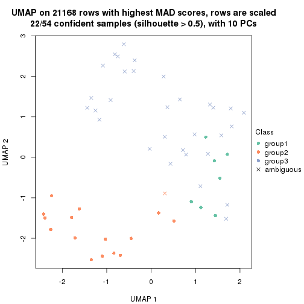
dimension_reduction(res, k = 4, method = "UMAP")
dimension_reduction(res, k = 5, method = "UMAP")
dimension_reduction(res, k = 6, method = "UMAP")
Following heatmap shows how subgroups are split when increasing k:
collect_classes(res)
Test correlation between subgroups and known annotations. If the known annotation is numeric, one-way ANOVA test is applied, and if the known annotation is discrete, chi-squared contingency table test is applied.
test_to_known_factors(res)
#> n disease.state(p) tissue(p) k
#> MAD:hclust 51 1.26e-11 1.59e-04 2
#> MAD:hclust 22 1.68e-04 3.50e-01 3
#> MAD:hclust 49 1.30e-10 7.03e-09 4
#> MAD:hclust 49 5.84e-10 1.39e-11 5
#> MAD:hclust 44 6.42e-09 5.17e-10 6
If matrix rows can be associated to genes, consider to use functional_enrichment(res,
...) to perform function enrichment for the signature genes. See this vignette for more detailed explanations.
The object with results only for a single top-value method and a single partition method can be extracted as:
res = res_list["MAD", "kmeans"]
# you can also extract it by
# res = res_list["MAD:kmeans"]
A summary of res and all the functions that can be applied to it:
res
#> A 'ConsensusPartition' object with k = 2, 3, 4, 5, 6.
#> On a matrix with 21168 rows and 54 columns.
#> Top rows (1000, 2000, 3000, 4000, 5000) are extracted by 'MAD' method.
#> Subgroups are detected by 'kmeans' method.
#> Performed in total 1250 partitions by row resampling.
#> Best k for subgroups seems to be 3.
#>
#> Following methods can be applied to this 'ConsensusPartition' object:
#> [1] "cola_report" "collect_classes" "collect_plots"
#> [4] "collect_stats" "colnames" "compare_signatures"
#> [7] "consensus_heatmap" "dimension_reduction" "functional_enrichment"
#> [10] "get_anno_col" "get_anno" "get_classes"
#> [13] "get_consensus" "get_matrix" "get_membership"
#> [16] "get_param" "get_signatures" "get_stats"
#> [19] "is_best_k" "is_stable_k" "membership_heatmap"
#> [22] "ncol" "nrow" "plot_ecdf"
#> [25] "rownames" "select_partition_number" "show"
#> [28] "suggest_best_k" "test_to_known_factors"
collect_plots() function collects all the plots made from res for all k (number of partitions)
into one single page to provide an easy and fast comparison between different k.
collect_plots(res)
The plots are:
k and the heatmap of
predicted classes for each k.k.k.k.All the plots in panels can be made by individual functions and they are plotted later in this section.
select_partition_number() produces several plots showing different
statistics for choosing “optimized” k. There are following statistics:
k;k, the area increased is defined as \(A_k - A_{k-1}\).The detailed explanations of these statistics can be found in the cola vignette.
Generally speaking, lower PAC score, higher mean silhouette score or higher
concordance corresponds to better partition. Rand index and Jaccard index
measure how similar the current partition is compared to partition with k-1.
If they are too similar, we won't accept k is better than k-1.
select_partition_number(res)
The numeric values for all these statistics can be obtained by get_stats().
get_stats(res)
#> k 1-PAC mean_silhouette concordance area_increased Rand Jaccard
#> 2 2 0.430 0.792 0.877 0.4383 0.591 0.591
#> 3 3 0.717 0.867 0.910 0.4430 0.728 0.553
#> 4 4 0.704 0.735 0.840 0.1372 0.916 0.763
#> 5 5 0.700 0.696 0.792 0.0723 0.983 0.936
#> 6 6 0.704 0.634 0.754 0.0527 0.910 0.668
suggest_best_k() suggests the best \(k\) based on these statistics. The rules are as follows:
suggest_best_k(res)
#> [1] 3
Following shows the table of the partitions (You need to click the show/hide
code output link to see it). The membership matrix (columns with name p*)
is inferred by
clue::cl_consensus()
function with the SE method. Basically the value in the membership matrix
represents the probability to belong to a certain group. The finall class
label for an item is determined with the group with highest probability it
belongs to.
In get_classes() function, the entropy is calculated from the membership
matrix and the silhouette score is calculated from the consensus matrix.
cbind(get_classes(res, k = 2), get_membership(res, k = 2))
#> class entropy silhouette p1 p2
#> GSM52556 2 0.1184 0.852 0.016 0.984
#> GSM52557 2 0.4690 0.942 0.100 0.900
#> GSM52558 2 0.4690 0.942 0.100 0.900
#> GSM52559 2 0.4431 0.937 0.092 0.908
#> GSM52560 2 0.4690 0.942 0.100 0.900
#> GSM52561 2 0.8016 0.767 0.244 0.756
#> GSM52562 2 0.4690 0.942 0.100 0.900
#> GSM52563 2 0.4690 0.942 0.100 0.900
#> GSM52564 1 0.4939 0.752 0.892 0.108
#> GSM52565 2 0.4690 0.942 0.100 0.900
#> GSM52566 2 0.4431 0.937 0.092 0.908
#> GSM52567 2 0.4690 0.942 0.100 0.900
#> GSM52568 2 0.4690 0.942 0.100 0.900
#> GSM52569 2 0.4562 0.940 0.096 0.904
#> GSM52570 2 0.4690 0.942 0.100 0.900
#> GSM52571 1 0.0672 0.836 0.992 0.008
#> GSM52572 1 0.0000 0.837 1.000 0.000
#> GSM52573 1 0.9460 0.634 0.636 0.364
#> GSM52574 1 0.9460 0.634 0.636 0.364
#> GSM52575 1 0.4161 0.812 0.916 0.084
#> GSM52576 1 0.4161 0.812 0.916 0.084
#> GSM52577 1 0.4022 0.814 0.920 0.080
#> GSM52578 1 0.9427 0.634 0.640 0.360
#> GSM52579 1 0.9427 0.634 0.640 0.360
#> GSM52580 1 0.4161 0.786 0.916 0.084
#> GSM52581 1 0.5178 0.754 0.884 0.116
#> GSM52582 1 0.4562 0.809 0.904 0.096
#> GSM52583 1 0.1184 0.830 0.984 0.016
#> GSM52584 1 0.1184 0.830 0.984 0.016
#> GSM52585 1 0.5178 0.754 0.884 0.116
#> GSM52586 1 0.3584 0.792 0.932 0.068
#> GSM52587 2 0.9970 0.121 0.468 0.532
#> GSM52588 1 0.0376 0.837 0.996 0.004
#> GSM52589 1 0.1843 0.832 0.972 0.028
#> GSM52590 1 0.3114 0.826 0.944 0.056
#> GSM52591 1 0.0000 0.837 1.000 0.000
#> GSM52592 1 0.0000 0.837 1.000 0.000
#> GSM52593 1 0.0000 0.837 1.000 0.000
#> GSM52594 1 0.0000 0.837 1.000 0.000
#> GSM52595 1 0.0000 0.837 1.000 0.000
#> GSM52596 1 0.0000 0.837 1.000 0.000
#> GSM52597 1 0.0000 0.837 1.000 0.000
#> GSM52598 1 0.0000 0.837 1.000 0.000
#> GSM52599 1 0.0000 0.837 1.000 0.000
#> GSM52600 1 0.0000 0.837 1.000 0.000
#> GSM52601 1 0.0000 0.837 1.000 0.000
#> GSM52602 1 0.9460 0.634 0.636 0.364
#> GSM52603 1 0.9460 0.634 0.636 0.364
#> GSM52604 1 0.9460 0.634 0.636 0.364
#> GSM52605 1 0.9460 0.634 0.636 0.364
#> GSM52606 1 0.9460 0.634 0.636 0.364
#> GSM52607 1 0.9460 0.634 0.636 0.364
#> GSM52608 1 0.9460 0.634 0.636 0.364
#> GSM52609 1 0.9460 0.634 0.636 0.364
cbind(get_classes(res, k = 3), get_membership(res, k = 3))
#> class entropy silhouette p1 p2 p3
#> GSM52556 2 0.1031 0.929 0.000 0.976 0.024
#> GSM52557 2 0.2680 0.910 0.068 0.924 0.008
#> GSM52558 2 0.2680 0.910 0.068 0.924 0.008
#> GSM52559 2 0.0424 0.935 0.000 0.992 0.008
#> GSM52560 2 0.0424 0.935 0.000 0.992 0.008
#> GSM52561 2 0.6647 0.224 0.452 0.540 0.008
#> GSM52562 2 0.2680 0.910 0.068 0.924 0.008
#> GSM52563 2 0.0000 0.935 0.000 1.000 0.000
#> GSM52564 1 0.1482 0.883 0.968 0.012 0.020
#> GSM52565 2 0.1163 0.932 0.000 0.972 0.028
#> GSM52566 2 0.0424 0.935 0.000 0.992 0.008
#> GSM52567 2 0.1163 0.932 0.000 0.972 0.028
#> GSM52568 2 0.0747 0.933 0.016 0.984 0.000
#> GSM52569 2 0.1163 0.932 0.000 0.972 0.028
#> GSM52570 2 0.1163 0.932 0.000 0.972 0.028
#> GSM52571 1 0.2878 0.907 0.904 0.000 0.096
#> GSM52572 1 0.0892 0.888 0.980 0.000 0.020
#> GSM52573 3 0.2280 0.952 0.052 0.008 0.940
#> GSM52574 3 0.2280 0.952 0.052 0.008 0.940
#> GSM52575 3 0.1964 0.948 0.056 0.000 0.944
#> GSM52576 1 0.6079 0.439 0.612 0.000 0.388
#> GSM52577 3 0.5397 0.639 0.280 0.000 0.720
#> GSM52578 3 0.3784 0.881 0.132 0.004 0.864
#> GSM52579 3 0.3784 0.881 0.132 0.004 0.864
#> GSM52580 1 0.1015 0.870 0.980 0.012 0.008
#> GSM52581 1 0.1015 0.870 0.980 0.012 0.008
#> GSM52582 1 0.4605 0.787 0.796 0.000 0.204
#> GSM52583 1 0.2448 0.900 0.924 0.000 0.076
#> GSM52584 1 0.2356 0.900 0.928 0.000 0.072
#> GSM52585 1 0.1015 0.870 0.980 0.012 0.008
#> GSM52586 1 0.1315 0.885 0.972 0.008 0.020
#> GSM52587 1 0.6811 0.136 0.580 0.404 0.016
#> GSM52588 1 0.2878 0.907 0.904 0.000 0.096
#> GSM52589 1 0.2959 0.906 0.900 0.000 0.100
#> GSM52590 1 0.6047 0.630 0.680 0.008 0.312
#> GSM52591 1 0.0892 0.888 0.980 0.000 0.020
#> GSM52592 1 0.2796 0.906 0.908 0.000 0.092
#> GSM52593 1 0.2878 0.907 0.904 0.000 0.096
#> GSM52594 1 0.2878 0.907 0.904 0.000 0.096
#> GSM52595 1 0.2878 0.907 0.904 0.000 0.096
#> GSM52596 1 0.2878 0.907 0.904 0.000 0.096
#> GSM52597 1 0.0892 0.888 0.980 0.000 0.020
#> GSM52598 1 0.2796 0.906 0.908 0.000 0.092
#> GSM52599 1 0.2878 0.907 0.904 0.000 0.096
#> GSM52600 1 0.2878 0.907 0.904 0.000 0.096
#> GSM52601 1 0.2796 0.907 0.908 0.000 0.092
#> GSM52602 3 0.2116 0.941 0.040 0.012 0.948
#> GSM52603 3 0.2116 0.941 0.040 0.012 0.948
#> GSM52604 3 0.2116 0.941 0.040 0.012 0.948
#> GSM52605 3 0.2116 0.941 0.040 0.012 0.948
#> GSM52606 3 0.2280 0.952 0.052 0.008 0.940
#> GSM52607 3 0.2280 0.952 0.052 0.008 0.940
#> GSM52608 3 0.2280 0.952 0.052 0.008 0.940
#> GSM52609 3 0.2280 0.952 0.052 0.008 0.940
cbind(get_classes(res, k = 4), get_membership(res, k = 4))
#> class entropy silhouette p1 p2 p3 p4
#> GSM52556 2 0.1545 0.8702 0.000 0.952 0.008 0.040
#> GSM52557 2 0.4395 0.8214 0.016 0.776 0.004 0.204
#> GSM52558 2 0.4395 0.8214 0.016 0.776 0.004 0.204
#> GSM52559 2 0.1824 0.8772 0.000 0.936 0.004 0.060
#> GSM52560 2 0.2266 0.8751 0.000 0.912 0.004 0.084
#> GSM52561 2 0.6627 0.5739 0.112 0.616 0.004 0.268
#> GSM52562 2 0.4395 0.8214 0.016 0.776 0.004 0.204
#> GSM52563 2 0.0000 0.8771 0.000 1.000 0.000 0.000
#> GSM52564 1 0.3933 0.5642 0.792 0.008 0.000 0.200
#> GSM52565 2 0.2843 0.8595 0.000 0.892 0.020 0.088
#> GSM52566 2 0.1824 0.8772 0.000 0.936 0.004 0.060
#> GSM52567 2 0.2706 0.8570 0.000 0.900 0.020 0.080
#> GSM52568 2 0.2665 0.8698 0.008 0.900 0.004 0.088
#> GSM52569 2 0.2522 0.8574 0.000 0.908 0.016 0.076
#> GSM52570 2 0.3027 0.8599 0.004 0.888 0.020 0.088
#> GSM52571 1 0.0927 0.8327 0.976 0.000 0.016 0.008
#> GSM52572 1 0.2281 0.7496 0.904 0.000 0.000 0.096
#> GSM52573 3 0.1022 0.8382 0.032 0.000 0.968 0.000
#> GSM52574 3 0.1022 0.8382 0.032 0.000 0.968 0.000
#> GSM52575 3 0.1890 0.8260 0.056 0.000 0.936 0.008
#> GSM52576 1 0.4697 0.4062 0.696 0.000 0.296 0.008
#> GSM52577 3 0.5861 0.0725 0.476 0.000 0.492 0.032
#> GSM52578 3 0.4951 0.6786 0.044 0.000 0.744 0.212
#> GSM52579 3 0.4951 0.6786 0.044 0.000 0.744 0.212
#> GSM52580 4 0.4990 0.7837 0.352 0.008 0.000 0.640
#> GSM52581 4 0.4990 0.7837 0.352 0.008 0.000 0.640
#> GSM52582 4 0.6875 0.6536 0.388 0.000 0.108 0.504
#> GSM52583 1 0.4998 -0.6271 0.512 0.000 0.000 0.488
#> GSM52584 4 0.5000 0.5535 0.500 0.000 0.000 0.500
#> GSM52585 4 0.4990 0.7837 0.352 0.008 0.000 0.640
#> GSM52586 1 0.3791 0.5659 0.796 0.004 0.000 0.200
#> GSM52587 4 0.5823 0.4836 0.120 0.176 0.000 0.704
#> GSM52588 1 0.0779 0.8340 0.980 0.000 0.016 0.004
#> GSM52589 1 0.1059 0.8301 0.972 0.000 0.016 0.012
#> GSM52590 1 0.6484 0.4125 0.684 0.024 0.104 0.188
#> GSM52591 1 0.1637 0.7864 0.940 0.000 0.000 0.060
#> GSM52592 1 0.0592 0.8347 0.984 0.000 0.016 0.000
#> GSM52593 1 0.1059 0.8345 0.972 0.000 0.016 0.012
#> GSM52594 1 0.1059 0.8345 0.972 0.000 0.016 0.012
#> GSM52595 1 0.1059 0.8345 0.972 0.000 0.016 0.012
#> GSM52596 1 0.0927 0.8348 0.976 0.000 0.016 0.008
#> GSM52597 1 0.2149 0.7573 0.912 0.000 0.000 0.088
#> GSM52598 1 0.0779 0.8341 0.980 0.000 0.016 0.004
#> GSM52599 1 0.0927 0.8327 0.976 0.000 0.016 0.008
#> GSM52600 1 0.0927 0.8327 0.976 0.000 0.016 0.008
#> GSM52601 1 0.1059 0.8345 0.972 0.000 0.016 0.012
#> GSM52602 3 0.6017 0.7552 0.064 0.032 0.720 0.184
#> GSM52603 3 0.6017 0.7552 0.064 0.032 0.720 0.184
#> GSM52604 3 0.6017 0.7552 0.064 0.032 0.720 0.184
#> GSM52605 3 0.6017 0.7552 0.064 0.032 0.720 0.184
#> GSM52606 3 0.1022 0.8382 0.032 0.000 0.968 0.000
#> GSM52607 3 0.1022 0.8382 0.032 0.000 0.968 0.000
#> GSM52608 3 0.1022 0.8382 0.032 0.000 0.968 0.000
#> GSM52609 3 0.1022 0.8382 0.032 0.000 0.968 0.000
cbind(get_classes(res, k = 5), get_membership(res, k = 5))
#> class entropy silhouette p1 p2 p3 p4 p5
#> GSM52556 2 0.2616 0.776 0.000 0.888 0.000 0.036 NA
#> GSM52557 2 0.5276 0.733 0.004 0.692 0.000 0.160 NA
#> GSM52558 2 0.5276 0.733 0.004 0.692 0.000 0.160 NA
#> GSM52559 2 0.2448 0.793 0.000 0.892 0.000 0.020 NA
#> GSM52560 2 0.2959 0.790 0.000 0.864 0.000 0.036 NA
#> GSM52561 2 0.7110 0.461 0.044 0.496 0.000 0.292 NA
#> GSM52562 2 0.5276 0.733 0.004 0.692 0.000 0.160 NA
#> GSM52563 2 0.0693 0.793 0.000 0.980 0.000 0.008 NA
#> GSM52564 1 0.5476 0.482 0.632 0.004 0.000 0.276 NA
#> GSM52565 2 0.4192 0.741 0.000 0.736 0.000 0.032 NA
#> GSM52566 2 0.2448 0.793 0.000 0.892 0.000 0.020 NA
#> GSM52567 2 0.4163 0.741 0.000 0.740 0.000 0.032 NA
#> GSM52568 2 0.3442 0.790 0.000 0.836 0.000 0.060 NA
#> GSM52569 2 0.4337 0.741 0.000 0.744 0.000 0.052 NA
#> GSM52570 2 0.4192 0.741 0.000 0.736 0.000 0.032 NA
#> GSM52571 1 0.1864 0.793 0.924 0.000 0.004 0.004 NA
#> GSM52572 1 0.4177 0.682 0.772 0.000 0.000 0.164 NA
#> GSM52573 3 0.0889 0.760 0.012 0.004 0.976 0.004 NA
#> GSM52574 3 0.0889 0.760 0.012 0.004 0.976 0.004 NA
#> GSM52575 3 0.3224 0.706 0.044 0.000 0.864 0.012 NA
#> GSM52576 1 0.6279 0.336 0.564 0.000 0.308 0.024 NA
#> GSM52577 3 0.6840 0.152 0.372 0.000 0.472 0.040 NA
#> GSM52578 3 0.5706 0.582 0.028 0.004 0.684 0.192 NA
#> GSM52579 3 0.5706 0.582 0.028 0.004 0.684 0.192 NA
#> GSM52580 4 0.3053 0.807 0.164 0.000 0.000 0.828 NA
#> GSM52581 4 0.2813 0.805 0.168 0.000 0.000 0.832 NA
#> GSM52582 4 0.6184 0.730 0.208 0.000 0.076 0.644 NA
#> GSM52583 4 0.5229 0.690 0.324 0.000 0.000 0.612 NA
#> GSM52584 4 0.5124 0.730 0.288 0.000 0.000 0.644 NA
#> GSM52585 4 0.2813 0.805 0.168 0.000 0.000 0.832 NA
#> GSM52586 1 0.4865 0.560 0.684 0.000 0.000 0.252 NA
#> GSM52587 4 0.4477 0.555 0.028 0.116 0.000 0.788 NA
#> GSM52588 1 0.1934 0.792 0.928 0.000 0.004 0.016 NA
#> GSM52589 1 0.2932 0.758 0.864 0.000 0.004 0.020 NA
#> GSM52590 1 0.6686 0.113 0.432 0.004 0.116 0.020 NA
#> GSM52591 1 0.3710 0.707 0.808 0.000 0.000 0.144 NA
#> GSM52592 1 0.0833 0.806 0.976 0.000 0.004 0.004 NA
#> GSM52593 1 0.0932 0.805 0.972 0.000 0.004 0.020 NA
#> GSM52594 1 0.0932 0.805 0.972 0.000 0.004 0.020 NA
#> GSM52595 1 0.0932 0.805 0.972 0.000 0.004 0.020 NA
#> GSM52596 1 0.0854 0.803 0.976 0.000 0.004 0.008 NA
#> GSM52597 1 0.4049 0.688 0.780 0.000 0.000 0.164 NA
#> GSM52598 1 0.1768 0.797 0.924 0.000 0.004 0.000 NA
#> GSM52599 1 0.1864 0.793 0.924 0.000 0.004 0.004 NA
#> GSM52600 1 0.1864 0.793 0.924 0.000 0.004 0.004 NA
#> GSM52601 1 0.1173 0.803 0.964 0.000 0.004 0.020 NA
#> GSM52602 3 0.5190 0.595 0.012 0.004 0.548 0.016 NA
#> GSM52603 3 0.5268 0.595 0.012 0.004 0.548 0.020 NA
#> GSM52604 3 0.5190 0.595 0.012 0.004 0.548 0.016 NA
#> GSM52605 3 0.5268 0.595 0.012 0.004 0.548 0.020 NA
#> GSM52606 3 0.0727 0.760 0.012 0.004 0.980 0.000 NA
#> GSM52607 3 0.0566 0.761 0.012 0.004 0.984 0.000 NA
#> GSM52608 3 0.0566 0.761 0.012 0.004 0.984 0.000 NA
#> GSM52609 3 0.0566 0.761 0.012 0.004 0.984 0.000 NA
cbind(get_classes(res, k = 6), get_membership(res, k = 6))
#> class entropy silhouette p1 p2 p3 p4 p5 p6
#> GSM52556 6 0.560 -0.5204 0.000 0.452 0.012 0.016 0.060 0.460
#> GSM52557 6 0.127 0.5905 0.000 0.000 0.000 0.060 0.000 0.940
#> GSM52558 6 0.127 0.5905 0.000 0.000 0.000 0.060 0.000 0.940
#> GSM52559 6 0.368 0.5043 0.000 0.144 0.008 0.016 0.028 0.804
#> GSM52560 6 0.261 0.5412 0.000 0.108 0.000 0.000 0.028 0.864
#> GSM52561 6 0.575 0.3657 0.028 0.092 0.012 0.192 0.016 0.660
#> GSM52562 6 0.127 0.5905 0.000 0.000 0.000 0.060 0.000 0.940
#> GSM52563 6 0.538 -0.1511 0.000 0.356 0.012 0.016 0.052 0.564
#> GSM52564 1 0.734 0.4876 0.536 0.096 0.020 0.196 0.028 0.124
#> GSM52565 2 0.359 0.9379 0.000 0.656 0.000 0.000 0.000 0.344
#> GSM52566 6 0.368 0.5043 0.000 0.144 0.008 0.016 0.028 0.804
#> GSM52567 2 0.352 0.9369 0.000 0.676 0.000 0.000 0.000 0.324
#> GSM52568 6 0.399 0.2455 0.000 0.240 0.004 0.016 0.012 0.728
#> GSM52569 2 0.418 0.9066 0.000 0.644 0.000 0.000 0.028 0.328
#> GSM52570 2 0.413 0.9097 0.000 0.632 0.004 0.004 0.008 0.352
#> GSM52571 1 0.297 0.8058 0.872 0.056 0.036 0.004 0.032 0.000
#> GSM52572 1 0.463 0.7424 0.768 0.068 0.016 0.116 0.024 0.008
#> GSM52573 3 0.394 0.6209 0.008 0.008 0.700 0.004 0.280 0.000
#> GSM52574 3 0.394 0.6209 0.008 0.008 0.700 0.004 0.280 0.000
#> GSM52575 3 0.544 0.4792 0.036 0.092 0.696 0.028 0.148 0.000
#> GSM52576 3 0.650 -0.0954 0.400 0.132 0.424 0.028 0.016 0.000
#> GSM52577 3 0.550 0.3053 0.200 0.116 0.648 0.032 0.004 0.000
#> GSM52578 3 0.570 0.4364 0.004 0.076 0.668 0.152 0.096 0.004
#> GSM52579 3 0.570 0.4364 0.004 0.076 0.668 0.152 0.096 0.004
#> GSM52580 4 0.152 0.8302 0.060 0.000 0.000 0.932 0.000 0.008
#> GSM52581 4 0.152 0.8302 0.060 0.000 0.000 0.932 0.000 0.008
#> GSM52582 4 0.481 0.7716 0.092 0.072 0.064 0.756 0.016 0.000
#> GSM52583 4 0.463 0.7710 0.160 0.052 0.032 0.744 0.012 0.000
#> GSM52584 4 0.446 0.7981 0.116 0.064 0.036 0.772 0.012 0.000
#> GSM52585 4 0.152 0.8302 0.060 0.000 0.000 0.932 0.000 0.008
#> GSM52586 1 0.605 0.6259 0.648 0.068 0.016 0.196 0.024 0.048
#> GSM52587 4 0.425 0.5585 0.000 0.032 0.004 0.708 0.008 0.248
#> GSM52588 1 0.466 0.7096 0.752 0.100 0.112 0.020 0.016 0.000
#> GSM52589 1 0.607 0.6236 0.640 0.148 0.136 0.032 0.044 0.000
#> GSM52590 5 0.415 0.4176 0.304 0.000 0.032 0.000 0.664 0.000
#> GSM52591 1 0.401 0.7593 0.804 0.060 0.004 0.104 0.020 0.008
#> GSM52592 1 0.145 0.8278 0.944 0.040 0.008 0.000 0.008 0.000
#> GSM52593 1 0.171 0.8266 0.940 0.020 0.020 0.008 0.012 0.000
#> GSM52594 1 0.171 0.8266 0.940 0.020 0.020 0.008 0.012 0.000
#> GSM52595 1 0.171 0.8266 0.940 0.020 0.020 0.008 0.012 0.000
#> GSM52596 1 0.162 0.8254 0.940 0.024 0.024 0.000 0.012 0.000
#> GSM52597 1 0.422 0.7555 0.792 0.064 0.008 0.108 0.020 0.008
#> GSM52598 1 0.259 0.8165 0.888 0.060 0.008 0.004 0.040 0.000
#> GSM52599 1 0.297 0.8058 0.872 0.056 0.036 0.004 0.032 0.000
#> GSM52600 1 0.297 0.8058 0.872 0.056 0.036 0.004 0.032 0.000
#> GSM52601 1 0.151 0.8261 0.948 0.024 0.008 0.008 0.012 0.000
#> GSM52602 5 0.254 0.8266 0.004 0.000 0.140 0.000 0.852 0.004
#> GSM52603 5 0.254 0.8266 0.004 0.000 0.140 0.000 0.852 0.004
#> GSM52604 5 0.254 0.8266 0.004 0.000 0.140 0.000 0.852 0.004
#> GSM52605 5 0.254 0.8266 0.004 0.000 0.140 0.000 0.852 0.004
#> GSM52606 3 0.351 0.6246 0.008 0.000 0.720 0.000 0.272 0.000
#> GSM52607 3 0.355 0.6231 0.008 0.000 0.712 0.000 0.280 0.000
#> GSM52608 3 0.355 0.6231 0.008 0.000 0.712 0.000 0.280 0.000
#> GSM52609 3 0.355 0.6231 0.008 0.000 0.712 0.000 0.280 0.000
Heatmaps for the consensus matrix. It visualizes the probability of two samples to be in a same group.
consensus_heatmap(res, k = 2)
consensus_heatmap(res, k = 3)
consensus_heatmap(res, k = 4)
consensus_heatmap(res, k = 5)
consensus_heatmap(res, k = 6)
Heatmaps for the membership of samples in all partitions to see how consistent they are:
membership_heatmap(res, k = 2)
membership_heatmap(res, k = 3)
membership_heatmap(res, k = 4)
membership_heatmap(res, k = 5)
membership_heatmap(res, k = 6)
As soon as we have had the classes for columns, we can look for signatures which are significantly different between classes which can be candidate marks for certain classes. Following are the heatmaps for signatures.
Signature heatmaps where rows are scaled:
get_signatures(res, k = 2)
get_signatures(res, k = 3)
get_signatures(res, k = 4)
get_signatures(res, k = 5)
get_signatures(res, k = 6)

Signature heatmaps where rows are not scaled:
get_signatures(res, k = 2, scale_rows = FALSE)
get_signatures(res, k = 3, scale_rows = FALSE)
get_signatures(res, k = 4, scale_rows = FALSE)
get_signatures(res, k = 5, scale_rows = FALSE)
get_signatures(res, k = 6, scale_rows = FALSE)
Compare the overlap of signatures from different k:
compare_signatures(res)
get_signature() returns a data frame invisibly. TO get the list of signatures, the function
call should be assigned to a variable explicitly. In following code, if plot argument is set
to FALSE, no heatmap is plotted while only the differential analysis is performed.
# code only for demonstration
tb = get_signature(res, k = ..., plot = FALSE)
An example of the output of tb is:
#> which_row fdr mean_1 mean_2 scaled_mean_1 scaled_mean_2 km
#> 1 38 0.042760348 8.373488 9.131774 -0.5533452 0.5164555 1
#> 2 40 0.018707592 7.106213 8.469186 -0.6173731 0.5762149 1
#> 3 55 0.019134737 10.221463 11.207825 -0.6159697 0.5749050 1
#> 4 59 0.006059896 5.921854 7.869574 -0.6899429 0.6439467 1
#> 5 60 0.018055526 8.928898 10.211722 -0.6204761 0.5791110 1
#> 6 98 0.009384629 15.714769 14.887706 0.6635654 -0.6193277 2
...
The columns in tb are:
which_row: row indices corresponding to the input matrix.fdr: FDR for the differential test. mean_x: The mean value in group x.scaled_mean_x: The mean value in group x after rows are scaled.km: Row groups if k-means clustering is applied to rows.UMAP plot which shows how samples are separated.
dimension_reduction(res, k = 2, method = "UMAP")
dimension_reduction(res, k = 3, method = "UMAP")
dimension_reduction(res, k = 4, method = "UMAP")

dimension_reduction(res, k = 5, method = "UMAP")
dimension_reduction(res, k = 6, method = "UMAP")
Following heatmap shows how subgroups are split when increasing k:
collect_classes(res)
Test correlation between subgroups and known annotations. If the known annotation is numeric, one-way ANOVA test is applied, and if the known annotation is discrete, chi-squared contingency table test is applied.
test_to_known_factors(res)
#> n disease.state(p) tissue(p) k
#> MAD:kmeans 53 4.20e-11 2.27e-04 2
#> MAD:kmeans 51 9.34e-11 6.83e-06 3
#> MAD:kmeans 49 1.14e-09 3.95e-07 4
#> MAD:kmeans 49 1.30e-10 3.10e-07 5
#> MAD:kmeans 43 3.70e-08 4.66e-12 6
If matrix rows can be associated to genes, consider to use functional_enrichment(res,
...) to perform function enrichment for the signature genes. See this vignette for more detailed explanations.
The object with results only for a single top-value method and a single partition method can be extracted as:
res = res_list["MAD", "skmeans"]
# you can also extract it by
# res = res_list["MAD:skmeans"]
A summary of res and all the functions that can be applied to it:
res
#> A 'ConsensusPartition' object with k = 2, 3, 4, 5, 6.
#> On a matrix with 21168 rows and 54 columns.
#> Top rows (1000, 2000, 3000, 4000, 5000) are extracted by 'MAD' method.
#> Subgroups are detected by 'skmeans' method.
#> Performed in total 1250 partitions by row resampling.
#> Best k for subgroups seems to be 3.
#>
#> Following methods can be applied to this 'ConsensusPartition' object:
#> [1] "cola_report" "collect_classes" "collect_plots"
#> [4] "collect_stats" "colnames" "compare_signatures"
#> [7] "consensus_heatmap" "dimension_reduction" "functional_enrichment"
#> [10] "get_anno_col" "get_anno" "get_classes"
#> [13] "get_consensus" "get_matrix" "get_membership"
#> [16] "get_param" "get_signatures" "get_stats"
#> [19] "is_best_k" "is_stable_k" "membership_heatmap"
#> [22] "ncol" "nrow" "plot_ecdf"
#> [25] "rownames" "select_partition_number" "show"
#> [28] "suggest_best_k" "test_to_known_factors"
collect_plots() function collects all the plots made from res for all k (number of partitions)
into one single page to provide an easy and fast comparison between different k.
collect_plots(res)
The plots are:
k and the heatmap of
predicted classes for each k.k.k.k.All the plots in panels can be made by individual functions and they are plotted later in this section.
select_partition_number() produces several plots showing different
statistics for choosing “optimized” k. There are following statistics:
k;k, the area increased is defined as \(A_k - A_{k-1}\).The detailed explanations of these statistics can be found in the cola vignette.
Generally speaking, lower PAC score, higher mean silhouette score or higher
concordance corresponds to better partition. Rand index and Jaccard index
measure how similar the current partition is compared to partition with k-1.
If they are too similar, we won't accept k is better than k-1.
select_partition_number(res)
The numeric values for all these statistics can be obtained by get_stats().
get_stats(res)
#> k 1-PAC mean_silhouette concordance area_increased Rand Jaccard
#> 2 2 0.502 0.866 0.917 0.5063 0.491 0.491
#> 3 3 0.998 0.970 0.984 0.3247 0.755 0.541
#> 4 4 0.759 0.800 0.888 0.1108 0.912 0.739
#> 5 5 0.768 0.761 0.860 0.0637 0.945 0.792
#> 6 6 0.781 0.686 0.819 0.0417 0.984 0.925
suggest_best_k() suggests the best \(k\) based on these statistics. The rules are as follows:
suggest_best_k(res)
#> [1] 3
Following shows the table of the partitions (You need to click the show/hide
code output link to see it). The membership matrix (columns with name p*)
is inferred by
clue::cl_consensus()
function with the SE method. Basically the value in the membership matrix
represents the probability to belong to a certain group. The finall class
label for an item is determined with the group with highest probability it
belongs to.
In get_classes() function, the entropy is calculated from the membership
matrix and the silhouette score is calculated from the consensus matrix.
cbind(get_classes(res, k = 2), get_membership(res, k = 2))
#> class entropy silhouette p1 p2
#> GSM52556 2 0.0000 0.875 0.000 1.000
#> GSM52557 2 0.0000 0.875 0.000 1.000
#> GSM52558 2 0.0000 0.875 0.000 1.000
#> GSM52559 2 0.0000 0.875 0.000 1.000
#> GSM52560 2 0.0000 0.875 0.000 1.000
#> GSM52561 2 0.4161 0.815 0.084 0.916
#> GSM52562 2 0.0000 0.875 0.000 1.000
#> GSM52563 2 0.0000 0.875 0.000 1.000
#> GSM52564 1 0.7883 0.762 0.764 0.236
#> GSM52565 2 0.0000 0.875 0.000 1.000
#> GSM52566 2 0.0000 0.875 0.000 1.000
#> GSM52567 2 0.0000 0.875 0.000 1.000
#> GSM52568 2 0.0000 0.875 0.000 1.000
#> GSM52569 2 0.0000 0.875 0.000 1.000
#> GSM52570 2 0.0000 0.875 0.000 1.000
#> GSM52571 1 0.0000 0.924 1.000 0.000
#> GSM52572 1 0.5629 0.848 0.868 0.132
#> GSM52573 2 0.7883 0.819 0.236 0.764
#> GSM52574 2 0.7883 0.819 0.236 0.764
#> GSM52575 1 0.0376 0.921 0.996 0.004
#> GSM52576 1 0.0000 0.924 1.000 0.000
#> GSM52577 1 0.0000 0.924 1.000 0.000
#> GSM52578 2 0.7815 0.821 0.232 0.768
#> GSM52579 2 0.5629 0.851 0.132 0.868
#> GSM52580 1 0.7883 0.762 0.764 0.236
#> GSM52581 1 0.7883 0.762 0.764 0.236
#> GSM52582 1 0.0000 0.924 1.000 0.000
#> GSM52583 1 0.0000 0.924 1.000 0.000
#> GSM52584 1 0.0000 0.924 1.000 0.000
#> GSM52585 1 0.7883 0.762 0.764 0.236
#> GSM52586 1 0.7883 0.762 0.764 0.236
#> GSM52587 2 0.2236 0.854 0.036 0.964
#> GSM52588 1 0.0000 0.924 1.000 0.000
#> GSM52589 1 0.0000 0.924 1.000 0.000
#> GSM52590 1 0.1414 0.908 0.980 0.020
#> GSM52591 1 0.6343 0.829 0.840 0.160
#> GSM52592 1 0.0000 0.924 1.000 0.000
#> GSM52593 1 0.0000 0.924 1.000 0.000
#> GSM52594 1 0.0000 0.924 1.000 0.000
#> GSM52595 1 0.0000 0.924 1.000 0.000
#> GSM52596 1 0.0000 0.924 1.000 0.000
#> GSM52597 1 0.6343 0.829 0.840 0.160
#> GSM52598 1 0.0000 0.924 1.000 0.000
#> GSM52599 1 0.0000 0.924 1.000 0.000
#> GSM52600 1 0.0000 0.924 1.000 0.000
#> GSM52601 1 0.0000 0.924 1.000 0.000
#> GSM52602 2 0.7883 0.819 0.236 0.764
#> GSM52603 2 0.7674 0.825 0.224 0.776
#> GSM52604 2 0.7883 0.819 0.236 0.764
#> GSM52605 2 0.7674 0.825 0.224 0.776
#> GSM52606 2 0.7883 0.819 0.236 0.764
#> GSM52607 2 0.7883 0.819 0.236 0.764
#> GSM52608 2 0.7883 0.819 0.236 0.764
#> GSM52609 2 0.7883 0.819 0.236 0.764
cbind(get_classes(res, k = 3), get_membership(res, k = 3))
#> class entropy silhouette p1 p2 p3
#> GSM52556 2 0.129 0.965 0.000 0.968 0.032
#> GSM52557 2 0.000 0.998 0.000 1.000 0.000
#> GSM52558 2 0.000 0.998 0.000 1.000 0.000
#> GSM52559 2 0.000 0.998 0.000 1.000 0.000
#> GSM52560 2 0.000 0.998 0.000 1.000 0.000
#> GSM52561 2 0.000 0.998 0.000 1.000 0.000
#> GSM52562 2 0.000 0.998 0.000 1.000 0.000
#> GSM52563 2 0.000 0.998 0.000 1.000 0.000
#> GSM52564 1 0.400 0.836 0.840 0.160 0.000
#> GSM52565 2 0.000 0.998 0.000 1.000 0.000
#> GSM52566 2 0.000 0.998 0.000 1.000 0.000
#> GSM52567 2 0.000 0.998 0.000 1.000 0.000
#> GSM52568 2 0.000 0.998 0.000 1.000 0.000
#> GSM52569 2 0.000 0.998 0.000 1.000 0.000
#> GSM52570 2 0.000 0.998 0.000 1.000 0.000
#> GSM52571 1 0.000 0.974 1.000 0.000 0.000
#> GSM52572 1 0.000 0.974 1.000 0.000 0.000
#> GSM52573 3 0.000 0.979 0.000 0.000 1.000
#> GSM52574 3 0.000 0.979 0.000 0.000 1.000
#> GSM52575 3 0.000 0.979 0.000 0.000 1.000
#> GSM52576 3 0.245 0.922 0.076 0.000 0.924
#> GSM52577 3 0.129 0.958 0.032 0.000 0.968
#> GSM52578 3 0.000 0.979 0.000 0.000 1.000
#> GSM52579 3 0.000 0.979 0.000 0.000 1.000
#> GSM52580 1 0.254 0.924 0.920 0.080 0.000
#> GSM52581 1 0.263 0.921 0.916 0.084 0.000
#> GSM52582 3 0.226 0.925 0.068 0.000 0.932
#> GSM52583 1 0.000 0.974 1.000 0.000 0.000
#> GSM52584 1 0.000 0.974 1.000 0.000 0.000
#> GSM52585 1 0.263 0.921 0.916 0.084 0.000
#> GSM52586 1 0.207 0.939 0.940 0.060 0.000
#> GSM52587 2 0.000 0.998 0.000 1.000 0.000
#> GSM52588 1 0.000 0.974 1.000 0.000 0.000
#> GSM52589 1 0.236 0.912 0.928 0.000 0.072
#> GSM52590 3 0.362 0.853 0.136 0.000 0.864
#> GSM52591 1 0.000 0.974 1.000 0.000 0.000
#> GSM52592 1 0.000 0.974 1.000 0.000 0.000
#> GSM52593 1 0.000 0.974 1.000 0.000 0.000
#> GSM52594 1 0.000 0.974 1.000 0.000 0.000
#> GSM52595 1 0.000 0.974 1.000 0.000 0.000
#> GSM52596 1 0.000 0.974 1.000 0.000 0.000
#> GSM52597 1 0.000 0.974 1.000 0.000 0.000
#> GSM52598 1 0.000 0.974 1.000 0.000 0.000
#> GSM52599 1 0.000 0.974 1.000 0.000 0.000
#> GSM52600 1 0.000 0.974 1.000 0.000 0.000
#> GSM52601 1 0.000 0.974 1.000 0.000 0.000
#> GSM52602 3 0.000 0.979 0.000 0.000 1.000
#> GSM52603 3 0.000 0.979 0.000 0.000 1.000
#> GSM52604 3 0.000 0.979 0.000 0.000 1.000
#> GSM52605 3 0.000 0.979 0.000 0.000 1.000
#> GSM52606 3 0.000 0.979 0.000 0.000 1.000
#> GSM52607 3 0.000 0.979 0.000 0.000 1.000
#> GSM52608 3 0.000 0.979 0.000 0.000 1.000
#> GSM52609 3 0.000 0.979 0.000 0.000 1.000
cbind(get_classes(res, k = 4), get_membership(res, k = 4))
#> class entropy silhouette p1 p2 p3 p4
#> GSM52556 2 0.0188 0.984 0.000 0.996 0.004 0.000
#> GSM52557 2 0.0188 0.986 0.000 0.996 0.000 0.004
#> GSM52558 2 0.0336 0.983 0.000 0.992 0.000 0.008
#> GSM52559 2 0.0000 0.988 0.000 1.000 0.000 0.000
#> GSM52560 2 0.0000 0.988 0.000 1.000 0.000 0.000
#> GSM52561 2 0.2760 0.842 0.000 0.872 0.000 0.128
#> GSM52562 2 0.0188 0.986 0.000 0.996 0.000 0.004
#> GSM52563 2 0.0000 0.988 0.000 1.000 0.000 0.000
#> GSM52564 1 0.5188 0.625 0.716 0.044 0.000 0.240
#> GSM52565 2 0.0000 0.988 0.000 1.000 0.000 0.000
#> GSM52566 2 0.0000 0.988 0.000 1.000 0.000 0.000
#> GSM52567 2 0.0000 0.988 0.000 1.000 0.000 0.000
#> GSM52568 2 0.0000 0.988 0.000 1.000 0.000 0.000
#> GSM52569 2 0.0000 0.988 0.000 1.000 0.000 0.000
#> GSM52570 2 0.0000 0.988 0.000 1.000 0.000 0.000
#> GSM52571 1 0.0817 0.874 0.976 0.000 0.000 0.024
#> GSM52572 1 0.3528 0.754 0.808 0.000 0.000 0.192
#> GSM52573 3 0.0000 0.828 0.000 0.000 1.000 0.000
#> GSM52574 3 0.0188 0.828 0.000 0.000 0.996 0.004
#> GSM52575 3 0.0927 0.825 0.008 0.000 0.976 0.016
#> GSM52576 3 0.5793 0.474 0.324 0.000 0.628 0.048
#> GSM52577 3 0.5022 0.580 0.264 0.000 0.708 0.028
#> GSM52578 3 0.3668 0.692 0.000 0.004 0.808 0.188
#> GSM52579 3 0.3852 0.685 0.000 0.008 0.800 0.192
#> GSM52580 4 0.3681 0.777 0.176 0.008 0.000 0.816
#> GSM52581 4 0.3768 0.776 0.184 0.008 0.000 0.808
#> GSM52582 4 0.4994 0.537 0.048 0.000 0.208 0.744
#> GSM52583 4 0.4454 0.668 0.308 0.000 0.000 0.692
#> GSM52584 4 0.4018 0.754 0.224 0.000 0.004 0.772
#> GSM52585 4 0.3852 0.772 0.192 0.008 0.000 0.800
#> GSM52586 1 0.4877 0.510 0.664 0.008 0.000 0.328
#> GSM52587 4 0.4933 0.162 0.000 0.432 0.000 0.568
#> GSM52588 1 0.2124 0.841 0.924 0.000 0.008 0.068
#> GSM52589 1 0.6377 0.419 0.632 0.000 0.112 0.256
#> GSM52590 3 0.7627 0.218 0.388 0.000 0.408 0.204
#> GSM52591 1 0.2760 0.809 0.872 0.000 0.000 0.128
#> GSM52592 1 0.0336 0.878 0.992 0.000 0.000 0.008
#> GSM52593 1 0.0188 0.878 0.996 0.000 0.000 0.004
#> GSM52594 1 0.0188 0.878 0.996 0.000 0.000 0.004
#> GSM52595 1 0.0188 0.878 0.996 0.000 0.000 0.004
#> GSM52596 1 0.0336 0.878 0.992 0.000 0.000 0.008
#> GSM52597 1 0.2868 0.803 0.864 0.000 0.000 0.136
#> GSM52598 1 0.1118 0.871 0.964 0.000 0.000 0.036
#> GSM52599 1 0.0817 0.874 0.976 0.000 0.000 0.024
#> GSM52600 1 0.0469 0.878 0.988 0.000 0.000 0.012
#> GSM52601 1 0.0336 0.877 0.992 0.000 0.000 0.008
#> GSM52602 3 0.3486 0.780 0.000 0.000 0.812 0.188
#> GSM52603 3 0.3486 0.780 0.000 0.000 0.812 0.188
#> GSM52604 3 0.3486 0.780 0.000 0.000 0.812 0.188
#> GSM52605 3 0.3486 0.780 0.000 0.000 0.812 0.188
#> GSM52606 3 0.0000 0.828 0.000 0.000 1.000 0.000
#> GSM52607 3 0.0000 0.828 0.000 0.000 1.000 0.000
#> GSM52608 3 0.0000 0.828 0.000 0.000 1.000 0.000
#> GSM52609 3 0.0000 0.828 0.000 0.000 1.000 0.000
cbind(get_classes(res, k = 5), get_membership(res, k = 5))
#> class entropy silhouette p1 p2 p3 p4 p5
#> GSM52556 2 0.0798 0.952 0.000 0.976 0.008 0.000 0.016
#> GSM52557 2 0.1310 0.946 0.000 0.956 0.000 0.020 0.024
#> GSM52558 2 0.1582 0.938 0.000 0.944 0.000 0.028 0.028
#> GSM52559 2 0.0510 0.958 0.000 0.984 0.000 0.000 0.016
#> GSM52560 2 0.0671 0.957 0.000 0.980 0.000 0.004 0.016
#> GSM52561 2 0.4793 0.632 0.000 0.708 0.000 0.216 0.076
#> GSM52562 2 0.1310 0.946 0.000 0.956 0.000 0.020 0.024
#> GSM52563 2 0.0162 0.959 0.000 0.996 0.000 0.000 0.004
#> GSM52564 1 0.6936 0.187 0.472 0.052 0.000 0.368 0.108
#> GSM52565 2 0.0404 0.957 0.000 0.988 0.000 0.000 0.012
#> GSM52566 2 0.0510 0.958 0.000 0.984 0.000 0.000 0.016
#> GSM52567 2 0.0510 0.956 0.000 0.984 0.000 0.000 0.016
#> GSM52568 2 0.0807 0.953 0.000 0.976 0.000 0.012 0.012
#> GSM52569 2 0.0510 0.956 0.000 0.984 0.000 0.000 0.016
#> GSM52570 2 0.0451 0.958 0.000 0.988 0.000 0.004 0.008
#> GSM52571 1 0.2426 0.779 0.900 0.000 0.000 0.036 0.064
#> GSM52572 1 0.5302 0.435 0.592 0.000 0.000 0.344 0.064
#> GSM52573 3 0.0703 0.867 0.000 0.000 0.976 0.000 0.024
#> GSM52574 3 0.0794 0.868 0.000 0.000 0.972 0.000 0.028
#> GSM52575 3 0.2786 0.824 0.020 0.000 0.884 0.012 0.084
#> GSM52576 3 0.6741 0.470 0.196 0.000 0.592 0.060 0.152
#> GSM52577 3 0.4244 0.753 0.084 0.000 0.796 0.012 0.108
#> GSM52578 3 0.3208 0.817 0.012 0.004 0.872 0.064 0.048
#> GSM52579 3 0.3115 0.818 0.000 0.020 0.876 0.056 0.048
#> GSM52580 4 0.1251 0.724 0.036 0.000 0.000 0.956 0.008
#> GSM52581 4 0.1082 0.721 0.028 0.000 0.000 0.964 0.008
#> GSM52582 4 0.5300 0.574 0.064 0.000 0.108 0.740 0.088
#> GSM52583 4 0.4321 0.548 0.252 0.000 0.004 0.720 0.024
#> GSM52584 4 0.3059 0.691 0.108 0.000 0.004 0.860 0.028
#> GSM52585 4 0.0703 0.721 0.024 0.000 0.000 0.976 0.000
#> GSM52586 4 0.5760 -0.208 0.456 0.008 0.000 0.472 0.064
#> GSM52587 4 0.5341 0.254 0.000 0.356 0.000 0.580 0.064
#> GSM52588 1 0.4639 0.680 0.772 0.000 0.032 0.056 0.140
#> GSM52589 1 0.7662 0.244 0.492 0.000 0.108 0.200 0.200
#> GSM52590 5 0.4038 0.767 0.088 0.000 0.088 0.012 0.812
#> GSM52591 1 0.4254 0.637 0.740 0.000 0.000 0.220 0.040
#> GSM52592 1 0.1996 0.790 0.928 0.000 0.004 0.032 0.036
#> GSM52593 1 0.1082 0.793 0.964 0.000 0.000 0.008 0.028
#> GSM52594 1 0.1195 0.792 0.960 0.000 0.000 0.012 0.028
#> GSM52595 1 0.1364 0.792 0.952 0.000 0.000 0.012 0.036
#> GSM52596 1 0.1670 0.786 0.936 0.000 0.000 0.012 0.052
#> GSM52597 1 0.4522 0.598 0.708 0.000 0.000 0.248 0.044
#> GSM52598 1 0.3269 0.766 0.848 0.000 0.000 0.096 0.056
#> GSM52599 1 0.2260 0.782 0.908 0.000 0.000 0.028 0.064
#> GSM52600 1 0.2426 0.786 0.900 0.000 0.000 0.036 0.064
#> GSM52601 1 0.1965 0.781 0.924 0.000 0.000 0.052 0.024
#> GSM52602 5 0.3480 0.933 0.000 0.000 0.248 0.000 0.752
#> GSM52603 5 0.3579 0.931 0.000 0.004 0.240 0.000 0.756
#> GSM52604 5 0.3480 0.933 0.000 0.000 0.248 0.000 0.752
#> GSM52605 5 0.3424 0.932 0.000 0.000 0.240 0.000 0.760
#> GSM52606 3 0.0162 0.873 0.000 0.000 0.996 0.000 0.004
#> GSM52607 3 0.0290 0.872 0.000 0.000 0.992 0.000 0.008
#> GSM52608 3 0.0404 0.872 0.000 0.000 0.988 0.000 0.012
#> GSM52609 3 0.0404 0.872 0.000 0.000 0.988 0.000 0.012
cbind(get_classes(res, k = 6), get_membership(res, k = 6))
#> class entropy silhouette p1 p2 p3 p4 p5 p6
#> GSM52556 2 0.0891 0.8642 0.000 0.968 0.024 0.000 0.000 0.008
#> GSM52557 2 0.3624 0.8155 0.000 0.756 0.000 0.016 0.008 0.220
#> GSM52558 2 0.3861 0.8072 0.000 0.744 0.000 0.028 0.008 0.220
#> GSM52559 2 0.1615 0.8719 0.000 0.928 0.000 0.004 0.004 0.064
#> GSM52560 2 0.2163 0.8693 0.000 0.892 0.000 0.004 0.008 0.096
#> GSM52561 2 0.5928 0.3376 0.012 0.452 0.000 0.148 0.000 0.388
#> GSM52562 2 0.3624 0.8155 0.000 0.756 0.000 0.016 0.008 0.220
#> GSM52563 2 0.0000 0.8718 0.000 1.000 0.000 0.000 0.000 0.000
#> GSM52564 6 0.6086 0.5044 0.340 0.020 0.000 0.160 0.000 0.480
#> GSM52565 2 0.0865 0.8698 0.000 0.964 0.000 0.000 0.000 0.036
#> GSM52566 2 0.1788 0.8712 0.000 0.916 0.000 0.004 0.004 0.076
#> GSM52567 2 0.0632 0.8674 0.000 0.976 0.000 0.000 0.000 0.024
#> GSM52568 2 0.2833 0.8445 0.000 0.836 0.000 0.012 0.004 0.148
#> GSM52569 2 0.0935 0.8638 0.000 0.964 0.000 0.000 0.004 0.032
#> GSM52570 2 0.1285 0.8707 0.000 0.944 0.000 0.000 0.004 0.052
#> GSM52571 1 0.4221 0.5753 0.744 0.000 0.004 0.056 0.008 0.188
#> GSM52572 1 0.5998 -0.1638 0.540 0.000 0.008 0.128 0.020 0.304
#> GSM52573 3 0.1408 0.8528 0.000 0.000 0.944 0.000 0.036 0.020
#> GSM52574 3 0.1700 0.8499 0.000 0.000 0.928 0.000 0.048 0.024
#> GSM52575 3 0.3855 0.7825 0.004 0.000 0.796 0.020 0.044 0.136
#> GSM52576 3 0.6860 0.4325 0.116 0.000 0.516 0.040 0.052 0.276
#> GSM52577 3 0.5143 0.7097 0.088 0.000 0.704 0.008 0.040 0.160
#> GSM52578 3 0.4223 0.7716 0.008 0.004 0.788 0.052 0.028 0.120
#> GSM52579 3 0.4147 0.7742 0.004 0.004 0.792 0.060 0.028 0.112
#> GSM52580 4 0.1492 0.7694 0.024 0.000 0.000 0.940 0.000 0.036
#> GSM52581 4 0.2011 0.7581 0.020 0.000 0.000 0.912 0.004 0.064
#> GSM52582 4 0.3338 0.7257 0.012 0.000 0.044 0.856 0.048 0.040
#> GSM52583 4 0.3024 0.6748 0.116 0.000 0.000 0.844 0.008 0.032
#> GSM52584 4 0.2642 0.7465 0.032 0.000 0.000 0.884 0.020 0.064
#> GSM52585 4 0.1930 0.7600 0.036 0.000 0.000 0.916 0.000 0.048
#> GSM52586 6 0.6659 0.4564 0.360 0.000 0.004 0.248 0.024 0.364
#> GSM52587 4 0.5737 0.2221 0.000 0.196 0.000 0.500 0.000 0.304
#> GSM52588 1 0.5872 0.3140 0.632 0.000 0.020 0.056 0.072 0.220
#> GSM52589 1 0.8018 0.0329 0.376 0.000 0.096 0.184 0.064 0.280
#> GSM52590 5 0.1453 0.9155 0.040 0.000 0.008 0.000 0.944 0.008
#> GSM52591 1 0.4616 0.2091 0.688 0.000 0.000 0.064 0.012 0.236
#> GSM52592 1 0.2488 0.6077 0.864 0.000 0.000 0.004 0.008 0.124
#> GSM52593 1 0.1149 0.6243 0.960 0.000 0.000 0.008 0.008 0.024
#> GSM52594 1 0.1585 0.6200 0.940 0.000 0.000 0.012 0.012 0.036
#> GSM52595 1 0.1585 0.6203 0.940 0.000 0.000 0.012 0.012 0.036
#> GSM52596 1 0.2455 0.6072 0.888 0.000 0.000 0.016 0.016 0.080
#> GSM52597 1 0.4669 0.1611 0.648 0.000 0.004 0.064 0.000 0.284
#> GSM52598 1 0.4433 0.5500 0.720 0.000 0.004 0.052 0.012 0.212
#> GSM52599 1 0.3601 0.6035 0.792 0.000 0.000 0.040 0.008 0.160
#> GSM52600 1 0.4070 0.5873 0.752 0.000 0.004 0.044 0.008 0.192
#> GSM52601 1 0.2058 0.5902 0.908 0.000 0.000 0.012 0.008 0.072
#> GSM52602 5 0.1267 0.9752 0.000 0.000 0.060 0.000 0.940 0.000
#> GSM52603 5 0.1267 0.9752 0.000 0.000 0.060 0.000 0.940 0.000
#> GSM52604 5 0.1267 0.9752 0.000 0.000 0.060 0.000 0.940 0.000
#> GSM52605 5 0.1333 0.9695 0.000 0.000 0.048 0.008 0.944 0.000
#> GSM52606 3 0.0458 0.8595 0.000 0.000 0.984 0.000 0.016 0.000
#> GSM52607 3 0.0458 0.8595 0.000 0.000 0.984 0.000 0.016 0.000
#> GSM52608 3 0.0692 0.8590 0.000 0.000 0.976 0.000 0.020 0.004
#> GSM52609 3 0.0458 0.8595 0.000 0.000 0.984 0.000 0.016 0.000
Heatmaps for the consensus matrix. It visualizes the probability of two samples to be in a same group.
consensus_heatmap(res, k = 2)
consensus_heatmap(res, k = 3)
consensus_heatmap(res, k = 4)
consensus_heatmap(res, k = 5)
consensus_heatmap(res, k = 6)
Heatmaps for the membership of samples in all partitions to see how consistent they are:
membership_heatmap(res, k = 2)
membership_heatmap(res, k = 3)
membership_heatmap(res, k = 4)
membership_heatmap(res, k = 5)
membership_heatmap(res, k = 6)
As soon as we have had the classes for columns, we can look for signatures which are significantly different between classes which can be candidate marks for certain classes. Following are the heatmaps for signatures.
Signature heatmaps where rows are scaled:
get_signatures(res, k = 2)
get_signatures(res, k = 3)
get_signatures(res, k = 4)
get_signatures(res, k = 5)
get_signatures(res, k = 6)
Signature heatmaps where rows are not scaled:
get_signatures(res, k = 2, scale_rows = FALSE)
get_signatures(res, k = 3, scale_rows = FALSE)
get_signatures(res, k = 4, scale_rows = FALSE)
get_signatures(res, k = 5, scale_rows = FALSE)
get_signatures(res, k = 6, scale_rows = FALSE)
Compare the overlap of signatures from different k:
compare_signatures(res)
get_signature() returns a data frame invisibly. TO get the list of signatures, the function
call should be assigned to a variable explicitly. In following code, if plot argument is set
to FALSE, no heatmap is plotted while only the differential analysis is performed.
# code only for demonstration
tb = get_signature(res, k = ..., plot = FALSE)
An example of the output of tb is:
#> which_row fdr mean_1 mean_2 scaled_mean_1 scaled_mean_2 km
#> 1 38 0.042760348 8.373488 9.131774 -0.5533452 0.5164555 1
#> 2 40 0.018707592 7.106213 8.469186 -0.6173731 0.5762149 1
#> 3 55 0.019134737 10.221463 11.207825 -0.6159697 0.5749050 1
#> 4 59 0.006059896 5.921854 7.869574 -0.6899429 0.6439467 1
#> 5 60 0.018055526 8.928898 10.211722 -0.6204761 0.5791110 1
#> 6 98 0.009384629 15.714769 14.887706 0.6635654 -0.6193277 2
...
The columns in tb are:
which_row: row indices corresponding to the input matrix.fdr: FDR for the differential test. mean_x: The mean value in group x.scaled_mean_x: The mean value in group x after rows are scaled.km: Row groups if k-means clustering is applied to rows.UMAP plot which shows how samples are separated.
dimension_reduction(res, k = 2, method = "UMAP")
dimension_reduction(res, k = 3, method = "UMAP")

dimension_reduction(res, k = 4, method = "UMAP")
dimension_reduction(res, k = 5, method = "UMAP")
dimension_reduction(res, k = 6, method = "UMAP")
Following heatmap shows how subgroups are split when increasing k:
collect_classes(res)

Test correlation between subgroups and known annotations. If the known annotation is numeric, one-way ANOVA test is applied, and if the known annotation is discrete, chi-squared contingency table test is applied.
test_to_known_factors(res)
#> n disease.state(p) tissue(p) k
#> MAD:skmeans 54 2.66e-04 2.44e-03 2
#> MAD:skmeans 54 2.08e-10 1.21e-04 3
#> MAD:skmeans 50 7.12e-10 2.24e-07 4
#> MAD:skmeans 48 9.44e-10 1.61e-08 5
#> MAD:skmeans 45 1.45e-08 6.26e-10 6
If matrix rows can be associated to genes, consider to use functional_enrichment(res,
...) to perform function enrichment for the signature genes. See this vignette for more detailed explanations.
The object with results only for a single top-value method and a single partition method can be extracted as:
res = res_list["MAD", "pam"]
# you can also extract it by
# res = res_list["MAD:pam"]
A summary of res and all the functions that can be applied to it:
res
#> A 'ConsensusPartition' object with k = 2, 3, 4, 5, 6.
#> On a matrix with 21168 rows and 54 columns.
#> Top rows (1000, 2000, 3000, 4000, 5000) are extracted by 'MAD' method.
#> Subgroups are detected by 'pam' method.
#> Performed in total 1250 partitions by row resampling.
#> Best k for subgroups seems to be 4.
#>
#> Following methods can be applied to this 'ConsensusPartition' object:
#> [1] "cola_report" "collect_classes" "collect_plots"
#> [4] "collect_stats" "colnames" "compare_signatures"
#> [7] "consensus_heatmap" "dimension_reduction" "functional_enrichment"
#> [10] "get_anno_col" "get_anno" "get_classes"
#> [13] "get_consensus" "get_matrix" "get_membership"
#> [16] "get_param" "get_signatures" "get_stats"
#> [19] "is_best_k" "is_stable_k" "membership_heatmap"
#> [22] "ncol" "nrow" "plot_ecdf"
#> [25] "rownames" "select_partition_number" "show"
#> [28] "suggest_best_k" "test_to_known_factors"
collect_plots() function collects all the plots made from res for all k (number of partitions)
into one single page to provide an easy and fast comparison between different k.
collect_plots(res)
The plots are:
k and the heatmap of
predicted classes for each k.k.k.k.All the plots in panels can be made by individual functions and they are plotted later in this section.
select_partition_number() produces several plots showing different
statistics for choosing “optimized” k. There are following statistics:
k;k, the area increased is defined as \(A_k - A_{k-1}\).The detailed explanations of these statistics can be found in the cola vignette.
Generally speaking, lower PAC score, higher mean silhouette score or higher
concordance corresponds to better partition. Rand index and Jaccard index
measure how similar the current partition is compared to partition with k-1.
If they are too similar, we won't accept k is better than k-1.
select_partition_number(res)
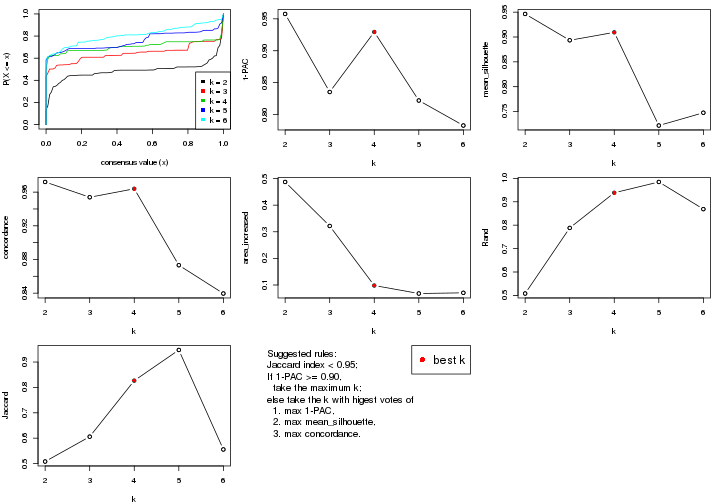
The numeric values for all these statistics can be obtained by get_stats().
get_stats(res)
#> k 1-PAC mean_silhouette concordance area_increased Rand Jaccard
#> 2 2 0.958 0.946 0.972 0.4872 0.508 0.508
#> 3 3 0.835 0.893 0.954 0.3218 0.788 0.606
#> 4 4 0.929 0.909 0.964 0.0980 0.939 0.827
#> 5 5 0.822 0.722 0.873 0.0680 0.985 0.948
#> 6 6 0.783 0.748 0.840 0.0706 0.869 0.556
suggest_best_k() suggests the best \(k\) based on these statistics. The rules are as follows:
suggest_best_k(res)
#> [1] 4
#> attr(,"optional")
#> [1] 2
There is also optional best \(k\) = 2 that is worth to check.
Following shows the table of the partitions (You need to click the show/hide
code output link to see it). The membership matrix (columns with name p*)
is inferred by
clue::cl_consensus()
function with the SE method. Basically the value in the membership matrix
represents the probability to belong to a certain group. The finall class
label for an item is determined with the group with highest probability it
belongs to.
In get_classes() function, the entropy is calculated from the membership
matrix and the silhouette score is calculated from the consensus matrix.
cbind(get_classes(res, k = 2), get_membership(res, k = 2))
#> class entropy silhouette p1 p2
#> GSM52556 2 0.0000 0.952 0.000 1.000
#> GSM52557 2 0.8327 0.656 0.264 0.736
#> GSM52558 1 0.4298 0.912 0.912 0.088
#> GSM52559 2 0.0000 0.952 0.000 1.000
#> GSM52560 2 0.0000 0.952 0.000 1.000
#> GSM52561 2 0.5059 0.872 0.112 0.888
#> GSM52562 1 0.1414 0.977 0.980 0.020
#> GSM52563 2 0.0672 0.949 0.008 0.992
#> GSM52564 1 0.0000 0.984 1.000 0.000
#> GSM52565 1 0.0938 0.979 0.988 0.012
#> GSM52566 2 0.0000 0.952 0.000 1.000
#> GSM52567 1 0.2043 0.972 0.968 0.032
#> GSM52568 2 0.9580 0.422 0.380 0.620
#> GSM52569 1 0.2236 0.970 0.964 0.036
#> GSM52570 1 0.0938 0.979 0.988 0.012
#> GSM52571 1 0.0000 0.984 1.000 0.000
#> GSM52572 1 0.0000 0.984 1.000 0.000
#> GSM52573 2 0.0938 0.949 0.012 0.988
#> GSM52574 2 0.0938 0.949 0.012 0.988
#> GSM52575 2 0.0938 0.949 0.012 0.988
#> GSM52576 2 0.4939 0.877 0.108 0.892
#> GSM52577 2 0.0938 0.949 0.012 0.988
#> GSM52578 2 0.0000 0.952 0.000 1.000
#> GSM52579 2 0.0000 0.952 0.000 1.000
#> GSM52580 1 0.0000 0.984 1.000 0.000
#> GSM52581 1 0.0000 0.984 1.000 0.000
#> GSM52582 2 0.0938 0.949 0.012 0.988
#> GSM52583 1 0.1633 0.973 0.976 0.024
#> GSM52584 1 0.0000 0.984 1.000 0.000
#> GSM52585 1 0.0000 0.984 1.000 0.000
#> GSM52586 1 0.0000 0.984 1.000 0.000
#> GSM52587 2 0.0000 0.952 0.000 1.000
#> GSM52588 1 0.3114 0.941 0.944 0.056
#> GSM52589 2 0.3584 0.914 0.068 0.932
#> GSM52590 1 0.1414 0.976 0.980 0.020
#> GSM52591 1 0.0000 0.984 1.000 0.000
#> GSM52592 1 0.0000 0.984 1.000 0.000
#> GSM52593 1 0.0000 0.984 1.000 0.000
#> GSM52594 1 0.0000 0.984 1.000 0.000
#> GSM52595 1 0.0000 0.984 1.000 0.000
#> GSM52596 1 0.0000 0.984 1.000 0.000
#> GSM52597 1 0.0000 0.984 1.000 0.000
#> GSM52598 1 0.0000 0.984 1.000 0.000
#> GSM52599 1 0.0000 0.984 1.000 0.000
#> GSM52600 1 0.0376 0.982 0.996 0.004
#> GSM52601 1 0.0000 0.984 1.000 0.000
#> GSM52602 1 0.4298 0.921 0.912 0.088
#> GSM52603 1 0.2236 0.970 0.964 0.036
#> GSM52604 1 0.2423 0.967 0.960 0.040
#> GSM52605 1 0.2236 0.970 0.964 0.036
#> GSM52606 2 0.0376 0.951 0.004 0.996
#> GSM52607 2 0.0000 0.952 0.000 1.000
#> GSM52608 2 0.0000 0.952 0.000 1.000
#> GSM52609 2 0.0000 0.952 0.000 1.000
cbind(get_classes(res, k = 3), get_membership(res, k = 3))
#> class entropy silhouette p1 p2 p3
#> GSM52556 2 0.0000 0.963 0.000 1.000 0.000
#> GSM52557 2 0.0000 0.963 0.000 1.000 0.000
#> GSM52558 2 0.5785 0.469 0.332 0.668 0.000
#> GSM52559 2 0.0000 0.963 0.000 1.000 0.000
#> GSM52560 2 0.0000 0.963 0.000 1.000 0.000
#> GSM52561 3 0.7890 0.203 0.056 0.432 0.512
#> GSM52562 2 0.0000 0.963 0.000 1.000 0.000
#> GSM52563 2 0.0000 0.963 0.000 1.000 0.000
#> GSM52564 1 0.0000 0.966 1.000 0.000 0.000
#> GSM52565 2 0.0000 0.963 0.000 1.000 0.000
#> GSM52566 2 0.0000 0.963 0.000 1.000 0.000
#> GSM52567 2 0.0000 0.963 0.000 1.000 0.000
#> GSM52568 2 0.0000 0.963 0.000 1.000 0.000
#> GSM52569 2 0.0000 0.963 0.000 1.000 0.000
#> GSM52570 2 0.0000 0.963 0.000 1.000 0.000
#> GSM52571 1 0.0000 0.966 1.000 0.000 0.000
#> GSM52572 1 0.0000 0.966 1.000 0.000 0.000
#> GSM52573 3 0.0000 0.900 0.000 0.000 1.000
#> GSM52574 3 0.0000 0.900 0.000 0.000 1.000
#> GSM52575 3 0.0000 0.900 0.000 0.000 1.000
#> GSM52576 3 0.4555 0.732 0.200 0.000 0.800
#> GSM52577 3 0.0592 0.893 0.012 0.000 0.988
#> GSM52578 3 0.0000 0.900 0.000 0.000 1.000
#> GSM52579 3 0.0747 0.891 0.000 0.016 0.984
#> GSM52580 1 0.0000 0.966 1.000 0.000 0.000
#> GSM52581 1 0.0424 0.961 0.992 0.008 0.000
#> GSM52582 3 0.0000 0.900 0.000 0.000 1.000
#> GSM52583 1 0.0424 0.961 0.992 0.000 0.008
#> GSM52584 1 0.0000 0.966 1.000 0.000 0.000
#> GSM52585 1 0.0000 0.966 1.000 0.000 0.000
#> GSM52586 1 0.0000 0.966 1.000 0.000 0.000
#> GSM52587 3 0.6215 0.293 0.000 0.428 0.572
#> GSM52588 1 0.0000 0.966 1.000 0.000 0.000
#> GSM52589 3 0.4291 0.756 0.180 0.000 0.820
#> GSM52590 1 0.1643 0.934 0.956 0.044 0.000
#> GSM52591 1 0.0000 0.966 1.000 0.000 0.000
#> GSM52592 1 0.0000 0.966 1.000 0.000 0.000
#> GSM52593 1 0.0000 0.966 1.000 0.000 0.000
#> GSM52594 1 0.0000 0.966 1.000 0.000 0.000
#> GSM52595 1 0.0000 0.966 1.000 0.000 0.000
#> GSM52596 1 0.0000 0.966 1.000 0.000 0.000
#> GSM52597 1 0.0000 0.966 1.000 0.000 0.000
#> GSM52598 1 0.0000 0.966 1.000 0.000 0.000
#> GSM52599 1 0.0000 0.966 1.000 0.000 0.000
#> GSM52600 1 0.0000 0.966 1.000 0.000 0.000
#> GSM52601 1 0.0000 0.966 1.000 0.000 0.000
#> GSM52602 1 0.4915 0.783 0.804 0.012 0.184
#> GSM52603 1 0.4629 0.776 0.808 0.188 0.004
#> GSM52604 1 0.5473 0.802 0.808 0.052 0.140
#> GSM52605 1 0.4629 0.776 0.808 0.188 0.004
#> GSM52606 3 0.0000 0.900 0.000 0.000 1.000
#> GSM52607 3 0.0000 0.900 0.000 0.000 1.000
#> GSM52608 3 0.0000 0.900 0.000 0.000 1.000
#> GSM52609 3 0.0000 0.900 0.000 0.000 1.000
cbind(get_classes(res, k = 4), get_membership(res, k = 4))
#> class entropy silhouette p1 p2 p3 p4
#> GSM52556 2 0.0000 0.958 0.000 1.000 0.000 0.000
#> GSM52557 2 0.0000 0.958 0.000 1.000 0.000 0.000
#> GSM52558 2 0.4661 0.423 0.348 0.652 0.000 0.000
#> GSM52559 2 0.0000 0.958 0.000 1.000 0.000 0.000
#> GSM52560 2 0.0000 0.958 0.000 1.000 0.000 0.000
#> GSM52561 3 0.6567 0.361 0.076 0.360 0.560 0.004
#> GSM52562 2 0.0000 0.958 0.000 1.000 0.000 0.000
#> GSM52563 2 0.0000 0.958 0.000 1.000 0.000 0.000
#> GSM52564 1 0.0376 0.977 0.992 0.004 0.000 0.004
#> GSM52565 2 0.0000 0.958 0.000 1.000 0.000 0.000
#> GSM52566 2 0.0000 0.958 0.000 1.000 0.000 0.000
#> GSM52567 2 0.0000 0.958 0.000 1.000 0.000 0.000
#> GSM52568 2 0.0000 0.958 0.000 1.000 0.000 0.000
#> GSM52569 2 0.0000 0.958 0.000 1.000 0.000 0.000
#> GSM52570 2 0.0000 0.958 0.000 1.000 0.000 0.000
#> GSM52571 1 0.0000 0.980 1.000 0.000 0.000 0.000
#> GSM52572 1 0.0188 0.979 0.996 0.000 0.000 0.004
#> GSM52573 3 0.0000 0.901 0.000 0.000 1.000 0.000
#> GSM52574 3 0.0000 0.901 0.000 0.000 1.000 0.000
#> GSM52575 3 0.0000 0.901 0.000 0.000 1.000 0.000
#> GSM52576 3 0.2647 0.780 0.120 0.000 0.880 0.000
#> GSM52577 3 0.0336 0.898 0.008 0.000 0.992 0.000
#> GSM52578 3 0.0000 0.901 0.000 0.000 1.000 0.000
#> GSM52579 3 0.0336 0.898 0.000 0.008 0.992 0.000
#> GSM52580 1 0.0469 0.975 0.988 0.000 0.000 0.012
#> GSM52581 1 0.0804 0.970 0.980 0.008 0.000 0.012
#> GSM52582 3 0.0469 0.896 0.000 0.000 0.988 0.012
#> GSM52583 1 0.0937 0.966 0.976 0.000 0.012 0.012
#> GSM52584 1 0.0469 0.975 0.988 0.000 0.000 0.012
#> GSM52585 1 0.0469 0.975 0.988 0.000 0.000 0.012
#> GSM52586 1 0.0188 0.979 0.996 0.000 0.000 0.004
#> GSM52587 3 0.5183 0.337 0.000 0.408 0.584 0.008
#> GSM52588 1 0.0000 0.980 1.000 0.000 0.000 0.000
#> GSM52589 3 0.2589 0.793 0.116 0.000 0.884 0.000
#> GSM52590 1 0.4857 0.511 0.668 0.008 0.000 0.324
#> GSM52591 1 0.0000 0.980 1.000 0.000 0.000 0.000
#> GSM52592 1 0.0000 0.980 1.000 0.000 0.000 0.000
#> GSM52593 1 0.0000 0.980 1.000 0.000 0.000 0.000
#> GSM52594 1 0.0000 0.980 1.000 0.000 0.000 0.000
#> GSM52595 1 0.0000 0.980 1.000 0.000 0.000 0.000
#> GSM52596 1 0.0000 0.980 1.000 0.000 0.000 0.000
#> GSM52597 1 0.0000 0.980 1.000 0.000 0.000 0.000
#> GSM52598 1 0.0000 0.980 1.000 0.000 0.000 0.000
#> GSM52599 1 0.0000 0.980 1.000 0.000 0.000 0.000
#> GSM52600 1 0.0000 0.980 1.000 0.000 0.000 0.000
#> GSM52601 1 0.0000 0.980 1.000 0.000 0.000 0.000
#> GSM52602 4 0.0524 0.993 0.000 0.004 0.008 0.988
#> GSM52603 4 0.0469 0.993 0.000 0.012 0.000 0.988
#> GSM52604 4 0.0524 0.993 0.000 0.004 0.008 0.988
#> GSM52605 4 0.0469 0.993 0.000 0.012 0.000 0.988
#> GSM52606 3 0.0000 0.901 0.000 0.000 1.000 0.000
#> GSM52607 3 0.0000 0.901 0.000 0.000 1.000 0.000
#> GSM52608 3 0.0000 0.901 0.000 0.000 1.000 0.000
#> GSM52609 3 0.0000 0.901 0.000 0.000 1.000 0.000
cbind(get_classes(res, k = 5), get_membership(res, k = 5))
#> class entropy silhouette p1 p2 p3 p4 p5
#> GSM52556 2 0.1410 0.695 0.000 0.940 0.060 0.000 0.000
#> GSM52557 2 0.4307 -0.931 0.000 0.500 0.000 0.500 0.000
#> GSM52558 4 0.5173 0.858 0.040 0.460 0.000 0.500 0.000
#> GSM52559 2 0.2648 0.468 0.000 0.848 0.000 0.152 0.000
#> GSM52560 2 0.3707 -0.123 0.000 0.716 0.000 0.284 0.000
#> GSM52561 3 0.7547 -0.181 0.072 0.332 0.432 0.164 0.000
#> GSM52562 4 0.4307 0.847 0.000 0.500 0.000 0.500 0.000
#> GSM52563 2 0.0000 0.750 0.000 1.000 0.000 0.000 0.000
#> GSM52564 1 0.0566 0.863 0.984 0.004 0.000 0.012 0.000
#> GSM52565 2 0.1270 0.755 0.000 0.948 0.000 0.052 0.000
#> GSM52566 2 0.0290 0.746 0.000 0.992 0.000 0.008 0.000
#> GSM52567 2 0.1270 0.755 0.000 0.948 0.000 0.052 0.000
#> GSM52568 2 0.0290 0.746 0.000 0.992 0.000 0.008 0.000
#> GSM52569 2 0.1270 0.755 0.000 0.948 0.000 0.052 0.000
#> GSM52570 2 0.1270 0.755 0.000 0.948 0.000 0.052 0.000
#> GSM52571 1 0.0510 0.864 0.984 0.000 0.000 0.016 0.000
#> GSM52572 1 0.0404 0.864 0.988 0.000 0.000 0.012 0.000
#> GSM52573 3 0.0000 0.864 0.000 0.000 1.000 0.000 0.000
#> GSM52574 3 0.0000 0.864 0.000 0.000 1.000 0.000 0.000
#> GSM52575 3 0.0000 0.864 0.000 0.000 1.000 0.000 0.000
#> GSM52576 3 0.2280 0.761 0.120 0.000 0.880 0.000 0.000
#> GSM52577 3 0.0162 0.863 0.004 0.000 0.996 0.000 0.000
#> GSM52578 3 0.0162 0.863 0.000 0.000 0.996 0.004 0.000
#> GSM52579 3 0.0162 0.863 0.000 0.004 0.996 0.000 0.000
#> GSM52580 1 0.4249 0.573 0.568 0.000 0.000 0.432 0.000
#> GSM52581 1 0.4249 0.573 0.568 0.000 0.000 0.432 0.000
#> GSM52582 3 0.4227 0.485 0.000 0.000 0.580 0.420 0.000
#> GSM52583 1 0.4256 0.571 0.564 0.000 0.000 0.436 0.000
#> GSM52584 1 0.4249 0.573 0.568 0.000 0.000 0.432 0.000
#> GSM52585 1 0.4249 0.573 0.568 0.000 0.000 0.432 0.000
#> GSM52586 1 0.0404 0.864 0.988 0.000 0.000 0.012 0.000
#> GSM52587 3 0.5867 0.401 0.000 0.100 0.496 0.404 0.000
#> GSM52588 1 0.0510 0.864 0.984 0.000 0.000 0.016 0.000
#> GSM52589 3 0.2624 0.766 0.116 0.000 0.872 0.012 0.000
#> GSM52590 1 0.4268 0.338 0.556 0.000 0.000 0.000 0.444
#> GSM52591 1 0.0404 0.864 0.988 0.000 0.000 0.012 0.000
#> GSM52592 1 0.0404 0.864 0.988 0.000 0.000 0.012 0.000
#> GSM52593 1 0.0510 0.864 0.984 0.000 0.000 0.016 0.000
#> GSM52594 1 0.0510 0.864 0.984 0.000 0.000 0.016 0.000
#> GSM52595 1 0.0510 0.864 0.984 0.000 0.000 0.016 0.000
#> GSM52596 1 0.0510 0.864 0.984 0.000 0.000 0.016 0.000
#> GSM52597 1 0.0404 0.864 0.988 0.000 0.000 0.012 0.000
#> GSM52598 1 0.0404 0.864 0.988 0.000 0.000 0.012 0.000
#> GSM52599 1 0.0510 0.864 0.984 0.000 0.000 0.016 0.000
#> GSM52600 1 0.0404 0.864 0.988 0.000 0.000 0.012 0.000
#> GSM52601 1 0.0000 0.865 1.000 0.000 0.000 0.000 0.000
#> GSM52602 5 0.0000 1.000 0.000 0.000 0.000 0.000 1.000
#> GSM52603 5 0.0000 1.000 0.000 0.000 0.000 0.000 1.000
#> GSM52604 5 0.0000 1.000 0.000 0.000 0.000 0.000 1.000
#> GSM52605 5 0.0000 1.000 0.000 0.000 0.000 0.000 1.000
#> GSM52606 3 0.0000 0.864 0.000 0.000 1.000 0.000 0.000
#> GSM52607 3 0.0000 0.864 0.000 0.000 1.000 0.000 0.000
#> GSM52608 3 0.0000 0.864 0.000 0.000 1.000 0.000 0.000
#> GSM52609 3 0.0000 0.864 0.000 0.000 1.000 0.000 0.000
cbind(get_classes(res, k = 6), get_membership(res, k = 6))
#> class entropy silhouette p1 p2 p3 p4 p5 p6
#> GSM52556 2 0.4868 0.7600 0.000 0.592 0.076 0.000 0.00 0.332
#> GSM52557 6 0.0000 0.5839 0.000 0.000 0.000 0.000 0.00 1.000
#> GSM52558 6 0.0632 0.5756 0.000 0.024 0.000 0.000 0.00 0.976
#> GSM52559 6 0.3782 -0.3661 0.000 0.412 0.000 0.000 0.00 0.588
#> GSM52560 6 0.3151 0.2196 0.000 0.252 0.000 0.000 0.00 0.748
#> GSM52561 6 0.7995 0.2377 0.064 0.248 0.224 0.084 0.00 0.380
#> GSM52562 6 0.0000 0.5839 0.000 0.000 0.000 0.000 0.00 1.000
#> GSM52563 2 0.4199 0.8067 0.000 0.600 0.000 0.020 0.00 0.380
#> GSM52564 1 0.4775 0.7606 0.632 0.284 0.000 0.084 0.00 0.000
#> GSM52565 2 0.5000 0.8489 0.000 0.580 0.000 0.088 0.00 0.332
#> GSM52566 2 0.3774 0.7862 0.000 0.592 0.000 0.000 0.00 0.408
#> GSM52567 2 0.5000 0.8489 0.000 0.580 0.000 0.088 0.00 0.332
#> GSM52568 2 0.4219 0.7982 0.000 0.592 0.000 0.020 0.00 0.388
#> GSM52569 2 0.5000 0.8489 0.000 0.580 0.000 0.088 0.00 0.332
#> GSM52570 2 0.5000 0.8489 0.000 0.580 0.000 0.088 0.00 0.332
#> GSM52571 1 0.1075 0.7826 0.952 0.048 0.000 0.000 0.00 0.000
#> GSM52572 1 0.3330 0.8103 0.716 0.284 0.000 0.000 0.00 0.000
#> GSM52573 3 0.0000 0.9407 0.000 0.000 1.000 0.000 0.00 0.000
#> GSM52574 3 0.0000 0.9407 0.000 0.000 1.000 0.000 0.00 0.000
#> GSM52575 3 0.0000 0.9407 0.000 0.000 1.000 0.000 0.00 0.000
#> GSM52576 3 0.3593 0.7780 0.068 0.040 0.828 0.064 0.00 0.000
#> GSM52577 3 0.0000 0.9407 0.000 0.000 1.000 0.000 0.00 0.000
#> GSM52578 3 0.0146 0.9382 0.000 0.000 0.996 0.004 0.00 0.000
#> GSM52579 3 0.0260 0.9341 0.000 0.000 0.992 0.000 0.00 0.008
#> GSM52580 4 0.1714 0.8166 0.092 0.000 0.000 0.908 0.00 0.000
#> GSM52581 4 0.1663 0.8149 0.088 0.000 0.000 0.912 0.00 0.000
#> GSM52582 4 0.2562 0.7074 0.000 0.000 0.172 0.828 0.00 0.000
#> GSM52583 4 0.2562 0.8079 0.172 0.000 0.000 0.828 0.00 0.000
#> GSM52584 4 0.3563 0.5766 0.336 0.000 0.000 0.664 0.00 0.000
#> GSM52585 4 0.2562 0.8079 0.172 0.000 0.000 0.828 0.00 0.000
#> GSM52586 1 0.3330 0.8103 0.716 0.284 0.000 0.000 0.00 0.000
#> GSM52587 4 0.3161 0.7006 0.000 0.028 0.136 0.828 0.00 0.008
#> GSM52588 1 0.2660 0.7236 0.868 0.048 0.000 0.084 0.00 0.000
#> GSM52589 3 0.5784 0.4314 0.300 0.048 0.568 0.084 0.00 0.000
#> GSM52590 5 0.3828 0.0885 0.440 0.000 0.000 0.000 0.56 0.000
#> GSM52591 1 0.3330 0.8103 0.716 0.284 0.000 0.000 0.00 0.000
#> GSM52592 1 0.2003 0.8178 0.884 0.116 0.000 0.000 0.00 0.000
#> GSM52593 1 0.0000 0.7971 1.000 0.000 0.000 0.000 0.00 0.000
#> GSM52594 1 0.0000 0.7971 1.000 0.000 0.000 0.000 0.00 0.000
#> GSM52595 1 0.0000 0.7971 1.000 0.000 0.000 0.000 0.00 0.000
#> GSM52596 1 0.2136 0.7559 0.904 0.048 0.000 0.048 0.00 0.000
#> GSM52597 1 0.3330 0.8103 0.716 0.284 0.000 0.000 0.00 0.000
#> GSM52598 1 0.3547 0.8083 0.668 0.332 0.000 0.000 0.00 0.000
#> GSM52599 1 0.1141 0.7848 0.948 0.052 0.000 0.000 0.00 0.000
#> GSM52600 1 0.3547 0.8083 0.668 0.332 0.000 0.000 0.00 0.000
#> GSM52601 1 0.3151 0.8182 0.748 0.252 0.000 0.000 0.00 0.000
#> GSM52602 5 0.0000 0.8409 0.000 0.000 0.000 0.000 1.00 0.000
#> GSM52603 5 0.0000 0.8409 0.000 0.000 0.000 0.000 1.00 0.000
#> GSM52604 5 0.0000 0.8409 0.000 0.000 0.000 0.000 1.00 0.000
#> GSM52605 5 0.0000 0.8409 0.000 0.000 0.000 0.000 1.00 0.000
#> GSM52606 3 0.0000 0.9407 0.000 0.000 1.000 0.000 0.00 0.000
#> GSM52607 3 0.0000 0.9407 0.000 0.000 1.000 0.000 0.00 0.000
#> GSM52608 3 0.0000 0.9407 0.000 0.000 1.000 0.000 0.00 0.000
#> GSM52609 3 0.0000 0.9407 0.000 0.000 1.000 0.000 0.00 0.000
Heatmaps for the consensus matrix. It visualizes the probability of two samples to be in a same group.
consensus_heatmap(res, k = 2)
consensus_heatmap(res, k = 3)
consensus_heatmap(res, k = 4)
consensus_heatmap(res, k = 5)
consensus_heatmap(res, k = 6)
Heatmaps for the membership of samples in all partitions to see how consistent they are:
membership_heatmap(res, k = 2)
membership_heatmap(res, k = 3)
membership_heatmap(res, k = 4)
membership_heatmap(res, k = 5)
membership_heatmap(res, k = 6)
As soon as we have had the classes for columns, we can look for signatures which are significantly different between classes which can be candidate marks for certain classes. Following are the heatmaps for signatures.
Signature heatmaps where rows are scaled:
get_signatures(res, k = 2)
get_signatures(res, k = 3)
get_signatures(res, k = 4)
get_signatures(res, k = 5)
get_signatures(res, k = 6)

Signature heatmaps where rows are not scaled:
get_signatures(res, k = 2, scale_rows = FALSE)
get_signatures(res, k = 3, scale_rows = FALSE)
get_signatures(res, k = 4, scale_rows = FALSE)
get_signatures(res, k = 5, scale_rows = FALSE)
get_signatures(res, k = 6, scale_rows = FALSE)
Compare the overlap of signatures from different k:
compare_signatures(res)
get_signature() returns a data frame invisibly. TO get the list of signatures, the function
call should be assigned to a variable explicitly. In following code, if plot argument is set
to FALSE, no heatmap is plotted while only the differential analysis is performed.
# code only for demonstration
tb = get_signature(res, k = ..., plot = FALSE)
An example of the output of tb is:
#> which_row fdr mean_1 mean_2 scaled_mean_1 scaled_mean_2 km
#> 1 38 0.042760348 8.373488 9.131774 -0.5533452 0.5164555 1
#> 2 40 0.018707592 7.106213 8.469186 -0.6173731 0.5762149 1
#> 3 55 0.019134737 10.221463 11.207825 -0.6159697 0.5749050 1
#> 4 59 0.006059896 5.921854 7.869574 -0.6899429 0.6439467 1
#> 5 60 0.018055526 8.928898 10.211722 -0.6204761 0.5791110 1
#> 6 98 0.009384629 15.714769 14.887706 0.6635654 -0.6193277 2
...
The columns in tb are:
which_row: row indices corresponding to the input matrix.fdr: FDR for the differential test. mean_x: The mean value in group x.scaled_mean_x: The mean value in group x after rows are scaled.km: Row groups if k-means clustering is applied to rows.UMAP plot which shows how samples are separated.
dimension_reduction(res, k = 2, method = "UMAP")
dimension_reduction(res, k = 3, method = "UMAP")
dimension_reduction(res, k = 4, method = "UMAP")
dimension_reduction(res, k = 5, method = "UMAP")
dimension_reduction(res, k = 6, method = "UMAP")
Following heatmap shows how subgroups are split when increasing k:
collect_classes(res)
Test correlation between subgroups and known annotations. If the known annotation is numeric, one-way ANOVA test is applied, and if the known annotation is discrete, chi-squared contingency table test is applied.
test_to_known_factors(res)
#> n disease.state(p) tissue(p) k
#> MAD:pam 53 5.44e-01 8.87e-03 2
#> MAD:pam 51 1.06e-10 4.68e-05 3
#> MAD:pam 51 5.74e-10 1.15e-07 4
#> MAD:pam 47 1.94e-08 1.44e-10 5
#> MAD:pam 49 2.39e-08 6.96e-13 6
If matrix rows can be associated to genes, consider to use functional_enrichment(res,
...) to perform function enrichment for the signature genes. See this vignette for more detailed explanations.
The object with results only for a single top-value method and a single partition method can be extracted as:
res = res_list["MAD", "mclust"]
# you can also extract it by
# res = res_list["MAD:mclust"]
A summary of res and all the functions that can be applied to it:
res
#> A 'ConsensusPartition' object with k = 2, 3, 4, 5, 6.
#> On a matrix with 21168 rows and 54 columns.
#> Top rows (1000, 2000, 3000, 4000, 5000) are extracted by 'MAD' method.
#> Subgroups are detected by 'mclust' method.
#> Performed in total 1250 partitions by row resampling.
#> Best k for subgroups seems to be 5.
#>
#> Following methods can be applied to this 'ConsensusPartition' object:
#> [1] "cola_report" "collect_classes" "collect_plots"
#> [4] "collect_stats" "colnames" "compare_signatures"
#> [7] "consensus_heatmap" "dimension_reduction" "functional_enrichment"
#> [10] "get_anno_col" "get_anno" "get_classes"
#> [13] "get_consensus" "get_matrix" "get_membership"
#> [16] "get_param" "get_signatures" "get_stats"
#> [19] "is_best_k" "is_stable_k" "membership_heatmap"
#> [22] "ncol" "nrow" "plot_ecdf"
#> [25] "rownames" "select_partition_number" "show"
#> [28] "suggest_best_k" "test_to_known_factors"
collect_plots() function collects all the plots made from res for all k (number of partitions)
into one single page to provide an easy and fast comparison between different k.
collect_plots(res)
The plots are:
k and the heatmap of
predicted classes for each k.k.k.k.All the plots in panels can be made by individual functions and they are plotted later in this section.
select_partition_number() produces several plots showing different
statistics for choosing “optimized” k. There are following statistics:
k;k, the area increased is defined as \(A_k - A_{k-1}\).The detailed explanations of these statistics can be found in the cola vignette.
Generally speaking, lower PAC score, higher mean silhouette score or higher
concordance corresponds to better partition. Rand index and Jaccard index
measure how similar the current partition is compared to partition with k-1.
If they are too similar, we won't accept k is better than k-1.
select_partition_number(res)
The numeric values for all these statistics can be obtained by get_stats().
get_stats(res)
#> k 1-PAC mean_silhouette concordance area_increased Rand Jaccard
#> 2 2 0.743 0.799 0.915 0.3893 0.609 0.609
#> 3 3 0.411 0.773 0.795 0.5434 0.491 0.317
#> 4 4 0.684 0.797 0.866 0.1696 0.752 0.450
#> 5 5 0.899 0.904 0.945 0.0824 0.850 0.550
#> 6 6 0.816 0.768 0.848 0.0567 0.980 0.917
suggest_best_k() suggests the best \(k\) based on these statistics. The rules are as follows:
suggest_best_k(res)
#> [1] 5
Following shows the table of the partitions (You need to click the show/hide
code output link to see it). The membership matrix (columns with name p*)
is inferred by
clue::cl_consensus()
function with the SE method. Basically the value in the membership matrix
represents the probability to belong to a certain group. The finall class
label for an item is determined with the group with highest probability it
belongs to.
In get_classes() function, the entropy is calculated from the membership
matrix and the silhouette score is calculated from the consensus matrix.
cbind(get_classes(res, k = 2), get_membership(res, k = 2))
#> class entropy silhouette p1 p2
#> GSM52556 2 0.000 0.9104 0.000 1.000
#> GSM52557 2 0.000 0.9104 0.000 1.000
#> GSM52558 2 0.000 0.9104 0.000 1.000
#> GSM52559 2 0.000 0.9104 0.000 1.000
#> GSM52560 2 0.000 0.9104 0.000 1.000
#> GSM52561 2 0.242 0.9189 0.040 0.960
#> GSM52562 2 0.000 0.9104 0.000 1.000
#> GSM52563 2 0.000 0.9104 0.000 1.000
#> GSM52564 2 0.881 0.5737 0.300 0.700
#> GSM52565 2 0.000 0.9104 0.000 1.000
#> GSM52566 2 0.000 0.9104 0.000 1.000
#> GSM52567 2 0.000 0.9104 0.000 1.000
#> GSM52568 2 0.000 0.9104 0.000 1.000
#> GSM52569 2 0.000 0.9104 0.000 1.000
#> GSM52570 2 0.000 0.9104 0.000 1.000
#> GSM52571 1 0.118 0.8572 0.984 0.016
#> GSM52572 1 0.992 0.1669 0.552 0.448
#> GSM52573 2 0.242 0.9189 0.040 0.960
#> GSM52574 2 0.242 0.9189 0.040 0.960
#> GSM52575 2 0.242 0.9189 0.040 0.960
#> GSM52576 2 0.295 0.9128 0.052 0.948
#> GSM52577 2 0.278 0.9153 0.048 0.952
#> GSM52578 2 0.242 0.9189 0.040 0.960
#> GSM52579 2 0.242 0.9189 0.040 0.960
#> GSM52580 2 0.714 0.7513 0.196 0.804
#> GSM52581 2 0.494 0.8604 0.108 0.892
#> GSM52582 2 0.242 0.9189 0.040 0.960
#> GSM52583 1 0.998 0.0790 0.528 0.472
#> GSM52584 2 0.969 0.3393 0.396 0.604
#> GSM52585 2 0.260 0.9169 0.044 0.956
#> GSM52586 2 0.988 0.2041 0.436 0.564
#> GSM52587 2 0.242 0.9189 0.040 0.960
#> GSM52588 1 0.278 0.8406 0.952 0.048
#> GSM52589 2 0.900 0.5464 0.316 0.684
#> GSM52590 2 0.204 0.9189 0.032 0.968
#> GSM52591 1 0.998 0.0677 0.524 0.476
#> GSM52592 1 0.000 0.8603 1.000 0.000
#> GSM52593 1 0.000 0.8603 1.000 0.000
#> GSM52594 1 0.000 0.8603 1.000 0.000
#> GSM52595 1 0.000 0.8603 1.000 0.000
#> GSM52596 1 0.000 0.8603 1.000 0.000
#> GSM52597 2 1.000 -0.0575 0.500 0.500
#> GSM52598 1 0.358 0.8251 0.932 0.068
#> GSM52599 1 0.000 0.8603 1.000 0.000
#> GSM52600 1 0.000 0.8603 1.000 0.000
#> GSM52601 1 0.141 0.8556 0.980 0.020
#> GSM52602 2 0.204 0.9189 0.032 0.968
#> GSM52603 2 0.204 0.9189 0.032 0.968
#> GSM52604 2 0.204 0.9189 0.032 0.968
#> GSM52605 2 0.204 0.9189 0.032 0.968
#> GSM52606 2 0.242 0.9189 0.040 0.960
#> GSM52607 2 0.242 0.9189 0.040 0.960
#> GSM52608 2 0.242 0.9189 0.040 0.960
#> GSM52609 2 0.242 0.9189 0.040 0.960
cbind(get_classes(res, k = 3), get_membership(res, k = 3))
#> class entropy silhouette p1 p2 p3
#> GSM52556 2 0.1031 0.9648 0.000 0.976 0.024
#> GSM52557 2 0.0475 0.9875 0.004 0.992 0.004
#> GSM52558 2 0.0475 0.9875 0.004 0.992 0.004
#> GSM52559 2 0.0000 0.9903 0.000 1.000 0.000
#> GSM52560 2 0.0000 0.9903 0.000 1.000 0.000
#> GSM52561 1 0.9294 0.5297 0.484 0.344 0.172
#> GSM52562 2 0.0475 0.9875 0.004 0.992 0.004
#> GSM52563 2 0.0000 0.9903 0.000 1.000 0.000
#> GSM52564 1 0.7960 0.7136 0.656 0.208 0.136
#> GSM52565 2 0.0424 0.9882 0.000 0.992 0.008
#> GSM52566 2 0.0000 0.9903 0.000 1.000 0.000
#> GSM52567 2 0.0424 0.9882 0.000 0.992 0.008
#> GSM52568 2 0.0475 0.9875 0.004 0.992 0.004
#> GSM52569 2 0.0424 0.9882 0.000 0.992 0.008
#> GSM52570 2 0.0424 0.9882 0.000 0.992 0.008
#> GSM52571 1 0.0237 0.7232 0.996 0.000 0.004
#> GSM52572 1 0.6087 0.7432 0.780 0.144 0.076
#> GSM52573 3 0.2846 0.7800 0.020 0.056 0.924
#> GSM52574 3 0.2846 0.7800 0.020 0.056 0.924
#> GSM52575 3 0.5791 0.8010 0.048 0.168 0.784
#> GSM52576 1 0.7878 0.7156 0.668 0.172 0.160
#> GSM52577 1 0.8122 0.7047 0.648 0.184 0.168
#> GSM52578 3 0.6522 0.7655 0.032 0.272 0.696
#> GSM52579 3 0.6161 0.7706 0.020 0.272 0.708
#> GSM52580 1 0.8379 0.6962 0.624 0.208 0.168
#> GSM52581 1 0.8379 0.6962 0.624 0.208 0.168
#> GSM52582 1 0.9535 0.4951 0.488 0.264 0.248
#> GSM52583 1 0.7777 0.7202 0.676 0.164 0.160
#> GSM52584 1 0.7878 0.7179 0.668 0.172 0.160
#> GSM52585 1 0.8933 0.6262 0.556 0.276 0.168
#> GSM52586 1 0.6266 0.7393 0.768 0.156 0.076
#> GSM52587 1 0.9267 0.5593 0.504 0.316 0.180
#> GSM52588 1 0.2384 0.7375 0.936 0.008 0.056
#> GSM52589 1 0.7562 0.7239 0.692 0.160 0.148
#> GSM52590 1 0.9776 -0.0192 0.388 0.232 0.380
#> GSM52591 1 0.6266 0.7393 0.768 0.156 0.076
#> GSM52592 1 0.0747 0.7286 0.984 0.000 0.016
#> GSM52593 1 0.0000 0.7231 1.000 0.000 0.000
#> GSM52594 1 0.0000 0.7231 1.000 0.000 0.000
#> GSM52595 1 0.0000 0.7231 1.000 0.000 0.000
#> GSM52596 1 0.0237 0.7232 0.996 0.000 0.004
#> GSM52597 1 0.6266 0.7404 0.768 0.156 0.076
#> GSM52598 1 0.2590 0.7368 0.924 0.004 0.072
#> GSM52599 1 0.0237 0.7232 0.996 0.000 0.004
#> GSM52600 1 0.1964 0.7211 0.944 0.000 0.056
#> GSM52601 1 0.0237 0.7232 0.996 0.000 0.004
#> GSM52602 3 0.7419 0.7486 0.088 0.232 0.680
#> GSM52603 3 0.7419 0.7486 0.088 0.232 0.680
#> GSM52604 3 0.7419 0.7486 0.088 0.232 0.680
#> GSM52605 3 0.7493 0.7457 0.092 0.232 0.676
#> GSM52606 3 0.5551 0.8039 0.020 0.212 0.768
#> GSM52607 3 0.5253 0.8088 0.020 0.188 0.792
#> GSM52608 3 0.2846 0.7800 0.020 0.056 0.924
#> GSM52609 3 0.2846 0.7800 0.020 0.056 0.924
cbind(get_classes(res, k = 4), get_membership(res, k = 4))
#> class entropy silhouette p1 p2 p3 p4
#> GSM52556 2 0.2589 0.843 0.000 0.884 0.116 0.000
#> GSM52557 2 0.2197 0.923 0.000 0.916 0.004 0.080
#> GSM52558 2 0.2266 0.921 0.000 0.912 0.004 0.084
#> GSM52559 2 0.0000 0.953 0.000 1.000 0.000 0.000
#> GSM52560 2 0.0000 0.953 0.000 1.000 0.000 0.000
#> GSM52561 3 0.8020 0.612 0.232 0.112 0.572 0.084
#> GSM52562 2 0.2197 0.923 0.000 0.916 0.004 0.080
#> GSM52563 2 0.0000 0.953 0.000 1.000 0.000 0.000
#> GSM52564 3 0.7573 0.516 0.344 0.044 0.528 0.084
#> GSM52565 2 0.0469 0.950 0.000 0.988 0.000 0.012
#> GSM52566 2 0.0000 0.953 0.000 1.000 0.000 0.000
#> GSM52567 2 0.0707 0.947 0.000 0.980 0.000 0.020
#> GSM52568 2 0.2197 0.923 0.000 0.916 0.004 0.080
#> GSM52569 2 0.0336 0.951 0.000 0.992 0.000 0.008
#> GSM52570 2 0.0469 0.950 0.000 0.988 0.000 0.012
#> GSM52571 1 0.0000 0.869 1.000 0.000 0.000 0.000
#> GSM52572 1 0.4050 0.782 0.820 0.036 0.144 0.000
#> GSM52573 3 0.0188 0.750 0.000 0.004 0.996 0.000
#> GSM52574 3 0.0188 0.750 0.000 0.004 0.996 0.000
#> GSM52575 3 0.0657 0.757 0.004 0.012 0.984 0.000
#> GSM52576 3 0.5047 0.613 0.316 0.016 0.668 0.000
#> GSM52577 3 0.4711 0.690 0.236 0.024 0.740 0.000
#> GSM52578 3 0.1211 0.755 0.000 0.040 0.960 0.000
#> GSM52579 3 0.1302 0.754 0.000 0.044 0.956 0.000
#> GSM52580 3 0.7412 0.613 0.280 0.044 0.584 0.092
#> GSM52581 3 0.7388 0.613 0.280 0.040 0.584 0.096
#> GSM52582 3 0.1209 0.758 0.004 0.032 0.964 0.000
#> GSM52583 3 0.5400 0.539 0.372 0.020 0.608 0.000
#> GSM52584 3 0.5013 0.649 0.292 0.020 0.688 0.000
#> GSM52585 3 0.7388 0.613 0.280 0.040 0.584 0.096
#> GSM52586 1 0.6602 0.168 0.576 0.036 0.356 0.032
#> GSM52587 3 0.7898 0.607 0.116 0.208 0.592 0.084
#> GSM52588 1 0.2704 0.825 0.876 0.000 0.124 0.000
#> GSM52589 3 0.5452 0.407 0.428 0.016 0.556 0.000
#> GSM52590 4 0.2891 0.992 0.080 0.020 0.004 0.896
#> GSM52591 1 0.3999 0.787 0.824 0.036 0.140 0.000
#> GSM52592 1 0.1305 0.869 0.960 0.000 0.036 0.004
#> GSM52593 1 0.0188 0.867 0.996 0.000 0.000 0.004
#> GSM52594 1 0.0000 0.869 1.000 0.000 0.000 0.000
#> GSM52595 1 0.0000 0.869 1.000 0.000 0.000 0.000
#> GSM52596 1 0.0336 0.868 0.992 0.000 0.008 0.000
#> GSM52597 1 0.4182 0.785 0.820 0.036 0.140 0.004
#> GSM52598 1 0.3052 0.816 0.860 0.000 0.136 0.004
#> GSM52599 1 0.0000 0.869 1.000 0.000 0.000 0.000
#> GSM52600 1 0.1716 0.838 0.936 0.000 0.064 0.000
#> GSM52601 1 0.0188 0.867 0.996 0.000 0.000 0.004
#> GSM52602 4 0.2778 0.994 0.080 0.016 0.004 0.900
#> GSM52603 4 0.2778 0.994 0.080 0.016 0.004 0.900
#> GSM52604 4 0.2778 0.994 0.080 0.016 0.004 0.900
#> GSM52605 4 0.3134 0.982 0.088 0.024 0.004 0.884
#> GSM52606 3 0.0707 0.757 0.000 0.020 0.980 0.000
#> GSM52607 3 0.0592 0.755 0.000 0.016 0.984 0.000
#> GSM52608 3 0.0188 0.750 0.000 0.004 0.996 0.000
#> GSM52609 3 0.0188 0.750 0.000 0.004 0.996 0.000
cbind(get_classes(res, k = 5), get_membership(res, k = 5))
#> class entropy silhouette p1 p2 p3 p4 p5
#> GSM52556 2 0.2127 0.8506 0.000 0.892 0.108 0.000 0.000
#> GSM52557 2 0.2732 0.8623 0.000 0.840 0.000 0.160 0.000
#> GSM52558 2 0.3424 0.7917 0.000 0.760 0.000 0.240 0.000
#> GSM52559 2 0.0000 0.9387 0.000 1.000 0.000 0.000 0.000
#> GSM52560 2 0.0162 0.9383 0.000 0.996 0.000 0.004 0.000
#> GSM52561 4 0.0727 0.6741 0.004 0.012 0.004 0.980 0.000
#> GSM52562 2 0.2773 0.8595 0.000 0.836 0.000 0.164 0.000
#> GSM52563 2 0.0000 0.9387 0.000 1.000 0.000 0.000 0.000
#> GSM52564 4 0.3586 0.8214 0.264 0.000 0.000 0.736 0.000
#> GSM52565 2 0.0510 0.9373 0.000 0.984 0.000 0.016 0.000
#> GSM52566 2 0.0000 0.9387 0.000 1.000 0.000 0.000 0.000
#> GSM52567 2 0.0510 0.9373 0.000 0.984 0.000 0.016 0.000
#> GSM52568 2 0.1043 0.9273 0.000 0.960 0.000 0.040 0.000
#> GSM52569 2 0.0510 0.9373 0.000 0.984 0.000 0.016 0.000
#> GSM52570 2 0.0510 0.9373 0.000 0.984 0.000 0.016 0.000
#> GSM52571 1 0.0162 0.9500 0.996 0.000 0.000 0.004 0.000
#> GSM52572 1 0.0794 0.9413 0.972 0.000 0.000 0.028 0.000
#> GSM52573 3 0.0000 0.9664 0.000 0.000 1.000 0.000 0.000
#> GSM52574 3 0.0000 0.9664 0.000 0.000 1.000 0.000 0.000
#> GSM52575 3 0.1638 0.9086 0.064 0.000 0.932 0.004 0.000
#> GSM52576 1 0.0671 0.9458 0.980 0.000 0.004 0.016 0.000
#> GSM52577 1 0.1300 0.9264 0.956 0.000 0.028 0.016 0.000
#> GSM52578 3 0.1124 0.9547 0.000 0.000 0.960 0.036 0.004
#> GSM52579 3 0.1952 0.9192 0.000 0.000 0.912 0.084 0.004
#> GSM52580 4 0.3689 0.8305 0.256 0.000 0.004 0.740 0.000
#> GSM52581 4 0.3689 0.8305 0.256 0.000 0.004 0.740 0.000
#> GSM52582 3 0.1671 0.9281 0.000 0.000 0.924 0.076 0.000
#> GSM52583 1 0.1197 0.9233 0.952 0.000 0.000 0.048 0.000
#> GSM52584 1 0.1544 0.9028 0.932 0.000 0.000 0.068 0.000
#> GSM52585 4 0.3333 0.8247 0.208 0.000 0.004 0.788 0.000
#> GSM52586 1 0.4235 -0.0246 0.576 0.000 0.000 0.424 0.000
#> GSM52587 4 0.0727 0.6741 0.004 0.012 0.004 0.980 0.000
#> GSM52588 1 0.0290 0.9493 0.992 0.000 0.000 0.008 0.000
#> GSM52589 1 0.0510 0.9469 0.984 0.000 0.000 0.016 0.000
#> GSM52590 5 0.0000 1.0000 0.000 0.000 0.000 0.000 1.000
#> GSM52591 1 0.0794 0.9409 0.972 0.000 0.000 0.028 0.000
#> GSM52592 1 0.0162 0.9500 0.996 0.000 0.000 0.004 0.000
#> GSM52593 1 0.0162 0.9500 0.996 0.000 0.000 0.004 0.000
#> GSM52594 1 0.0162 0.9500 0.996 0.000 0.000 0.004 0.000
#> GSM52595 1 0.0162 0.9500 0.996 0.000 0.000 0.004 0.000
#> GSM52596 1 0.0162 0.9500 0.996 0.000 0.000 0.004 0.000
#> GSM52597 1 0.1410 0.9107 0.940 0.000 0.000 0.060 0.000
#> GSM52598 1 0.0290 0.9493 0.992 0.000 0.000 0.008 0.000
#> GSM52599 1 0.0162 0.9500 0.996 0.000 0.000 0.004 0.000
#> GSM52600 1 0.0000 0.9502 1.000 0.000 0.000 0.000 0.000
#> GSM52601 1 0.0162 0.9500 0.996 0.000 0.000 0.004 0.000
#> GSM52602 5 0.0000 1.0000 0.000 0.000 0.000 0.000 1.000
#> GSM52603 5 0.0000 1.0000 0.000 0.000 0.000 0.000 1.000
#> GSM52604 5 0.0000 1.0000 0.000 0.000 0.000 0.000 1.000
#> GSM52605 5 0.0000 1.0000 0.000 0.000 0.000 0.000 1.000
#> GSM52606 3 0.0290 0.9659 0.000 0.000 0.992 0.008 0.000
#> GSM52607 3 0.0324 0.9660 0.000 0.000 0.992 0.004 0.004
#> GSM52608 3 0.0000 0.9664 0.000 0.000 1.000 0.000 0.000
#> GSM52609 3 0.0000 0.9664 0.000 0.000 1.000 0.000 0.000
cbind(get_classes(res, k = 6), get_membership(res, k = 6))
#> class entropy silhouette p1 p2 p3 p4 p5 p6
#> GSM52556 2 0.3385 0.810 0.000 0.788 0.032 0.000 0.000 0.180
#> GSM52557 2 0.1913 0.805 0.000 0.908 0.000 0.080 0.000 0.012
#> GSM52558 2 0.2112 0.797 0.000 0.896 0.000 0.088 0.000 0.016
#> GSM52559 2 0.2092 0.848 0.000 0.876 0.000 0.000 0.000 0.124
#> GSM52560 2 0.0260 0.832 0.000 0.992 0.000 0.008 0.000 0.000
#> GSM52561 4 0.0622 0.879 0.000 0.008 0.000 0.980 0.000 0.012
#> GSM52562 2 0.1913 0.805 0.000 0.908 0.000 0.080 0.000 0.012
#> GSM52563 2 0.2092 0.848 0.000 0.876 0.000 0.000 0.000 0.124
#> GSM52564 4 0.2945 0.804 0.156 0.000 0.000 0.824 0.000 0.020
#> GSM52565 2 0.3563 0.790 0.000 0.664 0.000 0.000 0.000 0.336
#> GSM52566 2 0.2092 0.848 0.000 0.876 0.000 0.000 0.000 0.124
#> GSM52567 2 0.3563 0.790 0.000 0.664 0.000 0.000 0.000 0.336
#> GSM52568 2 0.1812 0.807 0.000 0.912 0.000 0.080 0.000 0.008
#> GSM52569 2 0.3563 0.790 0.000 0.664 0.000 0.000 0.000 0.336
#> GSM52570 2 0.3563 0.790 0.000 0.664 0.000 0.000 0.000 0.336
#> GSM52571 1 0.0000 0.859 1.000 0.000 0.000 0.000 0.000 0.000
#> GSM52572 1 0.2573 0.801 0.864 0.000 0.000 0.024 0.000 0.112
#> GSM52573 3 0.3868 0.740 0.000 0.000 0.504 0.000 0.000 0.496
#> GSM52574 3 0.3868 0.740 0.000 0.000 0.504 0.000 0.000 0.496
#> GSM52575 3 0.4009 0.634 0.028 0.000 0.684 0.000 0.000 0.288
#> GSM52576 1 0.4494 0.460 0.544 0.000 0.424 0.000 0.000 0.032
#> GSM52577 3 0.4499 -0.275 0.428 0.000 0.540 0.000 0.000 0.032
#> GSM52578 3 0.5312 0.588 0.000 0.000 0.608 0.152 0.004 0.236
#> GSM52579 3 0.5517 0.557 0.000 0.000 0.580 0.184 0.004 0.232
#> GSM52580 4 0.1327 0.916 0.064 0.000 0.000 0.936 0.000 0.000
#> GSM52581 4 0.1471 0.915 0.064 0.000 0.004 0.932 0.000 0.000
#> GSM52582 3 0.3102 0.436 0.000 0.000 0.816 0.156 0.000 0.028
#> GSM52583 1 0.4767 0.578 0.628 0.000 0.316 0.036 0.000 0.020
#> GSM52584 1 0.6172 0.359 0.476 0.000 0.336 0.164 0.000 0.024
#> GSM52585 4 0.1349 0.917 0.056 0.000 0.004 0.940 0.000 0.000
#> GSM52586 1 0.4892 0.526 0.640 0.000 0.000 0.248 0.000 0.112
#> GSM52587 4 0.1003 0.868 0.000 0.020 0.000 0.964 0.000 0.016
#> GSM52588 1 0.0260 0.856 0.992 0.000 0.008 0.000 0.000 0.000
#> GSM52589 1 0.4445 0.502 0.572 0.000 0.396 0.000 0.000 0.032
#> GSM52590 5 0.0000 1.000 0.000 0.000 0.000 0.000 1.000 0.000
#> GSM52591 1 0.2491 0.803 0.868 0.000 0.000 0.020 0.000 0.112
#> GSM52592 1 0.0000 0.859 1.000 0.000 0.000 0.000 0.000 0.000
#> GSM52593 1 0.0000 0.859 1.000 0.000 0.000 0.000 0.000 0.000
#> GSM52594 1 0.0000 0.859 1.000 0.000 0.000 0.000 0.000 0.000
#> GSM52595 1 0.0000 0.859 1.000 0.000 0.000 0.000 0.000 0.000
#> GSM52596 1 0.0000 0.859 1.000 0.000 0.000 0.000 0.000 0.000
#> GSM52597 1 0.2651 0.799 0.860 0.000 0.000 0.028 0.000 0.112
#> GSM52598 1 0.0260 0.857 0.992 0.000 0.000 0.000 0.000 0.008
#> GSM52599 1 0.0000 0.859 1.000 0.000 0.000 0.000 0.000 0.000
#> GSM52600 1 0.0000 0.859 1.000 0.000 0.000 0.000 0.000 0.000
#> GSM52601 1 0.0000 0.859 1.000 0.000 0.000 0.000 0.000 0.000
#> GSM52602 5 0.0000 1.000 0.000 0.000 0.000 0.000 1.000 0.000
#> GSM52603 5 0.0000 1.000 0.000 0.000 0.000 0.000 1.000 0.000
#> GSM52604 5 0.0000 1.000 0.000 0.000 0.000 0.000 1.000 0.000
#> GSM52605 5 0.0000 1.000 0.000 0.000 0.000 0.000 1.000 0.000
#> GSM52606 3 0.3819 0.708 0.000 0.000 0.672 0.012 0.000 0.316
#> GSM52607 3 0.3979 0.739 0.000 0.000 0.540 0.000 0.004 0.456
#> GSM52608 3 0.3869 0.740 0.000 0.000 0.500 0.000 0.000 0.500
#> GSM52609 3 0.3869 0.740 0.000 0.000 0.500 0.000 0.000 0.500
Heatmaps for the consensus matrix. It visualizes the probability of two samples to be in a same group.
consensus_heatmap(res, k = 2)
consensus_heatmap(res, k = 3)
consensus_heatmap(res, k = 4)
consensus_heatmap(res, k = 5)
consensus_heatmap(res, k = 6)
Heatmaps for the membership of samples in all partitions to see how consistent they are:
membership_heatmap(res, k = 2)
membership_heatmap(res, k = 3)
membership_heatmap(res, k = 4)
membership_heatmap(res, k = 5)
membership_heatmap(res, k = 6)

As soon as we have had the classes for columns, we can look for signatures which are significantly different between classes which can be candidate marks for certain classes. Following are the heatmaps for signatures.
Signature heatmaps where rows are scaled:
get_signatures(res, k = 2)
get_signatures(res, k = 3)
get_signatures(res, k = 4)
get_signatures(res, k = 5)
get_signatures(res, k = 6)
Signature heatmaps where rows are not scaled:
get_signatures(res, k = 2, scale_rows = FALSE)

get_signatures(res, k = 3, scale_rows = FALSE)
get_signatures(res, k = 4, scale_rows = FALSE)
get_signatures(res, k = 5, scale_rows = FALSE)
get_signatures(res, k = 6, scale_rows = FALSE)

Compare the overlap of signatures from different k:
compare_signatures(res)
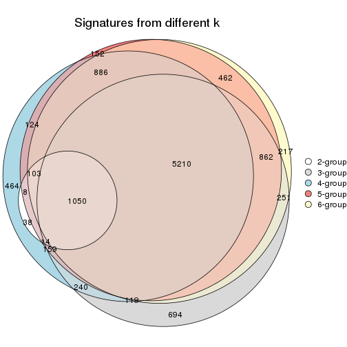
get_signature() returns a data frame invisibly. TO get the list of signatures, the function
call should be assigned to a variable explicitly. In following code, if plot argument is set
to FALSE, no heatmap is plotted while only the differential analysis is performed.
# code only for demonstration
tb = get_signature(res, k = ..., plot = FALSE)
An example of the output of tb is:
#> which_row fdr mean_1 mean_2 scaled_mean_1 scaled_mean_2 km
#> 1 38 0.042760348 8.373488 9.131774 -0.5533452 0.5164555 1
#> 2 40 0.018707592 7.106213 8.469186 -0.6173731 0.5762149 1
#> 3 55 0.019134737 10.221463 11.207825 -0.6159697 0.5749050 1
#> 4 59 0.006059896 5.921854 7.869574 -0.6899429 0.6439467 1
#> 5 60 0.018055526 8.928898 10.211722 -0.6204761 0.5791110 1
#> 6 98 0.009384629 15.714769 14.887706 0.6635654 -0.6193277 2
...
The columns in tb are:
which_row: row indices corresponding to the input matrix.fdr: FDR for the differential test. mean_x: The mean value in group x.scaled_mean_x: The mean value in group x after rows are scaled.km: Row groups if k-means clustering is applied to rows.UMAP plot which shows how samples are separated.
dimension_reduction(res, k = 2, method = "UMAP")
dimension_reduction(res, k = 3, method = "UMAP")
dimension_reduction(res, k = 4, method = "UMAP")
dimension_reduction(res, k = 5, method = "UMAP")
dimension_reduction(res, k = 6, method = "UMAP")
Following heatmap shows how subgroups are split when increasing k:
collect_classes(res)
Test correlation between subgroups and known annotations. If the known annotation is numeric, one-way ANOVA test is applied, and if the known annotation is discrete, chi-squared contingency table test is applied.
test_to_known_factors(res)
#> n disease.state(p) tissue(p) k
#> MAD:mclust 48 2.95e-02 2.57e-02 2
#> MAD:mclust 52 4.59e-10 1.88e-05 3
#> MAD:mclust 52 2.20e-09 1.38e-06 4
#> MAD:mclust 53 2.00e-09 4.20e-06 5
#> MAD:mclust 50 7.58e-09 1.53e-06 6
If matrix rows can be associated to genes, consider to use functional_enrichment(res,
...) to perform function enrichment for the signature genes. See this vignette for more detailed explanations.
The object with results only for a single top-value method and a single partition method can be extracted as:
res = res_list["MAD", "NMF"]
# you can also extract it by
# res = res_list["MAD:NMF"]
A summary of res and all the functions that can be applied to it:
res
#> A 'ConsensusPartition' object with k = 2, 3, 4, 5, 6.
#> On a matrix with 21168 rows and 54 columns.
#> Top rows (1000, 2000, 3000, 4000, 5000) are extracted by 'MAD' method.
#> Subgroups are detected by 'NMF' method.
#> Performed in total 1250 partitions by row resampling.
#> Best k for subgroups seems to be 3.
#>
#> Following methods can be applied to this 'ConsensusPartition' object:
#> [1] "cola_report" "collect_classes" "collect_plots"
#> [4] "collect_stats" "colnames" "compare_signatures"
#> [7] "consensus_heatmap" "dimension_reduction" "functional_enrichment"
#> [10] "get_anno_col" "get_anno" "get_classes"
#> [13] "get_consensus" "get_matrix" "get_membership"
#> [16] "get_param" "get_signatures" "get_stats"
#> [19] "is_best_k" "is_stable_k" "membership_heatmap"
#> [22] "ncol" "nrow" "plot_ecdf"
#> [25] "rownames" "select_partition_number" "show"
#> [28] "suggest_best_k" "test_to_known_factors"
collect_plots() function collects all the plots made from res for all k (number of partitions)
into one single page to provide an easy and fast comparison between different k.
collect_plots(res)
The plots are:
k and the heatmap of
predicted classes for each k.k.k.k.All the plots in panels can be made by individual functions and they are plotted later in this section.
select_partition_number() produces several plots showing different
statistics for choosing “optimized” k. There are following statistics:
k;k, the area increased is defined as \(A_k - A_{k-1}\).The detailed explanations of these statistics can be found in the cola vignette.
Generally speaking, lower PAC score, higher mean silhouette score or higher
concordance corresponds to better partition. Rand index and Jaccard index
measure how similar the current partition is compared to partition with k-1.
If they are too similar, we won't accept k is better than k-1.
select_partition_number(res)
The numeric values for all these statistics can be obtained by get_stats().
get_stats(res)
#> k 1-PAC mean_silhouette concordance area_increased Rand Jaccard
#> 2 2 0.850 0.881 0.952 0.4494 0.560 0.560
#> 3 3 0.856 0.892 0.948 0.4859 0.718 0.518
#> 4 4 0.664 0.683 0.812 0.0972 0.971 0.911
#> 5 5 0.765 0.810 0.862 0.0709 0.894 0.662
#> 6 6 0.879 0.799 0.887 0.0409 0.959 0.817
suggest_best_k() suggests the best \(k\) based on these statistics. The rules are as follows:
suggest_best_k(res)
#> [1] 3
Following shows the table of the partitions (You need to click the show/hide
code output link to see it). The membership matrix (columns with name p*)
is inferred by
clue::cl_consensus()
function with the SE method. Basically the value in the membership matrix
represents the probability to belong to a certain group. The finall class
label for an item is determined with the group with highest probability it
belongs to.
In get_classes() function, the entropy is calculated from the membership
matrix and the silhouette score is calculated from the consensus matrix.
cbind(get_classes(res, k = 2), get_membership(res, k = 2))
#> class entropy silhouette p1 p2
#> GSM52556 2 0.0000 0.947 0.000 1.000
#> GSM52557 2 0.0000 0.947 0.000 1.000
#> GSM52558 2 0.0000 0.947 0.000 1.000
#> GSM52559 2 0.0000 0.947 0.000 1.000
#> GSM52560 2 0.0000 0.947 0.000 1.000
#> GSM52561 2 0.0000 0.947 0.000 1.000
#> GSM52562 2 0.0000 0.947 0.000 1.000
#> GSM52563 2 0.0000 0.947 0.000 1.000
#> GSM52564 1 0.9358 0.483 0.648 0.352
#> GSM52565 2 0.0000 0.947 0.000 1.000
#> GSM52566 2 0.0000 0.947 0.000 1.000
#> GSM52567 2 0.0000 0.947 0.000 1.000
#> GSM52568 2 0.0000 0.947 0.000 1.000
#> GSM52569 2 0.0000 0.947 0.000 1.000
#> GSM52570 2 0.0000 0.947 0.000 1.000
#> GSM52571 1 0.0000 0.947 1.000 0.000
#> GSM52572 1 0.0938 0.940 0.988 0.012
#> GSM52573 1 0.0000 0.947 1.000 0.000
#> GSM52574 1 0.0000 0.947 1.000 0.000
#> GSM52575 1 0.0000 0.947 1.000 0.000
#> GSM52576 1 0.0000 0.947 1.000 0.000
#> GSM52577 1 0.0000 0.947 1.000 0.000
#> GSM52578 1 0.0000 0.947 1.000 0.000
#> GSM52579 1 0.9815 0.294 0.580 0.420
#> GSM52580 1 0.6438 0.790 0.836 0.164
#> GSM52581 1 0.9286 0.499 0.656 0.344
#> GSM52582 1 0.0000 0.947 1.000 0.000
#> GSM52583 1 0.0000 0.947 1.000 0.000
#> GSM52584 1 0.0000 0.947 1.000 0.000
#> GSM52585 2 0.9815 0.204 0.420 0.580
#> GSM52586 1 0.9248 0.507 0.660 0.340
#> GSM52587 2 0.0000 0.947 0.000 1.000
#> GSM52588 1 0.0000 0.947 1.000 0.000
#> GSM52589 1 0.0000 0.947 1.000 0.000
#> GSM52590 1 0.0000 0.947 1.000 0.000
#> GSM52591 1 0.0672 0.942 0.992 0.008
#> GSM52592 1 0.0000 0.947 1.000 0.000
#> GSM52593 1 0.0000 0.947 1.000 0.000
#> GSM52594 1 0.0000 0.947 1.000 0.000
#> GSM52595 1 0.0000 0.947 1.000 0.000
#> GSM52596 1 0.0000 0.947 1.000 0.000
#> GSM52597 1 0.0000 0.947 1.000 0.000
#> GSM52598 1 0.0000 0.947 1.000 0.000
#> GSM52599 1 0.0000 0.947 1.000 0.000
#> GSM52600 1 0.0000 0.947 1.000 0.000
#> GSM52601 1 0.0000 0.947 1.000 0.000
#> GSM52602 1 0.0000 0.947 1.000 0.000
#> GSM52603 2 0.9393 0.424 0.356 0.644
#> GSM52604 1 0.1633 0.930 0.976 0.024
#> GSM52605 1 0.4298 0.875 0.912 0.088
#> GSM52606 1 0.0000 0.947 1.000 0.000
#> GSM52607 1 0.2423 0.919 0.960 0.040
#> GSM52608 1 0.0000 0.947 1.000 0.000
#> GSM52609 1 0.0000 0.947 1.000 0.000
cbind(get_classes(res, k = 3), get_membership(res, k = 3))
#> class entropy silhouette p1 p2 p3
#> GSM52556 2 0.6095 0.410 0.000 0.608 0.392
#> GSM52557 2 0.0237 0.956 0.000 0.996 0.004
#> GSM52558 2 0.0000 0.955 0.000 1.000 0.000
#> GSM52559 2 0.1529 0.943 0.000 0.960 0.040
#> GSM52560 2 0.0892 0.954 0.000 0.980 0.020
#> GSM52561 2 0.1031 0.940 0.024 0.976 0.000
#> GSM52562 2 0.0000 0.955 0.000 1.000 0.000
#> GSM52563 2 0.0747 0.955 0.000 0.984 0.016
#> GSM52564 1 0.3340 0.870 0.880 0.120 0.000
#> GSM52565 2 0.0592 0.956 0.000 0.988 0.012
#> GSM52566 2 0.1411 0.946 0.000 0.964 0.036
#> GSM52567 2 0.0747 0.955 0.000 0.984 0.016
#> GSM52568 2 0.0000 0.955 0.000 1.000 0.000
#> GSM52569 2 0.0892 0.954 0.000 0.980 0.020
#> GSM52570 2 0.0000 0.955 0.000 1.000 0.000
#> GSM52571 1 0.0892 0.939 0.980 0.000 0.020
#> GSM52572 1 0.0747 0.945 0.984 0.016 0.000
#> GSM52573 3 0.0592 0.921 0.012 0.000 0.988
#> GSM52574 3 0.0747 0.920 0.016 0.000 0.984
#> GSM52575 3 0.1031 0.917 0.024 0.000 0.976
#> GSM52576 3 0.3879 0.825 0.152 0.000 0.848
#> GSM52577 3 0.5254 0.683 0.264 0.000 0.736
#> GSM52578 3 0.0892 0.918 0.020 0.000 0.980
#> GSM52579 3 0.0000 0.920 0.000 0.000 1.000
#> GSM52580 1 0.1163 0.939 0.972 0.028 0.000
#> GSM52581 1 0.2711 0.899 0.912 0.088 0.000
#> GSM52582 3 0.4605 0.770 0.204 0.000 0.796
#> GSM52583 1 0.0000 0.948 1.000 0.000 0.000
#> GSM52584 1 0.0237 0.948 0.996 0.000 0.004
#> GSM52585 1 0.4931 0.724 0.768 0.232 0.000
#> GSM52586 1 0.2959 0.889 0.900 0.100 0.000
#> GSM52587 2 0.1964 0.911 0.056 0.944 0.000
#> GSM52588 1 0.0892 0.939 0.980 0.000 0.020
#> GSM52589 1 0.5678 0.465 0.684 0.000 0.316
#> GSM52590 3 0.6215 0.329 0.428 0.000 0.572
#> GSM52591 1 0.0747 0.945 0.984 0.016 0.000
#> GSM52592 1 0.0237 0.948 0.996 0.000 0.004
#> GSM52593 1 0.0000 0.948 1.000 0.000 0.000
#> GSM52594 1 0.0237 0.948 0.996 0.000 0.004
#> GSM52595 1 0.0000 0.948 1.000 0.000 0.000
#> GSM52596 1 0.0424 0.946 0.992 0.000 0.008
#> GSM52597 1 0.0747 0.945 0.984 0.016 0.000
#> GSM52598 1 0.0424 0.947 0.992 0.008 0.000
#> GSM52599 1 0.0237 0.948 0.996 0.000 0.004
#> GSM52600 1 0.0424 0.946 0.992 0.000 0.008
#> GSM52601 1 0.0000 0.948 1.000 0.000 0.000
#> GSM52602 3 0.0237 0.921 0.004 0.000 0.996
#> GSM52603 3 0.0000 0.920 0.000 0.000 1.000
#> GSM52604 3 0.0000 0.920 0.000 0.000 1.000
#> GSM52605 3 0.0661 0.918 0.004 0.008 0.988
#> GSM52606 3 0.0000 0.920 0.000 0.000 1.000
#> GSM52607 3 0.0000 0.920 0.000 0.000 1.000
#> GSM52608 3 0.0000 0.920 0.000 0.000 1.000
#> GSM52609 3 0.0592 0.921 0.012 0.000 0.988
cbind(get_classes(res, k = 4), get_membership(res, k = 4))
#> class entropy silhouette p1 p2 p3 p4
#> GSM52556 2 0.5546 0.498 0.000 0.680 0.268 0.052
#> GSM52557 2 0.2345 0.822 0.000 0.900 0.000 0.100
#> GSM52558 2 0.3528 0.778 0.000 0.808 0.000 0.192
#> GSM52559 2 0.0657 0.835 0.000 0.984 0.004 0.012
#> GSM52560 2 0.1022 0.835 0.000 0.968 0.000 0.032
#> GSM52561 2 0.3711 0.789 0.024 0.836 0.000 0.140
#> GSM52562 2 0.2589 0.823 0.000 0.884 0.000 0.116
#> GSM52563 2 0.1867 0.830 0.000 0.928 0.000 0.072
#> GSM52564 1 0.3323 0.805 0.876 0.060 0.000 0.064
#> GSM52565 2 0.3486 0.788 0.000 0.812 0.000 0.188
#> GSM52566 2 0.0592 0.835 0.000 0.984 0.000 0.016
#> GSM52567 2 0.3626 0.785 0.000 0.812 0.004 0.184
#> GSM52568 2 0.3024 0.829 0.000 0.852 0.000 0.148
#> GSM52569 2 0.3428 0.798 0.000 0.844 0.012 0.144
#> GSM52570 2 0.3942 0.770 0.000 0.764 0.000 0.236
#> GSM52571 1 0.1820 0.820 0.944 0.000 0.020 0.036
#> GSM52572 1 0.4053 0.754 0.768 0.004 0.000 0.228
#> GSM52573 3 0.0336 0.738 0.000 0.000 0.992 0.008
#> GSM52574 3 0.0336 0.738 0.000 0.000 0.992 0.008
#> GSM52575 3 0.0524 0.740 0.008 0.000 0.988 0.004
#> GSM52576 3 0.2412 0.670 0.084 0.000 0.908 0.008
#> GSM52577 3 0.2799 0.639 0.108 0.000 0.884 0.008
#> GSM52578 3 0.2928 0.696 0.004 0.024 0.896 0.076
#> GSM52579 3 0.5678 0.501 0.000 0.112 0.716 0.172
#> GSM52580 1 0.5823 0.630 0.616 0.036 0.004 0.344
#> GSM52581 1 0.6453 0.592 0.580 0.072 0.004 0.344
#> GSM52582 3 0.7967 0.279 0.072 0.092 0.536 0.300
#> GSM52583 1 0.4485 0.721 0.740 0.000 0.012 0.248
#> GSM52584 1 0.5383 0.668 0.664 0.004 0.024 0.308
#> GSM52585 1 0.7111 0.485 0.500 0.136 0.000 0.364
#> GSM52586 1 0.5298 0.703 0.708 0.048 0.000 0.244
#> GSM52587 2 0.5632 0.565 0.020 0.620 0.008 0.352
#> GSM52588 1 0.1520 0.825 0.956 0.000 0.024 0.020
#> GSM52589 1 0.4849 0.631 0.772 0.000 0.164 0.064
#> GSM52590 4 0.7434 0.458 0.320 0.024 0.112 0.544
#> GSM52591 1 0.2011 0.814 0.920 0.000 0.000 0.080
#> GSM52592 1 0.0336 0.840 0.992 0.000 0.000 0.008
#> GSM52593 1 0.0336 0.839 0.992 0.000 0.000 0.008
#> GSM52594 1 0.0188 0.841 0.996 0.000 0.000 0.004
#> GSM52595 1 0.0895 0.834 0.976 0.000 0.004 0.020
#> GSM52596 1 0.1042 0.834 0.972 0.000 0.008 0.020
#> GSM52597 1 0.1867 0.832 0.928 0.000 0.000 0.072
#> GSM52598 1 0.0707 0.842 0.980 0.000 0.000 0.020
#> GSM52599 1 0.0188 0.841 0.996 0.000 0.000 0.004
#> GSM52600 1 0.0804 0.842 0.980 0.000 0.008 0.012
#> GSM52601 1 0.0707 0.840 0.980 0.000 0.000 0.020
#> GSM52602 3 0.6665 -0.496 0.040 0.024 0.516 0.420
#> GSM52603 4 0.7136 0.548 0.020 0.080 0.384 0.516
#> GSM52604 3 0.6510 -0.496 0.020 0.036 0.516 0.428
#> GSM52605 4 0.7335 0.509 0.044 0.056 0.432 0.468
#> GSM52606 3 0.1151 0.738 0.000 0.008 0.968 0.024
#> GSM52607 3 0.0376 0.743 0.000 0.004 0.992 0.004
#> GSM52608 3 0.0469 0.741 0.000 0.000 0.988 0.012
#> GSM52609 3 0.0657 0.743 0.000 0.004 0.984 0.012
cbind(get_classes(res, k = 5), get_membership(res, k = 5))
#> class entropy silhouette p1 p2 p3 p4 p5
#> GSM52556 2 0.4949 0.635 0.000 0.728 0.164 0.008 0.100
#> GSM52557 2 0.4404 0.671 0.000 0.684 0.000 0.292 0.024
#> GSM52558 2 0.5606 0.515 0.000 0.556 0.000 0.360 0.084
#> GSM52559 2 0.3449 0.778 0.000 0.836 0.004 0.120 0.040
#> GSM52560 2 0.3437 0.760 0.000 0.808 0.004 0.176 0.012
#> GSM52561 2 0.4088 0.685 0.004 0.712 0.000 0.276 0.008
#> GSM52562 2 0.5304 0.659 0.000 0.640 0.000 0.272 0.088
#> GSM52563 2 0.1731 0.768 0.000 0.932 0.004 0.004 0.060
#> GSM52564 1 0.1579 0.861 0.944 0.032 0.000 0.000 0.024
#> GSM52565 2 0.3702 0.728 0.000 0.820 0.000 0.084 0.096
#> GSM52566 2 0.3513 0.776 0.000 0.828 0.004 0.132 0.036
#> GSM52567 2 0.3639 0.717 0.000 0.812 0.000 0.044 0.144
#> GSM52568 2 0.2795 0.753 0.000 0.880 0.000 0.056 0.064
#> GSM52569 2 0.2707 0.735 0.000 0.860 0.000 0.008 0.132
#> GSM52570 2 0.5046 0.633 0.000 0.704 0.000 0.156 0.140
#> GSM52571 1 0.1956 0.870 0.928 0.000 0.008 0.012 0.052
#> GSM52572 1 0.6501 0.477 0.608 0.048 0.000 0.208 0.136
#> GSM52573 3 0.0162 0.983 0.000 0.000 0.996 0.000 0.004
#> GSM52574 3 0.0162 0.983 0.000 0.000 0.996 0.000 0.004
#> GSM52575 3 0.0290 0.981 0.000 0.000 0.992 0.000 0.008
#> GSM52576 3 0.1153 0.963 0.024 0.000 0.964 0.004 0.008
#> GSM52577 3 0.1041 0.957 0.032 0.000 0.964 0.004 0.000
#> GSM52578 3 0.0794 0.968 0.000 0.000 0.972 0.028 0.000
#> GSM52579 3 0.1116 0.962 0.000 0.004 0.964 0.028 0.004
#> GSM52580 4 0.3402 0.824 0.184 0.008 0.000 0.804 0.004
#> GSM52581 4 0.3402 0.824 0.184 0.008 0.000 0.804 0.004
#> GSM52582 4 0.4986 0.740 0.076 0.060 0.060 0.784 0.020
#> GSM52583 4 0.4747 0.646 0.332 0.000 0.000 0.636 0.032
#> GSM52584 4 0.4040 0.748 0.276 0.000 0.000 0.712 0.012
#> GSM52585 4 0.3053 0.789 0.128 0.008 0.000 0.852 0.012
#> GSM52586 1 0.6883 0.256 0.524 0.044 0.000 0.296 0.136
#> GSM52587 4 0.3300 0.520 0.000 0.204 0.000 0.792 0.004
#> GSM52588 1 0.1770 0.873 0.936 0.000 0.008 0.008 0.048
#> GSM52589 1 0.5000 0.659 0.736 0.000 0.052 0.036 0.176
#> GSM52590 5 0.3004 0.809 0.120 0.008 0.004 0.008 0.860
#> GSM52591 1 0.0693 0.881 0.980 0.000 0.000 0.008 0.012
#> GSM52592 1 0.0566 0.880 0.984 0.004 0.000 0.012 0.000
#> GSM52593 1 0.0794 0.884 0.972 0.000 0.000 0.000 0.028
#> GSM52594 1 0.0771 0.884 0.976 0.000 0.004 0.000 0.020
#> GSM52595 1 0.1205 0.880 0.956 0.000 0.000 0.004 0.040
#> GSM52596 1 0.1569 0.876 0.944 0.000 0.004 0.008 0.044
#> GSM52597 1 0.3005 0.813 0.884 0.028 0.000 0.040 0.048
#> GSM52598 1 0.1026 0.877 0.968 0.004 0.000 0.024 0.004
#> GSM52599 1 0.1243 0.882 0.960 0.000 0.004 0.008 0.028
#> GSM52600 1 0.0404 0.882 0.988 0.000 0.012 0.000 0.000
#> GSM52601 1 0.0162 0.881 0.996 0.000 0.000 0.004 0.000
#> GSM52602 5 0.3344 0.924 0.016 0.028 0.104 0.000 0.852
#> GSM52603 5 0.3169 0.920 0.000 0.060 0.084 0.000 0.856
#> GSM52604 5 0.3141 0.921 0.000 0.040 0.108 0.000 0.852
#> GSM52605 5 0.3302 0.924 0.020 0.044 0.072 0.000 0.864
#> GSM52606 3 0.0000 0.982 0.000 0.000 1.000 0.000 0.000
#> GSM52607 3 0.0162 0.981 0.000 0.000 0.996 0.000 0.004
#> GSM52608 3 0.0162 0.983 0.000 0.000 0.996 0.000 0.004
#> GSM52609 3 0.0162 0.983 0.000 0.000 0.996 0.000 0.004
cbind(get_classes(res, k = 6), get_membership(res, k = 6))
#> class entropy silhouette p1 p2 p3 p4 p5 p6
#> GSM52556 2 0.2577 0.645 0.000 0.888 0.064 0.008 0.036 0.004
#> GSM52557 2 0.4952 0.569 0.000 0.632 0.000 0.116 0.000 0.252
#> GSM52558 6 0.5560 -0.366 0.000 0.420 0.000 0.136 0.000 0.444
#> GSM52559 2 0.3293 0.690 0.000 0.812 0.000 0.048 0.000 0.140
#> GSM52560 2 0.4293 0.653 0.000 0.716 0.000 0.084 0.000 0.200
#> GSM52561 2 0.5113 0.599 0.012 0.652 0.000 0.092 0.004 0.240
#> GSM52562 2 0.5029 0.417 0.000 0.544 0.000 0.080 0.000 0.376
#> GSM52563 2 0.0146 0.697 0.000 0.996 0.000 0.004 0.000 0.000
#> GSM52564 1 0.3056 0.825 0.856 0.084 0.000 0.008 0.004 0.048
#> GSM52565 2 0.2575 0.644 0.000 0.880 0.000 0.004 0.044 0.072
#> GSM52566 2 0.3819 0.674 0.000 0.764 0.000 0.064 0.000 0.172
#> GSM52567 2 0.2468 0.651 0.000 0.888 0.000 0.004 0.048 0.060
#> GSM52568 2 0.1588 0.690 0.000 0.924 0.000 0.004 0.000 0.072
#> GSM52569 2 0.2519 0.652 0.000 0.888 0.000 0.008 0.048 0.056
#> GSM52570 6 0.4453 0.106 0.004 0.452 0.000 0.000 0.020 0.524
#> GSM52571 1 0.0964 0.943 0.968 0.000 0.000 0.016 0.012 0.004
#> GSM52572 6 0.3933 0.427 0.220 0.000 0.000 0.032 0.008 0.740
#> GSM52573 3 0.0405 0.978 0.000 0.000 0.988 0.000 0.008 0.004
#> GSM52574 3 0.0291 0.978 0.000 0.000 0.992 0.000 0.004 0.004
#> GSM52575 3 0.0696 0.972 0.008 0.000 0.980 0.004 0.004 0.004
#> GSM52576 3 0.1872 0.908 0.064 0.000 0.920 0.004 0.004 0.008
#> GSM52577 3 0.0363 0.978 0.000 0.000 0.988 0.000 0.000 0.012
#> GSM52578 3 0.0935 0.967 0.000 0.000 0.964 0.004 0.000 0.032
#> GSM52579 3 0.0935 0.968 0.000 0.000 0.964 0.004 0.000 0.032
#> GSM52580 4 0.0713 0.875 0.028 0.000 0.000 0.972 0.000 0.000
#> GSM52581 4 0.0547 0.874 0.020 0.000 0.000 0.980 0.000 0.000
#> GSM52582 4 0.0964 0.868 0.016 0.000 0.012 0.968 0.004 0.000
#> GSM52583 4 0.1958 0.821 0.100 0.000 0.000 0.896 0.004 0.000
#> GSM52584 4 0.1588 0.848 0.072 0.000 0.004 0.924 0.000 0.000
#> GSM52585 4 0.1265 0.854 0.008 0.000 0.000 0.948 0.000 0.044
#> GSM52586 6 0.3432 0.459 0.104 0.004 0.000 0.064 0.004 0.824
#> GSM52587 4 0.4838 0.427 0.000 0.192 0.000 0.676 0.004 0.128
#> GSM52588 1 0.0551 0.948 0.984 0.000 0.000 0.008 0.004 0.004
#> GSM52589 1 0.3419 0.774 0.812 0.000 0.008 0.148 0.028 0.004
#> GSM52590 5 0.0951 0.975 0.020 0.008 0.000 0.000 0.968 0.004
#> GSM52591 1 0.1675 0.924 0.936 0.000 0.000 0.008 0.032 0.024
#> GSM52592 1 0.0909 0.944 0.968 0.000 0.000 0.012 0.000 0.020
#> GSM52593 1 0.0146 0.949 0.996 0.000 0.000 0.004 0.000 0.000
#> GSM52594 1 0.0405 0.949 0.988 0.000 0.000 0.008 0.000 0.004
#> GSM52595 1 0.0551 0.950 0.984 0.000 0.000 0.008 0.004 0.004
#> GSM52596 1 0.0260 0.949 0.992 0.000 0.000 0.008 0.000 0.000
#> GSM52597 1 0.2302 0.862 0.872 0.000 0.000 0.008 0.000 0.120
#> GSM52598 1 0.1194 0.939 0.956 0.000 0.000 0.008 0.004 0.032
#> GSM52599 1 0.0363 0.949 0.988 0.000 0.000 0.012 0.000 0.000
#> GSM52600 1 0.0291 0.949 0.992 0.000 0.000 0.004 0.000 0.004
#> GSM52601 1 0.0622 0.946 0.980 0.000 0.000 0.008 0.000 0.012
#> GSM52602 5 0.0551 0.982 0.008 0.000 0.004 0.000 0.984 0.004
#> GSM52603 5 0.0260 0.974 0.000 0.008 0.000 0.000 0.992 0.000
#> GSM52604 5 0.0405 0.982 0.008 0.000 0.004 0.000 0.988 0.000
#> GSM52605 5 0.0777 0.971 0.024 0.000 0.000 0.000 0.972 0.004
#> GSM52606 3 0.0000 0.980 0.000 0.000 1.000 0.000 0.000 0.000
#> GSM52607 3 0.0363 0.978 0.000 0.000 0.988 0.000 0.000 0.012
#> GSM52608 3 0.0000 0.980 0.000 0.000 1.000 0.000 0.000 0.000
#> GSM52609 3 0.0000 0.980 0.000 0.000 1.000 0.000 0.000 0.000
Heatmaps for the consensus matrix. It visualizes the probability of two samples to be in a same group.
consensus_heatmap(res, k = 2)
consensus_heatmap(res, k = 3)
consensus_heatmap(res, k = 4)
consensus_heatmap(res, k = 5)
consensus_heatmap(res, k = 6)

Heatmaps for the membership of samples in all partitions to see how consistent they are:
membership_heatmap(res, k = 2)
membership_heatmap(res, k = 3)
membership_heatmap(res, k = 4)
membership_heatmap(res, k = 5)
membership_heatmap(res, k = 6)
As soon as we have had the classes for columns, we can look for signatures which are significantly different between classes which can be candidate marks for certain classes. Following are the heatmaps for signatures.
Signature heatmaps where rows are scaled:
get_signatures(res, k = 2)
get_signatures(res, k = 3)
get_signatures(res, k = 4)

get_signatures(res, k = 5)
get_signatures(res, k = 6)
Signature heatmaps where rows are not scaled:
get_signatures(res, k = 2, scale_rows = FALSE)
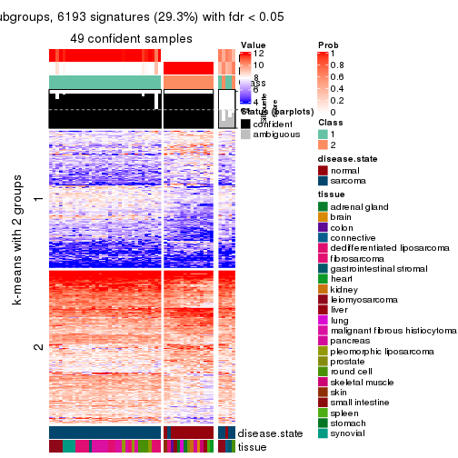
get_signatures(res, k = 3, scale_rows = FALSE)
get_signatures(res, k = 4, scale_rows = FALSE)
get_signatures(res, k = 5, scale_rows = FALSE)
get_signatures(res, k = 6, scale_rows = FALSE)
Compare the overlap of signatures from different k:
compare_signatures(res)
get_signature() returns a data frame invisibly. TO get the list of signatures, the function
call should be assigned to a variable explicitly. In following code, if plot argument is set
to FALSE, no heatmap is plotted while only the differential analysis is performed.
# code only for demonstration
tb = get_signature(res, k = ..., plot = FALSE)
An example of the output of tb is:
#> which_row fdr mean_1 mean_2 scaled_mean_1 scaled_mean_2 km
#> 1 38 0.042760348 8.373488 9.131774 -0.5533452 0.5164555 1
#> 2 40 0.018707592 7.106213 8.469186 -0.6173731 0.5762149 1
#> 3 55 0.019134737 10.221463 11.207825 -0.6159697 0.5749050 1
#> 4 59 0.006059896 5.921854 7.869574 -0.6899429 0.6439467 1
#> 5 60 0.018055526 8.928898 10.211722 -0.6204761 0.5791110 1
#> 6 98 0.009384629 15.714769 14.887706 0.6635654 -0.6193277 2
...
The columns in tb are:
which_row: row indices corresponding to the input matrix.fdr: FDR for the differential test. mean_x: The mean value in group x.scaled_mean_x: The mean value in group x after rows are scaled.km: Row groups if k-means clustering is applied to rows.UMAP plot which shows how samples are separated.
dimension_reduction(res, k = 2, method = "UMAP")
dimension_reduction(res, k = 3, method = "UMAP")
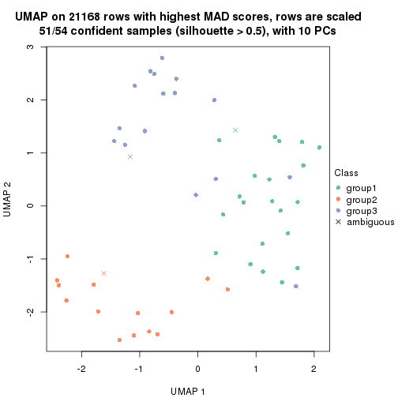
dimension_reduction(res, k = 4, method = "UMAP")
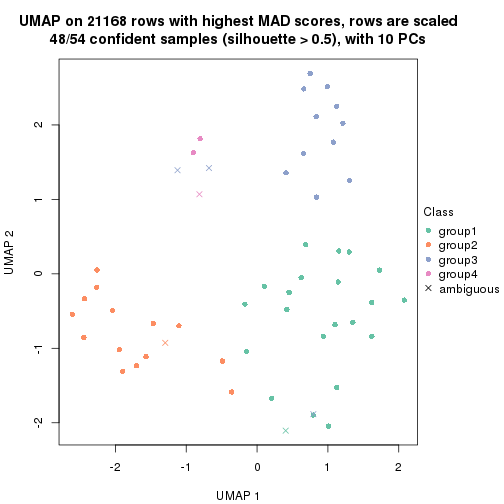
dimension_reduction(res, k = 5, method = "UMAP")
dimension_reduction(res, k = 6, method = "UMAP")
Following heatmap shows how subgroups are split when increasing k:
collect_classes(res)
Test correlation between subgroups and known annotations. If the known annotation is numeric, one-way ANOVA test is applied, and if the known annotation is discrete, chi-squared contingency table test is applied.
test_to_known_factors(res)
#> n disease.state(p) tissue(p) k
#> MAD:NMF 49 2.58e-10 1.50e-03 2
#> MAD:NMF 51 9.47e-10 9.04e-05 3
#> MAD:NMF 48 1.83e-08 1.37e-06 4
#> MAD:NMF 52 1.23e-09 7.85e-09 5
#> MAD:NMF 48 1.02e-08 4.69e-10 6
If matrix rows can be associated to genes, consider to use functional_enrichment(res,
...) to perform function enrichment for the signature genes. See this vignette for more detailed explanations.
The object with results only for a single top-value method and a single partition method can be extracted as:
res = res_list["ATC", "hclust"]
# you can also extract it by
# res = res_list["ATC:hclust"]
A summary of res and all the functions that can be applied to it:
res
#> A 'ConsensusPartition' object with k = 2, 3, 4, 5, 6.
#> On a matrix with 21168 rows and 54 columns.
#> Top rows (1000, 2000, 3000, 4000, 5000) are extracted by 'ATC' method.
#> Subgroups are detected by 'hclust' method.
#> Performed in total 1250 partitions by row resampling.
#> Best k for subgroups seems to be 5.
#>
#> Following methods can be applied to this 'ConsensusPartition' object:
#> [1] "cola_report" "collect_classes" "collect_plots"
#> [4] "collect_stats" "colnames" "compare_signatures"
#> [7] "consensus_heatmap" "dimension_reduction" "functional_enrichment"
#> [10] "get_anno_col" "get_anno" "get_classes"
#> [13] "get_consensus" "get_matrix" "get_membership"
#> [16] "get_param" "get_signatures" "get_stats"
#> [19] "is_best_k" "is_stable_k" "membership_heatmap"
#> [22] "ncol" "nrow" "plot_ecdf"
#> [25] "rownames" "select_partition_number" "show"
#> [28] "suggest_best_k" "test_to_known_factors"
collect_plots() function collects all the plots made from res for all k (number of partitions)
into one single page to provide an easy and fast comparison between different k.
collect_plots(res)
The plots are:
k and the heatmap of
predicted classes for each k.k.k.k.All the plots in panels can be made by individual functions and they are plotted later in this section.
select_partition_number() produces several plots showing different
statistics for choosing “optimized” k. There are following statistics:
k;k, the area increased is defined as \(A_k - A_{k-1}\).The detailed explanations of these statistics can be found in the cola vignette.
Generally speaking, lower PAC score, higher mean silhouette score or higher
concordance corresponds to better partition. Rand index and Jaccard index
measure how similar the current partition is compared to partition with k-1.
If they are too similar, we won't accept k is better than k-1.
select_partition_number(res)
The numeric values for all these statistics can be obtained by get_stats().
get_stats(res)
#> k 1-PAC mean_silhouette concordance area_increased Rand Jaccard
#> 2 2 0.782 0.939 0.948 0.3034 0.628 0.628
#> 3 3 0.980 0.979 0.986 0.3160 0.975 0.960
#> 4 4 0.878 0.851 0.928 0.2630 0.897 0.828
#> 5 5 0.995 0.950 0.976 0.1070 0.906 0.815
#> 6 6 0.769 0.880 0.920 0.0885 1.000 1.000
suggest_best_k() suggests the best \(k\) based on these statistics. The rules are as follows:
suggest_best_k(res)
#> [1] 5
Following shows the table of the partitions (You need to click the show/hide
code output link to see it). The membership matrix (columns with name p*)
is inferred by
clue::cl_consensus()
function with the SE method. Basically the value in the membership matrix
represents the probability to belong to a certain group. The finall class
label for an item is determined with the group with highest probability it
belongs to.
In get_classes() function, the entropy is calculated from the membership
matrix and the silhouette score is calculated from the consensus matrix.
cbind(get_classes(res, k = 2), get_membership(res, k = 2))
#> class entropy silhouette p1 p2
#> GSM52556 2 0.625 0.793 0.156 0.844
#> GSM52557 2 0.966 0.695 0.392 0.608
#> GSM52558 2 0.966 0.695 0.392 0.608
#> GSM52559 2 0.963 0.700 0.388 0.612
#> GSM52560 2 0.781 0.800 0.232 0.768
#> GSM52561 1 0.000 1.000 1.000 0.000
#> GSM52562 2 0.966 0.695 0.392 0.608
#> GSM52563 2 0.781 0.800 0.232 0.768
#> GSM52564 1 0.000 1.000 1.000 0.000
#> GSM52565 2 0.000 0.755 0.000 1.000
#> GSM52566 2 0.963 0.700 0.388 0.612
#> GSM52567 2 0.000 0.755 0.000 1.000
#> GSM52568 2 0.781 0.800 0.232 0.768
#> GSM52569 2 0.000 0.755 0.000 1.000
#> GSM52570 2 0.000 0.755 0.000 1.000
#> GSM52571 1 0.000 1.000 1.000 0.000
#> GSM52572 1 0.000 1.000 1.000 0.000
#> GSM52573 1 0.000 1.000 1.000 0.000
#> GSM52574 1 0.000 1.000 1.000 0.000
#> GSM52575 1 0.000 1.000 1.000 0.000
#> GSM52576 1 0.000 1.000 1.000 0.000
#> GSM52577 1 0.000 1.000 1.000 0.000
#> GSM52578 1 0.000 1.000 1.000 0.000
#> GSM52579 1 0.000 1.000 1.000 0.000
#> GSM52580 1 0.000 1.000 1.000 0.000
#> GSM52581 1 0.000 1.000 1.000 0.000
#> GSM52582 1 0.000 1.000 1.000 0.000
#> GSM52583 1 0.000 1.000 1.000 0.000
#> GSM52584 1 0.000 1.000 1.000 0.000
#> GSM52585 1 0.000 1.000 1.000 0.000
#> GSM52586 1 0.000 1.000 1.000 0.000
#> GSM52587 1 0.000 1.000 1.000 0.000
#> GSM52588 1 0.000 1.000 1.000 0.000
#> GSM52589 1 0.000 1.000 1.000 0.000
#> GSM52590 1 0.000 1.000 1.000 0.000
#> GSM52591 1 0.000 1.000 1.000 0.000
#> GSM52592 1 0.000 1.000 1.000 0.000
#> GSM52593 1 0.000 1.000 1.000 0.000
#> GSM52594 1 0.000 1.000 1.000 0.000
#> GSM52595 1 0.000 1.000 1.000 0.000
#> GSM52596 1 0.000 1.000 1.000 0.000
#> GSM52597 1 0.000 1.000 1.000 0.000
#> GSM52598 1 0.000 1.000 1.000 0.000
#> GSM52599 1 0.000 1.000 1.000 0.000
#> GSM52600 1 0.000 1.000 1.000 0.000
#> GSM52601 1 0.000 1.000 1.000 0.000
#> GSM52602 1 0.000 1.000 1.000 0.000
#> GSM52603 1 0.000 1.000 1.000 0.000
#> GSM52604 1 0.000 1.000 1.000 0.000
#> GSM52605 1 0.000 1.000 1.000 0.000
#> GSM52606 1 0.000 1.000 1.000 0.000
#> GSM52607 1 0.000 1.000 1.000 0.000
#> GSM52608 1 0.000 1.000 1.000 0.000
#> GSM52609 1 0.000 1.000 1.000 0.000
cbind(get_classes(res, k = 3), get_membership(res, k = 3))
#> class entropy silhouette p1 p2 p3
#> GSM52556 2 0.4931 0.793 0.000 0.768 0.232
#> GSM52557 2 0.0237 0.904 0.004 0.996 0.000
#> GSM52558 2 0.0237 0.904 0.004 0.996 0.000
#> GSM52559 2 0.0000 0.904 0.000 1.000 0.000
#> GSM52560 2 0.3941 0.871 0.000 0.844 0.156
#> GSM52561 1 0.0000 0.999 1.000 0.000 0.000
#> GSM52562 2 0.0237 0.904 0.004 0.996 0.000
#> GSM52563 2 0.3941 0.871 0.000 0.844 0.156
#> GSM52564 1 0.0000 0.999 1.000 0.000 0.000
#> GSM52565 3 0.0000 1.000 0.000 0.000 1.000
#> GSM52566 2 0.0000 0.904 0.000 1.000 0.000
#> GSM52567 3 0.0000 1.000 0.000 0.000 1.000
#> GSM52568 2 0.3941 0.871 0.000 0.844 0.156
#> GSM52569 3 0.0000 1.000 0.000 0.000 1.000
#> GSM52570 3 0.0000 1.000 0.000 0.000 1.000
#> GSM52571 1 0.0000 0.999 1.000 0.000 0.000
#> GSM52572 1 0.0000 0.999 1.000 0.000 0.000
#> GSM52573 1 0.0000 0.999 1.000 0.000 0.000
#> GSM52574 1 0.0000 0.999 1.000 0.000 0.000
#> GSM52575 1 0.0000 0.999 1.000 0.000 0.000
#> GSM52576 1 0.0000 0.999 1.000 0.000 0.000
#> GSM52577 1 0.0000 0.999 1.000 0.000 0.000
#> GSM52578 1 0.0000 0.999 1.000 0.000 0.000
#> GSM52579 1 0.0000 0.999 1.000 0.000 0.000
#> GSM52580 1 0.0000 0.999 1.000 0.000 0.000
#> GSM52581 1 0.0000 0.999 1.000 0.000 0.000
#> GSM52582 1 0.0000 0.999 1.000 0.000 0.000
#> GSM52583 1 0.0000 0.999 1.000 0.000 0.000
#> GSM52584 1 0.0000 0.999 1.000 0.000 0.000
#> GSM52585 1 0.0000 0.999 1.000 0.000 0.000
#> GSM52586 1 0.0000 0.999 1.000 0.000 0.000
#> GSM52587 1 0.0000 0.999 1.000 0.000 0.000
#> GSM52588 1 0.0424 0.992 0.992 0.008 0.000
#> GSM52589 1 0.0000 0.999 1.000 0.000 0.000
#> GSM52590 1 0.0424 0.992 0.992 0.008 0.000
#> GSM52591 1 0.0000 0.999 1.000 0.000 0.000
#> GSM52592 1 0.0000 0.999 1.000 0.000 0.000
#> GSM52593 1 0.0000 0.999 1.000 0.000 0.000
#> GSM52594 1 0.0000 0.999 1.000 0.000 0.000
#> GSM52595 1 0.0000 0.999 1.000 0.000 0.000
#> GSM52596 1 0.0000 0.999 1.000 0.000 0.000
#> GSM52597 1 0.0000 0.999 1.000 0.000 0.000
#> GSM52598 1 0.0424 0.992 0.992 0.008 0.000
#> GSM52599 1 0.0000 0.999 1.000 0.000 0.000
#> GSM52600 1 0.0000 0.999 1.000 0.000 0.000
#> GSM52601 1 0.0000 0.999 1.000 0.000 0.000
#> GSM52602 1 0.0000 0.999 1.000 0.000 0.000
#> GSM52603 1 0.0424 0.992 0.992 0.008 0.000
#> GSM52604 1 0.0000 0.999 1.000 0.000 0.000
#> GSM52605 1 0.0000 0.999 1.000 0.000 0.000
#> GSM52606 1 0.0000 0.999 1.000 0.000 0.000
#> GSM52607 1 0.0000 0.999 1.000 0.000 0.000
#> GSM52608 1 0.0000 0.999 1.000 0.000 0.000
#> GSM52609 1 0.0000 0.999 1.000 0.000 0.000
cbind(get_classes(res, k = 4), get_membership(res, k = 4))
#> class entropy silhouette p1 p2 p3 p4
#> GSM52556 2 0.2586 0.784 0.000 0.912 0.048 0.040
#> GSM52557 2 0.4072 0.875 0.000 0.748 0.252 0.000
#> GSM52558 2 0.4072 0.875 0.000 0.748 0.252 0.000
#> GSM52559 2 0.4040 0.875 0.000 0.752 0.248 0.000
#> GSM52560 2 0.0469 0.837 0.000 0.988 0.000 0.012
#> GSM52561 1 0.0000 0.941 1.000 0.000 0.000 0.000
#> GSM52562 2 0.4072 0.875 0.000 0.748 0.252 0.000
#> GSM52563 2 0.0469 0.837 0.000 0.988 0.000 0.012
#> GSM52564 1 0.0000 0.941 1.000 0.000 0.000 0.000
#> GSM52565 4 0.0000 0.989 0.000 0.000 0.000 1.000
#> GSM52566 2 0.4040 0.875 0.000 0.752 0.248 0.000
#> GSM52567 4 0.0000 0.989 0.000 0.000 0.000 1.000
#> GSM52568 2 0.0469 0.837 0.000 0.988 0.000 0.012
#> GSM52569 4 0.1389 0.966 0.000 0.000 0.048 0.952
#> GSM52570 4 0.0000 0.989 0.000 0.000 0.000 1.000
#> GSM52571 1 0.0000 0.941 1.000 0.000 0.000 0.000
#> GSM52572 1 0.0000 0.941 1.000 0.000 0.000 0.000
#> GSM52573 1 0.0000 0.941 1.000 0.000 0.000 0.000
#> GSM52574 1 0.0000 0.941 1.000 0.000 0.000 0.000
#> GSM52575 1 0.0000 0.941 1.000 0.000 0.000 0.000
#> GSM52576 1 0.0000 0.941 1.000 0.000 0.000 0.000
#> GSM52577 1 0.0000 0.941 1.000 0.000 0.000 0.000
#> GSM52578 1 0.0000 0.941 1.000 0.000 0.000 0.000
#> GSM52579 1 0.0000 0.941 1.000 0.000 0.000 0.000
#> GSM52580 1 0.0000 0.941 1.000 0.000 0.000 0.000
#> GSM52581 1 0.0000 0.941 1.000 0.000 0.000 0.000
#> GSM52582 1 0.0000 0.941 1.000 0.000 0.000 0.000
#> GSM52583 1 0.0000 0.941 1.000 0.000 0.000 0.000
#> GSM52584 1 0.0000 0.941 1.000 0.000 0.000 0.000
#> GSM52585 1 0.0000 0.941 1.000 0.000 0.000 0.000
#> GSM52586 1 0.0000 0.941 1.000 0.000 0.000 0.000
#> GSM52587 1 0.0000 0.941 1.000 0.000 0.000 0.000
#> GSM52588 3 0.4477 0.986 0.312 0.000 0.688 0.000
#> GSM52589 1 0.0000 0.941 1.000 0.000 0.000 0.000
#> GSM52590 3 0.4477 0.986 0.312 0.000 0.688 0.000
#> GSM52591 1 0.0000 0.941 1.000 0.000 0.000 0.000
#> GSM52592 1 0.0000 0.941 1.000 0.000 0.000 0.000
#> GSM52593 1 0.0000 0.941 1.000 0.000 0.000 0.000
#> GSM52594 1 0.0000 0.941 1.000 0.000 0.000 0.000
#> GSM52595 1 0.0000 0.941 1.000 0.000 0.000 0.000
#> GSM52596 1 0.0000 0.941 1.000 0.000 0.000 0.000
#> GSM52597 1 0.0000 0.941 1.000 0.000 0.000 0.000
#> GSM52598 3 0.4477 0.986 0.312 0.000 0.688 0.000
#> GSM52599 1 0.0000 0.941 1.000 0.000 0.000 0.000
#> GSM52600 1 0.0000 0.941 1.000 0.000 0.000 0.000
#> GSM52601 1 0.0000 0.941 1.000 0.000 0.000 0.000
#> GSM52602 1 0.4994 -0.512 0.520 0.000 0.480 0.000
#> GSM52603 3 0.4331 0.956 0.288 0.000 0.712 0.000
#> GSM52604 1 0.4994 -0.512 0.520 0.000 0.480 0.000
#> GSM52605 1 0.4994 -0.512 0.520 0.000 0.480 0.000
#> GSM52606 1 0.0000 0.941 1.000 0.000 0.000 0.000
#> GSM52607 1 0.0000 0.941 1.000 0.000 0.000 0.000
#> GSM52608 1 0.0000 0.941 1.000 0.000 0.000 0.000
#> GSM52609 1 0.0000 0.941 1.000 0.000 0.000 0.000
cbind(get_classes(res, k = 5), get_membership(res, k = 5))
#> class entropy silhouette p1 p2 p3 p4 p5
#> GSM52556 3 0.0000 0.892 0.000 0.000 1.000 0.000 0.000
#> GSM52557 2 0.0162 0.997 0.000 0.996 0.000 0.000 0.004
#> GSM52558 2 0.0162 0.997 0.000 0.996 0.000 0.000 0.004
#> GSM52559 2 0.0000 0.996 0.000 1.000 0.000 0.000 0.000
#> GSM52560 3 0.2516 0.901 0.000 0.140 0.860 0.000 0.000
#> GSM52561 1 0.0000 1.000 1.000 0.000 0.000 0.000 0.000
#> GSM52562 2 0.0162 0.997 0.000 0.996 0.000 0.000 0.004
#> GSM52563 3 0.1671 0.947 0.000 0.076 0.924 0.000 0.000
#> GSM52564 1 0.0000 1.000 1.000 0.000 0.000 0.000 0.000
#> GSM52565 4 0.0000 0.979 0.000 0.000 0.000 1.000 0.000
#> GSM52566 2 0.0000 0.996 0.000 1.000 0.000 0.000 0.000
#> GSM52567 4 0.0000 0.979 0.000 0.000 0.000 1.000 0.000
#> GSM52568 3 0.1671 0.947 0.000 0.076 0.924 0.000 0.000
#> GSM52569 4 0.1671 0.936 0.000 0.000 0.076 0.924 0.000
#> GSM52570 4 0.0000 0.979 0.000 0.000 0.000 1.000 0.000
#> GSM52571 1 0.0000 1.000 1.000 0.000 0.000 0.000 0.000
#> GSM52572 1 0.0000 1.000 1.000 0.000 0.000 0.000 0.000
#> GSM52573 1 0.0000 1.000 1.000 0.000 0.000 0.000 0.000
#> GSM52574 1 0.0000 1.000 1.000 0.000 0.000 0.000 0.000
#> GSM52575 1 0.0000 1.000 1.000 0.000 0.000 0.000 0.000
#> GSM52576 1 0.0000 1.000 1.000 0.000 0.000 0.000 0.000
#> GSM52577 1 0.0000 1.000 1.000 0.000 0.000 0.000 0.000
#> GSM52578 1 0.0000 1.000 1.000 0.000 0.000 0.000 0.000
#> GSM52579 1 0.0000 1.000 1.000 0.000 0.000 0.000 0.000
#> GSM52580 1 0.0000 1.000 1.000 0.000 0.000 0.000 0.000
#> GSM52581 1 0.0000 1.000 1.000 0.000 0.000 0.000 0.000
#> GSM52582 1 0.0000 1.000 1.000 0.000 0.000 0.000 0.000
#> GSM52583 1 0.0000 1.000 1.000 0.000 0.000 0.000 0.000
#> GSM52584 1 0.0000 1.000 1.000 0.000 0.000 0.000 0.000
#> GSM52585 1 0.0000 1.000 1.000 0.000 0.000 0.000 0.000
#> GSM52586 1 0.0000 1.000 1.000 0.000 0.000 0.000 0.000
#> GSM52587 1 0.0000 1.000 1.000 0.000 0.000 0.000 0.000
#> GSM52588 5 0.0794 0.708 0.028 0.000 0.000 0.000 0.972
#> GSM52589 1 0.0162 0.995 0.996 0.000 0.000 0.000 0.004
#> GSM52590 5 0.0794 0.708 0.028 0.000 0.000 0.000 0.972
#> GSM52591 1 0.0000 1.000 1.000 0.000 0.000 0.000 0.000
#> GSM52592 1 0.0000 1.000 1.000 0.000 0.000 0.000 0.000
#> GSM52593 1 0.0000 1.000 1.000 0.000 0.000 0.000 0.000
#> GSM52594 1 0.0000 1.000 1.000 0.000 0.000 0.000 0.000
#> GSM52595 1 0.0000 1.000 1.000 0.000 0.000 0.000 0.000
#> GSM52596 1 0.0000 1.000 1.000 0.000 0.000 0.000 0.000
#> GSM52597 1 0.0000 1.000 1.000 0.000 0.000 0.000 0.000
#> GSM52598 5 0.0794 0.708 0.028 0.000 0.000 0.000 0.972
#> GSM52599 1 0.0000 1.000 1.000 0.000 0.000 0.000 0.000
#> GSM52600 1 0.0000 1.000 1.000 0.000 0.000 0.000 0.000
#> GSM52601 1 0.0000 1.000 1.000 0.000 0.000 0.000 0.000
#> GSM52602 5 0.3707 0.658 0.284 0.000 0.000 0.000 0.716
#> GSM52603 5 0.0000 0.667 0.000 0.000 0.000 0.000 1.000
#> GSM52604 5 0.3707 0.658 0.284 0.000 0.000 0.000 0.716
#> GSM52605 5 0.3707 0.658 0.284 0.000 0.000 0.000 0.716
#> GSM52606 1 0.0000 1.000 1.000 0.000 0.000 0.000 0.000
#> GSM52607 1 0.0000 1.000 1.000 0.000 0.000 0.000 0.000
#> GSM52608 1 0.0000 1.000 1.000 0.000 0.000 0.000 0.000
#> GSM52609 1 0.0000 1.000 1.000 0.000 0.000 0.000 0.000
cbind(get_classes(res, k = 6), get_membership(res, k = 6))
#> class entropy silhouette p1 p2 p3 p4 p5 p6
#> GSM52556 4 0.1501 0.929 0.000 0.000 NA 0.924 0.000 0.000
#> GSM52557 6 0.0000 0.976 0.000 0.000 NA 0.000 0.000 1.000
#> GSM52558 6 0.0000 0.976 0.000 0.000 NA 0.000 0.000 1.000
#> GSM52559 6 0.2003 0.906 0.000 0.000 NA 0.000 0.000 0.884
#> GSM52560 4 0.1500 0.936 0.000 0.000 NA 0.936 0.000 0.012
#> GSM52561 1 0.0146 0.937 0.996 0.000 NA 0.000 0.000 0.000
#> GSM52562 6 0.0000 0.976 0.000 0.000 NA 0.000 0.000 1.000
#> GSM52563 4 0.0000 0.962 0.000 0.000 NA 1.000 0.000 0.000
#> GSM52564 1 0.0146 0.937 0.996 0.000 NA 0.000 0.000 0.000
#> GSM52565 2 0.0000 0.979 0.000 1.000 NA 0.000 0.000 0.000
#> GSM52566 6 0.0146 0.975 0.000 0.000 NA 0.000 0.000 0.996
#> GSM52567 2 0.0000 0.979 0.000 1.000 NA 0.000 0.000 0.000
#> GSM52568 4 0.0000 0.962 0.000 0.000 NA 1.000 0.000 0.000
#> GSM52569 2 0.1501 0.936 0.000 0.924 NA 0.000 0.000 0.000
#> GSM52570 2 0.0000 0.979 0.000 1.000 NA 0.000 0.000 0.000
#> GSM52571 1 0.0260 0.936 0.992 0.000 NA 0.000 0.000 0.000
#> GSM52572 1 0.1245 0.927 0.952 0.000 NA 0.000 0.016 0.000
#> GSM52573 1 0.2378 0.857 0.848 0.000 NA 0.000 0.000 0.000
#> GSM52574 1 0.2378 0.857 0.848 0.000 NA 0.000 0.000 0.000
#> GSM52575 1 0.1387 0.916 0.932 0.000 NA 0.000 0.000 0.000
#> GSM52576 1 0.1387 0.916 0.932 0.000 NA 0.000 0.000 0.000
#> GSM52577 1 0.2527 0.865 0.868 0.000 NA 0.000 0.024 0.000
#> GSM52578 1 0.1327 0.921 0.936 0.000 NA 0.000 0.000 0.000
#> GSM52579 1 0.1327 0.921 0.936 0.000 NA 0.000 0.000 0.000
#> GSM52580 1 0.0000 0.937 1.000 0.000 NA 0.000 0.000 0.000
#> GSM52581 1 0.0000 0.937 1.000 0.000 NA 0.000 0.000 0.000
#> GSM52582 1 0.0000 0.937 1.000 0.000 NA 0.000 0.000 0.000
#> GSM52583 1 0.0000 0.937 1.000 0.000 NA 0.000 0.000 0.000
#> GSM52584 1 0.0146 0.937 0.996 0.000 NA 0.000 0.004 0.000
#> GSM52585 1 0.0458 0.934 0.984 0.000 NA 0.000 0.000 0.000
#> GSM52586 1 0.0146 0.937 0.996 0.000 NA 0.000 0.000 0.000
#> GSM52587 1 0.0146 0.937 0.996 0.000 NA 0.000 0.000 0.000
#> GSM52588 5 0.0146 0.630 0.004 0.000 NA 0.000 0.996 0.000
#> GSM52589 1 0.3699 0.533 0.660 0.000 NA 0.000 0.004 0.000
#> GSM52590 5 0.0146 0.630 0.004 0.000 NA 0.000 0.996 0.000
#> GSM52591 1 0.1245 0.927 0.952 0.000 NA 0.000 0.016 0.000
#> GSM52592 1 0.2527 0.865 0.868 0.000 NA 0.000 0.024 0.000
#> GSM52593 1 0.0000 0.937 1.000 0.000 NA 0.000 0.000 0.000
#> GSM52594 1 0.0000 0.937 1.000 0.000 NA 0.000 0.000 0.000
#> GSM52595 1 0.0000 0.937 1.000 0.000 NA 0.000 0.000 0.000
#> GSM52596 1 0.0000 0.937 1.000 0.000 NA 0.000 0.000 0.000
#> GSM52597 1 0.1245 0.927 0.952 0.000 NA 0.000 0.016 0.000
#> GSM52598 5 0.1615 0.600 0.004 0.000 NA 0.000 0.928 0.004
#> GSM52599 1 0.1075 0.920 0.952 0.000 NA 0.000 0.000 0.000
#> GSM52600 1 0.0632 0.932 0.976 0.000 NA 0.000 0.000 0.000
#> GSM52601 1 0.0914 0.932 0.968 0.000 NA 0.000 0.016 0.000
#> GSM52602 5 0.5812 0.626 0.192 0.000 NA 0.000 0.460 0.000
#> GSM52603 5 0.3351 0.613 0.000 0.000 NA 0.000 0.712 0.000
#> GSM52604 5 0.5812 0.626 0.192 0.000 NA 0.000 0.460 0.000
#> GSM52605 5 0.5812 0.626 0.192 0.000 NA 0.000 0.460 0.000
#> GSM52606 1 0.2378 0.857 0.848 0.000 NA 0.000 0.000 0.000
#> GSM52607 1 0.2378 0.857 0.848 0.000 NA 0.000 0.000 0.000
#> GSM52608 1 0.2378 0.857 0.848 0.000 NA 0.000 0.000 0.000
#> GSM52609 1 0.2378 0.857 0.848 0.000 NA 0.000 0.000 0.000
Heatmaps for the consensus matrix. It visualizes the probability of two samples to be in a same group.
consensus_heatmap(res, k = 2)
consensus_heatmap(res, k = 3)

consensus_heatmap(res, k = 4)
consensus_heatmap(res, k = 5)
consensus_heatmap(res, k = 6)

Heatmaps for the membership of samples in all partitions to see how consistent they are:
membership_heatmap(res, k = 2)
membership_heatmap(res, k = 3)
membership_heatmap(res, k = 4)
membership_heatmap(res, k = 5)
membership_heatmap(res, k = 6)
As soon as we have had the classes for columns, we can look for signatures which are significantly different between classes which can be candidate marks for certain classes. Following are the heatmaps for signatures.
Signature heatmaps where rows are scaled:
get_signatures(res, k = 2)
get_signatures(res, k = 3)
get_signatures(res, k = 4)
get_signatures(res, k = 5)

get_signatures(res, k = 6)
Signature heatmaps where rows are not scaled:
get_signatures(res, k = 2, scale_rows = FALSE)
get_signatures(res, k = 3, scale_rows = FALSE)
get_signatures(res, k = 4, scale_rows = FALSE)
get_signatures(res, k = 5, scale_rows = FALSE)
get_signatures(res, k = 6, scale_rows = FALSE)
Compare the overlap of signatures from different k:
compare_signatures(res)
get_signature() returns a data frame invisibly. TO get the list of signatures, the function
call should be assigned to a variable explicitly. In following code, if plot argument is set
to FALSE, no heatmap is plotted while only the differential analysis is performed.
# code only for demonstration
tb = get_signature(res, k = ..., plot = FALSE)
An example of the output of tb is:
#> which_row fdr mean_1 mean_2 scaled_mean_1 scaled_mean_2 km
#> 1 38 0.042760348 8.373488 9.131774 -0.5533452 0.5164555 1
#> 2 40 0.018707592 7.106213 8.469186 -0.6173731 0.5762149 1
#> 3 55 0.019134737 10.221463 11.207825 -0.6159697 0.5749050 1
#> 4 59 0.006059896 5.921854 7.869574 -0.6899429 0.6439467 1
#> 5 60 0.018055526 8.928898 10.211722 -0.6204761 0.5791110 1
#> 6 98 0.009384629 15.714769 14.887706 0.6635654 -0.6193277 2
...
The columns in tb are:
which_row: row indices corresponding to the input matrix.fdr: FDR for the differential test. mean_x: The mean value in group x.scaled_mean_x: The mean value in group x after rows are scaled.km: Row groups if k-means clustering is applied to rows.UMAP plot which shows how samples are separated.
dimension_reduction(res, k = 2, method = "UMAP")
dimension_reduction(res, k = 3, method = "UMAP")
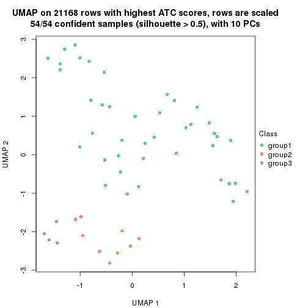
dimension_reduction(res, k = 4, method = "UMAP")
dimension_reduction(res, k = 5, method = "UMAP")
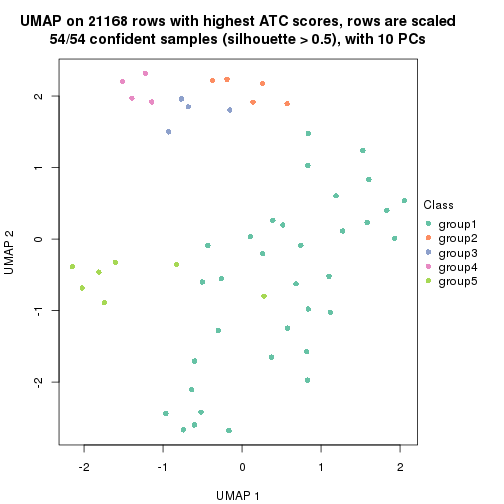
dimension_reduction(res, k = 6, method = "UMAP")
Following heatmap shows how subgroups are split when increasing k:
collect_classes(res)

Test correlation between subgroups and known annotations. If the known annotation is numeric, one-way ANOVA test is applied, and if the known annotation is discrete, chi-squared contingency table test is applied.
test_to_known_factors(res)
#> n disease.state(p) tissue(p) k
#> ATC:hclust 54 2.67e-10 1.64e-04 2
#> ATC:hclust 54 2.15e-10 2.67e-07 3
#> ATC:hclust 51 4.14e-09 5.29e-05 4
#> ATC:hclust 54 4.78e-09 5.06e-10 5
#> ATC:hclust 54 4.78e-09 5.06e-10 6
If matrix rows can be associated to genes, consider to use functional_enrichment(res,
...) to perform function enrichment for the signature genes. See this vignette for more detailed explanations.
The object with results only for a single top-value method and a single partition method can be extracted as:
res = res_list["ATC", "kmeans"]
# you can also extract it by
# res = res_list["ATC:kmeans"]
A summary of res and all the functions that can be applied to it:
res
#> A 'ConsensusPartition' object with k = 2, 3, 4, 5, 6.
#> On a matrix with 21168 rows and 54 columns.
#> Top rows (1000, 2000, 3000, 4000, 5000) are extracted by 'ATC' method.
#> Subgroups are detected by 'kmeans' method.
#> Performed in total 1250 partitions by row resampling.
#> Best k for subgroups seems to be 2.
#>
#> Following methods can be applied to this 'ConsensusPartition' object:
#> [1] "cola_report" "collect_classes" "collect_plots"
#> [4] "collect_stats" "colnames" "compare_signatures"
#> [7] "consensus_heatmap" "dimension_reduction" "functional_enrichment"
#> [10] "get_anno_col" "get_anno" "get_classes"
#> [13] "get_consensus" "get_matrix" "get_membership"
#> [16] "get_param" "get_signatures" "get_stats"
#> [19] "is_best_k" "is_stable_k" "membership_heatmap"
#> [22] "ncol" "nrow" "plot_ecdf"
#> [25] "rownames" "select_partition_number" "show"
#> [28] "suggest_best_k" "test_to_known_factors"
collect_plots() function collects all the plots made from res for all k (number of partitions)
into one single page to provide an easy and fast comparison between different k.
collect_plots(res)
The plots are:
k and the heatmap of
predicted classes for each k.k.k.k.All the plots in panels can be made by individual functions and they are plotted later in this section.
select_partition_number() produces several plots showing different
statistics for choosing “optimized” k. There are following statistics:
k;k, the area increased is defined as \(A_k - A_{k-1}\).The detailed explanations of these statistics can be found in the cola vignette.
Generally speaking, lower PAC score, higher mean silhouette score or higher
concordance corresponds to better partition. Rand index and Jaccard index
measure how similar the current partition is compared to partition with k-1.
If they are too similar, we won't accept k is better than k-1.
select_partition_number(res)
The numeric values for all these statistics can be obtained by get_stats().
get_stats(res)
#> k 1-PAC mean_silhouette concordance area_increased Rand Jaccard
#> 2 2 1.000 0.960 0.981 0.3291 0.648 0.648
#> 3 3 0.587 0.746 0.866 0.5576 0.887 0.829
#> 4 4 0.587 0.786 0.864 0.2651 0.776 0.605
#> 5 5 0.602 0.602 0.759 0.1374 0.978 0.938
#> 6 6 0.645 0.472 0.721 0.0839 0.825 0.494
suggest_best_k() suggests the best \(k\) based on these statistics. The rules are as follows:
suggest_best_k(res)
#> [1] 2
Following shows the table of the partitions (You need to click the show/hide
code output link to see it). The membership matrix (columns with name p*)
is inferred by
clue::cl_consensus()
function with the SE method. Basically the value in the membership matrix
represents the probability to belong to a certain group. The finall class
label for an item is determined with the group with highest probability it
belongs to.
In get_classes() function, the entropy is calculated from the membership
matrix and the silhouette score is calculated from the consensus matrix.
cbind(get_classes(res, k = 2), get_membership(res, k = 2))
#> class entropy silhouette p1 p2
#> GSM52556 2 0.000 0.904 0.000 1.000
#> GSM52557 2 0.936 0.553 0.352 0.648
#> GSM52558 1 0.000 1.000 1.000 0.000
#> GSM52559 2 0.000 0.904 0.000 1.000
#> GSM52560 2 0.000 0.904 0.000 1.000
#> GSM52561 1 0.000 1.000 1.000 0.000
#> GSM52562 2 0.925 0.577 0.340 0.660
#> GSM52563 2 0.000 0.904 0.000 1.000
#> GSM52564 1 0.000 1.000 1.000 0.000
#> GSM52565 2 0.000 0.904 0.000 1.000
#> GSM52566 2 0.925 0.577 0.340 0.660
#> GSM52567 2 0.000 0.904 0.000 1.000
#> GSM52568 2 0.000 0.904 0.000 1.000
#> GSM52569 2 0.000 0.904 0.000 1.000
#> GSM52570 2 0.000 0.904 0.000 1.000
#> GSM52571 1 0.000 1.000 1.000 0.000
#> GSM52572 1 0.000 1.000 1.000 0.000
#> GSM52573 1 0.000 1.000 1.000 0.000
#> GSM52574 1 0.000 1.000 1.000 0.000
#> GSM52575 1 0.000 1.000 1.000 0.000
#> GSM52576 1 0.000 1.000 1.000 0.000
#> GSM52577 1 0.000 1.000 1.000 0.000
#> GSM52578 1 0.000 1.000 1.000 0.000
#> GSM52579 1 0.000 1.000 1.000 0.000
#> GSM52580 1 0.000 1.000 1.000 0.000
#> GSM52581 1 0.000 1.000 1.000 0.000
#> GSM52582 1 0.000 1.000 1.000 0.000
#> GSM52583 1 0.000 1.000 1.000 0.000
#> GSM52584 1 0.000 1.000 1.000 0.000
#> GSM52585 1 0.000 1.000 1.000 0.000
#> GSM52586 1 0.000 1.000 1.000 0.000
#> GSM52587 1 0.000 1.000 1.000 0.000
#> GSM52588 1 0.000 1.000 1.000 0.000
#> GSM52589 1 0.000 1.000 1.000 0.000
#> GSM52590 1 0.000 1.000 1.000 0.000
#> GSM52591 1 0.000 1.000 1.000 0.000
#> GSM52592 1 0.000 1.000 1.000 0.000
#> GSM52593 1 0.000 1.000 1.000 0.000
#> GSM52594 1 0.000 1.000 1.000 0.000
#> GSM52595 1 0.000 1.000 1.000 0.000
#> GSM52596 1 0.000 1.000 1.000 0.000
#> GSM52597 1 0.000 1.000 1.000 0.000
#> GSM52598 1 0.000 1.000 1.000 0.000
#> GSM52599 1 0.000 1.000 1.000 0.000
#> GSM52600 1 0.000 1.000 1.000 0.000
#> GSM52601 1 0.000 1.000 1.000 0.000
#> GSM52602 1 0.000 1.000 1.000 0.000
#> GSM52603 1 0.000 1.000 1.000 0.000
#> GSM52604 1 0.000 1.000 1.000 0.000
#> GSM52605 1 0.000 1.000 1.000 0.000
#> GSM52606 1 0.000 1.000 1.000 0.000
#> GSM52607 1 0.000 1.000 1.000 0.000
#> GSM52608 1 0.000 1.000 1.000 0.000
#> GSM52609 1 0.000 1.000 1.000 0.000
cbind(get_classes(res, k = 3), get_membership(res, k = 3))
#> class entropy silhouette p1 p2 p3
#> GSM52556 2 0.4178 0.8113 0.000 0.828 0.172
#> GSM52557 3 0.5977 0.5959 0.020 0.252 0.728
#> GSM52558 3 0.5058 0.5136 0.244 0.000 0.756
#> GSM52559 3 0.6062 0.2691 0.000 0.384 0.616
#> GSM52560 2 0.4974 0.7283 0.000 0.764 0.236
#> GSM52561 1 0.3412 0.7991 0.876 0.000 0.124
#> GSM52562 3 0.5977 0.5959 0.020 0.252 0.728
#> GSM52563 2 0.4178 0.8113 0.000 0.828 0.172
#> GSM52564 1 0.0237 0.8598 0.996 0.000 0.004
#> GSM52565 2 0.0000 0.8978 0.000 1.000 0.000
#> GSM52566 3 0.5977 0.5959 0.020 0.252 0.728
#> GSM52567 2 0.0000 0.8978 0.000 1.000 0.000
#> GSM52568 2 0.0000 0.8978 0.000 1.000 0.000
#> GSM52569 2 0.0000 0.8978 0.000 1.000 0.000
#> GSM52570 2 0.0000 0.8978 0.000 1.000 0.000
#> GSM52571 1 0.0424 0.8591 0.992 0.000 0.008
#> GSM52572 1 0.0237 0.8598 0.996 0.000 0.004
#> GSM52573 1 0.5968 0.6158 0.636 0.000 0.364
#> GSM52574 1 0.5968 0.6158 0.636 0.000 0.364
#> GSM52575 1 0.5178 0.6932 0.744 0.000 0.256
#> GSM52576 1 0.0000 0.8602 1.000 0.000 0.000
#> GSM52577 1 0.0000 0.8602 1.000 0.000 0.000
#> GSM52578 1 0.3412 0.7991 0.876 0.000 0.124
#> GSM52579 1 0.3412 0.7991 0.876 0.000 0.124
#> GSM52580 1 0.0000 0.8602 1.000 0.000 0.000
#> GSM52581 1 0.0000 0.8602 1.000 0.000 0.000
#> GSM52582 1 0.0000 0.8602 1.000 0.000 0.000
#> GSM52583 1 0.0000 0.8602 1.000 0.000 0.000
#> GSM52584 1 0.0424 0.8591 0.992 0.000 0.008
#> GSM52585 1 0.0237 0.8598 0.996 0.000 0.004
#> GSM52586 1 0.0237 0.8598 0.996 0.000 0.004
#> GSM52587 1 0.3412 0.7991 0.876 0.000 0.124
#> GSM52588 1 0.0592 0.8577 0.988 0.000 0.012
#> GSM52589 1 0.0592 0.8577 0.988 0.000 0.012
#> GSM52590 3 0.5138 0.4249 0.252 0.000 0.748
#> GSM52591 1 0.0424 0.8591 0.992 0.000 0.008
#> GSM52592 1 0.0424 0.8591 0.992 0.000 0.008
#> GSM52593 1 0.0000 0.8602 1.000 0.000 0.000
#> GSM52594 1 0.0000 0.8602 1.000 0.000 0.000
#> GSM52595 1 0.0000 0.8602 1.000 0.000 0.000
#> GSM52596 1 0.0000 0.8602 1.000 0.000 0.000
#> GSM52597 1 0.0424 0.8591 0.992 0.000 0.008
#> GSM52598 1 0.6286 -0.0556 0.536 0.000 0.464
#> GSM52599 1 0.0424 0.8591 0.992 0.000 0.008
#> GSM52600 1 0.0424 0.8591 0.992 0.000 0.008
#> GSM52601 1 0.0237 0.8598 0.996 0.000 0.004
#> GSM52602 1 0.6045 0.6003 0.620 0.000 0.380
#> GSM52603 3 0.1411 0.5360 0.036 0.000 0.964
#> GSM52604 1 0.6095 0.5828 0.608 0.000 0.392
#> GSM52605 1 0.6026 0.6021 0.624 0.000 0.376
#> GSM52606 1 0.5968 0.6158 0.636 0.000 0.364
#> GSM52607 1 0.5968 0.6158 0.636 0.000 0.364
#> GSM52608 1 0.5988 0.6119 0.632 0.000 0.368
#> GSM52609 1 0.5968 0.6158 0.636 0.000 0.364
cbind(get_classes(res, k = 4), get_membership(res, k = 4))
#> class entropy silhouette p1 p2 p3 p4
#> GSM52556 2 0.5569 0.63691 0.000 0.660 0.044 0.296
#> GSM52557 4 0.1610 0.97162 0.000 0.032 0.016 0.952
#> GSM52558 4 0.1059 0.93461 0.012 0.000 0.016 0.972
#> GSM52559 4 0.1637 0.93850 0.000 0.060 0.000 0.940
#> GSM52560 2 0.6031 0.42181 0.000 0.536 0.044 0.420
#> GSM52561 1 0.4175 0.72980 0.784 0.000 0.200 0.016
#> GSM52562 4 0.1610 0.97162 0.000 0.032 0.016 0.952
#> GSM52563 2 0.5569 0.63691 0.000 0.660 0.044 0.296
#> GSM52564 1 0.1474 0.87902 0.948 0.000 0.052 0.000
#> GSM52565 2 0.0469 0.81784 0.000 0.988 0.012 0.000
#> GSM52566 4 0.1488 0.97042 0.000 0.032 0.012 0.956
#> GSM52567 2 0.0469 0.81784 0.000 0.988 0.012 0.000
#> GSM52568 2 0.1489 0.80967 0.000 0.952 0.044 0.004
#> GSM52569 2 0.0000 0.81790 0.000 1.000 0.000 0.000
#> GSM52570 2 0.0469 0.81784 0.000 0.988 0.012 0.000
#> GSM52571 1 0.2282 0.87833 0.924 0.000 0.052 0.024
#> GSM52572 1 0.0804 0.88477 0.980 0.000 0.008 0.012
#> GSM52573 3 0.3852 0.83680 0.180 0.000 0.808 0.012
#> GSM52574 3 0.3852 0.83680 0.180 0.000 0.808 0.012
#> GSM52575 3 0.4511 0.76044 0.268 0.000 0.724 0.008
#> GSM52576 1 0.2363 0.88252 0.920 0.000 0.056 0.024
#> GSM52577 1 0.1913 0.88121 0.940 0.000 0.040 0.020
#> GSM52578 1 0.4468 0.68059 0.752 0.000 0.232 0.016
#> GSM52579 1 0.4468 0.68059 0.752 0.000 0.232 0.016
#> GSM52580 1 0.1938 0.87732 0.936 0.000 0.052 0.012
#> GSM52581 1 0.2021 0.87566 0.932 0.000 0.056 0.012
#> GSM52582 1 0.2021 0.87566 0.932 0.000 0.056 0.012
#> GSM52583 1 0.2021 0.87566 0.932 0.000 0.056 0.012
#> GSM52584 1 0.1256 0.88074 0.964 0.000 0.008 0.028
#> GSM52585 1 0.1209 0.88330 0.964 0.000 0.032 0.004
#> GSM52586 1 0.1305 0.88394 0.960 0.000 0.036 0.004
#> GSM52587 1 0.4175 0.72980 0.784 0.000 0.200 0.016
#> GSM52588 1 0.3910 0.78904 0.820 0.000 0.156 0.024
#> GSM52589 1 0.2670 0.86440 0.904 0.000 0.072 0.024
#> GSM52590 3 0.6261 0.00214 0.056 0.000 0.504 0.440
#> GSM52591 1 0.1820 0.88035 0.944 0.000 0.036 0.020
#> GSM52592 1 0.3384 0.82870 0.860 0.000 0.116 0.024
#> GSM52593 1 0.1635 0.87931 0.948 0.000 0.044 0.008
#> GSM52594 1 0.1890 0.87632 0.936 0.000 0.056 0.008
#> GSM52595 1 0.1890 0.87632 0.936 0.000 0.056 0.008
#> GSM52596 1 0.1890 0.87632 0.936 0.000 0.056 0.008
#> GSM52597 1 0.2002 0.87834 0.936 0.000 0.044 0.020
#> GSM52598 1 0.7154 0.01381 0.436 0.000 0.132 0.432
#> GSM52599 1 0.1151 0.88022 0.968 0.000 0.008 0.024
#> GSM52600 1 0.2282 0.87420 0.924 0.000 0.052 0.024
#> GSM52601 1 0.1545 0.88055 0.952 0.000 0.040 0.008
#> GSM52602 3 0.2342 0.76660 0.080 0.000 0.912 0.008
#> GSM52603 3 0.5372 -0.02417 0.012 0.000 0.544 0.444
#> GSM52604 3 0.2198 0.75784 0.072 0.000 0.920 0.008
#> GSM52605 3 0.3545 0.82844 0.164 0.000 0.828 0.008
#> GSM52606 3 0.3925 0.83686 0.176 0.000 0.808 0.016
#> GSM52607 3 0.3925 0.83686 0.176 0.000 0.808 0.016
#> GSM52608 3 0.3790 0.83536 0.164 0.000 0.820 0.016
#> GSM52609 3 0.3925 0.83686 0.176 0.000 0.808 0.016
cbind(get_classes(res, k = 5), get_membership(res, k = 5))
#> class entropy silhouette p1 p2 p3 p4 p5
#> GSM52556 2 0.6394 0.2906 0.000 0.496 0.020 0.380 0.104
#> GSM52557 4 0.0290 0.8582 0.000 0.008 0.000 0.992 0.000
#> GSM52558 4 0.0854 0.8339 0.008 0.000 0.004 0.976 0.012
#> GSM52559 4 0.0290 0.8582 0.000 0.008 0.000 0.992 0.000
#> GSM52560 4 0.6387 -0.2408 0.000 0.404 0.020 0.476 0.100
#> GSM52561 1 0.6593 0.3986 0.464 0.000 0.252 0.000 0.284
#> GSM52562 4 0.0290 0.8582 0.000 0.008 0.000 0.992 0.000
#> GSM52563 2 0.6394 0.2906 0.000 0.496 0.020 0.380 0.104
#> GSM52564 1 0.4801 0.6110 0.668 0.000 0.048 0.000 0.284
#> GSM52565 2 0.0290 0.7865 0.000 0.992 0.008 0.000 0.000
#> GSM52566 4 0.0290 0.8582 0.000 0.008 0.000 0.992 0.000
#> GSM52567 2 0.0290 0.7865 0.000 0.992 0.008 0.000 0.000
#> GSM52568 2 0.2669 0.7632 0.000 0.876 0.020 0.000 0.104
#> GSM52569 2 0.1670 0.7821 0.000 0.936 0.012 0.000 0.052
#> GSM52570 2 0.0290 0.7865 0.000 0.992 0.008 0.000 0.000
#> GSM52571 1 0.2959 0.6746 0.864 0.000 0.036 0.000 0.100
#> GSM52572 1 0.2136 0.7006 0.904 0.000 0.008 0.000 0.088
#> GSM52573 3 0.1662 0.8376 0.056 0.000 0.936 0.004 0.004
#> GSM52574 3 0.1662 0.8376 0.056 0.000 0.936 0.004 0.004
#> GSM52575 3 0.3169 0.7112 0.140 0.000 0.840 0.004 0.016
#> GSM52576 1 0.1831 0.6794 0.920 0.000 0.076 0.000 0.004
#> GSM52577 1 0.1992 0.6647 0.924 0.000 0.044 0.000 0.032
#> GSM52578 1 0.6754 0.2836 0.396 0.000 0.332 0.000 0.272
#> GSM52579 1 0.6754 0.2836 0.396 0.000 0.332 0.000 0.272
#> GSM52580 1 0.5246 0.6525 0.596 0.000 0.060 0.000 0.344
#> GSM52581 1 0.5289 0.6520 0.596 0.000 0.064 0.000 0.340
#> GSM52582 1 0.5260 0.6549 0.604 0.000 0.064 0.000 0.332
#> GSM52583 1 0.4890 0.6742 0.680 0.000 0.064 0.000 0.256
#> GSM52584 1 0.1608 0.6833 0.928 0.000 0.000 0.000 0.072
#> GSM52585 1 0.4157 0.6417 0.716 0.000 0.020 0.000 0.264
#> GSM52586 1 0.3993 0.6670 0.756 0.000 0.028 0.000 0.216
#> GSM52587 1 0.6593 0.3986 0.464 0.000 0.252 0.000 0.284
#> GSM52588 1 0.4276 0.0824 0.616 0.000 0.004 0.000 0.380
#> GSM52589 1 0.2470 0.6239 0.884 0.000 0.012 0.000 0.104
#> GSM52590 5 0.7304 0.4566 0.288 0.000 0.048 0.192 0.472
#> GSM52591 1 0.0609 0.6720 0.980 0.000 0.000 0.000 0.020
#> GSM52592 1 0.2561 0.5741 0.856 0.000 0.000 0.000 0.144
#> GSM52593 1 0.4640 0.6775 0.696 0.000 0.048 0.000 0.256
#> GSM52594 1 0.4890 0.6742 0.680 0.000 0.064 0.000 0.256
#> GSM52595 1 0.4890 0.6742 0.680 0.000 0.064 0.000 0.256
#> GSM52596 1 0.4890 0.6742 0.680 0.000 0.064 0.000 0.256
#> GSM52597 1 0.1205 0.6651 0.956 0.000 0.004 0.000 0.040
#> GSM52598 1 0.6585 -0.4377 0.440 0.000 0.004 0.180 0.376
#> GSM52599 1 0.1965 0.6824 0.904 0.000 0.000 0.000 0.096
#> GSM52600 1 0.1121 0.6624 0.956 0.000 0.000 0.000 0.044
#> GSM52601 1 0.4573 0.6777 0.700 0.000 0.044 0.000 0.256
#> GSM52602 3 0.4948 0.3021 0.024 0.000 0.612 0.008 0.356
#> GSM52603 5 0.6714 0.2753 0.004 0.000 0.328 0.220 0.448
#> GSM52604 3 0.4904 0.2650 0.020 0.000 0.604 0.008 0.368
#> GSM52605 3 0.3758 0.7514 0.056 0.000 0.824 0.008 0.112
#> GSM52606 3 0.1502 0.8369 0.056 0.000 0.940 0.000 0.004
#> GSM52607 3 0.1341 0.8377 0.056 0.000 0.944 0.000 0.000
#> GSM52608 3 0.1571 0.8348 0.060 0.000 0.936 0.000 0.004
#> GSM52609 3 0.1502 0.8369 0.056 0.000 0.940 0.000 0.004
cbind(get_classes(res, k = 6), get_membership(res, k = 6))
#> class entropy silhouette p1 p2 p3 p4 p5 p6
#> GSM52556 2 0.5843 0.2033 0.052 0.508 0.012 0.000 0.040 0.388
#> GSM52557 6 0.0000 0.8721 0.000 0.000 0.000 0.000 0.000 1.000
#> GSM52558 6 0.0363 0.8623 0.012 0.000 0.000 0.000 0.000 0.988
#> GSM52559 6 0.0291 0.8705 0.000 0.000 0.004 0.000 0.004 0.992
#> GSM52560 6 0.5921 -0.1376 0.048 0.404 0.012 0.000 0.048 0.488
#> GSM52561 1 0.5408 0.4429 0.600 0.000 0.212 0.184 0.004 0.000
#> GSM52562 6 0.0000 0.8721 0.000 0.000 0.000 0.000 0.000 1.000
#> GSM52563 2 0.5843 0.2033 0.052 0.508 0.012 0.000 0.040 0.388
#> GSM52564 1 0.4390 0.4081 0.676 0.000 0.048 0.272 0.004 0.000
#> GSM52565 2 0.2164 0.7509 0.068 0.900 0.000 0.000 0.032 0.000
#> GSM52566 6 0.0146 0.8718 0.000 0.000 0.004 0.000 0.000 0.996
#> GSM52567 2 0.2164 0.7509 0.068 0.900 0.000 0.000 0.032 0.000
#> GSM52568 2 0.2426 0.7165 0.048 0.896 0.012 0.000 0.044 0.000
#> GSM52569 2 0.0551 0.7444 0.004 0.984 0.004 0.000 0.008 0.000
#> GSM52570 2 0.2164 0.7509 0.068 0.900 0.000 0.000 0.032 0.000
#> GSM52571 4 0.4659 0.3651 0.260 0.000 0.000 0.656 0.084 0.000
#> GSM52572 4 0.4326 0.0502 0.404 0.000 0.000 0.572 0.024 0.000
#> GSM52573 3 0.1296 0.8388 0.004 0.000 0.952 0.032 0.012 0.000
#> GSM52574 3 0.1296 0.8388 0.004 0.000 0.952 0.032 0.012 0.000
#> GSM52575 3 0.2794 0.7163 0.004 0.000 0.840 0.144 0.012 0.000
#> GSM52576 4 0.5625 0.1261 0.356 0.000 0.032 0.536 0.076 0.000
#> GSM52577 1 0.5986 0.1270 0.472 0.000 0.044 0.396 0.088 0.000
#> GSM52578 1 0.5853 0.3468 0.532 0.000 0.320 0.124 0.024 0.000
#> GSM52579 1 0.5853 0.3468 0.532 0.000 0.320 0.124 0.024 0.000
#> GSM52580 4 0.3081 0.5081 0.152 0.000 0.012 0.824 0.012 0.000
#> GSM52581 4 0.3081 0.5081 0.152 0.000 0.012 0.824 0.012 0.000
#> GSM52582 4 0.3095 0.5164 0.144 0.000 0.012 0.828 0.016 0.000
#> GSM52583 4 0.1409 0.6172 0.032 0.000 0.012 0.948 0.008 0.000
#> GSM52584 4 0.4913 0.3401 0.296 0.000 0.000 0.612 0.092 0.000
#> GSM52585 1 0.3883 0.3278 0.656 0.000 0.000 0.332 0.012 0.000
#> GSM52586 1 0.4815 0.2014 0.532 0.000 0.032 0.424 0.012 0.000
#> GSM52587 1 0.5408 0.4429 0.600 0.000 0.212 0.184 0.004 0.000
#> GSM52588 5 0.5418 0.1902 0.352 0.000 0.000 0.128 0.520 0.000
#> GSM52589 1 0.5602 0.2202 0.536 0.000 0.000 0.276 0.188 0.000
#> GSM52590 5 0.3328 0.5120 0.052 0.000 0.016 0.024 0.856 0.052
#> GSM52591 4 0.5069 -0.0669 0.440 0.000 0.000 0.484 0.076 0.000
#> GSM52592 1 0.5697 0.1685 0.492 0.000 0.000 0.332 0.176 0.000
#> GSM52593 4 0.0291 0.6312 0.000 0.000 0.004 0.992 0.004 0.000
#> GSM52594 4 0.0777 0.6311 0.000 0.000 0.024 0.972 0.004 0.000
#> GSM52595 4 0.0777 0.6311 0.000 0.000 0.024 0.972 0.004 0.000
#> GSM52596 4 0.0777 0.6311 0.000 0.000 0.024 0.972 0.004 0.000
#> GSM52597 1 0.5034 0.1111 0.520 0.000 0.000 0.404 0.076 0.000
#> GSM52598 5 0.6097 0.3016 0.292 0.000 0.000 0.120 0.540 0.048
#> GSM52599 4 0.4781 0.3211 0.296 0.000 0.000 0.624 0.080 0.000
#> GSM52600 1 0.5209 0.0736 0.492 0.000 0.000 0.416 0.092 0.000
#> GSM52601 4 0.0291 0.6312 0.000 0.000 0.004 0.992 0.004 0.000
#> GSM52602 3 0.4127 0.1608 0.004 0.000 0.508 0.004 0.484 0.000
#> GSM52603 5 0.3608 0.3677 0.000 0.000 0.148 0.000 0.788 0.064
#> GSM52604 5 0.3998 -0.3562 0.004 0.000 0.492 0.000 0.504 0.000
#> GSM52605 3 0.3844 0.5334 0.004 0.000 0.676 0.008 0.312 0.000
#> GSM52606 3 0.0692 0.8435 0.004 0.000 0.976 0.020 0.000 0.000
#> GSM52607 3 0.0692 0.8435 0.004 0.000 0.976 0.020 0.000 0.000
#> GSM52608 3 0.0692 0.8435 0.004 0.000 0.976 0.020 0.000 0.000
#> GSM52609 3 0.0692 0.8435 0.004 0.000 0.976 0.020 0.000 0.000
Heatmaps for the consensus matrix. It visualizes the probability of two samples to be in a same group.
consensus_heatmap(res, k = 2)
consensus_heatmap(res, k = 3)
consensus_heatmap(res, k = 4)
consensus_heatmap(res, k = 5)

consensus_heatmap(res, k = 6)
Heatmaps for the membership of samples in all partitions to see how consistent they are:
membership_heatmap(res, k = 2)
membership_heatmap(res, k = 3)
membership_heatmap(res, k = 4)
membership_heatmap(res, k = 5)
membership_heatmap(res, k = 6)
As soon as we have had the classes for columns, we can look for signatures which are significantly different between classes which can be candidate marks for certain classes. Following are the heatmaps for signatures.
Signature heatmaps where rows are scaled:
get_signatures(res, k = 2)
get_signatures(res, k = 3)
get_signatures(res, k = 4)
get_signatures(res, k = 5)
get_signatures(res, k = 6)
Signature heatmaps where rows are not scaled:
get_signatures(res, k = 2, scale_rows = FALSE)
get_signatures(res, k = 3, scale_rows = FALSE)
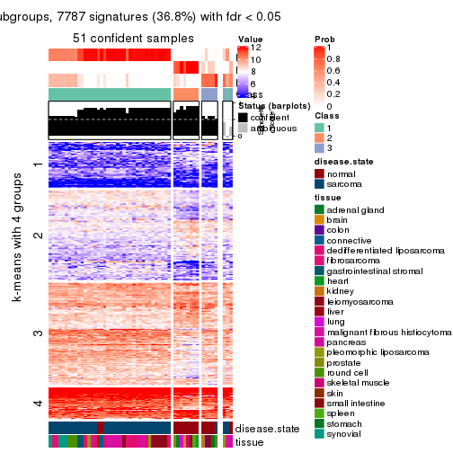
get_signatures(res, k = 4, scale_rows = FALSE)
get_signatures(res, k = 5, scale_rows = FALSE)
get_signatures(res, k = 6, scale_rows = FALSE)
Compare the overlap of signatures from different k:
compare_signatures(res)
get_signature() returns a data frame invisibly. TO get the list of signatures, the function
call should be assigned to a variable explicitly. In following code, if plot argument is set
to FALSE, no heatmap is plotted while only the differential analysis is performed.
# code only for demonstration
tb = get_signature(res, k = ..., plot = FALSE)
An example of the output of tb is:
#> which_row fdr mean_1 mean_2 scaled_mean_1 scaled_mean_2 km
#> 1 38 0.042760348 8.373488 9.131774 -0.5533452 0.5164555 1
#> 2 40 0.018707592 7.106213 8.469186 -0.6173731 0.5762149 1
#> 3 55 0.019134737 10.221463 11.207825 -0.6159697 0.5749050 1
#> 4 59 0.006059896 5.921854 7.869574 -0.6899429 0.6439467 1
#> 5 60 0.018055526 8.928898 10.211722 -0.6204761 0.5791110 1
#> 6 98 0.009384629 15.714769 14.887706 0.6635654 -0.6193277 2
...
The columns in tb are:
which_row: row indices corresponding to the input matrix.fdr: FDR for the differential test. mean_x: The mean value in group x.scaled_mean_x: The mean value in group x after rows are scaled.km: Row groups if k-means clustering is applied to rows.UMAP plot which shows how samples are separated.
dimension_reduction(res, k = 2, method = "UMAP")
dimension_reduction(res, k = 3, method = "UMAP")
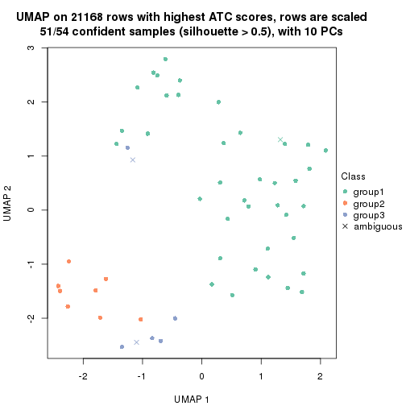
dimension_reduction(res, k = 4, method = "UMAP")

dimension_reduction(res, k = 5, method = "UMAP")

dimension_reduction(res, k = 6, method = "UMAP")
Following heatmap shows how subgroups are split when increasing k:
collect_classes(res)

Test correlation between subgroups and known annotations. If the known annotation is numeric, one-way ANOVA test is applied, and if the known annotation is discrete, chi-squared contingency table test is applied.
test_to_known_factors(res)
#> n disease.state(p) tissue(p) k
#> ATC:kmeans 54 2.40e-09 1.64e-04 2
#> ATC:kmeans 51 7.31e-09 9.08e-06 3
#> ATC:kmeans 50 7.25e-09 1.42e-07 4
#> ATC:kmeans 41 7.04e-08 2.32e-06 5
#> ATC:kmeans 28 1.25e-05 5.40e-05 6
If matrix rows can be associated to genes, consider to use functional_enrichment(res,
...) to perform function enrichment for the signature genes. See this vignette for more detailed explanations.
The object with results only for a single top-value method and a single partition method can be extracted as:
res = res_list["ATC", "skmeans"]
# you can also extract it by
# res = res_list["ATC:skmeans"]
A summary of res and all the functions that can be applied to it:
res
#> A 'ConsensusPartition' object with k = 2, 3, 4, 5, 6.
#> On a matrix with 21168 rows and 54 columns.
#> Top rows (1000, 2000, 3000, 4000, 5000) are extracted by 'ATC' method.
#> Subgroups are detected by 'skmeans' method.
#> Performed in total 1250 partitions by row resampling.
#> Best k for subgroups seems to be 3.
#>
#> Following methods can be applied to this 'ConsensusPartition' object:
#> [1] "cola_report" "collect_classes" "collect_plots"
#> [4] "collect_stats" "colnames" "compare_signatures"
#> [7] "consensus_heatmap" "dimension_reduction" "functional_enrichment"
#> [10] "get_anno_col" "get_anno" "get_classes"
#> [13] "get_consensus" "get_matrix" "get_membership"
#> [16] "get_param" "get_signatures" "get_stats"
#> [19] "is_best_k" "is_stable_k" "membership_heatmap"
#> [22] "ncol" "nrow" "plot_ecdf"
#> [25] "rownames" "select_partition_number" "show"
#> [28] "suggest_best_k" "test_to_known_factors"
collect_plots() function collects all the plots made from res for all k (number of partitions)
into one single page to provide an easy and fast comparison between different k.
collect_plots(res)
The plots are:
k and the heatmap of
predicted classes for each k.k.k.k.All the plots in panels can be made by individual functions and they are plotted later in this section.
select_partition_number() produces several plots showing different
statistics for choosing “optimized” k. There are following statistics:
k;k, the area increased is defined as \(A_k - A_{k-1}\).The detailed explanations of these statistics can be found in the cola vignette.
Generally speaking, lower PAC score, higher mean silhouette score or higher
concordance corresponds to better partition. Rand index and Jaccard index
measure how similar the current partition is compared to partition with k-1.
If they are too similar, we won't accept k is better than k-1.
select_partition_number(res)
The numeric values for all these statistics can be obtained by get_stats().
get_stats(res)
#> k 1-PAC mean_silhouette concordance area_increased Rand Jaccard
#> 2 2 1.000 0.973 0.991 0.4327 0.575 0.575
#> 3 3 0.996 0.966 0.981 0.5103 0.765 0.592
#> 4 4 0.744 0.814 0.881 0.1099 0.936 0.814
#> 5 5 0.695 0.704 0.820 0.0656 0.956 0.848
#> 6 6 0.738 0.588 0.777 0.0459 0.982 0.927
suggest_best_k() suggests the best \(k\) based on these statistics. The rules are as follows:
suggest_best_k(res)
#> [1] 3
#> attr(,"optional")
#> [1] 2
There is also optional best \(k\) = 2 that is worth to check.
Following shows the table of the partitions (You need to click the show/hide
code output link to see it). The membership matrix (columns with name p*)
is inferred by
clue::cl_consensus()
function with the SE method. Basically the value in the membership matrix
represents the probability to belong to a certain group. The finall class
label for an item is determined with the group with highest probability it
belongs to.
In get_classes() function, the entropy is calculated from the membership
matrix and the silhouette score is calculated from the consensus matrix.
cbind(get_classes(res, k = 2), get_membership(res, k = 2))
#> class entropy silhouette p1 p2
#> GSM52556 2 0.0000 1.0000 0.000 1.000
#> GSM52557 2 0.0000 1.0000 0.000 1.000
#> GSM52558 2 0.0000 1.0000 0.000 1.000
#> GSM52559 2 0.0000 1.0000 0.000 1.000
#> GSM52560 2 0.0000 1.0000 0.000 1.000
#> GSM52561 1 0.0000 0.9866 1.000 0.000
#> GSM52562 2 0.0000 1.0000 0.000 1.000
#> GSM52563 2 0.0000 1.0000 0.000 1.000
#> GSM52564 1 0.0000 0.9866 1.000 0.000
#> GSM52565 2 0.0000 1.0000 0.000 1.000
#> GSM52566 2 0.0000 1.0000 0.000 1.000
#> GSM52567 2 0.0000 1.0000 0.000 1.000
#> GSM52568 2 0.0000 1.0000 0.000 1.000
#> GSM52569 2 0.0000 1.0000 0.000 1.000
#> GSM52570 2 0.0000 1.0000 0.000 1.000
#> GSM52571 1 0.0000 0.9866 1.000 0.000
#> GSM52572 1 0.0000 0.9866 1.000 0.000
#> GSM52573 1 0.0000 0.9866 1.000 0.000
#> GSM52574 1 0.0000 0.9866 1.000 0.000
#> GSM52575 1 0.0000 0.9866 1.000 0.000
#> GSM52576 1 0.0000 0.9866 1.000 0.000
#> GSM52577 1 0.0000 0.9866 1.000 0.000
#> GSM52578 1 0.0000 0.9866 1.000 0.000
#> GSM52579 1 0.0000 0.9866 1.000 0.000
#> GSM52580 1 0.0000 0.9866 1.000 0.000
#> GSM52581 1 0.0000 0.9866 1.000 0.000
#> GSM52582 1 0.0000 0.9866 1.000 0.000
#> GSM52583 1 0.0000 0.9866 1.000 0.000
#> GSM52584 1 0.0000 0.9866 1.000 0.000
#> GSM52585 1 0.0000 0.9866 1.000 0.000
#> GSM52586 1 0.0000 0.9866 1.000 0.000
#> GSM52587 1 0.0000 0.9866 1.000 0.000
#> GSM52588 1 0.0376 0.9828 0.996 0.004
#> GSM52589 1 0.0000 0.9866 1.000 0.000
#> GSM52590 2 0.0000 1.0000 0.000 1.000
#> GSM52591 1 0.0000 0.9866 1.000 0.000
#> GSM52592 1 0.0000 0.9866 1.000 0.000
#> GSM52593 1 0.0000 0.9866 1.000 0.000
#> GSM52594 1 0.0000 0.9866 1.000 0.000
#> GSM52595 1 0.0000 0.9866 1.000 0.000
#> GSM52596 1 0.0000 0.9866 1.000 0.000
#> GSM52597 1 0.0000 0.9866 1.000 0.000
#> GSM52598 2 0.0000 1.0000 0.000 1.000
#> GSM52599 1 0.0000 0.9866 1.000 0.000
#> GSM52600 1 0.0000 0.9866 1.000 0.000
#> GSM52601 1 0.0000 0.9866 1.000 0.000
#> GSM52602 1 0.0000 0.9866 1.000 0.000
#> GSM52603 2 0.0000 1.0000 0.000 1.000
#> GSM52604 1 0.9996 0.0468 0.512 0.488
#> GSM52605 1 0.0000 0.9866 1.000 0.000
#> GSM52606 1 0.0000 0.9866 1.000 0.000
#> GSM52607 1 0.0000 0.9866 1.000 0.000
#> GSM52608 1 0.0000 0.9866 1.000 0.000
#> GSM52609 1 0.0000 0.9866 1.000 0.000
cbind(get_classes(res, k = 3), get_membership(res, k = 3))
#> class entropy silhouette p1 p2 p3
#> GSM52556 2 0.0000 0.997 0.000 1.000 0.000
#> GSM52557 2 0.0000 0.997 0.000 1.000 0.000
#> GSM52558 2 0.0000 0.997 0.000 1.000 0.000
#> GSM52559 2 0.0000 0.997 0.000 1.000 0.000
#> GSM52560 2 0.0000 0.997 0.000 1.000 0.000
#> GSM52561 3 0.5216 0.714 0.260 0.000 0.740
#> GSM52562 2 0.0000 0.997 0.000 1.000 0.000
#> GSM52563 2 0.0000 0.997 0.000 1.000 0.000
#> GSM52564 1 0.0424 0.988 0.992 0.000 0.008
#> GSM52565 2 0.0000 0.997 0.000 1.000 0.000
#> GSM52566 2 0.0000 0.997 0.000 1.000 0.000
#> GSM52567 2 0.0000 0.997 0.000 1.000 0.000
#> GSM52568 2 0.0000 0.997 0.000 1.000 0.000
#> GSM52569 2 0.0000 0.997 0.000 1.000 0.000
#> GSM52570 2 0.0000 0.997 0.000 1.000 0.000
#> GSM52571 1 0.0000 0.994 1.000 0.000 0.000
#> GSM52572 1 0.0000 0.994 1.000 0.000 0.000
#> GSM52573 3 0.0424 0.934 0.008 0.000 0.992
#> GSM52574 3 0.0424 0.934 0.008 0.000 0.992
#> GSM52575 3 0.2448 0.898 0.076 0.000 0.924
#> GSM52576 1 0.2165 0.928 0.936 0.000 0.064
#> GSM52577 1 0.0892 0.977 0.980 0.000 0.020
#> GSM52578 3 0.2878 0.893 0.096 0.000 0.904
#> GSM52579 3 0.2711 0.897 0.088 0.000 0.912
#> GSM52580 1 0.0000 0.994 1.000 0.000 0.000
#> GSM52581 1 0.0000 0.994 1.000 0.000 0.000
#> GSM52582 1 0.0000 0.994 1.000 0.000 0.000
#> GSM52583 1 0.0000 0.994 1.000 0.000 0.000
#> GSM52584 1 0.0000 0.994 1.000 0.000 0.000
#> GSM52585 1 0.0000 0.994 1.000 0.000 0.000
#> GSM52586 1 0.0747 0.981 0.984 0.000 0.016
#> GSM52587 3 0.5291 0.701 0.268 0.000 0.732
#> GSM52588 1 0.0424 0.988 0.992 0.000 0.008
#> GSM52589 1 0.0000 0.994 1.000 0.000 0.000
#> GSM52590 2 0.0424 0.993 0.000 0.992 0.008
#> GSM52591 1 0.0000 0.994 1.000 0.000 0.000
#> GSM52592 1 0.0424 0.988 0.992 0.000 0.008
#> GSM52593 1 0.0000 0.994 1.000 0.000 0.000
#> GSM52594 1 0.0000 0.994 1.000 0.000 0.000
#> GSM52595 1 0.0000 0.994 1.000 0.000 0.000
#> GSM52596 1 0.0000 0.994 1.000 0.000 0.000
#> GSM52597 1 0.0000 0.994 1.000 0.000 0.000
#> GSM52598 2 0.0424 0.993 0.000 0.992 0.008
#> GSM52599 1 0.0000 0.994 1.000 0.000 0.000
#> GSM52600 1 0.0000 0.994 1.000 0.000 0.000
#> GSM52601 1 0.0000 0.994 1.000 0.000 0.000
#> GSM52602 3 0.0000 0.928 0.000 0.000 1.000
#> GSM52603 2 0.1289 0.972 0.000 0.968 0.032
#> GSM52604 3 0.0000 0.928 0.000 0.000 1.000
#> GSM52605 3 0.0424 0.934 0.008 0.000 0.992
#> GSM52606 3 0.0424 0.934 0.008 0.000 0.992
#> GSM52607 3 0.0424 0.934 0.008 0.000 0.992
#> GSM52608 3 0.0424 0.934 0.008 0.000 0.992
#> GSM52609 3 0.0424 0.934 0.008 0.000 0.992
cbind(get_classes(res, k = 4), get_membership(res, k = 4))
#> class entropy silhouette p1 p2 p3 p4
#> GSM52556 2 0.0000 0.935 0.000 1.000 0.000 0.000
#> GSM52557 2 0.0592 0.932 0.000 0.984 0.000 0.016
#> GSM52558 2 0.0592 0.932 0.000 0.984 0.000 0.016
#> GSM52559 2 0.0469 0.933 0.000 0.988 0.000 0.012
#> GSM52560 2 0.0000 0.935 0.000 1.000 0.000 0.000
#> GSM52561 4 0.5180 0.832 0.064 0.000 0.196 0.740
#> GSM52562 2 0.0592 0.932 0.000 0.984 0.000 0.016
#> GSM52563 2 0.0000 0.935 0.000 1.000 0.000 0.000
#> GSM52564 4 0.5221 0.725 0.208 0.000 0.060 0.732
#> GSM52565 2 0.0000 0.935 0.000 1.000 0.000 0.000
#> GSM52566 2 0.0592 0.932 0.000 0.984 0.000 0.016
#> GSM52567 2 0.0000 0.935 0.000 1.000 0.000 0.000
#> GSM52568 2 0.0000 0.935 0.000 1.000 0.000 0.000
#> GSM52569 2 0.0000 0.935 0.000 1.000 0.000 0.000
#> GSM52570 2 0.0000 0.935 0.000 1.000 0.000 0.000
#> GSM52571 1 0.0804 0.834 0.980 0.000 0.008 0.012
#> GSM52572 1 0.2408 0.835 0.896 0.000 0.000 0.104
#> GSM52573 3 0.0469 0.919 0.012 0.000 0.988 0.000
#> GSM52574 3 0.0469 0.919 0.012 0.000 0.988 0.000
#> GSM52575 3 0.2281 0.830 0.096 0.000 0.904 0.000
#> GSM52576 1 0.3300 0.745 0.848 0.000 0.144 0.008
#> GSM52577 1 0.3697 0.756 0.852 0.000 0.100 0.048
#> GSM52578 4 0.5249 0.801 0.044 0.000 0.248 0.708
#> GSM52579 4 0.5219 0.804 0.044 0.000 0.244 0.712
#> GSM52580 1 0.4950 0.434 0.620 0.000 0.004 0.376
#> GSM52581 1 0.4776 0.444 0.624 0.000 0.000 0.376
#> GSM52582 1 0.4250 0.643 0.724 0.000 0.000 0.276
#> GSM52583 1 0.2408 0.835 0.896 0.000 0.000 0.104
#> GSM52584 1 0.0707 0.846 0.980 0.000 0.000 0.020
#> GSM52585 4 0.4855 0.434 0.352 0.000 0.004 0.644
#> GSM52586 1 0.5756 0.373 0.592 0.000 0.036 0.372
#> GSM52587 4 0.5180 0.832 0.064 0.000 0.196 0.740
#> GSM52588 1 0.4194 0.628 0.764 0.000 0.008 0.228
#> GSM52589 1 0.2345 0.828 0.900 0.000 0.000 0.100
#> GSM52590 2 0.4475 0.751 0.004 0.748 0.008 0.240
#> GSM52591 1 0.0707 0.843 0.980 0.000 0.000 0.020
#> GSM52592 1 0.1211 0.824 0.960 0.000 0.000 0.040
#> GSM52593 1 0.2081 0.843 0.916 0.000 0.000 0.084
#> GSM52594 1 0.2149 0.841 0.912 0.000 0.000 0.088
#> GSM52595 1 0.2149 0.841 0.912 0.000 0.000 0.088
#> GSM52596 1 0.2149 0.841 0.912 0.000 0.000 0.088
#> GSM52597 1 0.1211 0.842 0.960 0.000 0.000 0.040
#> GSM52598 2 0.6619 0.636 0.120 0.640 0.008 0.232
#> GSM52599 1 0.0469 0.843 0.988 0.000 0.000 0.012
#> GSM52600 1 0.0469 0.837 0.988 0.000 0.000 0.012
#> GSM52601 1 0.1716 0.846 0.936 0.000 0.000 0.064
#> GSM52602 3 0.3636 0.823 0.008 0.000 0.820 0.172
#> GSM52603 2 0.6745 0.569 0.000 0.604 0.152 0.244
#> GSM52604 3 0.3688 0.787 0.000 0.000 0.792 0.208
#> GSM52605 3 0.2542 0.884 0.012 0.000 0.904 0.084
#> GSM52606 3 0.0524 0.918 0.008 0.000 0.988 0.004
#> GSM52607 3 0.0336 0.919 0.008 0.000 0.992 0.000
#> GSM52608 3 0.0336 0.919 0.008 0.000 0.992 0.000
#> GSM52609 3 0.0524 0.918 0.008 0.000 0.988 0.004
cbind(get_classes(res, k = 5), get_membership(res, k = 5))
#> class entropy silhouette p1 p2 p3 p4 p5
#> GSM52556 2 0.0000 0.8656 0.000 1.000 0.000 0.000 0.000
#> GSM52557 2 0.4555 0.7525 0.000 0.732 0.004 0.052 0.212
#> GSM52558 2 0.4555 0.7525 0.000 0.732 0.004 0.052 0.212
#> GSM52559 2 0.4003 0.7825 0.000 0.780 0.004 0.036 0.180
#> GSM52560 2 0.0324 0.8636 0.000 0.992 0.000 0.004 0.004
#> GSM52561 4 0.3395 0.7578 0.048 0.000 0.104 0.844 0.004
#> GSM52562 2 0.4555 0.7525 0.000 0.732 0.004 0.052 0.212
#> GSM52563 2 0.0000 0.8656 0.000 1.000 0.000 0.000 0.000
#> GSM52564 4 0.3310 0.7012 0.136 0.000 0.024 0.836 0.004
#> GSM52565 2 0.0000 0.8656 0.000 1.000 0.000 0.000 0.000
#> GSM52566 2 0.4221 0.7744 0.000 0.764 0.004 0.044 0.188
#> GSM52567 2 0.0000 0.8656 0.000 1.000 0.000 0.000 0.000
#> GSM52568 2 0.0000 0.8656 0.000 1.000 0.000 0.000 0.000
#> GSM52569 2 0.0000 0.8656 0.000 1.000 0.000 0.000 0.000
#> GSM52570 2 0.0000 0.8656 0.000 1.000 0.000 0.000 0.000
#> GSM52571 1 0.2733 0.7599 0.888 0.000 0.016 0.016 0.080
#> GSM52572 1 0.3262 0.7589 0.840 0.000 0.000 0.124 0.036
#> GSM52573 3 0.0162 0.8684 0.004 0.000 0.996 0.000 0.000
#> GSM52574 3 0.0162 0.8684 0.004 0.000 0.996 0.000 0.000
#> GSM52575 3 0.1544 0.8180 0.068 0.000 0.932 0.000 0.000
#> GSM52576 1 0.5066 0.5194 0.656 0.000 0.296 0.020 0.028
#> GSM52577 1 0.6221 0.5539 0.656 0.000 0.172 0.088 0.084
#> GSM52578 4 0.4311 0.6809 0.020 0.000 0.264 0.712 0.004
#> GSM52579 4 0.4268 0.7032 0.024 0.000 0.244 0.728 0.004
#> GSM52580 1 0.4546 0.5600 0.688 0.000 0.008 0.284 0.020
#> GSM52581 1 0.4568 0.5555 0.684 0.000 0.008 0.288 0.020
#> GSM52582 1 0.4285 0.6561 0.752 0.000 0.008 0.208 0.032
#> GSM52583 1 0.2615 0.7641 0.892 0.000 0.008 0.080 0.020
#> GSM52584 1 0.1981 0.7819 0.924 0.000 0.000 0.028 0.048
#> GSM52585 4 0.4744 0.1389 0.408 0.000 0.000 0.572 0.020
#> GSM52586 1 0.4866 0.4649 0.620 0.000 0.016 0.352 0.012
#> GSM52587 4 0.3395 0.7587 0.048 0.000 0.104 0.844 0.004
#> GSM52588 5 0.5539 0.0812 0.324 0.000 0.004 0.076 0.596
#> GSM52589 1 0.5414 0.6176 0.660 0.000 0.000 0.140 0.200
#> GSM52590 5 0.5505 0.3170 0.000 0.452 0.000 0.064 0.484
#> GSM52591 1 0.2278 0.7706 0.908 0.000 0.000 0.032 0.060
#> GSM52592 1 0.4733 0.4786 0.624 0.000 0.000 0.028 0.348
#> GSM52593 1 0.1408 0.7812 0.948 0.000 0.008 0.044 0.000
#> GSM52594 1 0.1408 0.7812 0.948 0.000 0.008 0.044 0.000
#> GSM52595 1 0.1408 0.7812 0.948 0.000 0.008 0.044 0.000
#> GSM52596 1 0.1408 0.7812 0.948 0.000 0.008 0.044 0.000
#> GSM52597 1 0.4732 0.6543 0.716 0.000 0.000 0.076 0.208
#> GSM52598 5 0.5324 0.5052 0.072 0.232 0.000 0.016 0.680
#> GSM52599 1 0.1914 0.7722 0.924 0.000 0.000 0.016 0.060
#> GSM52600 1 0.4197 0.6304 0.728 0.000 0.000 0.028 0.244
#> GSM52601 1 0.0955 0.7831 0.968 0.000 0.000 0.028 0.004
#> GSM52602 3 0.5240 0.6334 0.004 0.000 0.664 0.080 0.252
#> GSM52603 5 0.6711 0.4264 0.000 0.236 0.080 0.096 0.588
#> GSM52604 3 0.5245 0.5966 0.000 0.000 0.640 0.080 0.280
#> GSM52605 3 0.4490 0.7252 0.004 0.000 0.756 0.072 0.168
#> GSM52606 3 0.0671 0.8662 0.004 0.000 0.980 0.016 0.000
#> GSM52607 3 0.0566 0.8680 0.004 0.000 0.984 0.012 0.000
#> GSM52608 3 0.0566 0.8680 0.004 0.000 0.984 0.012 0.000
#> GSM52609 3 0.0671 0.8662 0.004 0.000 0.980 0.016 0.000
cbind(get_classes(res, k = 6), get_membership(res, k = 6))
#> class entropy silhouette p1 p2 p3 p4 p5 p6
#> GSM52556 2 0.0000 0.7573 0.000 1.000 0.000 0.000 0.000 0.000
#> GSM52557 2 0.5443 0.5858 0.000 0.560 0.000 0.048 0.348 0.044
#> GSM52558 2 0.5443 0.5858 0.000 0.560 0.000 0.048 0.348 0.044
#> GSM52559 2 0.5344 0.6045 0.000 0.592 0.000 0.048 0.316 0.044
#> GSM52560 2 0.0520 0.7532 0.000 0.984 0.000 0.000 0.008 0.008
#> GSM52561 4 0.1864 0.7561 0.032 0.000 0.040 0.924 0.000 0.004
#> GSM52562 2 0.5443 0.5858 0.000 0.560 0.000 0.048 0.348 0.044
#> GSM52563 2 0.0000 0.7573 0.000 1.000 0.000 0.000 0.000 0.000
#> GSM52564 4 0.2195 0.7309 0.068 0.000 0.012 0.904 0.000 0.016
#> GSM52565 2 0.0000 0.7573 0.000 1.000 0.000 0.000 0.000 0.000
#> GSM52566 2 0.5384 0.5988 0.000 0.580 0.000 0.048 0.328 0.044
#> GSM52567 2 0.0000 0.7573 0.000 1.000 0.000 0.000 0.000 0.000
#> GSM52568 2 0.0000 0.7573 0.000 1.000 0.000 0.000 0.000 0.000
#> GSM52569 2 0.0000 0.7573 0.000 1.000 0.000 0.000 0.000 0.000
#> GSM52570 2 0.0000 0.7573 0.000 1.000 0.000 0.000 0.000 0.000
#> GSM52571 1 0.3282 0.6261 0.808 0.000 0.016 0.000 0.012 0.164
#> GSM52572 1 0.4189 0.6273 0.760 0.000 0.000 0.072 0.016 0.152
#> GSM52573 3 0.0146 0.7965 0.000 0.000 0.996 0.000 0.004 0.000
#> GSM52574 3 0.0146 0.7965 0.000 0.000 0.996 0.000 0.004 0.000
#> GSM52575 3 0.1606 0.7531 0.056 0.000 0.932 0.000 0.008 0.004
#> GSM52576 1 0.5553 0.3536 0.572 0.000 0.296 0.004 0.008 0.120
#> GSM52577 1 0.7076 0.0732 0.436 0.000 0.168 0.116 0.000 0.280
#> GSM52578 4 0.4032 0.6979 0.016 0.000 0.152 0.780 0.008 0.044
#> GSM52579 4 0.3665 0.7079 0.008 0.000 0.140 0.804 0.008 0.040
#> GSM52580 1 0.4437 0.6074 0.732 0.000 0.000 0.148 0.008 0.112
#> GSM52581 1 0.4465 0.6064 0.728 0.000 0.000 0.156 0.008 0.108
#> GSM52582 1 0.4024 0.6302 0.772 0.000 0.000 0.092 0.008 0.128
#> GSM52583 1 0.2605 0.6720 0.864 0.000 0.000 0.028 0.000 0.108
#> GSM52584 1 0.3966 0.6477 0.728 0.000 0.000 0.028 0.008 0.236
#> GSM52585 4 0.5938 -0.0900 0.404 0.000 0.000 0.436 0.012 0.148
#> GSM52586 1 0.5105 0.5612 0.664 0.000 0.004 0.224 0.016 0.092
#> GSM52587 4 0.1719 0.7555 0.032 0.000 0.032 0.932 0.000 0.004
#> GSM52588 6 0.5235 0.4335 0.124 0.004 0.000 0.024 0.172 0.676
#> GSM52589 1 0.5845 0.1084 0.480 0.000 0.008 0.048 0.048 0.416
#> GSM52590 5 0.5658 0.5617 0.000 0.348 0.000 0.004 0.504 0.144
#> GSM52591 1 0.2909 0.6540 0.828 0.000 0.000 0.012 0.004 0.156
#> GSM52592 6 0.3910 0.2123 0.328 0.000 0.004 0.008 0.000 0.660
#> GSM52593 1 0.0653 0.7022 0.980 0.000 0.000 0.004 0.004 0.012
#> GSM52594 1 0.0291 0.7024 0.992 0.000 0.000 0.004 0.000 0.004
#> GSM52595 1 0.0146 0.7024 0.996 0.000 0.000 0.004 0.000 0.000
#> GSM52596 1 0.0291 0.7025 0.992 0.000 0.000 0.004 0.000 0.004
#> GSM52597 1 0.4887 0.2367 0.536 0.000 0.000 0.044 0.008 0.412
#> GSM52598 6 0.5897 0.1713 0.024 0.144 0.000 0.008 0.232 0.592
#> GSM52599 1 0.2772 0.6375 0.816 0.000 0.000 0.000 0.004 0.180
#> GSM52600 1 0.4217 0.0898 0.524 0.000 0.004 0.000 0.008 0.464
#> GSM52601 1 0.0858 0.6994 0.968 0.000 0.000 0.000 0.004 0.028
#> GSM52602 3 0.3860 0.3187 0.000 0.000 0.528 0.000 0.472 0.000
#> GSM52603 5 0.4906 0.5674 0.000 0.132 0.064 0.000 0.724 0.080
#> GSM52604 3 0.3868 0.2755 0.000 0.000 0.508 0.000 0.492 0.000
#> GSM52605 3 0.3737 0.4472 0.000 0.000 0.608 0.000 0.392 0.000
#> GSM52606 3 0.0937 0.7944 0.000 0.000 0.960 0.040 0.000 0.000
#> GSM52607 3 0.0632 0.7984 0.000 0.000 0.976 0.024 0.000 0.000
#> GSM52608 3 0.0790 0.7972 0.000 0.000 0.968 0.032 0.000 0.000
#> GSM52609 3 0.0937 0.7944 0.000 0.000 0.960 0.040 0.000 0.000
Heatmaps for the consensus matrix. It visualizes the probability of two samples to be in a same group.
consensus_heatmap(res, k = 2)
consensus_heatmap(res, k = 3)
consensus_heatmap(res, k = 4)
consensus_heatmap(res, k = 5)

consensus_heatmap(res, k = 6)
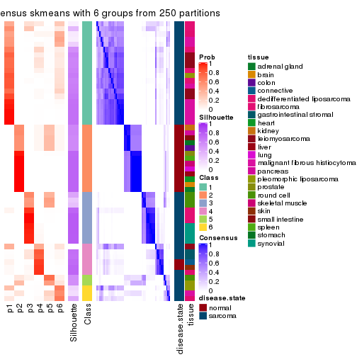
Heatmaps for the membership of samples in all partitions to see how consistent they are:
membership_heatmap(res, k = 2)
membership_heatmap(res, k = 3)
membership_heatmap(res, k = 4)
membership_heatmap(res, k = 5)
membership_heatmap(res, k = 6)
As soon as we have had the classes for columns, we can look for signatures which are significantly different between classes which can be candidate marks for certain classes. Following are the heatmaps for signatures.
Signature heatmaps where rows are scaled:
get_signatures(res, k = 2)
get_signatures(res, k = 3)
get_signatures(res, k = 4)
get_signatures(res, k = 5)
get_signatures(res, k = 6)
Signature heatmaps where rows are not scaled:
get_signatures(res, k = 2, scale_rows = FALSE)
get_signatures(res, k = 3, scale_rows = FALSE)
get_signatures(res, k = 4, scale_rows = FALSE)
get_signatures(res, k = 5, scale_rows = FALSE)
get_signatures(res, k = 6, scale_rows = FALSE)
Compare the overlap of signatures from different k:
compare_signatures(res)
get_signature() returns a data frame invisibly. TO get the list of signatures, the function
call should be assigned to a variable explicitly. In following code, if plot argument is set
to FALSE, no heatmap is plotted while only the differential analysis is performed.
# code only for demonstration
tb = get_signature(res, k = ..., plot = FALSE)
An example of the output of tb is:
#> which_row fdr mean_1 mean_2 scaled_mean_1 scaled_mean_2 km
#> 1 38 0.042760348 8.373488 9.131774 -0.5533452 0.5164555 1
#> 2 40 0.018707592 7.106213 8.469186 -0.6173731 0.5762149 1
#> 3 55 0.019134737 10.221463 11.207825 -0.6159697 0.5749050 1
#> 4 59 0.006059896 5.921854 7.869574 -0.6899429 0.6439467 1
#> 5 60 0.018055526 8.928898 10.211722 -0.6204761 0.5791110 1
#> 6 98 0.009384629 15.714769 14.887706 0.6635654 -0.6193277 2
...
The columns in tb are:
which_row: row indices corresponding to the input matrix.fdr: FDR for the differential test. mean_x: The mean value in group x.scaled_mean_x: The mean value in group x after rows are scaled.km: Row groups if k-means clustering is applied to rows.UMAP plot which shows how samples are separated.
dimension_reduction(res, k = 2, method = "UMAP")
dimension_reduction(res, k = 3, method = "UMAP")
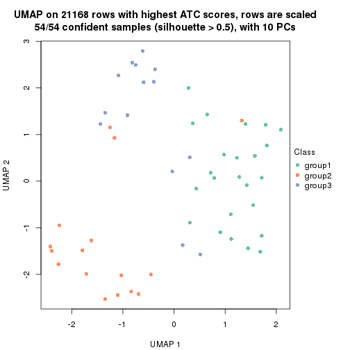
dimension_reduction(res, k = 4, method = "UMAP")
dimension_reduction(res, k = 5, method = "UMAP")
dimension_reduction(res, k = 6, method = "UMAP")
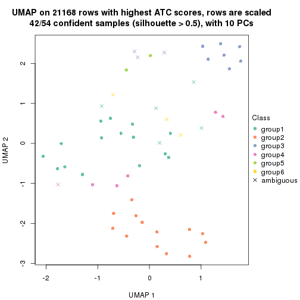
Following heatmap shows how subgroups are split when increasing k:
collect_classes(res)
Test correlation between subgroups and known annotations. If the known annotation is numeric, one-way ANOVA test is applied, and if the known annotation is discrete, chi-squared contingency table test is applied.
test_to_known_factors(res)
#> n disease.state(p) tissue(p) k
#> ATC:skmeans 53 1.19e-07 0.005502 2
#> ATC:skmeans 54 9.01e-08 0.000993 3
#> ATC:skmeans 50 3.76e-07 0.000255 4
#> ATC:skmeans 48 1.37e-08 0.003197 5
#> ATC:skmeans 42 2.01e-07 0.000359 6
If matrix rows can be associated to genes, consider to use functional_enrichment(res,
...) to perform function enrichment for the signature genes. See this vignette for more detailed explanations.
The object with results only for a single top-value method and a single partition method can be extracted as:
res = res_list["ATC", "pam"]
# you can also extract it by
# res = res_list["ATC:pam"]
A summary of res and all the functions that can be applied to it:
res
#> A 'ConsensusPartition' object with k = 2, 3, 4, 5, 6.
#> On a matrix with 21168 rows and 54 columns.
#> Top rows (1000, 2000, 3000, 4000, 5000) are extracted by 'ATC' method.
#> Subgroups are detected by 'pam' method.
#> Performed in total 1250 partitions by row resampling.
#> Best k for subgroups seems to be 6.
#>
#> Following methods can be applied to this 'ConsensusPartition' object:
#> [1] "cola_report" "collect_classes" "collect_plots"
#> [4] "collect_stats" "colnames" "compare_signatures"
#> [7] "consensus_heatmap" "dimension_reduction" "functional_enrichment"
#> [10] "get_anno_col" "get_anno" "get_classes"
#> [13] "get_consensus" "get_matrix" "get_membership"
#> [16] "get_param" "get_signatures" "get_stats"
#> [19] "is_best_k" "is_stable_k" "membership_heatmap"
#> [22] "ncol" "nrow" "plot_ecdf"
#> [25] "rownames" "select_partition_number" "show"
#> [28] "suggest_best_k" "test_to_known_factors"
collect_plots() function collects all the plots made from res for all k (number of partitions)
into one single page to provide an easy and fast comparison between different k.
collect_plots(res)
The plots are:
k and the heatmap of
predicted classes for each k.k.k.k.All the plots in panels can be made by individual functions and they are plotted later in this section.
select_partition_number() produces several plots showing different
statistics for choosing “optimized” k. There are following statistics:
k;k, the area increased is defined as \(A_k - A_{k-1}\).The detailed explanations of these statistics can be found in the cola vignette.
Generally speaking, lower PAC score, higher mean silhouette score or higher
concordance corresponds to better partition. Rand index and Jaccard index
measure how similar the current partition is compared to partition with k-1.
If they are too similar, we won't accept k is better than k-1.
select_partition_number(res)
The numeric values for all these statistics can be obtained by get_stats().
get_stats(res)
#> k 1-PAC mean_silhouette concordance area_increased Rand Jaccard
#> 2 2 0.924 0.963 0.983 0.2663 0.743 0.743
#> 3 3 0.558 0.800 0.847 0.8299 0.809 0.747
#> 4 4 0.820 0.883 0.950 0.3873 0.755 0.575
#> 5 5 0.707 0.645 0.815 0.0879 0.962 0.886
#> 6 6 0.943 0.904 0.963 0.0821 0.869 0.588
suggest_best_k() suggests the best \(k\) based on these statistics. The rules are as follows:
suggest_best_k(res)
#> [1] 6
#> attr(,"optional")
#> [1] 2
There is also optional best \(k\) = 2 that is worth to check.
Following shows the table of the partitions (You need to click the show/hide
code output link to see it). The membership matrix (columns with name p*)
is inferred by
clue::cl_consensus()
function with the SE method. Basically the value in the membership matrix
represents the probability to belong to a certain group. The finall class
label for an item is determined with the group with highest probability it
belongs to.
In get_classes() function, the entropy is calculated from the membership
matrix and the silhouette score is calculated from the consensus matrix.
cbind(get_classes(res, k = 2), get_membership(res, k = 2))
#> class entropy silhouette p1 p2
#> GSM52556 2 0.163 0.946 0.024 0.976
#> GSM52557 1 0.388 0.910 0.924 0.076
#> GSM52558 1 0.000 0.985 1.000 0.000
#> GSM52559 1 0.714 0.760 0.804 0.196
#> GSM52560 2 0.000 0.962 0.000 1.000
#> GSM52561 1 0.000 0.985 1.000 0.000
#> GSM52562 1 0.689 0.778 0.816 0.184
#> GSM52563 2 0.781 0.691 0.232 0.768
#> GSM52564 1 0.000 0.985 1.000 0.000
#> GSM52565 2 0.000 0.962 0.000 1.000
#> GSM52566 1 0.689 0.778 0.816 0.184
#> GSM52567 2 0.000 0.962 0.000 1.000
#> GSM52568 2 0.000 0.962 0.000 1.000
#> GSM52569 2 0.000 0.962 0.000 1.000
#> GSM52570 2 0.000 0.962 0.000 1.000
#> GSM52571 1 0.000 0.985 1.000 0.000
#> GSM52572 1 0.000 0.985 1.000 0.000
#> GSM52573 1 0.000 0.985 1.000 0.000
#> GSM52574 1 0.000 0.985 1.000 0.000
#> GSM52575 1 0.000 0.985 1.000 0.000
#> GSM52576 1 0.000 0.985 1.000 0.000
#> GSM52577 1 0.000 0.985 1.000 0.000
#> GSM52578 1 0.000 0.985 1.000 0.000
#> GSM52579 1 0.000 0.985 1.000 0.000
#> GSM52580 1 0.000 0.985 1.000 0.000
#> GSM52581 1 0.000 0.985 1.000 0.000
#> GSM52582 1 0.000 0.985 1.000 0.000
#> GSM52583 1 0.000 0.985 1.000 0.000
#> GSM52584 1 0.000 0.985 1.000 0.000
#> GSM52585 1 0.000 0.985 1.000 0.000
#> GSM52586 1 0.000 0.985 1.000 0.000
#> GSM52587 1 0.000 0.985 1.000 0.000
#> GSM52588 1 0.000 0.985 1.000 0.000
#> GSM52589 1 0.000 0.985 1.000 0.000
#> GSM52590 1 0.000 0.985 1.000 0.000
#> GSM52591 1 0.000 0.985 1.000 0.000
#> GSM52592 1 0.000 0.985 1.000 0.000
#> GSM52593 1 0.000 0.985 1.000 0.000
#> GSM52594 1 0.000 0.985 1.000 0.000
#> GSM52595 1 0.000 0.985 1.000 0.000
#> GSM52596 1 0.000 0.985 1.000 0.000
#> GSM52597 1 0.000 0.985 1.000 0.000
#> GSM52598 1 0.000 0.985 1.000 0.000
#> GSM52599 1 0.000 0.985 1.000 0.000
#> GSM52600 1 0.000 0.985 1.000 0.000
#> GSM52601 1 0.000 0.985 1.000 0.000
#> GSM52602 1 0.000 0.985 1.000 0.000
#> GSM52603 1 0.000 0.985 1.000 0.000
#> GSM52604 1 0.000 0.985 1.000 0.000
#> GSM52605 1 0.000 0.985 1.000 0.000
#> GSM52606 1 0.000 0.985 1.000 0.000
#> GSM52607 1 0.000 0.985 1.000 0.000
#> GSM52608 1 0.000 0.985 1.000 0.000
#> GSM52609 1 0.000 0.985 1.000 0.000
cbind(get_classes(res, k = 3), get_membership(res, k = 3))
#> class entropy silhouette p1 p2 p3
#> GSM52556 2 0.0592 0.583 0.012 0.988 0.000
#> GSM52557 2 0.3879 0.761 0.152 0.848 0.000
#> GSM52558 2 0.5988 0.564 0.368 0.632 0.000
#> GSM52559 2 0.3752 0.758 0.144 0.856 0.000
#> GSM52560 2 0.0000 0.551 0.000 1.000 0.000
#> GSM52561 1 0.5650 0.742 0.688 0.000 0.312
#> GSM52562 2 0.3879 0.761 0.152 0.848 0.000
#> GSM52563 2 0.1753 0.650 0.048 0.952 0.000
#> GSM52564 1 0.0000 0.852 1.000 0.000 0.000
#> GSM52565 3 0.5988 1.000 0.000 0.368 0.632
#> GSM52566 2 0.3879 0.761 0.152 0.848 0.000
#> GSM52567 3 0.5988 1.000 0.000 0.368 0.632
#> GSM52568 3 0.5988 1.000 0.000 0.368 0.632
#> GSM52569 3 0.5988 1.000 0.000 0.368 0.632
#> GSM52570 3 0.5988 1.000 0.000 0.368 0.632
#> GSM52571 1 0.0000 0.852 1.000 0.000 0.000
#> GSM52572 1 0.0000 0.852 1.000 0.000 0.000
#> GSM52573 1 0.5988 0.714 0.632 0.000 0.368
#> GSM52574 1 0.5988 0.714 0.632 0.000 0.368
#> GSM52575 1 0.5988 0.714 0.632 0.000 0.368
#> GSM52576 1 0.0424 0.851 0.992 0.000 0.008
#> GSM52577 1 0.3551 0.817 0.868 0.000 0.132
#> GSM52578 1 0.5465 0.750 0.712 0.000 0.288
#> GSM52579 1 0.5988 0.714 0.632 0.000 0.368
#> GSM52580 1 0.0592 0.851 0.988 0.000 0.012
#> GSM52581 1 0.0424 0.851 0.992 0.000 0.008
#> GSM52582 1 0.0000 0.852 1.000 0.000 0.000
#> GSM52583 1 0.1964 0.844 0.944 0.000 0.056
#> GSM52584 1 0.0000 0.852 1.000 0.000 0.000
#> GSM52585 1 0.0000 0.852 1.000 0.000 0.000
#> GSM52586 1 0.0000 0.852 1.000 0.000 0.000
#> GSM52587 1 0.5706 0.738 0.680 0.000 0.320
#> GSM52588 1 0.0000 0.852 1.000 0.000 0.000
#> GSM52589 1 0.0000 0.852 1.000 0.000 0.000
#> GSM52590 1 0.0000 0.852 1.000 0.000 0.000
#> GSM52591 1 0.0000 0.852 1.000 0.000 0.000
#> GSM52592 1 0.0000 0.852 1.000 0.000 0.000
#> GSM52593 1 0.0000 0.852 1.000 0.000 0.000
#> GSM52594 1 0.3116 0.830 0.892 0.000 0.108
#> GSM52595 1 0.2066 0.843 0.940 0.000 0.060
#> GSM52596 1 0.3038 0.831 0.896 0.000 0.104
#> GSM52597 1 0.0000 0.852 1.000 0.000 0.000
#> GSM52598 1 0.0000 0.852 1.000 0.000 0.000
#> GSM52599 1 0.0000 0.852 1.000 0.000 0.000
#> GSM52600 1 0.0000 0.852 1.000 0.000 0.000
#> GSM52601 1 0.0000 0.852 1.000 0.000 0.000
#> GSM52602 1 0.3551 0.823 0.868 0.000 0.132
#> GSM52603 2 0.6168 0.516 0.412 0.588 0.000
#> GSM52604 1 0.5591 0.751 0.696 0.000 0.304
#> GSM52605 1 0.5988 0.714 0.632 0.000 0.368
#> GSM52606 1 0.5988 0.714 0.632 0.000 0.368
#> GSM52607 1 0.5988 0.714 0.632 0.000 0.368
#> GSM52608 1 0.5988 0.714 0.632 0.000 0.368
#> GSM52609 1 0.5988 0.714 0.632 0.000 0.368
cbind(get_classes(res, k = 4), get_membership(res, k = 4))
#> class entropy silhouette p1 p2 p3 p4
#> GSM52556 2 0.000 0.990 0.000 1.000 0.000 0
#> GSM52557 2 0.000 0.990 0.000 1.000 0.000 0
#> GSM52558 2 0.000 0.990 0.000 1.000 0.000 0
#> GSM52559 2 0.000 0.990 0.000 1.000 0.000 0
#> GSM52560 2 0.000 0.990 0.000 1.000 0.000 0
#> GSM52561 3 0.357 0.721 0.196 0.000 0.804 0
#> GSM52562 2 0.000 0.990 0.000 1.000 0.000 0
#> GSM52563 2 0.000 0.990 0.000 1.000 0.000 0
#> GSM52564 1 0.000 0.920 1.000 0.000 0.000 0
#> GSM52565 4 0.000 1.000 0.000 0.000 0.000 1
#> GSM52566 2 0.000 0.990 0.000 1.000 0.000 0
#> GSM52567 4 0.000 1.000 0.000 0.000 0.000 1
#> GSM52568 4 0.000 1.000 0.000 0.000 0.000 1
#> GSM52569 4 0.000 1.000 0.000 0.000 0.000 1
#> GSM52570 4 0.000 1.000 0.000 0.000 0.000 1
#> GSM52571 1 0.000 0.920 1.000 0.000 0.000 0
#> GSM52572 1 0.000 0.920 1.000 0.000 0.000 0
#> GSM52573 3 0.000 0.908 0.000 0.000 1.000 0
#> GSM52574 3 0.000 0.908 0.000 0.000 1.000 0
#> GSM52575 3 0.000 0.908 0.000 0.000 1.000 0
#> GSM52576 1 0.000 0.920 1.000 0.000 0.000 0
#> GSM52577 1 0.433 0.539 0.712 0.000 0.288 0
#> GSM52578 3 0.456 0.549 0.328 0.000 0.672 0
#> GSM52579 3 0.000 0.908 0.000 0.000 1.000 0
#> GSM52580 1 0.172 0.881 0.936 0.000 0.064 0
#> GSM52581 1 0.241 0.850 0.896 0.000 0.104 0
#> GSM52582 1 0.000 0.920 1.000 0.000 0.000 0
#> GSM52583 1 0.416 0.672 0.736 0.000 0.264 0
#> GSM52584 1 0.000 0.920 1.000 0.000 0.000 0
#> GSM52585 1 0.000 0.920 1.000 0.000 0.000 0
#> GSM52586 1 0.000 0.920 1.000 0.000 0.000 0
#> GSM52587 3 0.147 0.871 0.052 0.000 0.948 0
#> GSM52588 1 0.000 0.920 1.000 0.000 0.000 0
#> GSM52589 1 0.000 0.920 1.000 0.000 0.000 0
#> GSM52590 1 0.000 0.920 1.000 0.000 0.000 0
#> GSM52591 1 0.000 0.920 1.000 0.000 0.000 0
#> GSM52592 1 0.000 0.920 1.000 0.000 0.000 0
#> GSM52593 1 0.000 0.920 1.000 0.000 0.000 0
#> GSM52594 1 0.485 0.422 0.600 0.000 0.400 0
#> GSM52595 1 0.331 0.787 0.828 0.000 0.172 0
#> GSM52596 1 0.484 0.431 0.604 0.000 0.396 0
#> GSM52597 1 0.000 0.920 1.000 0.000 0.000 0
#> GSM52598 1 0.000 0.920 1.000 0.000 0.000 0
#> GSM52599 1 0.000 0.920 1.000 0.000 0.000 0
#> GSM52600 1 0.000 0.920 1.000 0.000 0.000 0
#> GSM52601 1 0.000 0.920 1.000 0.000 0.000 0
#> GSM52602 1 0.365 0.745 0.796 0.000 0.204 0
#> GSM52603 2 0.147 0.920 0.052 0.948 0.000 0
#> GSM52604 3 0.365 0.705 0.204 0.000 0.796 0
#> GSM52605 3 0.000 0.908 0.000 0.000 1.000 0
#> GSM52606 3 0.000 0.908 0.000 0.000 1.000 0
#> GSM52607 3 0.000 0.908 0.000 0.000 1.000 0
#> GSM52608 3 0.000 0.908 0.000 0.000 1.000 0
#> GSM52609 3 0.000 0.908 0.000 0.000 1.000 0
cbind(get_classes(res, k = 5), get_membership(res, k = 5))
#> class entropy silhouette p1 p2 p3 p4 p5
#> GSM52556 4 0.430 0.0580 0.000 0.000 0.000 0.512 0.488
#> GSM52557 5 0.000 0.9633 0.000 0.000 0.000 0.000 1.000
#> GSM52558 5 0.000 0.9633 0.000 0.000 0.000 0.000 1.000
#> GSM52559 5 0.000 0.9633 0.000 0.000 0.000 0.000 1.000
#> GSM52560 4 0.431 0.0484 0.000 0.000 0.000 0.508 0.492
#> GSM52561 3 0.307 0.7096 0.196 0.000 0.804 0.000 0.000
#> GSM52562 5 0.000 0.9633 0.000 0.000 0.000 0.000 1.000
#> GSM52563 4 0.430 0.0580 0.000 0.000 0.000 0.512 0.488
#> GSM52564 1 0.430 0.7134 0.512 0.000 0.000 0.488 0.000
#> GSM52565 2 0.000 0.9001 0.000 1.000 0.000 0.000 0.000
#> GSM52566 5 0.000 0.9633 0.000 0.000 0.000 0.000 1.000
#> GSM52567 2 0.000 0.9001 0.000 1.000 0.000 0.000 0.000
#> GSM52568 4 0.430 -0.5083 0.000 0.488 0.000 0.512 0.000
#> GSM52569 2 0.375 0.6391 0.000 0.708 0.000 0.292 0.000
#> GSM52570 2 0.000 0.9001 0.000 1.000 0.000 0.000 0.000
#> GSM52571 1 0.430 0.7134 0.512 0.000 0.000 0.488 0.000
#> GSM52572 1 0.430 0.7134 0.512 0.000 0.000 0.488 0.000
#> GSM52573 3 0.000 0.9067 0.000 0.000 1.000 0.000 0.000
#> GSM52574 3 0.000 0.9067 0.000 0.000 1.000 0.000 0.000
#> GSM52575 3 0.218 0.8160 0.112 0.000 0.888 0.000 0.000
#> GSM52576 1 0.430 0.7134 0.512 0.000 0.000 0.488 0.000
#> GSM52577 4 0.652 -0.5963 0.404 0.000 0.192 0.404 0.000
#> GSM52578 3 0.501 0.5487 0.224 0.000 0.688 0.088 0.000
#> GSM52579 3 0.000 0.9067 0.000 0.000 1.000 0.000 0.000
#> GSM52580 1 0.134 0.4799 0.944 0.000 0.056 0.000 0.000
#> GSM52581 1 0.207 0.4432 0.896 0.000 0.104 0.000 0.000
#> GSM52582 1 0.000 0.5112 1.000 0.000 0.000 0.000 0.000
#> GSM52583 1 0.311 0.3419 0.800 0.000 0.200 0.000 0.000
#> GSM52584 1 0.430 0.7134 0.512 0.000 0.000 0.488 0.000
#> GSM52585 1 0.430 0.7134 0.512 0.000 0.000 0.488 0.000
#> GSM52586 1 0.430 0.7134 0.512 0.000 0.000 0.488 0.000
#> GSM52587 3 0.127 0.8739 0.052 0.000 0.948 0.000 0.000
#> GSM52588 1 0.430 0.7134 0.512 0.000 0.000 0.488 0.000
#> GSM52589 1 0.430 0.7134 0.512 0.000 0.000 0.488 0.000
#> GSM52590 1 0.430 0.7134 0.512 0.000 0.000 0.488 0.000
#> GSM52591 1 0.430 0.7134 0.512 0.000 0.000 0.488 0.000
#> GSM52592 1 0.430 0.7134 0.512 0.000 0.000 0.488 0.000
#> GSM52593 1 0.000 0.5112 1.000 0.000 0.000 0.000 0.000
#> GSM52594 1 0.327 0.3168 0.780 0.000 0.220 0.000 0.000
#> GSM52595 1 0.218 0.4361 0.888 0.000 0.112 0.000 0.000
#> GSM52596 1 0.321 0.3276 0.788 0.000 0.212 0.000 0.000
#> GSM52597 1 0.430 0.7134 0.512 0.000 0.000 0.488 0.000
#> GSM52598 1 0.430 0.7134 0.512 0.000 0.000 0.488 0.000
#> GSM52599 1 0.430 0.7134 0.512 0.000 0.000 0.488 0.000
#> GSM52600 1 0.430 0.7134 0.512 0.000 0.000 0.488 0.000
#> GSM52601 1 0.000 0.5112 1.000 0.000 0.000 0.000 0.000
#> GSM52602 1 0.217 0.4752 0.908 0.000 0.076 0.016 0.000
#> GSM52603 5 0.196 0.8069 0.076 0.000 0.000 0.008 0.916
#> GSM52604 3 0.247 0.8133 0.104 0.000 0.884 0.012 0.000
#> GSM52605 3 0.000 0.9067 0.000 0.000 1.000 0.000 0.000
#> GSM52606 3 0.000 0.9067 0.000 0.000 1.000 0.000 0.000
#> GSM52607 3 0.000 0.9067 0.000 0.000 1.000 0.000 0.000
#> GSM52608 3 0.000 0.9067 0.000 0.000 1.000 0.000 0.000
#> GSM52609 3 0.000 0.9067 0.000 0.000 1.000 0.000 0.000
cbind(get_classes(res, k = 6), get_membership(res, k = 6))
#> class entropy silhouette p1 p2 p3 p4 p5 p6
#> GSM52556 2 0.0146 0.8659 0.000 0.996 0.000 0.000 0.000 0.004
#> GSM52557 6 0.0000 0.9715 0.000 0.000 0.000 0.000 0.000 1.000
#> GSM52558 6 0.0000 0.9715 0.000 0.000 0.000 0.000 0.000 1.000
#> GSM52559 6 0.0000 0.9715 0.000 0.000 0.000 0.000 0.000 1.000
#> GSM52560 2 0.0260 0.8637 0.000 0.992 0.000 0.000 0.000 0.008
#> GSM52561 3 0.2762 0.7275 0.196 0.000 0.804 0.000 0.000 0.000
#> GSM52562 6 0.0000 0.9715 0.000 0.000 0.000 0.000 0.000 1.000
#> GSM52563 2 0.0146 0.8659 0.000 0.996 0.000 0.000 0.000 0.004
#> GSM52564 1 0.0000 0.9811 1.000 0.000 0.000 0.000 0.000 0.000
#> GSM52565 5 0.0000 1.0000 0.000 0.000 0.000 0.000 1.000 0.000
#> GSM52566 6 0.0000 0.9715 0.000 0.000 0.000 0.000 0.000 1.000
#> GSM52567 5 0.0000 1.0000 0.000 0.000 0.000 0.000 1.000 0.000
#> GSM52568 2 0.0146 0.8640 0.000 0.996 0.000 0.000 0.004 0.000
#> GSM52569 2 0.3868 0.0342 0.000 0.508 0.000 0.000 0.492 0.000
#> GSM52570 5 0.0000 1.0000 0.000 0.000 0.000 0.000 1.000 0.000
#> GSM52571 1 0.0000 0.9811 1.000 0.000 0.000 0.000 0.000 0.000
#> GSM52572 1 0.0000 0.9811 1.000 0.000 0.000 0.000 0.000 0.000
#> GSM52573 3 0.0000 0.9022 0.000 0.000 1.000 0.000 0.000 0.000
#> GSM52574 3 0.0000 0.9022 0.000 0.000 1.000 0.000 0.000 0.000
#> GSM52575 3 0.3151 0.6451 0.000 0.000 0.748 0.252 0.000 0.000
#> GSM52576 1 0.0000 0.9811 1.000 0.000 0.000 0.000 0.000 0.000
#> GSM52577 1 0.3101 0.6379 0.756 0.000 0.244 0.000 0.000 0.000
#> GSM52578 3 0.3446 0.5736 0.308 0.000 0.692 0.000 0.000 0.000
#> GSM52579 3 0.0000 0.9022 0.000 0.000 1.000 0.000 0.000 0.000
#> GSM52580 4 0.0146 0.9688 0.004 0.000 0.000 0.996 0.000 0.000
#> GSM52581 4 0.0146 0.9688 0.004 0.000 0.000 0.996 0.000 0.000
#> GSM52582 4 0.0146 0.9688 0.004 0.000 0.000 0.996 0.000 0.000
#> GSM52583 4 0.0146 0.9688 0.004 0.000 0.000 0.996 0.000 0.000
#> GSM52584 1 0.0000 0.9811 1.000 0.000 0.000 0.000 0.000 0.000
#> GSM52585 1 0.0000 0.9811 1.000 0.000 0.000 0.000 0.000 0.000
#> GSM52586 1 0.0000 0.9811 1.000 0.000 0.000 0.000 0.000 0.000
#> GSM52587 3 0.1141 0.8741 0.052 0.000 0.948 0.000 0.000 0.000
#> GSM52588 1 0.0000 0.9811 1.000 0.000 0.000 0.000 0.000 0.000
#> GSM52589 1 0.0000 0.9811 1.000 0.000 0.000 0.000 0.000 0.000
#> GSM52590 1 0.0146 0.9777 0.996 0.004 0.000 0.000 0.000 0.000
#> GSM52591 1 0.0000 0.9811 1.000 0.000 0.000 0.000 0.000 0.000
#> GSM52592 1 0.0000 0.9811 1.000 0.000 0.000 0.000 0.000 0.000
#> GSM52593 4 0.0146 0.9688 0.004 0.000 0.000 0.996 0.000 0.000
#> GSM52594 4 0.0146 0.9688 0.004 0.000 0.000 0.996 0.000 0.000
#> GSM52595 4 0.0146 0.9688 0.004 0.000 0.000 0.996 0.000 0.000
#> GSM52596 4 0.0146 0.9688 0.004 0.000 0.000 0.996 0.000 0.000
#> GSM52597 1 0.0000 0.9811 1.000 0.000 0.000 0.000 0.000 0.000
#> GSM52598 1 0.0000 0.9811 1.000 0.000 0.000 0.000 0.000 0.000
#> GSM52599 1 0.0000 0.9811 1.000 0.000 0.000 0.000 0.000 0.000
#> GSM52600 1 0.0000 0.9811 1.000 0.000 0.000 0.000 0.000 0.000
#> GSM52601 4 0.0146 0.9688 0.004 0.000 0.000 0.996 0.000 0.000
#> GSM52602 4 0.2902 0.6900 0.196 0.004 0.000 0.800 0.000 0.000
#> GSM52603 6 0.1897 0.8529 0.084 0.004 0.000 0.004 0.000 0.908
#> GSM52604 3 0.1732 0.8541 0.072 0.004 0.920 0.004 0.000 0.000
#> GSM52605 3 0.0291 0.8986 0.000 0.004 0.992 0.004 0.000 0.000
#> GSM52606 3 0.0000 0.9022 0.000 0.000 1.000 0.000 0.000 0.000
#> GSM52607 3 0.0000 0.9022 0.000 0.000 1.000 0.000 0.000 0.000
#> GSM52608 3 0.0000 0.9022 0.000 0.000 1.000 0.000 0.000 0.000
#> GSM52609 3 0.0000 0.9022 0.000 0.000 1.000 0.000 0.000 0.000
Heatmaps for the consensus matrix. It visualizes the probability of two samples to be in a same group.
consensus_heatmap(res, k = 2)

consensus_heatmap(res, k = 3)
consensus_heatmap(res, k = 4)
consensus_heatmap(res, k = 5)
consensus_heatmap(res, k = 6)
Heatmaps for the membership of samples in all partitions to see how consistent they are:
membership_heatmap(res, k = 2)

membership_heatmap(res, k = 3)
membership_heatmap(res, k = 4)

membership_heatmap(res, k = 5)
membership_heatmap(res, k = 6)
As soon as we have had the classes for columns, we can look for signatures which are significantly different between classes which can be candidate marks for certain classes. Following are the heatmaps for signatures.
Signature heatmaps where rows are scaled:
get_signatures(res, k = 2)
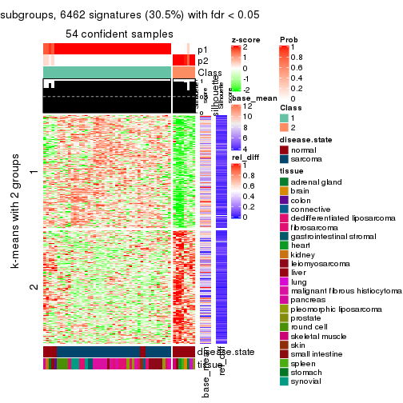
get_signatures(res, k = 3)
get_signatures(res, k = 4)
get_signatures(res, k = 5)
get_signatures(res, k = 6)
Signature heatmaps where rows are not scaled:
get_signatures(res, k = 2, scale_rows = FALSE)
get_signatures(res, k = 3, scale_rows = FALSE)
get_signatures(res, k = 4, scale_rows = FALSE)
get_signatures(res, k = 5, scale_rows = FALSE)
get_signatures(res, k = 6, scale_rows = FALSE)
Compare the overlap of signatures from different k:
compare_signatures(res)
get_signature() returns a data frame invisibly. TO get the list of signatures, the function
call should be assigned to a variable explicitly. In following code, if plot argument is set
to FALSE, no heatmap is plotted while only the differential analysis is performed.
# code only for demonstration
tb = get_signature(res, k = ..., plot = FALSE)
An example of the output of tb is:
#> which_row fdr mean_1 mean_2 scaled_mean_1 scaled_mean_2 km
#> 1 38 0.042760348 8.373488 9.131774 -0.5533452 0.5164555 1
#> 2 40 0.018707592 7.106213 8.469186 -0.6173731 0.5762149 1
#> 3 55 0.019134737 10.221463 11.207825 -0.6159697 0.5749050 1
#> 4 59 0.006059896 5.921854 7.869574 -0.6899429 0.6439467 1
#> 5 60 0.018055526 8.928898 10.211722 -0.6204761 0.5791110 1
#> 6 98 0.009384629 15.714769 14.887706 0.6635654 -0.6193277 2
...
The columns in tb are:
which_row: row indices corresponding to the input matrix.fdr: FDR for the differential test. mean_x: The mean value in group x.scaled_mean_x: The mean value in group x after rows are scaled.km: Row groups if k-means clustering is applied to rows.UMAP plot which shows how samples are separated.
dimension_reduction(res, k = 2, method = "UMAP")
dimension_reduction(res, k = 3, method = "UMAP")
dimension_reduction(res, k = 4, method = "UMAP")
dimension_reduction(res, k = 5, method = "UMAP")
dimension_reduction(res, k = 6, method = "UMAP")
Following heatmap shows how subgroups are split when increasing k:
collect_classes(res)
Test correlation between subgroups and known annotations. If the known annotation is numeric, one-way ANOVA test is applied, and if the known annotation is discrete, chi-squared contingency table test is applied.
test_to_known_factors(res)
#> n disease.state(p) tissue(p) k
#> ATC:pam 54 6.37e-06 1.64e-04 2
#> ATC:pam 54 1.96e-09 1.44e-06 3
#> ATC:pam 52 2.22e-08 3.31e-06 4
#> ATC:pam 42 3.61e-06 2.40e-05 5
#> ATC:pam 53 2.24e-07 3.47e-08 6
If matrix rows can be associated to genes, consider to use functional_enrichment(res,
...) to perform function enrichment for the signature genes. See this vignette for more detailed explanations.
The object with results only for a single top-value method and a single partition method can be extracted as:
res = res_list["ATC", "mclust"]
# you can also extract it by
# res = res_list["ATC:mclust"]
A summary of res and all the functions that can be applied to it:
res
#> A 'ConsensusPartition' object with k = 2, 3, 4, 5, 6.
#> On a matrix with 21168 rows and 54 columns.
#> Top rows (1000, 2000, 3000, 4000, 5000) are extracted by 'ATC' method.
#> Subgroups are detected by 'mclust' method.
#> Performed in total 1250 partitions by row resampling.
#> Best k for subgroups seems to be 3.
#>
#> Following methods can be applied to this 'ConsensusPartition' object:
#> [1] "cola_report" "collect_classes" "collect_plots"
#> [4] "collect_stats" "colnames" "compare_signatures"
#> [7] "consensus_heatmap" "dimension_reduction" "functional_enrichment"
#> [10] "get_anno_col" "get_anno" "get_classes"
#> [13] "get_consensus" "get_matrix" "get_membership"
#> [16] "get_param" "get_signatures" "get_stats"
#> [19] "is_best_k" "is_stable_k" "membership_heatmap"
#> [22] "ncol" "nrow" "plot_ecdf"
#> [25] "rownames" "select_partition_number" "show"
#> [28] "suggest_best_k" "test_to_known_factors"
collect_plots() function collects all the plots made from res for all k (number of partitions)
into one single page to provide an easy and fast comparison between different k.
collect_plots(res)
The plots are:
k and the heatmap of
predicted classes for each k.k.k.k.All the plots in panels can be made by individual functions and they are plotted later in this section.
select_partition_number() produces several plots showing different
statistics for choosing “optimized” k. There are following statistics:
k;k, the area increased is defined as \(A_k - A_{k-1}\).The detailed explanations of these statistics can be found in the cola vignette.
Generally speaking, lower PAC score, higher mean silhouette score or higher
concordance corresponds to better partition. Rand index and Jaccard index
measure how similar the current partition is compared to partition with k-1.
If they are too similar, we won't accept k is better than k-1.
select_partition_number(res)
The numeric values for all these statistics can be obtained by get_stats().
get_stats(res)
#> k 1-PAC mean_silhouette concordance area_increased Rand Jaccard
#> 2 2 1.000 0.997 0.999 0.3745 0.628 0.628
#> 3 3 0.913 0.893 0.958 0.6556 0.757 0.612
#> 4 4 0.851 0.857 0.945 0.0668 0.875 0.702
#> 5 5 0.843 0.911 0.943 0.0889 0.963 0.888
#> 6 6 0.787 0.815 0.888 0.0374 0.964 0.882
suggest_best_k() suggests the best \(k\) based on these statistics. The rules are as follows:
suggest_best_k(res)
#> [1] 3
#> attr(,"optional")
#> [1] 2
There is also optional best \(k\) = 2 that is worth to check.
Following shows the table of the partitions (You need to click the show/hide
code output link to see it). The membership matrix (columns with name p*)
is inferred by
clue::cl_consensus()
function with the SE method. Basically the value in the membership matrix
represents the probability to belong to a certain group. The finall class
label for an item is determined with the group with highest probability it
belongs to.
In get_classes() function, the entropy is calculated from the membership
matrix and the silhouette score is calculated from the consensus matrix.
cbind(get_classes(res, k = 2), get_membership(res, k = 2))
#> class entropy silhouette p1 p2
#> GSM52556 2 0.0000 1.000 0.000 1.000
#> GSM52557 2 0.0000 1.000 0.000 1.000
#> GSM52558 2 0.0000 1.000 0.000 1.000
#> GSM52559 2 0.0000 1.000 0.000 1.000
#> GSM52560 2 0.0000 1.000 0.000 1.000
#> GSM52561 1 0.0672 0.991 0.992 0.008
#> GSM52562 2 0.0000 1.000 0.000 1.000
#> GSM52563 2 0.0000 1.000 0.000 1.000
#> GSM52564 1 0.0000 0.998 1.000 0.000
#> GSM52565 2 0.0000 1.000 0.000 1.000
#> GSM52566 2 0.0000 1.000 0.000 1.000
#> GSM52567 2 0.0000 1.000 0.000 1.000
#> GSM52568 2 0.0000 1.000 0.000 1.000
#> GSM52569 2 0.0000 1.000 0.000 1.000
#> GSM52570 2 0.0000 1.000 0.000 1.000
#> GSM52571 1 0.0000 0.998 1.000 0.000
#> GSM52572 1 0.0000 0.998 1.000 0.000
#> GSM52573 1 0.0000 0.998 1.000 0.000
#> GSM52574 1 0.0000 0.998 1.000 0.000
#> GSM52575 1 0.0000 0.998 1.000 0.000
#> GSM52576 1 0.0000 0.998 1.000 0.000
#> GSM52577 1 0.0000 0.998 1.000 0.000
#> GSM52578 1 0.0000 0.998 1.000 0.000
#> GSM52579 1 0.2236 0.964 0.964 0.036
#> GSM52580 1 0.0000 0.998 1.000 0.000
#> GSM52581 1 0.0000 0.998 1.000 0.000
#> GSM52582 1 0.0000 0.998 1.000 0.000
#> GSM52583 1 0.0000 0.998 1.000 0.000
#> GSM52584 1 0.0000 0.998 1.000 0.000
#> GSM52585 1 0.0000 0.998 1.000 0.000
#> GSM52586 1 0.0000 0.998 1.000 0.000
#> GSM52587 1 0.2236 0.964 0.964 0.036
#> GSM52588 1 0.0000 0.998 1.000 0.000
#> GSM52589 1 0.0000 0.998 1.000 0.000
#> GSM52590 1 0.0000 0.998 1.000 0.000
#> GSM52591 1 0.0000 0.998 1.000 0.000
#> GSM52592 1 0.0000 0.998 1.000 0.000
#> GSM52593 1 0.0000 0.998 1.000 0.000
#> GSM52594 1 0.0000 0.998 1.000 0.000
#> GSM52595 1 0.0000 0.998 1.000 0.000
#> GSM52596 1 0.0000 0.998 1.000 0.000
#> GSM52597 1 0.0000 0.998 1.000 0.000
#> GSM52598 1 0.0000 0.998 1.000 0.000
#> GSM52599 1 0.0000 0.998 1.000 0.000
#> GSM52600 1 0.0000 0.998 1.000 0.000
#> GSM52601 1 0.0000 0.998 1.000 0.000
#> GSM52602 1 0.0000 0.998 1.000 0.000
#> GSM52603 1 0.0000 0.998 1.000 0.000
#> GSM52604 1 0.0000 0.998 1.000 0.000
#> GSM52605 1 0.0000 0.998 1.000 0.000
#> GSM52606 1 0.0000 0.998 1.000 0.000
#> GSM52607 1 0.0000 0.998 1.000 0.000
#> GSM52608 1 0.0000 0.998 1.000 0.000
#> GSM52609 1 0.0000 0.998 1.000 0.000
cbind(get_classes(res, k = 3), get_membership(res, k = 3))
#> class entropy silhouette p1 p2 p3
#> GSM52556 2 0.0000 0.948 0.000 1.000 0.000
#> GSM52557 2 0.0000 0.948 0.000 1.000 0.000
#> GSM52558 2 0.6793 0.028 0.452 0.536 0.012
#> GSM52559 2 0.0000 0.948 0.000 1.000 0.000
#> GSM52560 2 0.0000 0.948 0.000 1.000 0.000
#> GSM52561 1 0.6473 0.512 0.652 0.332 0.016
#> GSM52562 2 0.0000 0.948 0.000 1.000 0.000
#> GSM52563 2 0.0000 0.948 0.000 1.000 0.000
#> GSM52564 1 0.1774 0.921 0.960 0.024 0.016
#> GSM52565 2 0.0000 0.948 0.000 1.000 0.000
#> GSM52566 2 0.0000 0.948 0.000 1.000 0.000
#> GSM52567 2 0.0000 0.948 0.000 1.000 0.000
#> GSM52568 2 0.0000 0.948 0.000 1.000 0.000
#> GSM52569 2 0.0000 0.948 0.000 1.000 0.000
#> GSM52570 2 0.0000 0.948 0.000 1.000 0.000
#> GSM52571 1 0.0237 0.942 0.996 0.000 0.004
#> GSM52572 1 0.0000 0.945 1.000 0.000 0.000
#> GSM52573 3 0.0000 0.965 0.000 0.000 1.000
#> GSM52574 3 0.0000 0.965 0.000 0.000 1.000
#> GSM52575 3 0.1163 0.937 0.028 0.000 0.972
#> GSM52576 1 0.0000 0.945 1.000 0.000 0.000
#> GSM52577 1 0.0000 0.945 1.000 0.000 0.000
#> GSM52578 1 0.6217 0.623 0.712 0.264 0.024
#> GSM52579 1 0.6357 0.509 0.652 0.336 0.012
#> GSM52580 1 0.0000 0.945 1.000 0.000 0.000
#> GSM52581 1 0.0000 0.945 1.000 0.000 0.000
#> GSM52582 1 0.0000 0.945 1.000 0.000 0.000
#> GSM52583 1 0.0000 0.945 1.000 0.000 0.000
#> GSM52584 1 0.0000 0.945 1.000 0.000 0.000
#> GSM52585 1 0.1482 0.926 0.968 0.020 0.012
#> GSM52586 1 0.1163 0.927 0.972 0.000 0.028
#> GSM52587 1 0.6473 0.512 0.652 0.332 0.016
#> GSM52588 1 0.0424 0.941 0.992 0.000 0.008
#> GSM52589 1 0.0000 0.945 1.000 0.000 0.000
#> GSM52590 3 0.7677 0.510 0.092 0.252 0.656
#> GSM52591 1 0.0000 0.945 1.000 0.000 0.000
#> GSM52592 1 0.0000 0.945 1.000 0.000 0.000
#> GSM52593 1 0.0000 0.945 1.000 0.000 0.000
#> GSM52594 1 0.0000 0.945 1.000 0.000 0.000
#> GSM52595 1 0.0000 0.945 1.000 0.000 0.000
#> GSM52596 1 0.0000 0.945 1.000 0.000 0.000
#> GSM52597 1 0.0000 0.945 1.000 0.000 0.000
#> GSM52598 1 0.0424 0.941 0.992 0.000 0.008
#> GSM52599 1 0.0000 0.945 1.000 0.000 0.000
#> GSM52600 1 0.0000 0.945 1.000 0.000 0.000
#> GSM52601 1 0.0000 0.945 1.000 0.000 0.000
#> GSM52602 3 0.0000 0.965 0.000 0.000 1.000
#> GSM52603 3 0.0000 0.965 0.000 0.000 1.000
#> GSM52604 3 0.0000 0.965 0.000 0.000 1.000
#> GSM52605 3 0.0000 0.965 0.000 0.000 1.000
#> GSM52606 3 0.0000 0.965 0.000 0.000 1.000
#> GSM52607 3 0.0000 0.965 0.000 0.000 1.000
#> GSM52608 3 0.0000 0.965 0.000 0.000 1.000
#> GSM52609 3 0.0000 0.965 0.000 0.000 1.000
cbind(get_classes(res, k = 4), get_membership(res, k = 4))
#> class entropy silhouette p1 p2 p3 p4
#> GSM52556 2 0.1302 0.762 0.000 0.956 0.000 0.044
#> GSM52557 2 0.0000 0.787 0.000 1.000 0.000 0.000
#> GSM52558 2 0.0000 0.787 0.000 1.000 0.000 0.000
#> GSM52559 2 0.0000 0.787 0.000 1.000 0.000 0.000
#> GSM52560 2 0.1302 0.762 0.000 0.956 0.000 0.044
#> GSM52561 2 0.4632 0.517 0.308 0.688 0.000 0.004
#> GSM52562 2 0.0000 0.787 0.000 1.000 0.000 0.000
#> GSM52563 2 0.1302 0.762 0.000 0.956 0.000 0.044
#> GSM52564 1 0.1398 0.940 0.956 0.040 0.000 0.004
#> GSM52565 4 0.0188 0.791 0.000 0.004 0.000 0.996
#> GSM52566 2 0.0000 0.787 0.000 1.000 0.000 0.000
#> GSM52567 4 0.0188 0.791 0.000 0.004 0.000 0.996
#> GSM52568 4 0.4804 0.563 0.000 0.384 0.000 0.616
#> GSM52569 4 0.4804 0.562 0.000 0.384 0.000 0.616
#> GSM52570 4 0.0188 0.791 0.000 0.004 0.000 0.996
#> GSM52571 1 0.0000 0.973 1.000 0.000 0.000 0.000
#> GSM52572 1 0.0188 0.972 0.996 0.000 0.000 0.004
#> GSM52573 3 0.0000 0.936 0.000 0.000 1.000 0.000
#> GSM52574 3 0.0000 0.936 0.000 0.000 1.000 0.000
#> GSM52575 3 0.3172 0.707 0.160 0.000 0.840 0.000
#> GSM52576 1 0.0000 0.973 1.000 0.000 0.000 0.000
#> GSM52577 1 0.0188 0.972 0.996 0.000 0.000 0.004
#> GSM52578 1 0.2777 0.863 0.888 0.104 0.004 0.004
#> GSM52579 2 0.4632 0.517 0.308 0.688 0.000 0.004
#> GSM52580 1 0.0376 0.969 0.992 0.004 0.000 0.004
#> GSM52581 1 0.0000 0.973 1.000 0.000 0.000 0.000
#> GSM52582 1 0.0000 0.973 1.000 0.000 0.000 0.000
#> GSM52583 1 0.0000 0.973 1.000 0.000 0.000 0.000
#> GSM52584 1 0.0188 0.972 0.996 0.000 0.000 0.004
#> GSM52585 1 0.1109 0.951 0.968 0.028 0.000 0.004
#> GSM52586 1 0.1004 0.954 0.972 0.024 0.000 0.004
#> GSM52587 2 0.4632 0.517 0.308 0.688 0.000 0.004
#> GSM52588 1 0.0000 0.973 1.000 0.000 0.000 0.000
#> GSM52589 1 0.0188 0.972 0.996 0.000 0.000 0.004
#> GSM52590 1 0.5523 0.274 0.596 0.380 0.024 0.000
#> GSM52591 1 0.0000 0.973 1.000 0.000 0.000 0.000
#> GSM52592 1 0.0000 0.973 1.000 0.000 0.000 0.000
#> GSM52593 1 0.0000 0.973 1.000 0.000 0.000 0.000
#> GSM52594 1 0.0000 0.973 1.000 0.000 0.000 0.000
#> GSM52595 1 0.0000 0.973 1.000 0.000 0.000 0.000
#> GSM52596 1 0.0000 0.973 1.000 0.000 0.000 0.000
#> GSM52597 1 0.0188 0.972 0.996 0.000 0.000 0.004
#> GSM52598 1 0.0000 0.973 1.000 0.000 0.000 0.000
#> GSM52599 1 0.0000 0.973 1.000 0.000 0.000 0.000
#> GSM52600 1 0.0000 0.973 1.000 0.000 0.000 0.000
#> GSM52601 1 0.0000 0.973 1.000 0.000 0.000 0.000
#> GSM52602 3 0.0000 0.936 0.000 0.000 1.000 0.000
#> GSM52603 3 0.4406 0.521 0.000 0.300 0.700 0.000
#> GSM52604 3 0.0000 0.936 0.000 0.000 1.000 0.000
#> GSM52605 3 0.0000 0.936 0.000 0.000 1.000 0.000
#> GSM52606 3 0.0188 0.933 0.000 0.004 0.996 0.000
#> GSM52607 3 0.0000 0.936 0.000 0.000 1.000 0.000
#> GSM52608 3 0.0000 0.936 0.000 0.000 1.000 0.000
#> GSM52609 3 0.0000 0.936 0.000 0.000 1.000 0.000
cbind(get_classes(res, k = 5), get_membership(res, k = 5))
#> class entropy silhouette p1 p2 p3 p4 p5
#> GSM52556 2 0.2020 0.865 0.000 0.900 0.000 0.000 0.100
#> GSM52557 2 0.0000 0.889 0.000 1.000 0.000 0.000 0.000
#> GSM52558 2 0.4201 0.258 0.000 0.592 0.000 0.408 0.000
#> GSM52559 2 0.0000 0.889 0.000 1.000 0.000 0.000 0.000
#> GSM52560 2 0.2020 0.865 0.000 0.900 0.000 0.000 0.100
#> GSM52561 4 0.0510 0.969 0.000 0.016 0.000 0.984 0.000
#> GSM52562 2 0.0000 0.889 0.000 1.000 0.000 0.000 0.000
#> GSM52563 2 0.2020 0.865 0.000 0.900 0.000 0.000 0.100
#> GSM52564 1 0.3424 0.817 0.760 0.000 0.000 0.240 0.000
#> GSM52565 5 0.0000 0.978 0.000 0.000 0.000 0.000 1.000
#> GSM52566 2 0.0000 0.889 0.000 1.000 0.000 0.000 0.000
#> GSM52567 5 0.0000 0.978 0.000 0.000 0.000 0.000 1.000
#> GSM52568 5 0.1671 0.910 0.000 0.076 0.000 0.000 0.924
#> GSM52569 5 0.0000 0.978 0.000 0.000 0.000 0.000 1.000
#> GSM52570 5 0.0000 0.978 0.000 0.000 0.000 0.000 1.000
#> GSM52571 1 0.0671 0.922 0.980 0.000 0.004 0.016 0.000
#> GSM52572 1 0.2852 0.877 0.828 0.000 0.000 0.172 0.000
#> GSM52573 3 0.0000 0.981 0.000 0.000 1.000 0.000 0.000
#> GSM52574 3 0.0000 0.981 0.000 0.000 1.000 0.000 0.000
#> GSM52575 3 0.3011 0.788 0.140 0.000 0.844 0.016 0.000
#> GSM52576 1 0.0162 0.924 0.996 0.000 0.000 0.004 0.000
#> GSM52577 1 0.2966 0.871 0.816 0.000 0.000 0.184 0.000
#> GSM52578 4 0.0609 0.939 0.020 0.000 0.000 0.980 0.000
#> GSM52579 4 0.0880 0.971 0.000 0.032 0.000 0.968 0.000
#> GSM52580 1 0.2891 0.875 0.824 0.000 0.000 0.176 0.000
#> GSM52581 1 0.2074 0.911 0.896 0.000 0.000 0.104 0.000
#> GSM52582 1 0.0880 0.927 0.968 0.000 0.000 0.032 0.000
#> GSM52583 1 0.0000 0.923 1.000 0.000 0.000 0.000 0.000
#> GSM52584 1 0.2127 0.904 0.892 0.000 0.000 0.108 0.000
#> GSM52585 1 0.3143 0.855 0.796 0.000 0.000 0.204 0.000
#> GSM52586 1 0.3143 0.855 0.796 0.000 0.000 0.204 0.000
#> GSM52587 4 0.0880 0.971 0.000 0.032 0.000 0.968 0.000
#> GSM52588 1 0.0162 0.921 0.996 0.000 0.000 0.004 0.000
#> GSM52589 1 0.2329 0.902 0.876 0.000 0.000 0.124 0.000
#> GSM52590 1 0.0324 0.922 0.992 0.000 0.004 0.004 0.000
#> GSM52591 1 0.0880 0.927 0.968 0.000 0.000 0.032 0.000
#> GSM52592 1 0.0290 0.923 0.992 0.000 0.000 0.008 0.000
#> GSM52593 1 0.1410 0.921 0.940 0.000 0.000 0.060 0.000
#> GSM52594 1 0.0404 0.925 0.988 0.000 0.000 0.012 0.000
#> GSM52595 1 0.0609 0.926 0.980 0.000 0.000 0.020 0.000
#> GSM52596 1 0.0609 0.926 0.980 0.000 0.000 0.020 0.000
#> GSM52597 1 0.2891 0.875 0.824 0.000 0.000 0.176 0.000
#> GSM52598 1 0.0162 0.921 0.996 0.000 0.000 0.004 0.000
#> GSM52599 1 0.1478 0.919 0.936 0.000 0.000 0.064 0.000
#> GSM52600 1 0.0609 0.927 0.980 0.000 0.000 0.020 0.000
#> GSM52601 1 0.0510 0.926 0.984 0.000 0.000 0.016 0.000
#> GSM52602 3 0.0000 0.981 0.000 0.000 1.000 0.000 0.000
#> GSM52603 3 0.0000 0.981 0.000 0.000 1.000 0.000 0.000
#> GSM52604 3 0.0000 0.981 0.000 0.000 1.000 0.000 0.000
#> GSM52605 3 0.0000 0.981 0.000 0.000 1.000 0.000 0.000
#> GSM52606 3 0.0000 0.981 0.000 0.000 1.000 0.000 0.000
#> GSM52607 3 0.0000 0.981 0.000 0.000 1.000 0.000 0.000
#> GSM52608 3 0.0000 0.981 0.000 0.000 1.000 0.000 0.000
#> GSM52609 3 0.0000 0.981 0.000 0.000 1.000 0.000 0.000
cbind(get_classes(res, k = 6), get_membership(res, k = 6))
#> class entropy silhouette p1 p2 p3 p4 p5 p6
#> GSM52556 5 0.3916 0.903 0.000 0.064 0.000 0.000 0.752 0.184
#> GSM52557 6 0.0000 0.857 0.000 0.000 0.000 0.000 0.000 1.000
#> GSM52558 6 0.3944 0.315 0.004 0.000 0.000 0.428 0.000 0.568
#> GSM52559 6 0.0260 0.851 0.000 0.000 0.000 0.000 0.008 0.992
#> GSM52560 5 0.3858 0.873 0.000 0.044 0.000 0.000 0.740 0.216
#> GSM52561 4 0.0937 0.695 0.000 0.000 0.000 0.960 0.000 0.040
#> GSM52562 6 0.0000 0.857 0.000 0.000 0.000 0.000 0.000 1.000
#> GSM52563 5 0.3916 0.903 0.000 0.064 0.000 0.000 0.752 0.184
#> GSM52564 4 0.4463 -0.207 0.456 0.000 0.000 0.516 0.028 0.000
#> GSM52565 2 0.0000 0.947 0.000 1.000 0.000 0.000 0.000 0.000
#> GSM52566 6 0.0000 0.857 0.000 0.000 0.000 0.000 0.000 1.000
#> GSM52567 2 0.0000 0.947 0.000 1.000 0.000 0.000 0.000 0.000
#> GSM52568 5 0.3791 0.705 0.000 0.236 0.000 0.000 0.732 0.032
#> GSM52569 2 0.2362 0.820 0.000 0.860 0.000 0.000 0.136 0.004
#> GSM52570 2 0.0000 0.947 0.000 1.000 0.000 0.000 0.000 0.000
#> GSM52571 1 0.1887 0.860 0.924 0.000 0.016 0.012 0.048 0.000
#> GSM52572 1 0.3345 0.781 0.776 0.000 0.000 0.204 0.020 0.000
#> GSM52573 3 0.0000 0.949 0.000 0.000 1.000 0.000 0.000 0.000
#> GSM52574 3 0.0000 0.949 0.000 0.000 1.000 0.000 0.000 0.000
#> GSM52575 3 0.3047 0.812 0.084 0.000 0.848 0.004 0.064 0.000
#> GSM52576 1 0.1297 0.870 0.948 0.000 0.000 0.012 0.040 0.000
#> GSM52577 1 0.2730 0.804 0.808 0.000 0.000 0.192 0.000 0.000
#> GSM52578 4 0.1745 0.670 0.068 0.000 0.000 0.920 0.000 0.012
#> GSM52579 4 0.1327 0.686 0.000 0.000 0.000 0.936 0.000 0.064
#> GSM52580 1 0.3023 0.791 0.784 0.000 0.000 0.212 0.004 0.000
#> GSM52581 1 0.3062 0.817 0.816 0.000 0.000 0.160 0.024 0.000
#> GSM52582 1 0.1049 0.877 0.960 0.000 0.000 0.032 0.008 0.000
#> GSM52583 1 0.0622 0.872 0.980 0.000 0.000 0.012 0.008 0.000
#> GSM52584 1 0.2572 0.842 0.852 0.000 0.000 0.136 0.012 0.000
#> GSM52585 1 0.3950 0.700 0.696 0.000 0.000 0.276 0.028 0.000
#> GSM52586 1 0.4571 0.294 0.536 0.000 0.004 0.432 0.028 0.000
#> GSM52587 4 0.1327 0.686 0.000 0.000 0.000 0.936 0.000 0.064
#> GSM52588 1 0.1863 0.858 0.920 0.000 0.004 0.016 0.060 0.000
#> GSM52589 1 0.1958 0.859 0.896 0.000 0.004 0.100 0.000 0.000
#> GSM52590 1 0.3777 0.780 0.820 0.032 0.048 0.008 0.092 0.000
#> GSM52591 1 0.0865 0.875 0.964 0.000 0.000 0.036 0.000 0.000
#> GSM52592 1 0.1769 0.860 0.924 0.000 0.004 0.012 0.060 0.000
#> GSM52593 1 0.0937 0.874 0.960 0.000 0.000 0.040 0.000 0.000
#> GSM52594 1 0.0458 0.872 0.984 0.000 0.000 0.016 0.000 0.000
#> GSM52595 1 0.0458 0.872 0.984 0.000 0.000 0.016 0.000 0.000
#> GSM52596 1 0.0458 0.872 0.984 0.000 0.000 0.016 0.000 0.000
#> GSM52597 1 0.3424 0.778 0.772 0.000 0.000 0.204 0.024 0.000
#> GSM52598 1 0.1769 0.856 0.924 0.000 0.004 0.012 0.060 0.000
#> GSM52599 1 0.2266 0.857 0.880 0.000 0.000 0.108 0.012 0.000
#> GSM52600 1 0.1434 0.876 0.940 0.000 0.000 0.048 0.012 0.000
#> GSM52601 1 0.0993 0.875 0.964 0.000 0.000 0.024 0.012 0.000
#> GSM52602 3 0.0972 0.942 0.008 0.000 0.964 0.000 0.028 0.000
#> GSM52603 3 0.1116 0.940 0.008 0.000 0.960 0.004 0.028 0.000
#> GSM52604 3 0.0891 0.943 0.008 0.000 0.968 0.000 0.024 0.000
#> GSM52605 3 0.0260 0.949 0.000 0.000 0.992 0.000 0.008 0.000
#> GSM52606 3 0.1387 0.939 0.000 0.000 0.932 0.000 0.068 0.000
#> GSM52607 3 0.1387 0.939 0.000 0.000 0.932 0.000 0.068 0.000
#> GSM52608 3 0.1387 0.939 0.000 0.000 0.932 0.000 0.068 0.000
#> GSM52609 3 0.1387 0.939 0.000 0.000 0.932 0.000 0.068 0.000
Heatmaps for the consensus matrix. It visualizes the probability of two samples to be in a same group.
consensus_heatmap(res, k = 2)
consensus_heatmap(res, k = 3)
consensus_heatmap(res, k = 4)
consensus_heatmap(res, k = 5)
consensus_heatmap(res, k = 6)
Heatmaps for the membership of samples in all partitions to see how consistent they are:
membership_heatmap(res, k = 2)
membership_heatmap(res, k = 3)
membership_heatmap(res, k = 4)
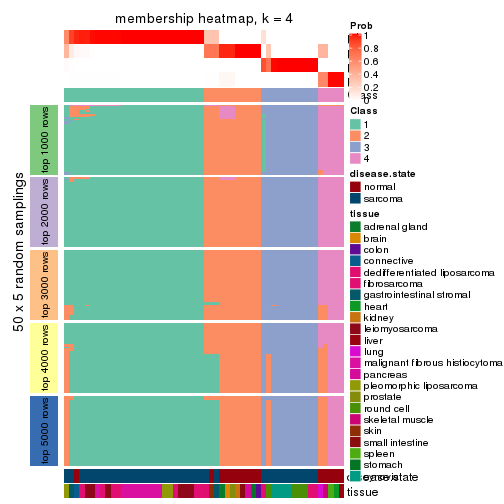
membership_heatmap(res, k = 5)
membership_heatmap(res, k = 6)
As soon as we have had the classes for columns, we can look for signatures which are significantly different between classes which can be candidate marks for certain classes. Following are the heatmaps for signatures.
Signature heatmaps where rows are scaled:
get_signatures(res, k = 2)
get_signatures(res, k = 3)
get_signatures(res, k = 4)
get_signatures(res, k = 5)
get_signatures(res, k = 6)
Signature heatmaps where rows are not scaled:
get_signatures(res, k = 2, scale_rows = FALSE)
get_signatures(res, k = 3, scale_rows = FALSE)
get_signatures(res, k = 4, scale_rows = FALSE)
get_signatures(res, k = 5, scale_rows = FALSE)
get_signatures(res, k = 6, scale_rows = FALSE)
Compare the overlap of signatures from different k:
compare_signatures(res)
get_signature() returns a data frame invisibly. TO get the list of signatures, the function
call should be assigned to a variable explicitly. In following code, if plot argument is set
to FALSE, no heatmap is plotted while only the differential analysis is performed.
# code only for demonstration
tb = get_signature(res, k = ..., plot = FALSE)
An example of the output of tb is:
#> which_row fdr mean_1 mean_2 scaled_mean_1 scaled_mean_2 km
#> 1 38 0.042760348 8.373488 9.131774 -0.5533452 0.5164555 1
#> 2 40 0.018707592 7.106213 8.469186 -0.6173731 0.5762149 1
#> 3 55 0.019134737 10.221463 11.207825 -0.6159697 0.5749050 1
#> 4 59 0.006059896 5.921854 7.869574 -0.6899429 0.6439467 1
#> 5 60 0.018055526 8.928898 10.211722 -0.6204761 0.5791110 1
#> 6 98 0.009384629 15.714769 14.887706 0.6635654 -0.6193277 2
...
The columns in tb are:
which_row: row indices corresponding to the input matrix.fdr: FDR for the differential test. mean_x: The mean value in group x.scaled_mean_x: The mean value in group x after rows are scaled.km: Row groups if k-means clustering is applied to rows.UMAP plot which shows how samples are separated.
dimension_reduction(res, k = 2, method = "UMAP")
dimension_reduction(res, k = 3, method = "UMAP")
dimension_reduction(res, k = 4, method = "UMAP")
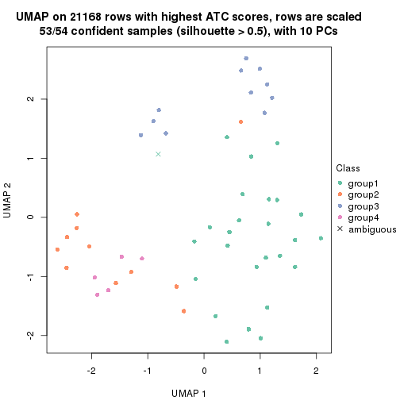
dimension_reduction(res, k = 5, method = "UMAP")
dimension_reduction(res, k = 6, method = "UMAP")
Following heatmap shows how subgroups are split when increasing k:
collect_classes(res)
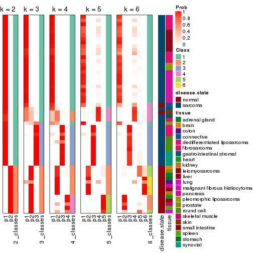
Test correlation between subgroups and known annotations. If the known annotation is numeric, one-way ANOVA test is applied, and if the known annotation is discrete, chi-squared contingency table test is applied.
test_to_known_factors(res)
#> n disease.state(p) tissue(p) k
#> ATC:mclust 54 2.67e-10 1.64e-04 2
#> ATC:mclust 53 3.73e-10 1.73e-05 3
#> ATC:mclust 53 9.68e-09 4.34e-07 4
#> ATC:mclust 53 5.85e-09 4.97e-10 5
#> ATC:mclust 51 5.55e-09 1.10e-12 6
If matrix rows can be associated to genes, consider to use functional_enrichment(res,
...) to perform function enrichment for the signature genes. See this vignette for more detailed explanations.
The object with results only for a single top-value method and a single partition method can be extracted as:
res = res_list["ATC", "NMF"]
# you can also extract it by
# res = res_list["ATC:NMF"]
A summary of res and all the functions that can be applied to it:
res
#> A 'ConsensusPartition' object with k = 2, 3, 4, 5, 6.
#> On a matrix with 21168 rows and 54 columns.
#> Top rows (1000, 2000, 3000, 4000, 5000) are extracted by 'ATC' method.
#> Subgroups are detected by 'NMF' method.
#> Performed in total 1250 partitions by row resampling.
#> Best k for subgroups seems to be 2.
#>
#> Following methods can be applied to this 'ConsensusPartition' object:
#> [1] "cola_report" "collect_classes" "collect_plots"
#> [4] "collect_stats" "colnames" "compare_signatures"
#> [7] "consensus_heatmap" "dimension_reduction" "functional_enrichment"
#> [10] "get_anno_col" "get_anno" "get_classes"
#> [13] "get_consensus" "get_matrix" "get_membership"
#> [16] "get_param" "get_signatures" "get_stats"
#> [19] "is_best_k" "is_stable_k" "membership_heatmap"
#> [22] "ncol" "nrow" "plot_ecdf"
#> [25] "rownames" "select_partition_number" "show"
#> [28] "suggest_best_k" "test_to_known_factors"
collect_plots() function collects all the plots made from res for all k (number of partitions)
into one single page to provide an easy and fast comparison between different k.
collect_plots(res)
The plots are:
k and the heatmap of
predicted classes for each k.k.k.k.All the plots in panels can be made by individual functions and they are plotted later in this section.
select_partition_number() produces several plots showing different
statistics for choosing “optimized” k. There are following statistics:
k;k, the area increased is defined as \(A_k - A_{k-1}\).The detailed explanations of these statistics can be found in the cola vignette.
Generally speaking, lower PAC score, higher mean silhouette score or higher
concordance corresponds to better partition. Rand index and Jaccard index
measure how similar the current partition is compared to partition with k-1.
If they are too similar, we won't accept k is better than k-1.
select_partition_number(res)
The numeric values for all these statistics can be obtained by get_stats().
get_stats(res)
#> k 1-PAC mean_silhouette concordance area_increased Rand Jaccard
#> 2 2 0.961 0.925 0.973 0.3081 0.717 0.717
#> 3 3 0.715 0.835 0.929 0.8170 0.697 0.587
#> 4 4 0.755 0.814 0.900 0.2488 0.753 0.506
#> 5 5 0.716 0.754 0.854 0.0637 0.924 0.767
#> 6 6 0.642 0.511 0.750 0.0618 0.945 0.808
suggest_best_k() suggests the best \(k\) based on these statistics. The rules are as follows:
suggest_best_k(res)
#> [1] 2
Following shows the table of the partitions (You need to click the show/hide
code output link to see it). The membership matrix (columns with name p*)
is inferred by
clue::cl_consensus()
function with the SE method. Basically the value in the membership matrix
represents the probability to belong to a certain group. The finall class
label for an item is determined with the group with highest probability it
belongs to.
In get_classes() function, the entropy is calculated from the membership
matrix and the silhouette score is calculated from the consensus matrix.
cbind(get_classes(res, k = 2), get_membership(res, k = 2))
#> class entropy silhouette p1 p2
#> GSM52556 2 0.0672 0.97112 0.008 0.992
#> GSM52557 1 0.8386 0.61679 0.732 0.268
#> GSM52558 1 0.0000 0.97013 1.000 0.000
#> GSM52559 2 0.6623 0.78326 0.172 0.828
#> GSM52560 2 0.0000 0.97461 0.000 1.000
#> GSM52561 1 0.0000 0.97013 1.000 0.000
#> GSM52562 1 1.0000 -0.00743 0.500 0.500
#> GSM52563 2 0.0938 0.96838 0.012 0.988
#> GSM52564 1 0.0000 0.97013 1.000 0.000
#> GSM52565 2 0.0000 0.97461 0.000 1.000
#> GSM52566 1 0.9996 0.03947 0.512 0.488
#> GSM52567 2 0.0000 0.97461 0.000 1.000
#> GSM52568 2 0.0000 0.97461 0.000 1.000
#> GSM52569 2 0.0000 0.97461 0.000 1.000
#> GSM52570 2 0.0000 0.97461 0.000 1.000
#> GSM52571 1 0.0000 0.97013 1.000 0.000
#> GSM52572 1 0.0000 0.97013 1.000 0.000
#> GSM52573 1 0.0000 0.97013 1.000 0.000
#> GSM52574 1 0.0000 0.97013 1.000 0.000
#> GSM52575 1 0.0000 0.97013 1.000 0.000
#> GSM52576 1 0.0000 0.97013 1.000 0.000
#> GSM52577 1 0.0000 0.97013 1.000 0.000
#> GSM52578 1 0.0000 0.97013 1.000 0.000
#> GSM52579 1 0.0000 0.97013 1.000 0.000
#> GSM52580 1 0.0000 0.97013 1.000 0.000
#> GSM52581 1 0.0000 0.97013 1.000 0.000
#> GSM52582 1 0.0000 0.97013 1.000 0.000
#> GSM52583 1 0.0000 0.97013 1.000 0.000
#> GSM52584 1 0.0000 0.97013 1.000 0.000
#> GSM52585 1 0.0000 0.97013 1.000 0.000
#> GSM52586 1 0.0000 0.97013 1.000 0.000
#> GSM52587 1 0.0000 0.97013 1.000 0.000
#> GSM52588 1 0.0000 0.97013 1.000 0.000
#> GSM52589 1 0.0000 0.97013 1.000 0.000
#> GSM52590 1 0.0000 0.97013 1.000 0.000
#> GSM52591 1 0.0000 0.97013 1.000 0.000
#> GSM52592 1 0.0000 0.97013 1.000 0.000
#> GSM52593 1 0.0000 0.97013 1.000 0.000
#> GSM52594 1 0.0000 0.97013 1.000 0.000
#> GSM52595 1 0.0000 0.97013 1.000 0.000
#> GSM52596 1 0.0000 0.97013 1.000 0.000
#> GSM52597 1 0.0000 0.97013 1.000 0.000
#> GSM52598 1 0.0000 0.97013 1.000 0.000
#> GSM52599 1 0.0000 0.97013 1.000 0.000
#> GSM52600 1 0.0000 0.97013 1.000 0.000
#> GSM52601 1 0.0000 0.97013 1.000 0.000
#> GSM52602 1 0.0000 0.97013 1.000 0.000
#> GSM52603 1 0.0000 0.97013 1.000 0.000
#> GSM52604 1 0.0000 0.97013 1.000 0.000
#> GSM52605 1 0.0000 0.97013 1.000 0.000
#> GSM52606 1 0.0000 0.97013 1.000 0.000
#> GSM52607 1 0.0000 0.97013 1.000 0.000
#> GSM52608 1 0.0000 0.97013 1.000 0.000
#> GSM52609 1 0.0000 0.97013 1.000 0.000
cbind(get_classes(res, k = 3), get_membership(res, k = 3))
#> class entropy silhouette p1 p2 p3
#> GSM52556 3 0.5291 0.531 0.000 0.268 0.732
#> GSM52557 3 0.0237 0.867 0.000 0.004 0.996
#> GSM52558 3 0.1411 0.847 0.000 0.036 0.964
#> GSM52559 3 0.0424 0.866 0.000 0.008 0.992
#> GSM52560 2 0.6204 0.375 0.000 0.576 0.424
#> GSM52561 3 0.0592 0.867 0.012 0.000 0.988
#> GSM52562 3 0.1031 0.857 0.000 0.024 0.976
#> GSM52563 2 0.5988 0.463 0.000 0.632 0.368
#> GSM52564 1 0.6204 0.213 0.576 0.000 0.424
#> GSM52565 2 0.0000 0.859 0.000 1.000 0.000
#> GSM52566 3 0.0000 0.867 0.000 0.000 1.000
#> GSM52567 2 0.0000 0.859 0.000 1.000 0.000
#> GSM52568 2 0.0000 0.859 0.000 1.000 0.000
#> GSM52569 2 0.0000 0.859 0.000 1.000 0.000
#> GSM52570 2 0.0000 0.859 0.000 1.000 0.000
#> GSM52571 1 0.0000 0.934 1.000 0.000 0.000
#> GSM52572 1 0.0237 0.933 0.996 0.000 0.004
#> GSM52573 1 0.4452 0.780 0.808 0.000 0.192
#> GSM52574 1 0.4605 0.766 0.796 0.000 0.204
#> GSM52575 1 0.3038 0.865 0.896 0.000 0.104
#> GSM52576 1 0.0237 0.933 0.996 0.000 0.004
#> GSM52577 1 0.0000 0.934 1.000 0.000 0.000
#> GSM52578 3 0.6095 0.364 0.392 0.000 0.608
#> GSM52579 3 0.0000 0.867 0.000 0.000 1.000
#> GSM52580 1 0.0237 0.933 0.996 0.000 0.004
#> GSM52581 1 0.0592 0.929 0.988 0.000 0.012
#> GSM52582 1 0.0000 0.934 1.000 0.000 0.000
#> GSM52583 1 0.0000 0.934 1.000 0.000 0.000
#> GSM52584 1 0.0000 0.934 1.000 0.000 0.000
#> GSM52585 1 0.1753 0.904 0.952 0.000 0.048
#> GSM52586 1 0.2066 0.895 0.940 0.000 0.060
#> GSM52587 3 0.0592 0.867 0.012 0.000 0.988
#> GSM52588 1 0.0000 0.934 1.000 0.000 0.000
#> GSM52589 1 0.0000 0.934 1.000 0.000 0.000
#> GSM52590 1 0.0592 0.930 0.988 0.012 0.000
#> GSM52591 1 0.0000 0.934 1.000 0.000 0.000
#> GSM52592 1 0.0000 0.934 1.000 0.000 0.000
#> GSM52593 1 0.0000 0.934 1.000 0.000 0.000
#> GSM52594 1 0.0000 0.934 1.000 0.000 0.000
#> GSM52595 1 0.0000 0.934 1.000 0.000 0.000
#> GSM52596 1 0.0000 0.934 1.000 0.000 0.000
#> GSM52597 1 0.0747 0.926 0.984 0.000 0.016
#> GSM52598 1 0.0237 0.933 0.996 0.000 0.004
#> GSM52599 1 0.0000 0.934 1.000 0.000 0.000
#> GSM52600 1 0.0000 0.934 1.000 0.000 0.000
#> GSM52601 1 0.0000 0.934 1.000 0.000 0.000
#> GSM52602 1 0.3619 0.837 0.864 0.000 0.136
#> GSM52603 1 0.5919 0.643 0.712 0.012 0.276
#> GSM52604 1 0.4654 0.762 0.792 0.000 0.208
#> GSM52605 1 0.4654 0.763 0.792 0.000 0.208
#> GSM52606 3 0.2165 0.845 0.064 0.000 0.936
#> GSM52607 3 0.3116 0.806 0.108 0.000 0.892
#> GSM52608 3 0.3267 0.797 0.116 0.000 0.884
#> GSM52609 3 0.2448 0.837 0.076 0.000 0.924
cbind(get_classes(res, k = 4), get_membership(res, k = 4))
#> class entropy silhouette p1 p2 p3 p4
#> GSM52556 2 0.6373 0.529984 0.000 0.636 0.116 0.248
#> GSM52557 4 0.1211 0.899097 0.000 0.000 0.040 0.960
#> GSM52558 4 0.2124 0.849194 0.068 0.000 0.008 0.924
#> GSM52559 4 0.2271 0.884943 0.000 0.008 0.076 0.916
#> GSM52560 4 0.4910 0.593902 0.000 0.276 0.020 0.704
#> GSM52561 4 0.1635 0.880016 0.044 0.000 0.008 0.948
#> GSM52562 4 0.1305 0.899386 0.000 0.004 0.036 0.960
#> GSM52563 2 0.3583 0.754314 0.000 0.816 0.004 0.180
#> GSM52564 1 0.4401 0.641020 0.724 0.000 0.004 0.272
#> GSM52565 2 0.0000 0.902563 0.000 1.000 0.000 0.000
#> GSM52566 4 0.2081 0.883592 0.000 0.000 0.084 0.916
#> GSM52567 2 0.0000 0.902563 0.000 1.000 0.000 0.000
#> GSM52568 2 0.0524 0.898890 0.000 0.988 0.004 0.008
#> GSM52569 2 0.0000 0.902563 0.000 1.000 0.000 0.000
#> GSM52570 2 0.0000 0.902563 0.000 1.000 0.000 0.000
#> GSM52571 1 0.4401 0.635455 0.724 0.000 0.272 0.004
#> GSM52572 1 0.0779 0.907628 0.980 0.000 0.004 0.016
#> GSM52573 3 0.1209 0.833333 0.032 0.000 0.964 0.004
#> GSM52574 3 0.1302 0.831987 0.044 0.000 0.956 0.000
#> GSM52575 3 0.2714 0.791986 0.112 0.000 0.884 0.004
#> GSM52576 3 0.5168 0.000486 0.492 0.000 0.504 0.004
#> GSM52577 1 0.2271 0.895365 0.916 0.000 0.076 0.008
#> GSM52578 1 0.7520 0.217201 0.492 0.000 0.228 0.280
#> GSM52579 4 0.2546 0.876479 0.008 0.000 0.092 0.900
#> GSM52580 1 0.1305 0.896946 0.960 0.000 0.004 0.036
#> GSM52581 1 0.1305 0.896310 0.960 0.000 0.004 0.036
#> GSM52582 1 0.0817 0.913165 0.976 0.000 0.024 0.000
#> GSM52583 1 0.1118 0.912326 0.964 0.000 0.036 0.000
#> GSM52584 1 0.0000 0.910369 1.000 0.000 0.000 0.000
#> GSM52585 1 0.2466 0.857409 0.900 0.000 0.004 0.096
#> GSM52586 1 0.2714 0.844819 0.884 0.000 0.004 0.112
#> GSM52587 4 0.1706 0.885367 0.036 0.000 0.016 0.948
#> GSM52588 1 0.2888 0.848921 0.872 0.000 0.124 0.004
#> GSM52589 1 0.1902 0.903788 0.932 0.000 0.064 0.004
#> GSM52590 3 0.6344 0.596053 0.208 0.124 0.664 0.004
#> GSM52591 1 0.0804 0.911882 0.980 0.000 0.012 0.008
#> GSM52592 1 0.1305 0.912163 0.960 0.000 0.036 0.004
#> GSM52593 1 0.1474 0.908076 0.948 0.000 0.052 0.000
#> GSM52594 1 0.1211 0.911719 0.960 0.000 0.040 0.000
#> GSM52595 1 0.1474 0.908691 0.948 0.000 0.052 0.000
#> GSM52596 1 0.1302 0.910678 0.956 0.000 0.044 0.000
#> GSM52597 1 0.1489 0.892038 0.952 0.000 0.004 0.044
#> GSM52598 1 0.1388 0.910905 0.960 0.000 0.028 0.012
#> GSM52599 1 0.1022 0.913333 0.968 0.000 0.032 0.000
#> GSM52600 1 0.1716 0.902343 0.936 0.000 0.064 0.000
#> GSM52601 1 0.0376 0.910405 0.992 0.000 0.004 0.004
#> GSM52602 3 0.2266 0.811309 0.084 0.000 0.912 0.004
#> GSM52603 3 0.1118 0.833133 0.036 0.000 0.964 0.000
#> GSM52604 3 0.0817 0.831226 0.024 0.000 0.976 0.000
#> GSM52605 3 0.1118 0.833652 0.036 0.000 0.964 0.000
#> GSM52606 3 0.4262 0.620058 0.008 0.000 0.756 0.236
#> GSM52607 3 0.2342 0.787051 0.008 0.000 0.912 0.080
#> GSM52608 3 0.2271 0.791164 0.008 0.000 0.916 0.076
#> GSM52609 3 0.3626 0.682709 0.004 0.000 0.812 0.184
cbind(get_classes(res, k = 5), get_membership(res, k = 5))
#> class entropy silhouette p1 p2 p3 p4 p5
#> GSM52556 2 0.5462 0.365 0.000 0.532 0.420 0.024 0.024
#> GSM52557 4 0.0798 0.881 0.000 0.000 0.016 0.976 0.008
#> GSM52558 4 0.1799 0.871 0.012 0.000 0.028 0.940 0.020
#> GSM52559 4 0.1117 0.878 0.000 0.000 0.016 0.964 0.020
#> GSM52560 4 0.1518 0.859 0.000 0.048 0.004 0.944 0.004
#> GSM52561 4 0.5159 0.749 0.084 0.000 0.188 0.712 0.016
#> GSM52562 4 0.0579 0.878 0.000 0.000 0.008 0.984 0.008
#> GSM52563 2 0.3264 0.800 0.000 0.820 0.164 0.016 0.000
#> GSM52564 1 0.4534 0.738 0.764 0.000 0.164 0.056 0.016
#> GSM52565 2 0.0000 0.898 0.000 1.000 0.000 0.000 0.000
#> GSM52566 4 0.3318 0.815 0.000 0.000 0.180 0.808 0.012
#> GSM52567 2 0.0000 0.898 0.000 1.000 0.000 0.000 0.000
#> GSM52568 2 0.0451 0.896 0.000 0.988 0.008 0.004 0.000
#> GSM52569 2 0.0404 0.895 0.000 0.988 0.012 0.000 0.000
#> GSM52570 2 0.0000 0.898 0.000 1.000 0.000 0.000 0.000
#> GSM52571 1 0.4494 0.482 0.608 0.000 0.012 0.000 0.380
#> GSM52572 1 0.0771 0.879 0.976 0.000 0.020 0.000 0.004
#> GSM52573 5 0.4522 0.475 0.024 0.000 0.316 0.000 0.660
#> GSM52574 5 0.4800 0.336 0.028 0.000 0.368 0.000 0.604
#> GSM52575 5 0.3454 0.744 0.064 0.000 0.100 0.000 0.836
#> GSM52576 1 0.5518 0.362 0.544 0.000 0.072 0.000 0.384
#> GSM52577 1 0.3141 0.806 0.832 0.000 0.152 0.000 0.016
#> GSM52578 3 0.3944 0.447 0.212 0.000 0.764 0.004 0.020
#> GSM52579 3 0.3857 0.510 0.048 0.000 0.812 0.132 0.008
#> GSM52580 1 0.1908 0.854 0.908 0.000 0.092 0.000 0.000
#> GSM52581 1 0.1894 0.859 0.920 0.000 0.072 0.000 0.008
#> GSM52582 1 0.1168 0.880 0.960 0.000 0.032 0.000 0.008
#> GSM52583 1 0.1041 0.880 0.964 0.000 0.004 0.000 0.032
#> GSM52584 1 0.1117 0.880 0.964 0.000 0.016 0.000 0.020
#> GSM52585 1 0.2927 0.835 0.880 0.000 0.080 0.020 0.020
#> GSM52586 1 0.3871 0.790 0.824 0.000 0.040 0.112 0.024
#> GSM52587 4 0.4715 0.783 0.060 0.000 0.188 0.740 0.012
#> GSM52588 1 0.3562 0.766 0.788 0.000 0.016 0.000 0.196
#> GSM52589 1 0.4629 0.640 0.688 0.000 0.020 0.012 0.280
#> GSM52590 5 0.2464 0.675 0.092 0.004 0.012 0.000 0.892
#> GSM52591 1 0.0000 0.879 1.000 0.000 0.000 0.000 0.000
#> GSM52592 1 0.1872 0.868 0.928 0.000 0.020 0.000 0.052
#> GSM52593 1 0.1168 0.880 0.960 0.000 0.008 0.000 0.032
#> GSM52594 1 0.1117 0.880 0.964 0.000 0.020 0.000 0.016
#> GSM52595 1 0.1485 0.879 0.948 0.000 0.032 0.000 0.020
#> GSM52596 1 0.1106 0.881 0.964 0.000 0.012 0.000 0.024
#> GSM52597 1 0.1701 0.872 0.944 0.000 0.028 0.012 0.016
#> GSM52598 1 0.4970 0.691 0.708 0.000 0.024 0.040 0.228
#> GSM52599 1 0.0912 0.879 0.972 0.000 0.012 0.000 0.016
#> GSM52600 1 0.2331 0.856 0.900 0.000 0.020 0.000 0.080
#> GSM52601 1 0.0404 0.879 0.988 0.000 0.012 0.000 0.000
#> GSM52602 5 0.2228 0.754 0.048 0.000 0.040 0.000 0.912
#> GSM52603 5 0.2228 0.694 0.012 0.000 0.004 0.076 0.908
#> GSM52604 5 0.2526 0.746 0.012 0.000 0.080 0.012 0.896
#> GSM52605 5 0.3399 0.707 0.020 0.000 0.168 0.000 0.812
#> GSM52606 3 0.3777 0.634 0.004 0.000 0.784 0.020 0.192
#> GSM52607 3 0.4353 0.540 0.004 0.000 0.660 0.008 0.328
#> GSM52608 3 0.4537 0.404 0.000 0.000 0.592 0.012 0.396
#> GSM52609 3 0.4508 0.616 0.004 0.000 0.708 0.032 0.256
cbind(get_classes(res, k = 6), get_membership(res, k = 6))
#> class entropy silhouette p1 p2 p3 p4 p5 p6
#> GSM52556 2 0.6333 0.4485 0.000 0.456 0.296 0.232 0.008 0.008
#> GSM52557 6 0.1434 0.7771 0.000 0.000 0.000 0.048 0.012 0.940
#> GSM52558 6 0.1812 0.7692 0.004 0.000 0.008 0.060 0.004 0.924
#> GSM52559 6 0.1635 0.7748 0.000 0.000 0.020 0.020 0.020 0.940
#> GSM52560 6 0.2554 0.7497 0.000 0.032 0.044 0.024 0.004 0.896
#> GSM52561 6 0.6343 0.3254 0.092 0.000 0.072 0.392 0.000 0.444
#> GSM52562 6 0.0405 0.7749 0.000 0.000 0.000 0.004 0.008 0.988
#> GSM52563 2 0.4834 0.6881 0.000 0.656 0.064 0.268 0.004 0.008
#> GSM52564 4 0.4965 0.0000 0.368 0.000 0.012 0.576 0.004 0.040
#> GSM52565 2 0.0000 0.8389 0.000 1.000 0.000 0.000 0.000 0.000
#> GSM52566 6 0.4928 0.6500 0.000 0.000 0.068 0.268 0.016 0.648
#> GSM52567 2 0.0000 0.8389 0.000 1.000 0.000 0.000 0.000 0.000
#> GSM52568 2 0.3481 0.7429 0.000 0.772 0.004 0.208 0.004 0.012
#> GSM52569 2 0.0520 0.8365 0.000 0.984 0.000 0.008 0.008 0.000
#> GSM52570 2 0.0146 0.8387 0.000 0.996 0.004 0.000 0.000 0.000
#> GSM52571 1 0.4938 0.2951 0.568 0.000 0.000 0.076 0.356 0.000
#> GSM52572 1 0.3795 0.5208 0.788 0.000 0.096 0.112 0.004 0.000
#> GSM52573 3 0.4118 0.2503 0.008 0.000 0.592 0.004 0.396 0.000
#> GSM52574 3 0.4178 0.1774 0.008 0.000 0.560 0.004 0.428 0.000
#> GSM52575 5 0.4950 0.3546 0.036 0.000 0.348 0.024 0.592 0.000
#> GSM52576 1 0.6731 -0.1611 0.380 0.000 0.376 0.052 0.192 0.000
#> GSM52577 3 0.5232 -0.0433 0.428 0.000 0.504 0.052 0.012 0.004
#> GSM52578 3 0.4354 0.3135 0.240 0.000 0.692 0.068 0.000 0.000
#> GSM52579 3 0.5288 0.3570 0.156 0.000 0.680 0.128 0.004 0.032
#> GSM52580 1 0.4467 0.3086 0.712 0.000 0.092 0.192 0.004 0.000
#> GSM52581 1 0.4074 0.4166 0.740 0.000 0.028 0.212 0.020 0.000
#> GSM52582 1 0.3270 0.5798 0.844 0.000 0.040 0.088 0.028 0.000
#> GSM52583 1 0.3427 0.5932 0.840 0.000 0.044 0.060 0.056 0.000
#> GSM52584 1 0.1708 0.6220 0.932 0.000 0.040 0.024 0.004 0.000
#> GSM52585 1 0.3953 0.4684 0.788 0.000 0.092 0.108 0.004 0.008
#> GSM52586 1 0.5412 0.2423 0.680 0.000 0.052 0.112 0.004 0.152
#> GSM52587 6 0.5942 0.4066 0.056 0.000 0.068 0.404 0.000 0.472
#> GSM52588 1 0.5121 0.3618 0.608 0.000 0.004 0.104 0.284 0.000
#> GSM52589 1 0.6159 0.2164 0.592 0.000 0.028 0.056 0.256 0.068
#> GSM52590 5 0.2882 0.5527 0.120 0.004 0.000 0.028 0.848 0.000
#> GSM52591 1 0.1116 0.6206 0.960 0.000 0.008 0.028 0.004 0.000
#> GSM52592 1 0.4154 0.5525 0.776 0.000 0.024 0.116 0.084 0.000
#> GSM52593 1 0.2918 0.6075 0.856 0.000 0.004 0.052 0.088 0.000
#> GSM52594 1 0.1693 0.6178 0.936 0.000 0.032 0.020 0.012 0.000
#> GSM52595 1 0.3038 0.6036 0.856 0.000 0.012 0.060 0.072 0.000
#> GSM52596 1 0.2462 0.6207 0.892 0.000 0.012 0.032 0.064 0.000
#> GSM52597 1 0.3928 0.5099 0.760 0.000 0.020 0.192 0.028 0.000
#> GSM52598 1 0.6277 0.2262 0.524 0.000 0.004 0.168 0.272 0.032
#> GSM52599 1 0.1116 0.6282 0.960 0.000 0.004 0.028 0.008 0.000
#> GSM52600 1 0.4849 0.4100 0.648 0.000 0.000 0.112 0.240 0.000
#> GSM52601 1 0.2288 0.6159 0.900 0.000 0.016 0.068 0.016 0.000
#> GSM52602 5 0.2566 0.7292 0.008 0.000 0.112 0.012 0.868 0.000
#> GSM52603 5 0.3617 0.6731 0.008 0.000 0.036 0.040 0.832 0.084
#> GSM52604 5 0.2632 0.7138 0.000 0.000 0.164 0.004 0.832 0.000
#> GSM52605 5 0.3802 0.6526 0.000 0.000 0.208 0.044 0.748 0.000
#> GSM52606 3 0.3485 0.5230 0.032 0.000 0.824 0.020 0.120 0.004
#> GSM52607 3 0.3838 0.4667 0.000 0.000 0.732 0.020 0.240 0.008
#> GSM52608 3 0.3772 0.4214 0.000 0.000 0.692 0.004 0.296 0.008
#> GSM52609 3 0.3056 0.5159 0.012 0.000 0.820 0.000 0.160 0.008
Heatmaps for the consensus matrix. It visualizes the probability of two samples to be in a same group.
consensus_heatmap(res, k = 2)
consensus_heatmap(res, k = 3)
consensus_heatmap(res, k = 4)
consensus_heatmap(res, k = 5)
consensus_heatmap(res, k = 6)
Heatmaps for the membership of samples in all partitions to see how consistent they are:
membership_heatmap(res, k = 2)
membership_heatmap(res, k = 3)
membership_heatmap(res, k = 4)
membership_heatmap(res, k = 5)
membership_heatmap(res, k = 6)
As soon as we have had the classes for columns, we can look for signatures which are significantly different between classes which can be candidate marks for certain classes. Following are the heatmaps for signatures.
Signature heatmaps where rows are scaled:
get_signatures(res, k = 2)
get_signatures(res, k = 3)
get_signatures(res, k = 4)
get_signatures(res, k = 5)
get_signatures(res, k = 6)
Signature heatmaps where rows are not scaled:
get_signatures(res, k = 2, scale_rows = FALSE)
get_signatures(res, k = 3, scale_rows = FALSE)
get_signatures(res, k = 4, scale_rows = FALSE)
get_signatures(res, k = 5, scale_rows = FALSE)
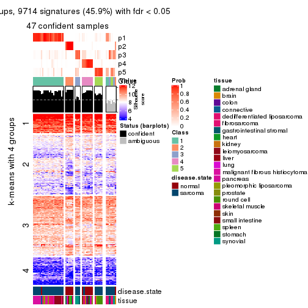
get_signatures(res, k = 6, scale_rows = FALSE)
Compare the overlap of signatures from different k:
compare_signatures(res)
get_signature() returns a data frame invisibly. TO get the list of signatures, the function
call should be assigned to a variable explicitly. In following code, if plot argument is set
to FALSE, no heatmap is plotted while only the differential analysis is performed.
# code only for demonstration
tb = get_signature(res, k = ..., plot = FALSE)
An example of the output of tb is:
#> which_row fdr mean_1 mean_2 scaled_mean_1 scaled_mean_2 km
#> 1 38 0.042760348 8.373488 9.131774 -0.5533452 0.5164555 1
#> 2 40 0.018707592 7.106213 8.469186 -0.6173731 0.5762149 1
#> 3 55 0.019134737 10.221463 11.207825 -0.6159697 0.5749050 1
#> 4 59 0.006059896 5.921854 7.869574 -0.6899429 0.6439467 1
#> 5 60 0.018055526 8.928898 10.211722 -0.6204761 0.5791110 1
#> 6 98 0.009384629 15.714769 14.887706 0.6635654 -0.6193277 2
...
The columns in tb are:
which_row: row indices corresponding to the input matrix.fdr: FDR for the differential test. mean_x: The mean value in group x.scaled_mean_x: The mean value in group x after rows are scaled.km: Row groups if k-means clustering is applied to rows.UMAP plot which shows how samples are separated.
dimension_reduction(res, k = 2, method = "UMAP")

dimension_reduction(res, k = 3, method = "UMAP")
dimension_reduction(res, k = 4, method = "UMAP")
dimension_reduction(res, k = 5, method = "UMAP")

dimension_reduction(res, k = 6, method = "UMAP")
Following heatmap shows how subgroups are split when increasing k:
collect_classes(res)
Test correlation between subgroups and known annotations. If the known annotation is numeric, one-way ANOVA test is applied, and if the known annotation is discrete, chi-squared contingency table test is applied.
test_to_known_factors(res)
#> n disease.state(p) tissue(p) k
#> ATC:NMF 52 1.22e-07 1.14e-04 2
#> ATC:NMF 50 9.75e-08 6.52e-07 3
#> ATC:NMF 52 1.20e-08 9.11e-07 4
#> ATC:NMF 47 9.98e-08 1.18e-07 5
#> ATC:NMF 32 1.91e-06 6.28e-05 6
If matrix rows can be associated to genes, consider to use functional_enrichment(res,
...) to perform function enrichment for the signature genes. See this vignette for more detailed explanations.
sessionInfo()
#> R version 3.6.0 (2019-04-26)
#> Platform: x86_64-pc-linux-gnu (64-bit)
#> Running under: CentOS Linux 7 (Core)
#>
#> Matrix products: default
#> BLAS: /usr/lib64/libblas.so.3.4.2
#> LAPACK: /usr/lib64/liblapack.so.3.4.2
#>
#> locale:
#> [1] LC_CTYPE=en_GB.UTF-8 LC_NUMERIC=C LC_TIME=en_GB.UTF-8
#> [4] LC_COLLATE=en_GB.UTF-8 LC_MONETARY=en_GB.UTF-8 LC_MESSAGES=en_GB.UTF-8
#> [7] LC_PAPER=en_GB.UTF-8 LC_NAME=C LC_ADDRESS=C
#> [10] LC_TELEPHONE=C LC_MEASUREMENT=en_GB.UTF-8 LC_IDENTIFICATION=C
#>
#> attached base packages:
#> [1] grid stats graphics grDevices utils datasets methods base
#>
#> other attached packages:
#> [1] genefilter_1.66.0 ComplexHeatmap_2.3.1 markdown_1.1 knitr_1.26
#> [5] GetoptLong_0.1.7 cola_1.3.2
#>
#> loaded via a namespace (and not attached):
#> [1] circlize_0.4.8 shape_1.4.4 xfun_0.11 slam_0.1-46
#> [5] lattice_0.20-38 splines_3.6.0 colorspace_1.4-1 vctrs_0.2.0
#> [9] stats4_3.6.0 blob_1.2.0 XML_3.98-1.20 survival_2.44-1.1
#> [13] rlang_0.4.2 pillar_1.4.2 DBI_1.0.0 BiocGenerics_0.30.0
#> [17] bit64_0.9-7 RColorBrewer_1.1-2 matrixStats_0.55.0 stringr_1.4.0
#> [21] GlobalOptions_0.1.1 evaluate_0.14 memoise_1.1.0 Biobase_2.44.0
#> [25] IRanges_2.18.3 parallel_3.6.0 AnnotationDbi_1.46.1 highr_0.8
#> [29] Rcpp_1.0.3 xtable_1.8-4 backports_1.1.5 S4Vectors_0.22.1
#> [33] annotate_1.62.0 skmeans_0.2-11 bit_1.1-14 microbenchmark_1.4-7
#> [37] brew_1.0-6 impute_1.58.0 rjson_0.2.20 png_0.1-7
#> [41] digest_0.6.23 stringi_1.4.3 polyclip_1.10-0 clue_0.3-57
#> [45] tools_3.6.0 bitops_1.0-6 magrittr_1.5 eulerr_6.0.0
#> [49] RCurl_1.95-4.12 RSQLite_2.1.4 tibble_2.1.3 cluster_2.1.0
#> [53] crayon_1.3.4 pkgconfig_2.0.3 zeallot_0.1.0 Matrix_1.2-17
#> [57] xml2_1.2.2 httr_1.4.1 R6_2.4.1 mclust_5.4.5
#> [61] compiler_3.6.0